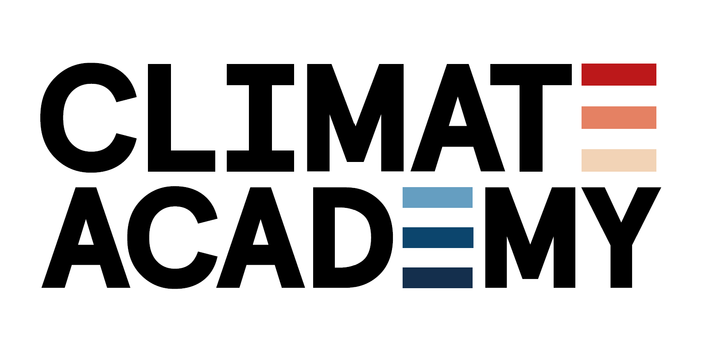
®
The Student Book
The Climate Academy was founded in 2012 to leverage understanding and action
to a systems level.
“As the Head of Philosophy at a European School I used to think that I was quite well educated.
I wasn’t.
I went to a talk on sustainability in 2012 that blew my head off.
I only found out about this reality by chance. It should not be like that for anyone, especially those who are going to inherit the mess.”
Opening lines of the Climate Academy Student Book.
Matthew Pye: Founder, Teacher, Author, Speaker
There remains a critical gap in the world’s educational programmes.
Can we really call our students educated if they do not understand the true dimensions and proximity of the climate crisis?
Modern education only provides a fragmented, superficial view of what is going on above our heads.
This Student Book is available entirely for free.
We are committed to the “Right to Know”.
This Student Book provides a clear map of the planetary boundaries and how close they are.
All 16 chapters provide an authoritative, full view of the crisis.
Each chapter has a different “subject” in the background.
Certificates of achievement available
Warning! No greenwashing is tolerated.
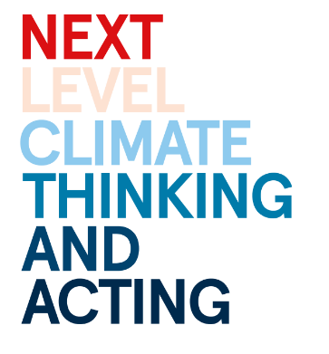
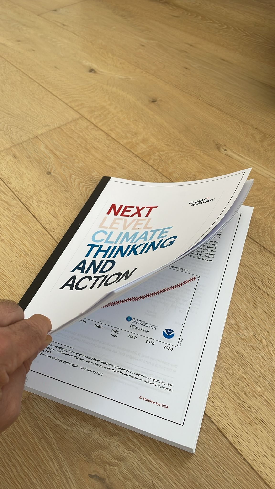
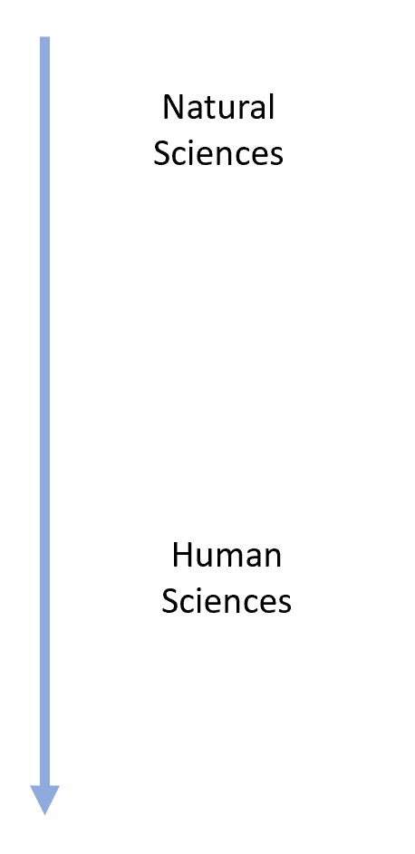
Chapter 1Chapter 16
Warning! This programme is clear and deep
The bottom line
As the Head of Philosophy at a European School I used to think that I was quite well educated. I wasn’t. I went to a talk on sustainability in 2012 that blew my head off. I was sat on the third row from the front to the left, in the Belgian Academy of Science. It was an evening that left a deep print on me.
I only found out about this reality by chance.
It should not be like that for anyone.
Especially not for those who are going to inherit the mess.
The details
There are some things that a modern education should obviously provide. Literacy and numeracy should be at the centre; the first enhanced by the human sciences, the second advanced by the natural sciences. It should also cultivate skills in sport, art, music, and an appreciation of the beauty of themselves and the other.
There is some core content too that it would be neglectful to miss. It would not be right if a student completed his studies with a full understanding of Norse mythology but had no awareness of the Holocaust. Schools should not send students into the world with an understanding of mitochondrial DNA and little understanding of what a penis can do.
Pause.
It is not profoundly weird?
We are in the middle of a mass extinction event. These have only happened 5 times before in the 4.54 (± 0.05) billion year history of our planet. This is something even more dramatic than an Olympic medal for San Marino. Climate change has put human civilization under the most acute and urgent pressure to make fundamental changes to how do we do things, otherwise we will soon have a catastrophic collision with the forces of nature.
Yet.
Many students will finish their studies, and their understanding of climate change might not be much more than the simple diagram that they drew a dozen times, in Geography, in Chemistry and Physics, and perhaps in Ethics too. It is the diagram with the Earth being heated by the arrows of the sun’s rays, that then bounce up and down inside the atmosphere. In the absence of a really engaged teacher in the school who has the energy to push things further, a student might not have challenged much beyond a vague concern for the fate of the polar bear and an encouragement to do more recycling.
This is not OK.
If we do not applaud a mature student for completing a simple mathematical test of addition and subtraction, why is it common to enthusiastically applaud a group of mature students that have collected litter or reduced their plastic waste?
Anyone with a proper understanding of the climate emergency would understand the need for bluntness. It is impossible to hold a sound knowledge of the science of the sustainability crisis and think that every modern educational system across the world is not hopelessly and dangerously out of date. The truth is, we do not advance our students understanding of the environment much beyond material that could be done in primary school.
Until just a few years ago, schools would commonly hold public debates about whether climate change is caused by humans or not. Indeed, I have anecdotal evidence of geography teachers who still set that question as homework.
WTH
It is important to learn from history. It took the Catholic Church nearly 400 years to rehabilitate Galileo after he put forward the absurd idea that the Sun lies at the centre of the solar system. Although, to their credit, they did issue some postage stamps with his face on in 1994 as a form of apology. The problem with being slow to recognise the science of climate change, and the wider science of sustainability, is that the future of human civilization is at stake, not just an abstract Aristotelian world view.
If it was possible to get hit on the head by a high-speed tectonic plate on the way home, you would certainly want your child to know about those kinds of dangers and you would want them to be properly protected. Fortunately, those plates are far too big and heavy to fly so fast, but we would surely update our Geography textbooks if that threat were real.
These are not the hysterical rants of someone who has spent too much time on a weird YouTube channel. These are the just the emphatic conclusions of mainstream science.
Education is not alone in its abysmal response to the crisis. Somehow, sustainable development remains an afterthought at almost every level of our social, economic and political thinking. The ecological systems that are the foundation to all life on Earth are approaching tipping points that would destabilise human civilization, but the environment is still not the first principle of our decision making.
Those who ‘get it’ know that using strong language about the environment is very tricky. We have such a short fuse for negative information, and the reality of climate change is really just very odd and uncomfortable. There is a layer of our psychology that just cannot accept that the natural world could become so hostile to us. If anyone does insist on using words such as “system collapse” or “tipping points”, it is somehow easy to think that they are being overly pessimistic. Despite the gravity of the science, the status quo remains extra-ordinarily resistant to change.
The truth is that schools, in parallel with the rest of human society, is just too timid, too busy and too preoccupied with meeting the usual targets to really find space to deal with sustainable education with any level of depth.
I do not know how many people will end up reading these words. But these will be the first pages of the guide for my Climate Academy. I set this up about a decade ago during a lunchtime because that was the only possibility. It is now time to formalise all the experience and understanding into a decent guide that can be made available to every school. I am typing in the summer holiday because it is hard to find the space during term time (it won’t be finished until September next year).
It shouldn’t be like this. Maybe it is time for teachers to protest by refusing to teach core content?
Perhaps Maths teachers should avoid using the number 3 all year? Perhaps English teachers should avoid the word “the”?
Would that be more absurd than not properly educating our children about the climate crisis?
Finding the right seat (N°2)
After the lecture in 2011, it took me a while to make sense of everything. How could I not seen things clearly before? I had heard about climate change before, I knew about various ecological issues. But something major in my head and heart shifted in 2011.
Being a Philosophy teacher, I am often on the look-out for metaphors or helpful short anecdotes that can illustrate complex or abstract things in simple images or narratives. After a bit of wrestle, I remembered something that helped me understand what went on in the Belgian Academy of Science back in 2011. But I had to go backwards 20 years to find it…
“The Upper Room”
In 1991 I was visiting my brother who was studying Maths at Durham University. To explore, I took a stroll along the side of the River Wear that curls around the city and its remarkable Castle and Cathedral.
Figure 1, Durham Cathedral
To my left, a small clearing in the wood appeared. In the space, were several grand upright timbers, marked out in a roughly rectangular formation.
It looked like an unfinished children’s play area. It was just missing the ropes between the logs… for those with the right level of enthusiasm to straddle their way from post to post. There was a plaque in front of the clearing. However, the plaque was not a health and safety notice from Durham council about the most appropriate ages for such a play area, warnings about depositing dog dung, or various legal disclaimers.
It just stated, rather unexpectedly, “The Upper Room”.
On closer inspection, walking around the bald trunks of those Dutch Elm trees, some surprising details became clear. On most of the trunks, far above eye level, someone had chiselled out segments of stone window arches. On a few, at knee height, someone had sculpted out a few pots. And on others, at waist height, there were shapes that looked like bits of plates and bowls.
Figure 2, "The Upper Room" from the outside. Public Art Research Archive, Sheffield Hallam University
It was all a bit random.
There was one wider upright timber with fewer detailed markings on it. This large trunk stood at one slightly narrower end of the formation. It had an inviting seat cut into it. So I accepted the invitation.
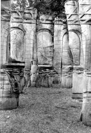
Suddenly, I found myself in the middle of The Last Supper. Now, in front of me, the other 12 trees all lined up in my view and formed a startling wide-screen image. I was looking into a room where each tree and every detail had become part of a 3D, large scale jigsaw puzzle. The space had been transformed, and I was sat in “The Upper Room”.Figure 3, "The Upper Room" from inside. www.colinwilbourn.co.uk/outdoor-wood/
I had found the right seat.
For those unfamiliar with the biblical narrative, it was here that Jesus shared his final meal with his 12 disciples - a last moment together, before his arrest, trial and ritual self-sacrifice. It was in this Upper Room that the world view of the 12 disciples started to unravel in dramatic style, as Jesus tried to explain his fate in different symbols. He understood himself to be the embodiment and fulfilment of Jewish history. No more slaughtered lambs or bulls, no more burnt pigeons. This was the going to be it, because he understood himself as IT. These last days would have a monumental impact on human history. Indeed, his followers have been eating his flesh (bread) and drinking his blood (wine) every week ever since.
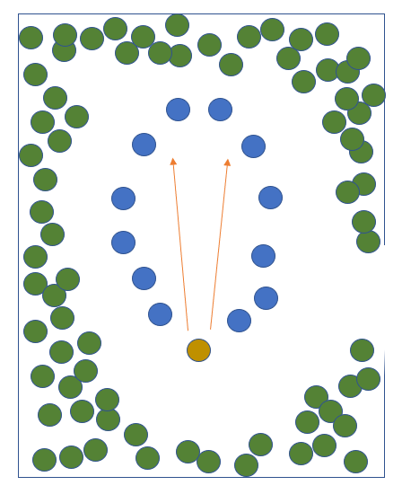
From a distance, the details of any religion look truly odd, haphazard, banal even. The beliefs and customs of a religious community make little sense from the outside. How curious it can be, maddening even, to observe obscure religious rituals and practices. What on earth is going on in the heart and mind of the believer involved? With a bit of effort, maybe on a holiday visit to a temple, a museum, or maybe out of general curiosity, we can wander around on the outside of a religion, examining the details. We can try and make rational sense of it by looking at the facts, the context, and the claims made. They can appear well crafted and considered. But as an observer, from the outside, the whole thing will always lack synergy.By contrast, from the inside, it all makes powerful sense.
You need to “get inside” this work of art by Colin Wilbourn (“The Upper Room”, 1998) to understand it, just like you have to belong to a religious community to understand what is going on.
All the fragmentary, often contradictory aspects of life form part of a coherent, wider picture of reality. Religions provide a clear frame for understanding the world. Finding your place in a religion can be a profoundly moving experience. This is especially true if it is a sudden moment of enlightenment, where everything just unexpectedly clicks into place.
Such moments do not have to be religious of course. Probably the most common experience of finding synergies in the world happen when we find ourselves in a loving relationship. These relationships often don’t make much sense from the outside. Why him, why her? There is rarely a rational explanation for why we fall in love. Sometimes love is found with people who are utterly different to us. There are other places that we can find synergy of course: the starry night, a deep sunset, a moment of laughter in a group where you suddenly notice that you belong, a book, or even sometimes just the wandering mind on a bus that settles into a place of understanding.
These symbolic moments can also happen reverse. A loss of meaning can be abrupt, usually for tragic reasons. Whatever the cause, the bright stars that make up the main constellations of our life, can fade or suddenly disappear. The map of meaning that we used to guide our decisions had made so much natural sense, but it can get confusing and fail us. Like in that clearing by the river, everything in the world can revert to looking like dead wood to us.
Just there. Random. Shapeless. Obsolete.
The search to find connections and shape in the events of our life can be deeply frustrating and desperate when everything appears so broken and disjointed. We are insatiable storytellers. It is one of the most wonderful and deepest marks of being a human being. At a gut level we want to be able to see or feel how everything fits together. It is a most basic human activity to search for a home, for somewhere to rest. Even if we do not admit it to ourselves, we all seek a seat from where everything can make settled sense.
Of course, in the shadow of the historic Durham Cathedral this sculpture has a clear religious symbolism. But good art triggers many different levels of revelation. Good art can provoke a whole range of thoughts.
By the end of 1991 the sculpture was withdrawn because the wood had rotted too much, but that was certainly not true for the ideas it provoked.
The common details of climate change had been familiar to me. Storms, coal mines, polar bears, rising temperature graphs, floods, deforestation, recycling, oil tankers and pipelines… but I now understood how it all fitted together, I got a proper perspective. I saw for the first time, the real depth of the problem. What happened in the short lecture was that I had jumped from just seeing lots of details about something, to an awareness of the system.
In the Belgian Royal Academy of Science, in that conference room, I had found the right seat to look at everything.
Take the global temperature rise as an example.
Looking at some particulars is informative: the increased intensity and frequency of hurricanes, the fate of the polar bears and the rise in the number and length of destructive heatwaves – they are all important details. But this is like noticing the details of the plates, jars and table-tops on the individual trunks of “The Upper Room”. They can catch the attention from a distance, but they are not what it is all about.
But climate change cannot be properly understood like this. These are only a few fragmentary pieces of the jigsaw. Global temperature rises must first be thought about as a systemic issue. It is only when we get the right vantage point with temperature that all the other details make any proper sense. Sitting in the right place to look at the data and the trends is fundamentally important.
Indeed, the details can be misleading. For example, taken from a British perspective, a temperature rise of 2°C does not sound like a big deal. In fact, on most days in Britain an extra 2°C would be very welcome indeed.
As Wilbourn’s chiselled art illuminated, having the bigger picture is not just a helpful extra: it really is what it is all about.
This is how we must first think about temperature rise. Anybody with a 2°C temperature rise in their own body (their own private biological system) will not feel good. It makes you fatigued and feverish, unable to function at a normal level. Sustained over a long period of time a 2°C rise even starts to break down the bodies’ vital organs. A 4°C rise is a medical emergency, technically known as “hyperpyrexia”. It requires immediate hospitalization to prevent a total collapse, and if untreated, death.
Everything we do, every ambition we have, is plugged in at the most basic level to the biological system of the planet. An ecosystem. This system has evolved over millions of years to function at a certain average temperature. Geologists inform us that the last 17,000 years (the ‘Holocene’) have been especially stable, favourable and benign. It is simply not possible to suddenly upend this equilibrium and throw this system into another gear and expect it to function as we would expect. Indeed, if we push it up towards 4°C we will cause a collapse.
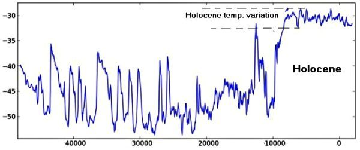
Figure 4 50,000 year History of Temperature of Greenland ice surface (C°) (Hansen, 2013).
At current speeds of emissions, we are only a dozen years or so away from locking in a 2°C rise, and we are on course to threaten 4°C by the end of the century.
The particular problems of temperature rise are of course serious. The plight of the polar bear, horrors of hurricane Katrina, all these kinds of details are indeed tragic. However, these symbols of climate change have to be pressed to their full symbolic conclusion. Otherwise, we get trapped inside local, limited thinking and acting – and to be blunt, it is not good enough.
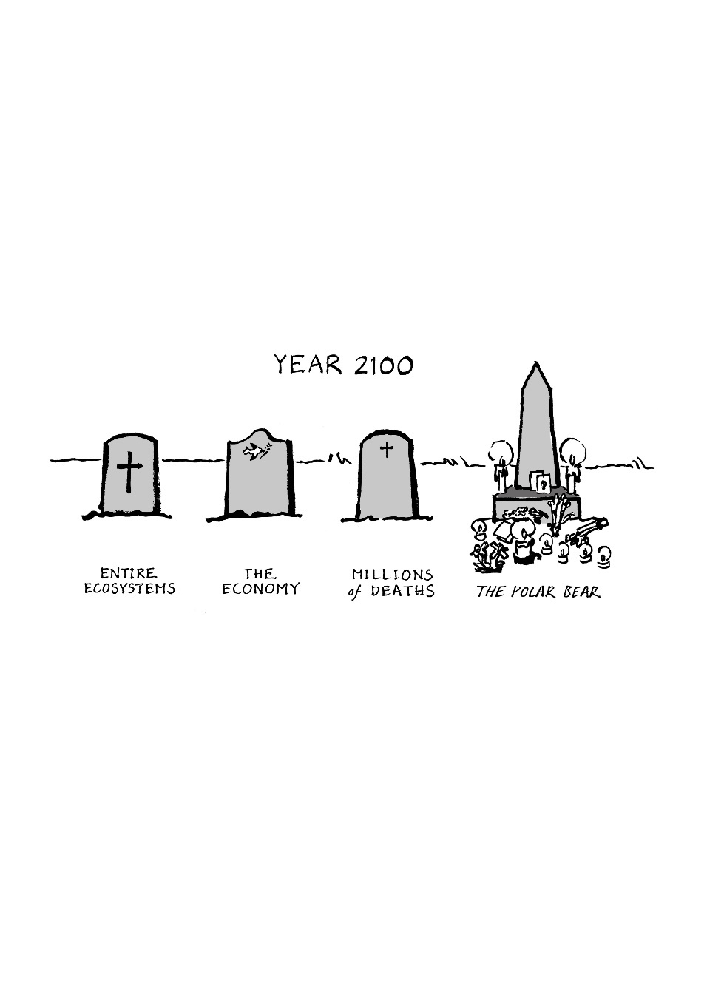
Figure 5 Cartoon by Carl Jonsson. Climate Academy graduate, 2016
The humans alive in 2050 will not judge us by our small actions, they will judge our efforts by the overall result – that can be measured with the greatest accuracy as greenhouse gas concentrations in the atmosphere.
Just to press home the importance of this systemic understanding of temperature, a consideration of the wider systemic context of the plight of the polar bears is illuminating. The rapid heating of the arctic circle (that is far above the global average) will soon cause an ice-free summer at the North Pole. The subsequent loss of reflective white snow and ice will mean that the sun’s thermal energy will be hungrily sucked into the dark arctic water at an exponentially faster rate. Ice with snow has an albedo (α) of 0.9 which is close to the maximum of 1 – so our polar regions are now bouncing monumental amounts of thermal energy back into space. Whereas an open ocean just loves to suck up the heat with an albedo of approximately 0.06.
Warmer seas, warmer, thicker atmosphere, and the ice rate loss accelerates… and a vicious feedback loop has kicked in. A powerful chain reaction that will have massive knock-on effects around the planet. Not least because the settled disc of cold arctic air that currently circles around the Arctic Circle (the Polar Vortex) will be become decentred and destabilized, and then it will eventually dissolve.
This is the climate equivalent of the front wheel of your bike falling off whilst going very fast.
Who knows where all your body parts are going to end up?
Polar bears, people, phytoplankton, pineapples, probiotics, pine trees, potatoes, peas, penguins, pumas and prawns, it is all part of the same biological system. Climate change is a systemic emergency. And if our thinking about climate is not systemic our responses to the threat will never be adequate. As educators we have a duty of care to bring our older students to this fuller understanding. Climate change requires systems thinking and systems change, as the proper context to any individual action.
No one who understands the depth of the cuts in emissions required would talk about recycling as if it were remotely significant. No one who understands that the root cause of our continually rising global emissions is excessive consumption, would think that Sweden or the UK is an environmentally friendly country. Whilst millions of individual people rightly try to reduce their carbon footprint, there are simply no laws in place at a system level to stop governments and corporations from investing trillions of dollars in monumentally destructive infrastructure and business projects, as if there was no carbon limit at all.
We are wired to see details and particulars. We are primarily sensory animals. And far too many citizens have only ever been provided with a primary school level understanding of the problem.
We need the key science, and we need powerful art to bring the details of our situation together. We urgently need to provide everyone with a proper view.
This is what the Climate Academy was designed to do. It plots out in 15 chapters, tree by tree (so to speak), the systemic crisis that we are in. It is mindful of the best place to sit to see it all in its proper scale and dimensions. It is careful to plant the key posts of natural science and human science firmly in the ground. The central pillar, the CUTx Index (Chapter 7) is central to all the projects that the Climate Academy engages with. The data and analysis in this chapter has been endorsed by the world’s most eminent climate scientists. The CUTx index is a simple, clarifying set of numbers that show what each nation in the world must do to avoid us going over the 1.5°C and 2°C warming thresholds. By having a clear central reference point, students in the Climate Academy can indulge their particular interests and skills whilst enjoying a sense of coherence. It is the seat that really helps line everything else up into view.
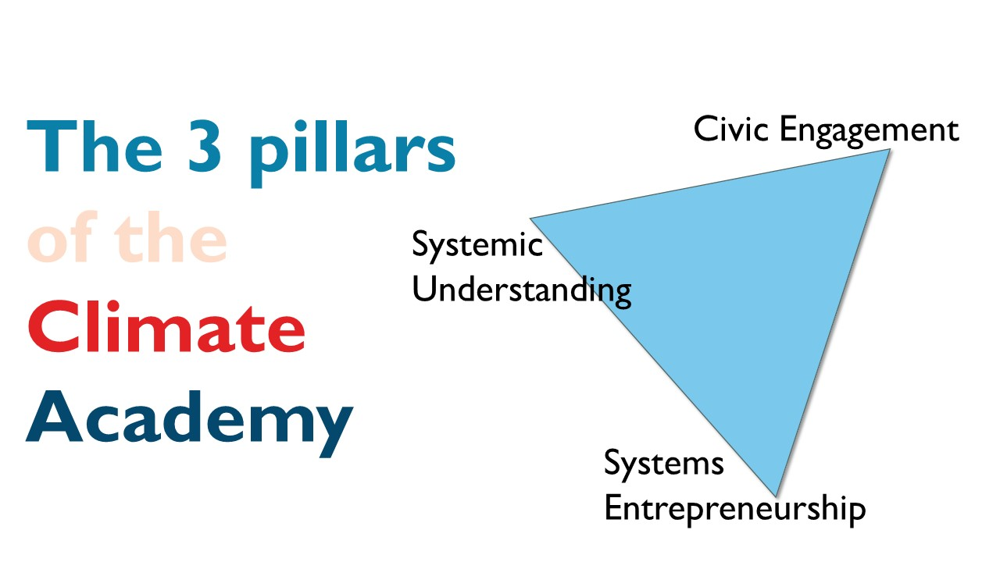
But of course, the Climate Academy is not about sitting down.
After getting a systems view of things, it is time for action. The second pillar of the Academy is all about engaging in the democratic space: peer teaching, events, projects, publications in writing, pictures, videos and other media. For this, you can work in collaboration with the wonderful youth journalism organization, News Decoder.
And finally, as the students experience the friction and the flows involved trying to raise a proper systems awareness of the crisis, certain ‘meta’ skills will start to arise. These are the funky, creative skills of systems entrepreneurship. These are the ‘deep green’ competences: problem framing, political autonomy, engaging with complexity, resilience, critical thinking, strategic communication and networking, , and so on.
What’s not to like?
So many students aged 16-18 are not given the chance to understand the climate crisis in its proper depth. So many do not have the chance to explore their own skills and interests in a safe and constructive space. The Climate Academy is not for everyone, it doesn’t have to be.
Harvard Professor of Political Science, Erica Chenoweth, found that throughout human history, major social change has only ever needed (no more than) 3.5% of the population to really engage. Or as Margaret Mead once wrote, ““Never doubt that a small group of thoughtful, committed, (global) citizens can change the world. Indeed, it is the only thing that ever has.”
If you are reading this introduction, it could well have landed in this situation because you are one of those change makers.
Warning: This programme will get you seriously engaged
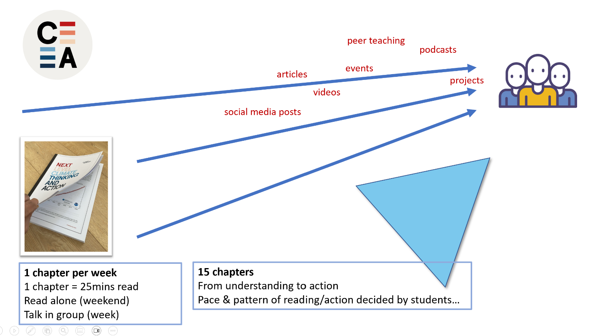
16 chapters
From understanding to action
Pace & pattern of reading/action decided by students
Standard engagement time = 1 year
The programme is designed as an extra-curricular course, but it can also be run:
Inside a subject (e.g. English as a foreign language, Ethics, Citizenship…)
Across different subjects (in a specific, focused time frame)
Warning: This programme is rooted in the most authoritative science.
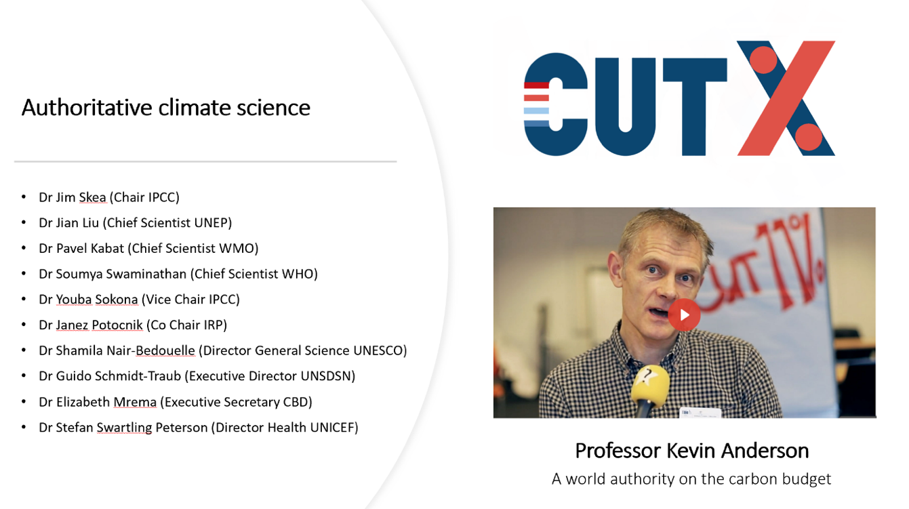
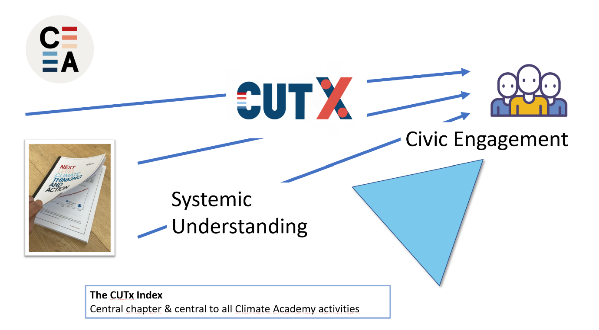
The CUTx Index provides the book and the Academy with authority & coherence
*Red denotes essential core chapters.
| Traditional School Subjects | |||
|---|---|---|---|
| 1 | The Absolute Basics | Physics | Chemistry |
| 2 | Mass Extinction Events | Biology | |
| 3 | Spaceship Earth | Physics | |
| 4 | Where are we now? | Geography | |
| 5 | The United Nations? | Art | History |
| 6 | Who is responsible? | History | Economics |
| 7 | The CUTx Percent Index | Geography | |
| 8 | Tipping Points – Physical | Geography | |
| 9 | Paradigm Shifts | Philosophy | |
| 10 | Tipping Points – Social | Sociology | History |
| 11 | The Psychology of Climate Change (1) | Psychology | |
| 12 | The Psychology of Climate Change (2) | Psychology | |
| 13 | The Paradox of Innovation | Economics | |
| 14 | Climate Anxiety | Literature | |
| 15 | The Climate Academy (i) | Philosophy | |
| 16 | The Climate Academy (ii) | Philosophy | |
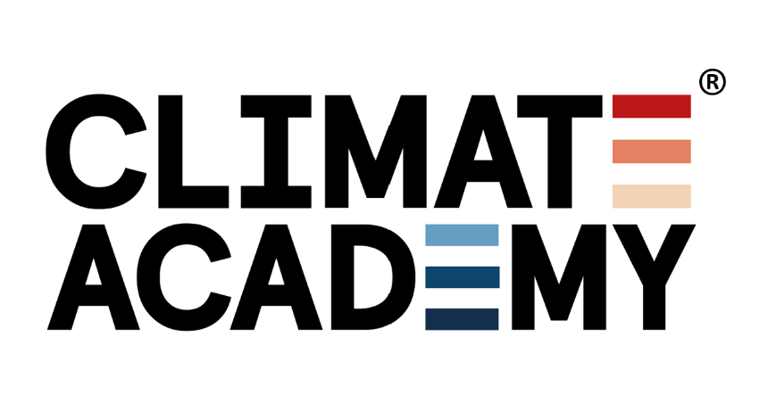
Chapter One
Chapter SummaryThis opening chapter points at the vital statistic for human life on our planet: the level of greenhouse gases in the atmosphere. Why should 426 particles of CO2 in every million particles matter? It is a tiny amount. How could such small thing be such a big deal? Why should we be bothered about remote, abstract, scientific facts? The Climate Academy is committed to providing a clear systemic viewpoint. Without this perspective, it is easy to miss what really matters. Greenhouse gases matter because they raise the temperature of the atmosphere. And this temperature has to be understood systemically. Your body is a bio-system, and it cannot cope with even a small change in temperature across the system. It is called a fever, and it has miserable side effects. For a human being, an extra 4°C for the body is a medical emergency. Likewise, the Earth is a large bio-system. You cannot suddenly shunt up the temperature up, without massive consequences. This book starts with these absolutely basic system facts. These facts are not visible without the help of scientific research and graphs. But they really do matter. |
|---|
An adult brain is the size of a decent melon and weighs over a kilo. It is filled with about 100 billion neurons1, and each neuron has thousands of synaptic connections with other neurons. This astonishing piece of biotechnology consumes around 20% of the total body energy budget as it processes a vast stream of data. But despite the remarkable power and complexity of our brains, there are some things that are just out of our natural reach.
Right now, as you hold these pages, there are pet dogs tracking smells that we could never detect, there are domestic cats alerted to sounds that lie well beyond our range. There are millions of quarks passing imperceptibly through the Earth… and there are galaxies (far, far away) in which Supernovas are spilling out their enriched guts into the universe.
There are many more dimensions to reality than those that we are used to in our everyday lives. To get a fuller understanding of what is going on around us we have managed to develop high-precision scientific technology. The modern A to Z of scientific instruments is a curiously diverse collection, from Absorptiometers to Zymosimeters and hundreds of others in between. We can now look out into the deepest past of our universe and zoom down into the whacky world of quantum entanglements.
Climate change is a reality that is known through science. For example, the Mauna Loa Observatory in Hawaii has been measuring the monthly mean atmospheric CO2 level since 1958 to an accuracy of one molecule per million2. In March 2016, the reading went over 400ppm for the first time3; by March 2022 it reached 420ppm4.
So, what, you could ask? Perhaps as you absent mindedly stared at your box of Cornflakes in the morning, you might have noted that there are 5.4 µg of Vitamin B12 in every 100g. A high-precision reading, but that measurement did not make you suddenly choke in shock and awe. You would not feel compelled to share this nutritional fact on your phone. It certainly would not flip your worldview upside down and transform the way you see your future.
The truth is that a reading of over 420ppm CO2 particles in the atmosphere should cause you to choke on your morning cereal. This reading is the key measurement of a dimension of life on this planet that lies beyond our immediate senses. This reality is understood comprehensively by thousands of lines of scientific enquiry. It is called climate change, and these modules will expose and explore why it is all so astonishingly and fundamentally important.
A clear understanding of climate change is a brutal shock to the system. It is an offence to our common sense of the world. The sheer size and scope of the problem is hard to wrap your head around. Indeed, in many ways we just can’t. We are humanoid. We are mammals. We are geared to respond to immediate threats - we are wired to react to loud bangs, not graphs. But the graphs do not lie. Our ability to use reason to join up dots of evidence provides us with access to something that is going on above our heads.
Despite the abstractness of these conclusions, the truth is that this reality will impose itself on human life with an intolerable level of violence and disruption. Global warming is a brute fact, whether we are willing to look at it or not. The earlier we engage with it, the earlier we deal with it, the better chances we have of avoiding its most destructive effects.
Living in Flatland
The English school master Edwin Abbott Abbott [sic] was very, very [sic] aware of the limits of human perception. Being a good teacher, he wanted to pass this ignorance on to his students.
He wrote about his limited understanding in a short little book named “Flatland” (1884). This book is narrated by “A Square”. Taken at surface value, it is about a two-dimensional shape who gets into real difficulties when he visits different dimensions. Firstly, A Square has a disturbing dream about a visit to “Lineland” in which no-one can recognise who he truly is because they just see him as a sequence of dots. In fact, the monarch of “Lineland” feels so threatened by the absurd notion of an extra dimension, that an attempt is made to kill him.
Then, after waking up from this awful dream, things become more disturbing.
A Square encounters A Sphere. And so, in a shocking twist, the problem is reversed. No matter how hard A Square tries, he just cannot understand what A Sphere is talking about. A Sphere tries to show the depth of the 3-dimensional world that he comes from, but all A Square can see is a series of linear circles and ovals.
That is until he visits Space Land.
In Space Land he comes to understand how limited his previous experience was. After seeing the deeper dimensions to existence, he returns to his native Flatland. Predictably, his insights are not accepted and suppressed by those in power. However, A Square cannot unsee what he has seen, and he insists that his claims about a third dimension are true. Towards the end of the novella, A Square tries to convert his Grandson to the ‘Gospel of 3 dimensions’ but his attempt to explain the radical difference between going ‘Up’ and going ‘North’ is a futile one, as he cannot point to it in two-dimensional space.
The ‘Grand Council of Flatland’ eventually arrests him for his subversive attempt to challenge the status quo. It is during his imprisonment that “Flatland” is written, in the hope that it “may stir up a race of rebels who will refuse to be confined to limited Dimensionality”.
Although Abbott’s book is quite funny, it was not just a bit of mental acrobatics about lines, shapes and dimensions. There were psychological and political angles to his book. He was offering a critique of the rigid social hierarchies of Victorian England. Yet, the book was largely ignored after its publication in 18845.
Abbott was a teacher, and he wanted his students to confront the limits of their common sense of the world. Climate change first demands humility. Knowledge and understanding are not simply acquired by the intellect. It requires courage to think outside of our normal boundaries. Within an individual, just like within society, there is often a fight for control over what is permitted to be known.
Conclusion
The situation we are in demands that we become fully human. We need to think and act beyond just our basic instincts and sensibilities. Indeed, there is a major upside to the climate crisis: it will force us to be our true selves. A full response to climate change will make us deeply human. We are wonderfully, beautifully, multi-dimensional creatures. The transformation of human society ahead will either be catastrophic or simply wonderful. Either way, it will not happen without struggle.
Let’s be frank6.
There is no point investing any further time reading this book or engaging in any urgent efforts to fix the climate crisis, if there is no such crisis (or if it is already much too late to do anything significant about it). We all have other stuff we could be getting on with. The basic science of our situation must be very robust; getting the evidence straight is fundamentally important. This respect for data and the latest conclusions of mainstream science avoids two dangers: it prevents us from being too casual about the severity of the crisis we are in, and it prevents us from undue alarmism.
Any book worth the effort on climate change must therefore be written on a rock-solid scientific base. Not only that, a decent book on climate change has to provide a proper landscape of the situation. It is easy to get lost in the details, it is easy to miss what the central conclusions are. This opening module will put this important frame in place.
There are two absolutely basic issues to address here: global warming, and greenhouse gases (GHG).
Global Heating
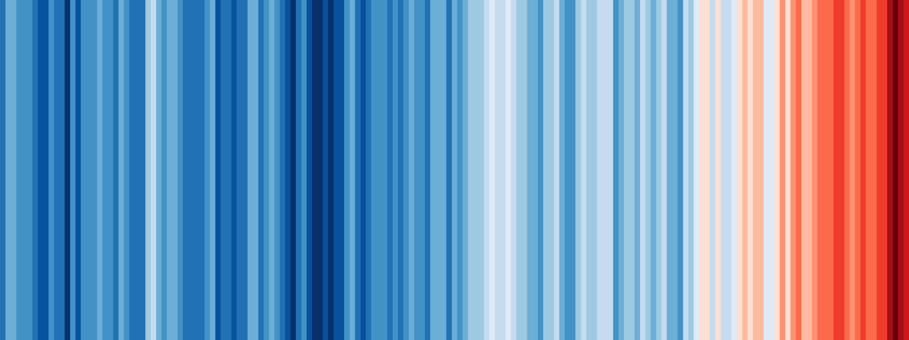
Figure 6 "Warming Stripes", Ed Hawkings (from HadCRUT4 data)
It is easy to understand why A Square found it difficult to see the hidden depths of A Sphere. Although the suppression and punishments that A Square suffered are clearly not to be applauded, it is easy to understand how whacked out his claims must have seemed to everyone in Flatland. Likewise, there are significant psychological and political obstacles to seeing the reality of climate change. These will be given their proper attention in the Module 10.
But honestly, there is not much excuse for any kind of hesitation – look at the chart above.
These “Warming Stripes”7 demonstrate just how radical the shift in the average global temperature has been since the start of the industrial revolution. The first stripe of colour, on the left, represents the average global temperature for the year 1850; the last stripe of colour, on the right, represents the latest thermal data.8 The contrast between the cool blues on the left and the hot reds on the right is vivid. Behind every stripe of colour there is a huge store of raw data collected from various scientific instruments.
Things are getting hotter. Given the complexity of our Earth climate systems, it is not a surprise to see that the pattern of change is irregular. However, the acceleration of change in recent decades is emphatically clear. The climate crisis is very real.
We are bipedal mammals, living day to day. It is true that in our normal everyday experience of walking outside in the wind, the rain or the sunshine, it is impossible for us to get a reliable picture of long-term changes. A problem compounded by the fact that we can only be in one place at once. This has often been likened to the difference between a tree and a forest. When you are in the middle of a forest you can only see the trees around you; each tree is like a weather event. By contrast, the whole forest remains out of sight. Not only can you not see the trees hundreds of miles away, but the forest has been around for hundreds, thousands or perhaps millions of years. The forest, in this fullest aspect, is like the climate. One dead tree does not signify anything about the forest, you need to be able to look at the bigger picture. One flood or storm, one cold or warm winter, does not signify anything about the climate. You need to have much deeper and wider data to be able speak scientifically9.
Thankfully, Science can make the reality of the climate crisis crystal clear. It can summarise a vast amount of data, from different times and different places, into a small space on a page for our eyes and brains to see it.
So, things are getting hotter.
Why is this such a problem?
The scale of the problem led 196 nations of the world to sign up to “The Paris Agreement” in 2015. They agreed “to limit global warming to well below 2°C, preferably to 1.5°C, compared to pre-industrial levels”.
A rise of 1.5°C, or 2°C might not sound like a big deal. We might have recently planned a trip outdoors and checked the forecast again in the hope that it would have notched up a bit. In winter months, we have probably given the thermostat a little nudge for a bit of extra comfort. What’s the big deal? A rise of 2°C does not naturally trigger loud alarm bells in the public imagination. It would not be that surprising to think that the human impacts of climate change might be fixed with a bit more suntan cream.
However, a raised temperature is a big deal. It is a systemic problem. Anyone who has had a fever for a few days at 39°C will know how lethargic and grumpy it can make them feel. Moreover, doctors inform us that if an elevated temperature is not treated for several weeks, then vital organs can start to break down. In fact, a 4°C rise for humans is a medical emergency; vital organ damage occurs, and death will follow if the temperature is not lowered quickly. It is called hyperpyrexia.
All life has similar difficulties with movements in temperature outside of their tolerance zone. The parallel between ecological systems and the human body is only a metaphor, given that different organisms experience heat stress differently. However, it gives a good approximation of the deadly consequences that await human civilisation. Shockingly, we are on track to lock-in such dangerous high temperature rises by the end of this century, if not well before. It is crucial to not underestimate the systemic dangers of escalating levels of greenhouse gases in the atmosphere.
In 2019, global average temperature was 1.2°C higher than the pre-industrial level. Since 1980, each decade has been warmer than any preceding one since 1850.10 The seven warmest years on record have all been in the past seven years11. To illustrate this trend, Furnace Creek in Death Valley (USA) set a new record when it recorded a temperature of 54.4°C in 2020 12 (and again in 2021) 11. Temperatures so hot, the chickens in Inyo County (CA) were actually laying hard-boiled eggs for over a week13.
Almost all the media attention on climate change is zoomed in on particular events – most typically, floods, storms or forest fires. These events are profoundly tragic for those who get caught up in them and deeply affecting for those who observe them from a distance. Of course, it is entirely appropriate to report on them and highlight the suffering and issues involved. However, when the media only covers climate change like this it misses the fundamental problem of the global heating that is speeding up: its systemic impact.
The heatwaves, droughts, floods and storms are the most vivid signals of the increasing stress. These events hit our senses with force. They illustrate the gap between the ambitions of human civilisation and the pathway that the natural world is on. The dots of natural disasters that put increasingly large blots onto the record books of meteorologists and insurance companies are important moments in the dot-to-dot of climate change.
However, a wider zoom is needed to really have a clear view of the dangers ahead. This wider zoom requires us to think in more abstract terms, it needs the work of science. It needs the long reach of scientific research. This extra level of abstraction and reasoning is why it gets less media attention, but this view of the biggest cogs of the Earth’s systems are where the critical action is actually taking place. From the vantage point of climate science, there are things which the scientists can see that sometimes keep them awake at night (and this is not simply a metaphor).
Climate science is attentive to some huge interlocking cogs that are in place around the planet that define how the whole of life works. If any one of these cogs is disturbed the consequences will play out in radically chaotic ways. These cogs define the grammar, not just the vocabulary of life. They are the fundamental principles, not the details.
For example, we have permanent ice at both poles, these in turn fix the configuration of the Polar Front. The Polar Front jet stream is one of the major ribbons of very strong winds (up to 200kmh) that flow around the globe in entrenched patterns, hundreds of kilometres wide. A destabilisation of this monumentally large pattern of energy transfer would be catastrophic.
Let’s be honest, any consideration of the forces that dwarf our humanoid perspective of things is difficult – both psychologically and emotionally. It is probably one reason why Education, like the media, has been shy and reluctant to handle it. It is material that is not appropriate to teach to younger children. But can we honestly consider ourselves well educated if we did not know that the real damage caused by rising temperatures has the potential to cause the collapse of human civilization? If students attending university were not really aware of who Adolf Hitler was or if they did not really know what Google is, there would be serious questions to ask about their basic awareness of the world. Yet, how many university students have a clear understanding of the depth and severity of the climate crisis? How many would be able to explain why climate change is so much more of a threat to human life than the issues arising from plastic waste?
There are lots of ways to express the serious negligence of our current educational standards. Is it like forgetting to mention on your Tinder profile that you are actually a vampire. It is like loosening the wheel bolts of your high-spec Porsche before driving for a blast down the A7 Autobahn. Or, perhaps most appropriately, if you are still in primary school (and not able to read this yet), it is like you are being very careful to not knock over a glass of your favourite juice at the family dinner table, whilst some mad uncle is sawing away at the table leg.
The consideration of these interlinking big cogs of our planet deserves its own space in a later module, “Chapter 8: Tipping Points - Physical.” But for the moment, it is simply enough to state that temperature, even if it is a seemingly small adjustment of 2°C, is a really big deal.
The extra heat energy that we have to cope with comes from the escalating concentrations of greenhouse gases in the atmosphere. Science has known of the greenhouse gas effect since 1824, through the work of French physicist Joseph Fourier. In 1856, Eunice Foote provided the first key chemical details of this effect when she established that H2O and CO2 trap heat.14
Modern science can measure, in a remarkably precise manner, which particles make up the atmosphere above our heads. As noted above, the Mauna Loa Observatory in Hawaii has been measuring the concentration of atmospheric molecules, expressed as parts per million (ppm). This data has been plotted onto a graph known as ‘The Keeling Curve’, so named after the scientist Charles David Keeling, who set it up. The Mauna Loa reading at the time of writing (March 2022) signalled that there were 420 particles of CO2 in every million (420 ppm).15 Nitrogen (N) makes up over three-quarters of the rest with 780,900ppm, alongside Oxygen (O) that occupies 209,500 ppm.
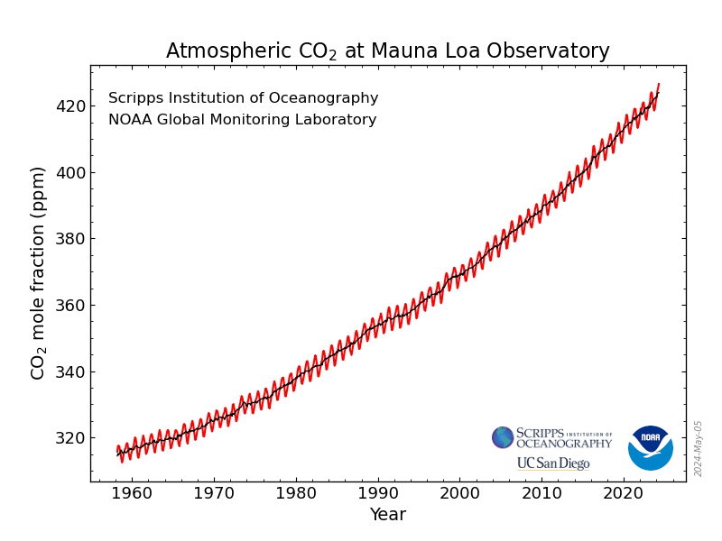
420 parts per million16 does not sound like a lot, it is only like a can of coke sat in the corner of a classroom. However, a carbon reading of 420 ppm informs us that we have bumped up the level of CO2 by almost 50% since the start of the Industrial age.17
This is a concentration of CO2 that is unprecedented in around 4 million years and when geologists look back in time to previous epochs that had the same levels of CO2 they do not see a world which is compatible with human civilisation as it is now: “Current levels of CO2 correspond to an equilibrium climate last observed 3-5 million years ago, a climate that was 2-3°C warmer than today, and sea levels that were 10-20 m higher than those today.”18
It will take us into an utterly alien world for our species. This is a kind of situation that is very hard for us homo sapiens to even think about.
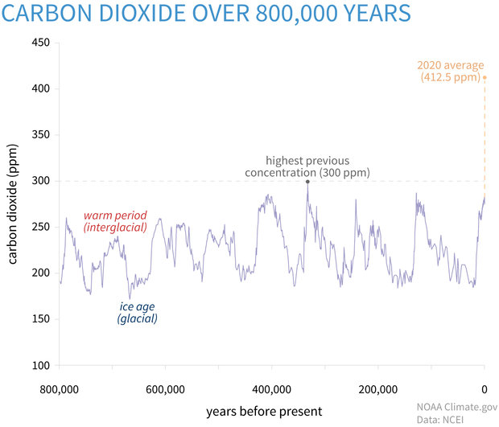
One problem we have is that because the climate has been so temperate and accommodating in the past, it is hard to imagine that the whole system could switch so dramatically to become such a dangerous enemy. Indeed, human beings have just experienced an unusually balanced and warm climatic period known as the ‘Holocene’ that lasted from 11,700 BCE until the modern day. This calm interglacial pocket of time provided the favourable conditions that helped Neolithic homo-sapiens to grow up and then served as the background for our more immediate ancestors’ development in the Bronze and Iron Ages.
Science also enables us to look much further back over our shoulder further into the distance.
Beyond the Holocene, the hominoids who lived in the last 800,000 years of the Palaeolithic Age, lived on an Earth with wider swings in the patterns of climate. From this wider perspective, we can see the effects of planet Earth’s slowly drifting patterns of orbits, spins and wobbles (more eloquently known as the Milankovitch cycles). These huge rhythmic pulses can be seen throughout this age, a regular beat that comes to an unusually long, warm pause in the Holocene. This background climate of this Pleistocene epoch is cooler and rougher, but it was the world that the primates evolved in and it had a firmly rooted pattern.
What is shocking, is that we have exited both the cosy Holocene, and this settled long-term rhythm in a sudden and massive surge upwards. Through the burning of fossil fuels on a monumental scale (especially since 1950), we have booted the climate into unchartered territory. The level of CO2 has been entrenched in a stable range of between ~180ppm and ~280ppm for well over a million years.19 Therefore, a reading of over 420 ppm is not a historic level; it is a profoundly prehistoric level.
Throwing our whole ecological system out of its long-entrenched equilibrium is unimaginably foolish. The entire biosphere that we are part of has evolved over millions of years into forms of life that are perfectly adapted to this current environment. Anthropogenic climate change is happening at breath-taking speed, 0.2°C per decade, and it is accelerating.20 There might be more solar panels and wind turbines around, but do not be misled, our booming population and consumption is driving emissions faster and faster. We have not slowed anything down yet. Overall, the speed we are travelling at is about 20 times faster than the average rate of ice-age recovery warming.21 We have already driven ourselves into a minefield of dangers, and not yet found the brake pedal.
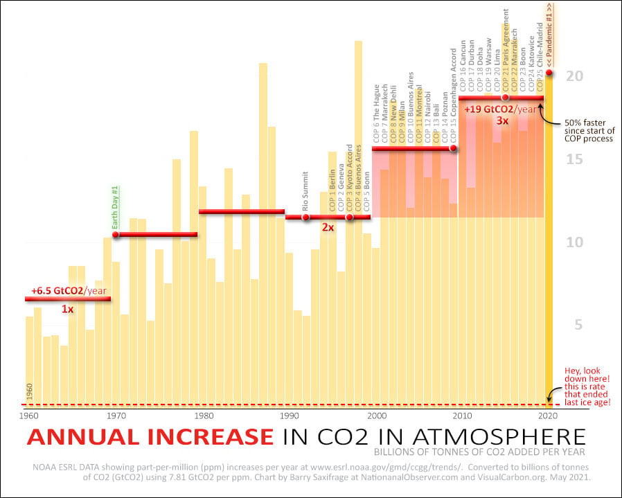
The science is emphatic. Pushing greenhouse gas concentrations and (thereby) global temperatures into entirely new territory will not end well for us. The graphs are vertiginous.
To conclude, what we are doing is comparable to suddenly upping the voltage on the power supply to your laptop, on which you have all your work, family photos, bank account details and personal files stored. Why would you wilfully do that, especially when there is no back up?
Further reading:
“This Changes Everything” (Naomi Klein)
“Bankrupting Nature” – Club of Rome
Neil de Grasse Tyson, “The most astounding fact”.
https://www.youtube.com/watch?v=kl0J6Le5MpM
“There is something wrong with the world”
https://www.youtube.com/watch?v=XoaPFPBQhww
Questions
When have you felt dwarfed by science? Or an experience?
What was your response to that feeling?
Why is it difficult to challenge the status quo?
What are the main psychological blocks to getting a clear view of climate change?
Chapter Two
Chapter SummaryThe passage explores past mass extinctions, such as the event that wiped out the dinosaurs and the Permian-Triassic event, the most severe extinction in history. These were caused by natural disasters like asteroid impacts and volcanic eruptions. The text then shifts to the Anthropocene, a sixth mass extinction that is caused by humans. Our impact on the planet is now so deep and pervasive, we now have the dubious honour of having a slice of Geological time named after us. Our relentless consumption-driven biodiversity loss destabilised the natural balance of climate systems and polluted multiple layers of the environment. To illustrate our fleeting existence in Earth’s timeline, a 24-hour clock analogy shows humans arriving mere seconds before midnight. A fact that underlines both our fragility as a civilization and our extraordinary capacity to affect change. Finally, given our reckless overconsumption, the chapter playfully questions whether we truly deserve the title "Homo sapiens" — wise humans. This sets the stage for deeper discussions on responsibility and solutions in later chapters. |
|---|
Spotting mass extinction events is a surprisingly difficult thing to do. For a start, such events only happen about once every 750 million years, on average,22 so it is quite difficult to get any decent practice. Indeed, apart from the current extinction event, they all happened well before human beings landed on the planet - so we need the help of Geologists to see them.
As a spectacular warm-up act23, the Earth was utterly transformed by tiny cyanobacteria 2.4-2.05 Ga (billion years ago)24. These microscopic organisms produced a chemical in vast quantities that was devastatingly toxic to most life forms. That chemical was oxygen. Of course, we are now very glad that these cyanobacteria had worked out the trick of photosynthesis. A decent level of oxygen in the atmosphere is rather important for us. But it was categorically not good news for over 90% of life on earth at the time, who could only function in anaerobic mode. This “Great Oxidisation Event” created the conditions for complex life on Earth to get started25.
The biggest wipeout of the biosphere (in this advanced state) occurred approximately 251.9 million years ago26, it is often referred to rather starkly as “The Great Dying” (or more technically as the “Permian-Triassic Extinction Event”). It was caused by formidable level of volcanic activity that poured out over a billion cubic kilometres of lava in the Siberian Traps. The scorching temperatures that followed (globally) eliminated over 80% of all marine life27 and over 70% of all terrestrial life. If you would like to count, this was the third mass extinction event.
The fifth one started in Mexico.
More specifically, it kicked off in the Yucatan Peninsula. This is where a massive asteroid marked a massive full stop at the end of the dinosaurs’ paragraph of history, 66 million years ago (66.043 ± 0.011 Ma). The poor old dinosaurs did not get much time to see the crisis coming. How could they? The Ampelosaurus had the biggest brain of all of them, but it was only the size of a tennis ball, and their club-like feet would also have made it difficult from them to grip a telescope.28
It was not just the dinosaurs who had a bad day; the bolide strike ended up wiping out an estimated 75% of all life on Earth. Who could really argue with a blast as strong as ~2 million thermonuclear Tsar Bombs?29 Indeed, a group of fish found in North Dakota certainly did not get time to say much in response. Their fossilised remains were found in 2012; they had been caught with their mouths open and with tiny glass beads from the blast site lodged in their gills.30 Who could blame them for gawping at bit? They must have been rather shocked to see a mega-tsunami, 100 metres tall, coming towards them.31
It took humans quite some time to spot the cause of this fifth extinction event: the Mexican crater where the bolide struck. Paradoxically, this is because the crater is so big - you need a plane to notice that it is there.32 It is the Chicxulub crater, and the ring of the dent is 180 kilometres wide.33 Half on land, half in the sea, it was detected from the air in 1978. The shocked quartz and highly unusual levels of iridium (Ir) at the site confirm to geologists that something truly cosmic34 had happened.
Which brings us to the sixth wipe-out, today.
We are in the middle of a Mass Extinction Event. It is right under our noses. But again, with a bit of paradox, although it is happening now, it is such a big event it is hard to see it. If we were to read one research paper (for example, on biodiversity loss) and have it pinned up on a wall alongside all the other studies and data that confirm our invasive impact on the planet, then that wall would stretch for miles and miles in both directions. Many of the graphs on this wall would look like ‘hockey sticks’ as the current destruction has accelerated exponentially since 1950 – something often referred to as “The Great Acceleration”35.
Rather appropriately, this image put humans in the middle of it all. As George Monbiot helpfully qualifies, “Let’s stop calling this the Sixth Great Extinction. Let’s start calling it what it is: the “first great extermination” … describing the current eradication of living systems (including human societies) as an extinction event makes this catastrophe sound like a passive accident”.36
To be very correct, a 75% wipe-out is normally required to qualify for a mass extinction.37 But there is not much need to worry about reaching this high bar – we are doing our very best to reduce the natural world down to a domestic collection of cows and pigs, cats and dogs, at an extinction rate that is 100-1000 times the ‘prehuman’ or ‘background’ rate.38 Indeed, if you then add on top the deep stress caused by climate change which wild animals have no facility or time to adapt to, we are pretty much guaranteed to get the three-quarters mark soon enough.
It does not need a meteorite strike or massive volcanic activity to throw the planet into an entirely different mode of operation; ask the tiny cyanobacteria. Small things can have a huge impact, ask anyone with a peanut allergy. We were never a match in size for the biggest mammals, but our diminutive size has been made irrelevant by the force of our technological power and by the sheer magnitude of our number. Not only is the human population just a few small steps away from reaching 8 billion, but if you count humans and add all the animals that we own, then we account for an astonishing 96% of the entire mammal biomass of the world.39 Or maybe, once we are long gone from the Earth, it will be our mechanical control of the avian world that will be our lasting mark? The bones of the 50 billion chickens that we consume every year could end up as our permanent signature in the crust of the planet.
Whichever direction you look, something really big is going on. So big in fact that Geologists have now proposed that a slice of deep Earth time should be named after us: “The Anthropocene”.
The term, “Anthropocene” comes from two Greek words: Anthropos (ἄνθρωπος) meaning “man” and “-cene” from kainos (καινός) meaning “new” or “recent”. It is no small achievement to have a geological epoch named after you. The systemic effects of resource extraction (biomass in particular) and greenhouse gas emissions are the core reasons for geologists to consider getting their pens out to draw a new line in planetary time for the first time in 11,700 years.40
In the short time available here to throw a little light on the situation, attention will be given to the three most prominent features that future geologists will find characterise the Anthropocene:
Resource extractions (in particular biomass)
Mass extinction
It is the first and second features of the Anthropocene, that deserve our attention - even if their stealth-like threat, off the radar of our attention, are a potent threat to human development. And for completeness, a bit of space should be given to nuclear power as its sheer power cannot be ignored in any account of the Anthropocene.
Opening up these two risks is not a distraction. Climate change will rightly remain the central concern throughout this book, and for the Academy, because it is the most acute crisis of the Anthropocene. Climate change grabs the headlines for good reason.
However, it is not the only threat to human civilisation and an understanding of the bigger picture of sustainability is essential: firstly, because all these problems are all interconnected. Secondly, because climate change is rooted in these two issues.
The most important feature of the Anthropocene is our rampant extraction of resources.
We have converted about two fifths of the Earth’s land surface to serve the demands of our food production41, and we take one quarter of all biomass that plants produce in a year42. In addition, we have dug out thousands of mines and quarries all over the face of the Earth. This resource extraction and consumption is responsible for 90% of all biodiversity loss43.
These extractions have relentlessly increased year on year, and the consequences have been formidable. Indeed, the wider consequences of our resource consumption are too big to open up here. It deserves our fuller attention in the next chapter.
Biodiversity loss is a problem that is deeply systemic – both in terms of the causes of the problem and in terms of its consequences. Indeed, the roots of this issue are rhizomatic, making the puzzle of protecting and restoring our precious ecosystems very difficult; and the negative consequences of widescale biodiversity loss pose a threat to the entire operating system of human life.
In the absence of a long-term rational framework for our economic development, humans are currently ripping into their habitat with a savage energy. The “Great Acceleration” has wiped out an epic proportion of the Earth’s biodiversity. In 1992 the UN opened up the Convention on Biodiversity (CBD), but every target has been missed because of our tentative and fragmentary responses. Indeed, in 2019 the UN published a landmark report44 (Intergovernmental Science Policy Platform on Biodiversity and Ecosystem Services (IPBES), May 6th, 2019) on the monumental depth and speed of this loss.
The former Chair of the IPBES, Sir Robert Watson, notes that:
“The overwhelming evidence of the IPBES Global Assessment, from a wide range of different fields of knowledge, presents an ominous picture. The health of ecosystems on which we and all other species depend is deteriorating more rapidly than ever. We are eroding the very foundations of our economies, livelihoods, food security, health and quality of life worldwide.”45
In other words, it is rather like we are playing a game of Jenga with the natural world: Bio-Jenga. Pulling out key blocks of the architecture of the biosphere, and at the same time placing more demands on it. This is not a clever strategy for building a civilisation. Each time a brick is removed and then replaced at the top of the system as another weight, the more the tower becomes destabilised. The natural world used to be so immense and diverse, compared to the homo sapiens within it, that this wide base looked invulnerable to our ambitions. However, that pyramid shape has now been inverted.
The documentaries “Apocalypse Cow” and “Seaspiracy” illuminate the unsustainable path that agriculture and aquaculture are on. Millions of species are clinging to the last fragmentary pockets of habitat that our great vacuum cleaner of ‘civilisation’ has not yet hoovered up. We have tacitly endorsed the evisceration of a bewildering array of biological niches, all for the sake of things as banal as a packet of cheap supermarket ginger biscuits or a pack of fishfingers.
On its own, this ecocide poses a grotesque danger to our future. But biodiversity loss also has a direct impact on climate change. The planet is marked by tree cover loss that is driven by deforestation, wildfires, commodity markets and agricultural farming practice changes. The loss is happening at a consistent rate of around 240,000 square kilometres per year46 - an area the size of the UK. Within this total, the destruction of primary tropical forests (the world’s most biologically diverse ecosystems), released 2.64 billion tons of carbon47, more than 1 % of the remaining carbon budget for 1.5C (83% likelihood).48
In a dark grey parallel to this, we are currently producing 4 billion cubic tonnes of concrete every year. If this was made into patio slabs 2.5cm thick, it would mean that we would have been able to cover up 130,000 square kilometres of land with concrete - an area the size of Greece. This global concrete production is responsible for around 8% of all CO2 emissions annually49.
Despite all this, you might have sometimes spotted a weed that has somehow managed to push its head and body through the tiniest of gaps in the tarmac of a road. The sheer tenacity and stubbornness of that plant is a helpful reminder of how quickly nature can restore itself - from whatever base of biodiversity is left in place.
Indeed, the pause for breath in human consumption caused by the COVID-19 pandemic also provided a bit of space for nature to reclaim some ground. Among all the tragic stories of the pandemic there was a clear signal about what makes humans happiest – and those things were emphatically not material. We were reminded that our true nature is driven by the need for community and relationships, and by the sense of meaning that comes from the different projects of our lives.
Nuclear
Briskly then, nuclear power is given some attention.
Our ability to harness nuclear energy is a vivid demonstration of how extraordinarily probing the human mind is. We can now unlock one of the elemental forces of nature through both fusion and fission – and although the byproduct of these processes is dangerous nuclear waste, this type of power generation does not cause greenhouse gas emissions once the carbon costs of building the station have been covered. In the absence of a war-like effort to leverage renewable green energy to the capacity required, nuclear power arguably remains an important component of a manageable pathway towards retaining a stable climate.
Yet, the insights of Physics that took humans to a sub-atomic level of the universe did not just make nuclear power possible, it also facilitated the production of nuclear bombs. Every noble advance in science carries with it the possibility of ignoble consequences, the human condition a deeply conflicted one. This tragic double aspect of advancing knowledge was captured with vivid clarity by Mary Shelly in her prophetic novel, “Frankenstein” (1818).
Her horror story “Frankenstein” (1818) depicts the harnessing of the ‘elemental principle of life’50 to animate the body parts of a gigantic cadaver by a scientist called Victor, a name that takes on a deeply ironic meaning as the novel develops. The clean slate of consciousness that the creature is born with is soon filled with fear and rage as he struggles to understand his place in the world. As the tragic tale of loss unfolds, we are left to wonder at the subplot to all of our victories over nature.
The mushroom cloud is a potent symbol of the dark underside of scientific knowledge. If we ever lost control of “Oppenheimer’s deadly toy” 51 a bleak, definitive radioactive line would settle into the strata of the Earth during the quiet winter that would follow. A nuclear apocalypse would be an astonishing finale to human life on Earth.
The mushroom clouds that surged up over the cities of Hiroshima and Nagasaki in 1945 could still turn out to be a definitive image of our age. Indeed, our ability to harness atomic power has advanced much further since then. The explosion triggered on October 30th 1961 when the Soviet Union detonated their ‘Tsar Bomba’ over the Novaya Zemlya Island demonstrated an entirely different level of power. This RDS-220 Hydrogen bomb had the capacity to release 100Mt of nuclear energy, the equivalent of 7600 Hiroshima A-Bombs.
Indeed, in the early, heady days of nuclear power52 some rather imprudent plans were proposed by the USA. The ‘Father of the H-Bomb’, Edward Teller, championed ‘Project Plowshare’ (PP) - a set of proposals that sought to use the new technology in various construction projects. The plans included the use of 300 bombs to create a second Panama Canal through Nicaragua, nicknamed the ‘Pan-Atomic Canal’ and the use of 764 bombs to blast a new canal through Columbia. They even proposed a 22 A-bomb plan to make a hole through the Bristol mountains of the Mojave Desert for Interstate 40 (‘Project Carryall). Teller wrote an article in ‘Popular Mechanics’ entitled, “We are going to work miracles”.
Thankfully, none of these projects to domesticate nuclear bombs ever went further than a desk. And although Vladimir Putin stirred up the nightmares of thermonuclear war with his genocidal invasion of Ukraine in 2022, we have so far avoided this M.A.D. conclusion to human life. Nuclear physics is here, the toothpaste cannot be put back into the tube. Given the acutely difficult timeframes of the climate crisis, these horror stories must not distract us from the safe potentials of that understanding. The case for massive investment in fusion technology remains a strong one. 53
Either way, when the International Commission on Stratigraphy (ICS) meet to decide on when and where to draw the lines in geological time – they have a basic technical requirement that the change must be evident in the strata of the Earth’s crust.
Nuclear deposits help meet this condition.
Plugging our brains into realities as big as Mass Extinction Events or new geological epochs such as the Anthropocene can be rather overwhelming. These are seismic changes and big concepts to wrestle with. A sharper, more defined image has been provided in the acclaimed research, compiled by Professor Johan Rockström. This summary from the ‘Stockholm Resilience Centre’54 pictures different aspects of our incursions into the planet’s natural systems into a radar like image. It shows where our economic activity has led us to overstep numerous planetary boundaries. The dashed border drawn represents the boundary lines for different aspects of our environmental situation. The further we overstep the boundary the higher the risk is that we throw the whole system out of balance and render it hostile to us.
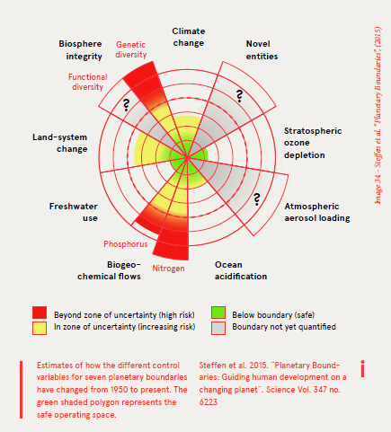
This ‘radar’ summary chart represents thousands of scientific papers. Any summary would require references to the original sources to justify the conclusions for which there is no time at all here. However, it remains a valid move to provide an overview of the current science with a wider zoom lens. Summaries serve an important role in making the main conclusions clear. Namely, the future of human civilisation will only be a prosperous and peaceful one if we take a major step back from the limits of the natural world.There are two red zones of particular concern: the integrity of the biosphere and the crisis we have in biogeochemical flows. The threat of degrading biodiversity has already been noted. Indeed, the farming practices that are a primary drive behind this loss are also the cause of the red signal that can be seen for Phosphorus and Nitrogen flows. The unsustainable use of fertiliser (and pesticides) is covered with striking images and analysis in the Netflix documentary “Kiss the Ground”.
To conclude this section on planetary boundaries it is worth noting that there is one area of the radar that is in the safe green zone – Stratospheric Ozone depletion. The hole in the Ozone layer that opened up above Antarctica is no longer a threat to human beings. The Montreal Protocol was adopted in 1989, just 16 years after the danger had been uncovered by scientists. The agreement to cull CFCs to a safe level was a quick and highly effective step by the global community of nations, as Kofi Annan, the former UN Secretary-General noted, the Montreal Protocol is "perhaps the single most successful international agreement to date".
A fuller guided tour through the different segments of this model is available with Sir David Attenborough, in the documentary “Breaking Boundaries” (2021). Attenborough comments, there has “never been a more important time to communicate the science of what is happening to our planet. The research featured in Breaking Boundaries is one of the clearest explanations I’ve seen of the threats we face and how we might tackle them.”
The earth as a 24-hour clock
Planet Earth will keep on spinning around. It has no preference for the number of species alive. It does not favour greenhouse or icehouse conditions. The Earth has seen both extremes of the temperature scale. In the Hadean Period55 the average temperature was around 230°C, and in the Archean Period that followed, insanely powerful hurricanes steamrollered across the surface of the warm oceans. Yet, any alien passing by in a UFO during the Cryogenian Period (700 million years ago) would have seen the Earth as a giant “Snowball”56.
But we care.
The fragile experiment that we call human civilisation has all happened in the narrowest segment of planetary time. Our advanced society only got started after the frosty fingers of the glacial maximum started its retreat in 17,000BC. To put that in its proper perspective, the fragility of our enterprise is best appreciated by thinking of the 4.54 billion year history of the Earth as a 24-hour clock. It was bombarded by meteorites until 03:00 in the morning, after which organic life mysteriously appears at 04:00 which starts to provide us with the first fossils to look at from 05:36. Single-celled algae show up at 14:00 in the afternoon, but we need to wait until as late as 22:56 to observe the first dinosaurs. Mammals arrive at 23:39. Finally, humans turn up at 23:59:43, just 17 seconds before midnight. We have been on this planet for a mere 0, 02% of its existence. Within this tiny percentage homo sapiens have only recently just got going with our major construction projects – the Egyptian pyramids, the Medieval Cathedrals, the Sydney Opera House… they were all put up within the last second of this 24-hour clock.
When geologists create visual simulations of the planet to show how it must have looked in the deep past, as a snowball earth or a greenhouse earth, it is hard to imagine the size of the forces that must have been at work over millions of years to make such transformations possible.
Curiously the most visible thing on Earth today, as seen from space, is Belgium. The country famous for beer, chocolates and Kevin De Bruyne, is less well known for its remarkably complete set of streetlights. The 2.2 million bulbs (at an average of 233 per square kilometre) create the most intense cluster of light on the planet. Indeed, aside from Belgium, the streetlights that are scattered across the surface of the Earth represent the awesome power of the nearly8 billion humans who populate it. These lights represent just a fragment of the energy that human beings are affecting the planet with, on every spin.
Our glitzy lights have turned the Earth into a giant Disco Ball. Perhaps a ‘Disco Ball Earth’ could work as an apt symbol for the Anthropocene? It certainly sums up the scale and style of the human colonisation of the planet.
If the current slice of geological time needs a new label, maybe it is also time for us to rethink our own? Maybe homo sapiens is a bit of an overstatement? Our name literally means “wise human”. We got this official classification in 1758, a date that was right in the middle of “The Enlightenment”. It was a time when our capacity for reason and reasonableness was widely celebrated. We were making great progress in science, politics, and a wide spectrum of the Arts. It was not a surprise then that the Swedish scientist Carolus Linneaus thought so highly of us when he was working out his taxonomy of the natural world. The good vibes of the Enlightenment led him to put the sticky label, “homo sapiens” on our backs.
However, overstepping so many planetary boundaries is arguably a good moment for a rethink. We could just suspend the label homo sapiens for the moment, until we have some proper control of emissions, resource extractions and biodiversity destruction. Given that the fundamental force behind all these problems is over consumption, maybe the best label for us is “promo sapiens”, in recognition of all the shopping we do. Or to match the disco ball of the Anthropocene, we should rename ourselves ‘party animals’? And to keep things consistent with Linneaus’ Latin labels for all the other species, that then becomes ‘festivum animal’.
The only problem with this new label is that it distorts the fact that only a small minority of humans are at the party causing all the disruption. But that is an issue for Chapter 6, “Who is responsible?”.
Documentaries:
“Breaking Boundaries” (Netflix)
“Kiss the Ground” (Netflix)
“Seaspiracy” (Netlfix)
“Apocalypse Cow” (Channel 4)
Further reading:
Facing the Anthropocene
Bankrupting Nature – Club of Rome
Questions
What age do you think children should be taught about Mass Extinction Events?
Geologists will take decades to formalise the end of the Holocene and the start of the Anthropocene. James Watt’s invention of the steam engine in 1784 was proposed as most appropriate starting point. What date or invention would you propose?
In what different ways is the “Disco Ball” Earth an accurate summary of our situation? In what ways is it not?
Chapter Three
Chapter SummaryIf you were living in a small community on a spaceship and one astronaut started to use up all the supplies for themselves, it would jeopardise the mission. Things would be even worse if another shuttle arrived with more astronauts, but they turned up with no extra food, water, or other supplies. This is a thought experiment. The Earth is much larger than a spaceship, but it is just like a spaceship. It also has finite resources. It is a “Closed Mass System”. Sustainability is rooted in the fact that our planet is finite, and it is not exempt from the laws of Physics. The Second Law of Thermodynamics is in play on our planet just like it is everywhere else in the universe. This means that, although the Earth was gifted with a fantastic array of raw materials, at some point, the usable level of these resources will run out. We inherited tonnes of precious metals and minerals from the guts of a supernova billions of years ago, but as we mine and manufacture our way into the future, we will eventually exhaust them. So, supplies are limited, but the human population has been growing exponentially for centuries. In 2020, 81 million people were added to the planet (a number roughly equal to the population of Germany). This growth rate of 1.3% annually would result in a population density of one person per square meter on the dry land surface of the Earth in 790 years. This is clearly an impossible situation. But well before even reaching this extreme, resources would be stretched and eventually reach a breaking point. We do not need to wait hundreds of years to see the stress marks on the planet. Our spaceship is already under a lot of pressure. This chapter has some of the key details. |
|---|
When considering sustainability, one of the most useful mental images to put in your mind is the image of a spaceship. Planet Earth is like a spaceship57, floating around in space (and if we really think about it, actually a lot of space). Life in such an isolated existence is more technically known as a “Closed Mass System”. In other words: energy comes in (e.g. sunlight) but no matter goes out. We cannot export pollution or greenhouse gas emissions, and there is no emigration of humans off this planet any time soon. There are a few minor exceptions to this situation, like meteorite strikes ( such as the one that hit Mexico) or the moonrocks that we collect ourselves58.
The fact of the matter is that this is a closed mass place.
Back to the spaceship. Imagine, you are on a spaceship with four other astronauts. Every step of the mission has been planned and executed with meticulous precision. You have a calculated amount of food and water to keep you alive for the duration of the mission, and although there is very limited space on board, you did agree to take a ukulele for a bit of a group vibe under the stars. (Having a limited space and a limited amount of supplies force every space mission to make some tough choices.) Then one of the astronauts starts to take four times the daily supply of food, water, oxygen, everything, causing shortages for everyone and jeopardising the mission. What would happen? Surely, once the other three astronauts found out, they would immediately take strong action to stop it, and fairness and equity would be quickly restored.
All good. However, a few days later, you see another shuttle approaching the docking port of your craft. This was not something that had been planned by your team. These extra four people are a wonderful addition to the cosmonautical community. However, it is quickly apparent that there is simply not enough space for eight people on board the ship and you are astonished and troubled by the fact that they have arrived without any food supplies59. Again, the arithmetic of the spaceship life does not work. With no possibility of anyone taking a shuttle back to Earth, there is a major problem in this isolated, floating bubble of life. Not an inconvenient problem but an existential one.
Thought experiments like this can help crystalise the essential co-ordinates and issues of a complicated situation. They also help illuminate simple truths or problems that are often hidden by the cluttered details of life.
So what are the key issues here?
The first seemingly obvious point is that the Earth is limited. A spaceship might be 100 metres wide60, and the Earth is much wider - at 12,756 kilometres diameter. However, they both have their limits. Again, to state the obvious, there is only a certain amount of space onboard planet Earth. These simplistic statements need to be held in view for a while in order to squeeze out some consequent truths that we might not have grasped so clearly.
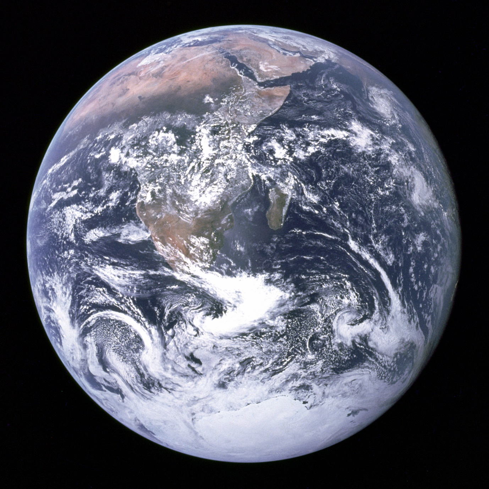
Figure 7 The Blue Marble is a famous photograph of the Earth taken on December 7, 1972, by the crew of the Apollo 17 spacecraft en route to the Moon at a distance of about 29,400 kilometres (18,300 mi).
For example, in 2020, 81 million people were added to the planet61 – a number broadly equivalent to the population of Germany. This figure is in line with the long-term average annual growth of about 1.3%62. Back in the 1990’s the late Physics Professor Al Bartlett famously calculated that if the world population continued to grow at 1.3% per year, such a growth rate would lead to a population density of one person per square metre on the dry land surface of the earth in 790 years. That is not enough room for anyone to swing a kitten in. Indeed, that one square metre is not just the place where you get to stand and swing a kitten, it is also the land out of which you need to get all your food and water, the land on which you build your house, the land on which factories and shops are built, along with the motorways and roads that link them up… If you want to build some of those things elsewhere, then you really have a problem because everyone has only got one square metre.
This is, of course, an absurd situation, and one that we could never find ourselves in. There could never be such a population density because there is a date, much earlier than that, at which the Earth (as a closed mass system) will not be able to support the number of people that live on it. This is a real date. It is a real limit.
Just because this date is not known because of all the complex variables that go into population growth and Earth life support systems, it does not change the fact that with continued growth, at some point the human population will hit its limit.. Indeed, well before that limit things would not yet be impossible but would be very stressed.
To help visualise where we are up to, it is better to think, not in square metres, but in football pitches. In 1990, when your parents were about your age, if the surface of the Earth was divided up into regular blocks of land, then everyone would have had about 4 football pitches to live off. In 2022 that area is down to a little more than two and a half football fields63.
Just like the astronauts have to give very careful consideration to their space in Space, we Earthlings must do the same.
Professor Al Barlett’s point about population growth is part of a talk that he gave 1,742 times over 36 years at universities and institutions all over the world. It can be found on YouTube under the title, “The most IMPORTANT video you will ever see”. This might sound a little overstated, but this module will show that Al Barlett was definitely on to something critical.
So far, this module has been limited to two simple co-ordinates: land and population. This simplicity is important because it is surprisingly difficult to remember the fact that we are in a closed space. However, it would not be worth setting up a whole module to establish this simple point if there were not further important implications that flow from this fact.
The consequences of living in a closed mass system really gets interesting when you push the Physics a bit harder.
If you were to look up “closed mass systems” you would almost certainly find yourself on a webpage devoted to Physics, or more specifically, The Second Law of Thermodynamics. If you can feel your brain going into shutdown mode, just hold on for a few more paragraphs because the consequences of living in a closed mass system are not trivial. And with the help of the spaceship image, there are a number of truths that can be understood in a simple way. Fortunately, you don’t always need a PhD in Theoretical Physics to have your mind melted.
In a classroom, the answer to the question, “Where does gold come from?” is normally answered with the words, “a mine”. If a class of students is pushed for more answers, then they often say, “a river”, or “a shop”; the more inventive say, “a bank” or once, “my mum’s jewellery box”. But these answers are not deep enough. “Where does all the gold on the planet actually come from? Before the mine?” Very few students know the answer to that.
The answer is rather cosmic. The answer is: a supernova. All the gold on the planet was forged in the unique conditions of a supernova. These conditions cannot be replicated. Jamie Oliver can make cooking look easy, but even this is beyond him. He would need an oven of the most unimaginable power and pressure.
A supernova happens when a massive star collapses64. Our Sun is much too small and puny for this; you need really a major star to fold in on itself. At the beginning of this process, the Hydrogen reserves of the star are burnt at a phenomenal rate, but this massive energy release stops once it is exhausted. During stage two of this process the temperature is 100 billion degrees Celsius, and the burning of Helium reserves now causes the production of carbon and oxygen. Brian Cox notes, “every molecule of carbon in my hand, every molecule of carbon in the universe comes from the heart of a dying star”. After this stage there is a cascading sequence of rising temperatures and more dynamic and quicker reactions as different elements are fused together and new, heavier ones are born. The monumental exercise of gravitational force squeezes the inner core of the star into a dramatic final act.
In these last few extraordinary seconds, the cosmic guts of the supernova, full of all the most exotic raw materials of the universe, are flung out into the vast expanse of space. You can find the full of list of elements in the Periodic Table, or for the musically inclined, the list can heard in the Monty Python song which finishes, “Bohrium, Hassium then Meitnerium, Darmstadtium, Roentgenium, Copernicium, Nihonium, Flerovium, Moscovium, Livermorium, Tennessine and Oganesson, And then we're done”.
Once things have calmed down a bit, this eclectic community of elements (all with their different characteristics, weights and special features) are attracted together over time by the gentle but determined pull of gravity. Over billions of years, planets are formed. On our little planet, this led to organic life (a very big jump), then humans (a big jump): walking, talking bits of carbon. Or as Cosby Stills, Nash and Young described it more poetically, “We are stardust, we are golden, we are billion year old carbon … (and we got to get ourselves back to the garden)”.65
Supernovas are therefore the mothers of Mother Earth.
Resource Depletion
The bottom line is that we cannot make gold, or any element for that matter. Whatever lumps of gold happened to get stuck in our Earth’s crust, that’s it. Fortunately for us, they tended to land in patterns to make them easier to find … and these places often become mines.
Why do we need to know the long history of the raw materials of the Earth? Why is it relevant to now, and to sustainability? The short answer is that this is the moment that the story of the universe goes from startling to rather annoying. This is because life on planet Earth for us humans (like the rest of the universe) is under the dictatorship of something that Physics has called, “The Second Law of Thermodynamics”, or more casually, “Entropy”.
Imagine that you are holding a box of chalk, and notice a small stub of yellow chalk, which you pick out. It is easy to think of this stick as a lump of gold taken from amongst all the other elements of the Earth’s crust. Now you need to crush this chalk into tiny flecks of dust. In the real world we call all this mining and manufacturing. Now you need to blow all these dust particles into the air as hard as possible so that they scatter all over the place. Then you can brush your hands together to get rid of the rest. In the real world we call this ‘sales and distribution’, after some efforts by ‘marketing’..
Have the bits of yellow chalk left the room? No. Would it be worth the time and effort to look for them all and bring them back into one useful blob again? No.
This is the problem of entropy. This is the problem of an economy that is almost entirely linear – from extraction to manufacture, to use, to waste. It is a story that does not have a happy ending, because when all the useable gold is found and dug up, used and effectively lost… eventually, there will be none left.
The example of gold is easy to think through, but the same is true for other elements. For example, there are two little tragedies happening when a child loses their grip on an helium balloon and it starts its vertiginous climb out of reach. The balloon and the happy Mickey Mouse face is lost forever, and so is the irreplaceable Helium inside it. Helium just goes straight through the atmosphere and into outer space. Likewise, when farmers use finite Phosphates and scatter them into the grooves of their deeply tilled fields, it is also effectively lost.
It is in this fuller sense that a closed mass system has profound implications for life on Earth.
Although Physicists will wince at this definition, the Second Law of Thermodynamics can be (very) roughly caricatured as “You use it, you lose it”. The universe has an arrow of time that only points forward, and this is underpinned by the fact that it is continually moving from a higher ordered state to a lower one. Even if you try to fight the tide and put things back into an ordered state, if you look over your shoulder, you will see that you have caused more chaos somewhere else in the process.
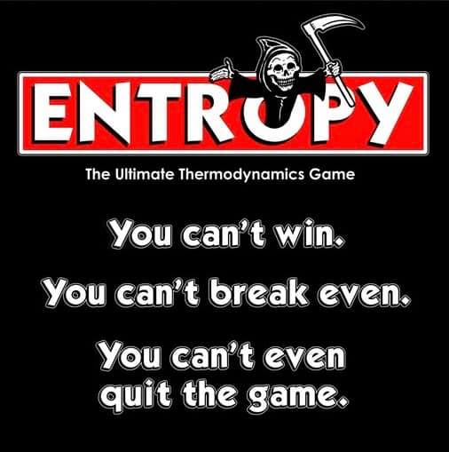
Figure 8 - T-shirt is available at "www.shirtoid.com"
It will be left to the smiling face of Brian Cox in the YouTube video links at the end of the chapter to provide the fuller explanation, but the Physics actually just comes down to quite simple mathematical probability: If I was to throw a box of chalk into the air, there are simply billions of ways that they could all fly, land and roll. There is a possibility that they land and line up to form the words, “This is an existential crisis”. But that ordered state, of letters and meaning, is so much more unlikely than the chalk simply looking like a mess.
There is an extremely restricted number of combinations for the final placement of the chalk for that phrase to present itself to us. There is a tiny bit of wriggle room for the odd stick of chalk to just roll a bit to the side yet leave the phrase legible. However, there are simply overwhelming numbers of possibilities in which this phrase does not appear. In fact there are an overwhelming number of possible results in which nothing at all distinct appears. And this basic game of probability plays out with every move that is made in the universe all the time. In the great big scheme of things, our universe is slowly, inexorably, moving from a more ordered state to a less ordered state.
And there is no arguing with this, it underpins time itself. The universe will eventually run out of useable energy. But this is not something that anyone alive today needs to worry about – because scientists estimate that it will happen in: 10,000 trillion, trillion, trillion, trillion, trillion, trillion, trillion, trillion years.
However, entropy will be a big problem if you are due to be born after the year 2300. We are currently extracting a mind-aching 3000 tonnes of material from the Earth every second. By roughing up the blobs of order to be found in all the precious metals and minerals of the Earth at this speed, it is very likely that valuable resources that you might want for your society will already have been used and effectively lost.
The good news is that the United Nations is on the case; in 1972 they formed the United Nations Environmental Programme (UNEP). Then, in 2007 they established the International Resource Panel (IRP) who have started to track the amounts of materials we are extracting and consuming and have estimated what a sustainable level of extraction would be.
The bad news is that there are no binding agreements in place to control our mining66. Therefore, unsurprisingly, some materials are close to exhaustion already. The most acute resource problem is arguably the case of phosphorus, because our agricultural yields (our food) are so dependent on this chemical boost. Yet, there is only a very limited supply of phosphorus it is mainly in the Western Sahara; there are little bits in China, Egypt, Algeria and Syria.67 68 More generally, every flatscreen TV that is manufactured has very real consequences for the reality of the crust of the Earth. For every luminous diode that lights up a TV Quiz Show or a David Attenborough documentary, rare Earth elements (REE) 69 like Lanthanide, Scandium and Yttrium are extracted.70
If there was time, many more examples could be put onto the table. Fundamentally, they would all underline the essential fact that it is simply not possible to make an infinite number of laptops, mobile phones, car batteries, solar panels… and so on. Indeed, the key word is infinite. This is a closed mass system. Every TV or mobile phone that is produced uses up rare earth materials that will then be unavailable for people in the future.
Such a reflection might seem too abstract to have moral significance. We might imagine that the fate of many of the Earth’s materials lies too far into the future to be of concern to us. We might adopt a cynical attitude to those people who await the arrow of time to nudge them into existence in so far in the future. This is not the place to open up a wide ethical section about those not yet born. However, that is not because it is not relevant, but because the crisis of sustainability of resources is absolutely not a distant problem. There are many key stress marks already, and what is at stake is actually our own security of life and of those close to us.
Major talks are now quite rightly taking place to close the two ends of our linear economy to create a circular one. This loop takes what is waste material in one industry or sector and feeds it as a resource into another. The circular economy also reduces waste through recycling. This improvement to our economic model is an important step, but there are two major problems.
The first problem is a practical one, and that is that only 8.6 % of material is currently recycled71, and this amount is decreasing. In principle this is fixable; however the second problem is more fundamental, and it is a problem of thermodynamics again. Even if the efficiency and recycling processes are radically improved, you will need even more energy to re-extract resources from waste; and with the principle of Entropy in the background, the energy requirement for some will be prohibitive.
The final good news is that although we live in a closed mass system, we are very much open to energy. And with luxurious excess. This energy is poured into our system by the Sun’s radiant beams every day. It is an energy that is diffuse; it is not compacted and focused like the intense implosion of a supernova. However, even though it cannot provide us with nuggets of gold, chunks of copper, lumps of lithium or banks of phosphorus, it has another five billion years of its own well stocked resources to satisfy our basic needs.
The main consideration of this module is concerned about what this growing population is doing on the surface of the Earth. The answer to that question has changed dramatically in the last 250 years; and that drama has taken on truly epic proportions in the last 50 years (‘The Great Acceleration’). However, for a proper perspective on these last explosive decades of human history, we need to zoom out to a much wider vantage point.
For hundreds of thousands of years, people lived in a more or less sustainable way with nature as hunter gatherers. Our subsistence lifestyle could be summarised as one unit of labour that had the capacity to produce one unit of goods. During our time as agriculturists, with the extra horsepower at hand from animals and wind, our productivity doubled to two units of goods.
If we briefly pause at this junction in the development of human civilisation, we can find a powerfully symbolic text. The biblical story of the twins, Cain and Abel72 (Genesis 4) points at the tension between the settled life that emerges out of agriculture (Cain), and the roaming pastoral life (Abel). It is the humble offering of the shepherd, Abel, that God prefers. However, after Cain murders his brother, it is his more organised and fixed way of life that prevails.
Or we could say in more familiar terms – it is the urban that comes to dominate the rural.
There are of course, many layers to the mythical text about the first sons of Adam and Eve. But it is telling that after the murder of Abel, God still gives his protective ‘mark’ to Cain – who within a few lines of verse has already started to build the city of Enoch. It is as if divine wisdom decrees that the development of urban life is both inevitable and yet it will be characterised by greater moral jeopardies.
The deep contrast between urban and rural life, and the huge cultural consequences that flowed from the development of city life became stunningly clear during the Industrial Revolution. When human life gets into industrial gear, productivity rates take off like a rocket. A nod to Stephenson’s famous “Rocket” train (1829) would be relevant here, as the steam engine was so important in this revolution. However, by today’s standards an average speed of 12mph and top speed of 30mph does really do justice to the staggering exponential acceleration of economic activity and resource extractions.
Now, to zoom in on some details.
For every product, resources are ripped out of the Earth. This happens at an ever-decreasing rate of efficacy and requiring ever more energy, because the easy deposits have long gone. In 1900, humanity only consumed seven billion tonnes of resources, by 1945 that had doubled, then doubled again by 1970.73 In the past 50 years, resource extractions have more than tripled, from some 30 billion tonnes per year to an utterly unsustainable 100 billion tonnes per year today. If such a trend prevails, in 30 years, humans will have further increased from 100 to 200 billion tonnes by the year 2050.
In Olympic diving, judges give their marks for the execution and the beauty of a dive. Yet, this is not the only thing that matters. Every diver must choose, ahead of time, the difficulty of the dive that they are going to perform. Their marks are then multiplied by the value of that dive according to its complexity; for example, a Reverse 2 1/2 Somersault (305C) has a difficulty rating of 2.7 but a formidable Back 2 1/2 Somersault 2 1/2 Twists Pike dive (5255B) gets a difficulty rating of 3.8.
If we consider the background exponential population growth and the dry land surface of the Earth as the first co-ordinates in our thinking about sustainability, it now becomes clear that we have to add a major multiplier to those numbers.
There is a big difference between 10 people living a simple life of subsistence and just three people living an affluent modern lifestyle with all the resource extractions that this necessitates. This disparity between the Ultra High Developed (UHD) lifestyle and the Low Developed (LD) lifestyle has led some thinkers to propose a different geological label for the “Anthropocene”. There have been proposals to call our period the “Kleptocracene” or the “Misanthropocene”.
To illustrate why such qualifications to the Anthropocene are justifiable, here are some examples of how many tonnes of raw materials each person on average is ripping up from the Earth’s crust every year:74 The average Brit (18 tonnes) and the average American (30 tonnes), the average Singaporean (50 tonnes), and the average Luxembourger (45 tonnes) are causing so much more resource depletion than the average human (12 tonnes). And looking in the other direction from the average human, Medium Developed nations use only an average five tonnes, and the Low Developed nations only three.
All the latest national data for resource extractions can be found at CUTxpercent.org, alongside all the latest emissions data in the table. The two issues are deeply connected.
To live sustainably, the IRP has put forward an average of seven tonnes per person per year of resource extraction75. As Michael Wadleigh and Birgit van Munster have noted, “The alarming evidence is that the destruction of nature by global extraction of natural resources has nearly quadrupled in the last 50 years. Astonishingly, the next 35 years of natural resource extractions and fossil fuel emissions are projected to equal the last 300,000 years (the entire time our species has walked on the Earth).”
The Club of Rome put it very succinctly back in 1972: there are “Limits to Growth”.76
The conclusions of that groundbreaking work were hotly disputed, and it still causes Libertarians sleepless nights (for the wrong reasons). Driven by data, savvy modelling and the new power made possible by the invention of the IBM computer, “Limits to Growth” plotted out long term environmental scenarios. The forecasts made 50 years ago have proven to be robust. Yet, even if they were to have been entirely wrong in their details, the basic assumptions of the book remain extremely pertinent. Namely, that on a finite planet there will be limits to growth, and once those limits are understood we should measure, as best we can, the wisest pathway towards them.
The problem is that we live in a culture in which the thought of a limit creates a tremendous range of cognitive dissonances. Our culture is predominantly a capitalist one; of course, there are innumerable cultures and subcultures, but the background grammar of how we think has been strongly flavoured by the emergent capitalist economy. The ground rules of capitalism have become so normalized at both an economic and social level that is genuinely difficult to imagine human civilization functioning inside another paradigm of values.77
The capitalist operating system might bring many advantages, but we should not be shy about pointing out all the fundamental disadvantages. Indeed, these disadvantages can no longer just be considered as “lefty” ethical concerns about equality and alienation. These disadvantages must now be upgraded to a different category of consideration: existential threat.
We are now crossing many planetary boundaries. The game of capitalism was remarkably productive, but in the absence an articulate, science based ecological framework for that growth, we are now living in on planet that might soon bite back with formidable force.
During the time that it takes Pluto to complete one orbit of the Sun (248 years), the drive of capitalism to gain new markets has pushed Western nations into the far corners of the planet with increasing speed. This appetite for material and human resources mostly advanced forward with the uniforms of nationalism in the 19th century, before it really sped up after adopting the corporate suit and tie to travel during the 20th century.78
However, well before the surface of the Earth had been fully colonized by the rule(s) of material growth, another type of colonization was well underway. In the 1950s, it was not just the external expansion of a capitalist system that was happening, there was also an internal expansion of the market that was unfolding. Capitalism developed new markets by land and sea, but it also developed new markets in the hearts and minds of people.
Material products were linked to all kinds of psychological impulses, appetites and emotions. Those who pioneered this expansion into the human psyche were led by Edward Bernays (the nephew of Sigmund Freud)79. This new guild of craftsman who fused together the subconscious with consumer products were extraordinarily successful in creating a culture of fake necessities. The awesome advantage of this psychological expansion is that, unlike the surface of the Earth, it is limitless. Once human instincts were hooked up with products, our search for community and connectivity, status and security, affection and affirmation would all become impossibly restless.
Yet, oddly, this is good news.
These demands are artificial, they were constructed and they can be deconstructed.
The planetary boundaries that we are facing cannot be overcome by any arguments with the laws of physics and chemistry. However, we can use these hard limits as a reminder of what our true self is, and what true human development is.
Charles Eisenstein writes, “A world of without weapons, without McMansions in sprawling suburbs, without mountains of unnecessary packaging, without giant mechanized monofarms, without energy-hogging big-box stores, without electronic billboards, without endless piles of throw-away junk, without the overconsumption of consumer goods no one really needs is not an impoverished world.
I disagree with those environmentalists who say we are going to have to make do with less. In fact, we are going to make do with more: more beauty, more community, more fulfilment, more art, more music, and material objects that are fewer in number but superior in utility and aesthetics. The cheap stuff that fills our lives today, however great its quantity, can only cheapen life.”80 After his probing exploration of the modern economic paradigm and Eisenstein looks forward, and notes, “Sacred economics is part of a different kind of revolution entirely, a transformation and not a purge. In this revolution, the losers won’t even realize they have lost”.81
Further reading:
“Facing the Anthropocene”, Ian Angus
“The Shock of the Anthropocene”,
Bankrupting Nature – Club of Rome
Extract from No Common Sense
News Decoder leads
News Decoder leads
“The Century of the Self” BBC2, Adam Curtis.
https://www.youtube.com/watch?v=DnPmg0R1M04&t=2500s
Brian Cox: BBC, Wonders of the Universe:
“Stardust”
https://www.youtube.com/watch?v=DEw6X2BhIy8
“Entropy”
https://www.youtube.com/results?search_query=brian +cox+entropy
Questions
Why do we struggle to see that the planet has limits?
If you could reorganise your football pitch, what would you change?
If you were an astronaut on this spaceship, with one “non-essential” object, what would it be?
Chapter Four
Chapter SummaryThe world is rapidly approaching critical carbon budget limits, yet current national commitments (NDCs) fall drastically short of what is needed to limit warming to 1.5°C or even 2°C. The Emissions Gap remains huge, with current policies putting the planet on a path to 3–4°C of warming by the end of the century. Projections reported in the media are misleading because they include unrealistic assumptions about future carbon capture technologies. Our fossil fuel dependency remains deeply embedded in our global infrastructure. We have never stopped doing "energy addition", but the zombie concept of "energy transition" remains the dominant media story about what we are doing. In other words, renewable energy growth, while significant, has not outpaced the rising demand for energy, so our overall demand for fossil fuel continues to rise. Efforts to address climate change have largely focused on individual actions rather than systemic shifts. The fossil fuel industry has strategically promoted this narrative to deflect attention from the need for a deep overhaul of the energy sector. |
|---|
A fit and healthy baby that enters the world kicking and crying can score nine or a maximum 10 in the ‘AGPAR Test’ which is measured by doctors at birth.
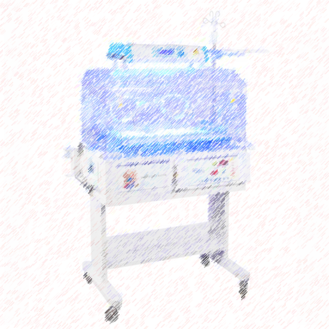
It was much too quiet when my son was born.He only scored a one. Fortunately, the specialist neonatal intensive care unit was just upstairs. In close, rapid step with a team of nurses and doctors I carried his tiny, feebly spasmodic little frame to the warm safety of an incubator. There, he was swiftly hooked to multi-coloured tubes and wires. This technology would feed him and continually measure and monitor all of his body’s key indicators, 24 hours a day. Over the next weeks, the ward was busy with general checks and moments of paperwork, close family visitors were ushered in during the afternoons. Sometimes, behind portable green curtains, key surgery was carried out. But in the reverential atmosphere of the unit, one thing was always familiar - the background chimes of the monitors that kept watch over every baby’s vital statistics. If the oxygen level in their blood dropped below a certain level, the digital numbers would turn blue, a small light would flash, and the tone of a slow ticking chime would start to accelerate and rise in pitch. Someone in a medical uniform would then appear to make the right adjustments.
Thibault pulled through. On the day of his discharge from the hospital, I took a moment with a coffee in the bar downstairs and thumbed through a copy of ‘The Economist’. After skim-reading the articles on ‘Orban versus the intellectuals’ and ‘Zuma versus his people’, I absentmindedly reached the back pages. Here, all of the vital statistics of the global economy were presented.
The data on these ‘Economic and Financial Indicator’ pages show all the key signals from around the world, from the Greek GDP to the Columbian CPI, and from the rates of Belgian Bonds to the value of the Russian Ruble. The Nikkei 225 and the CAC 40 are monitored alongside the movements in the dollar price of Gold and West Texas Intermediate Oil. These indices can control the social and political weather - a drop in the price of oil had given a boost to the profit margins of the Pirelli in Italy, but it was causing social unrest in Venezuela. The long-term unemployment data in France and the UK had swollen the numbers of voters on the political edge, especially towards the Right.
However, Thibault was born into a world in which there was no fundamental index to measure our progress with climate change. This remains true today. In the pages of ‘The Economist’ there was no tracker of how many gigatonnes of carbon we could safely emit before our whole economic system is placed into a situation in which all economic activity will be critically undermined. There was no clear index of the good, the bad and the ugly for emissions and resource consumption.
For all of those millions of people who are deeply concerned about the climate crisis, where do they go to get a reliable update about the state we are in? We all want to hold our governments to account for their inaction, but how can that possibly be measured if there are no established norms for emissions? How do we defend human equality before the law if the law has no international and scientifically informed standard to plug into? How do we uphold universal human rights if we do not make our calculations of emissions on a per capita basis?
If we had a beep to signal the situation, we have with climate change then that beep would be increasing in pitch. In fact, the beep has always been increasing in pitch and the intervals between those signals would be continually shortening.
This can be seen in the graph below which represents the last ** years of our greenhouse gas emissions. It clearly demonstrates the upward momentum of our greenhouse gases emissions. We are not decreasing greenhouse gases in the atmosphere; we are still accelerating their increase. The line on the graph is going up, and new records are being set every year.8283
In the last 30 years, radiative forcing (the technical label for the ‘warming effect’) has risen 49%. The overall average increase was 0.03 w/m2 per year, but the last 5-year average was 0.04 w/m2 per year.84
A rise from 2.1 to 3.1 W/m2 radiative forcing might not sound like a lot, but when the 1 Watt per square meter increase is cashed out into a different set of units, the reality of it all is rather amazing. A 1W per m2 increase across the entire earth’s surface amounts to a 510 trillion-Watt force.
This upturn is the equivalent of 600,000 Hiroshima nuclear bomb explosions per day.85
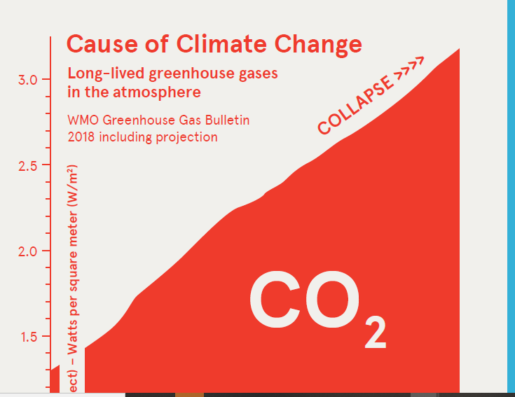
To bring the acceleration of the warning signal more clearly into view. The next chart shows the shorter and shorter time that lies between each notch of 0.1°C up the global warming average temperature scale. Back in 1970s, when we had a full understanding of the problem it took 7.3 years to move from 0.2°C to 0.3°C warming above the pre-industrial average. Now our emissions are pushing us through those steps of temperature in just 3.1 years. To state the obvious, since we have had a full understanding about the mechanics of climate change and the need to reduce our emissions, we have only accelerated them. Indeed, we are now emitting at double the speed of the 1970s.
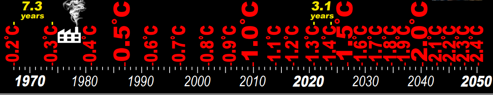
Credit: OnlyOneEarth.science
The Carbon Budget
What is the state of play looking forward? How much danger are we in now? How close are we to triggering different tipping points in the atmospheric systems? There is such a fog of information in the media and on the internet that is very difficult to get a secure understanding of our situation. Therefore, this module aims to put that right by identifying the key figures that lie behind all the other signals and noises.
The fundamental question is “How many more gigatonnes of carbon can be emitted before we commit ourselves to a 1.5°C or 2°C rise?”86 It is clear that we cannot go on accelerating our emissions forever, there is a limit somewhere. Our bodies could handle a rise of 1.2°C warming for a short period, but a rise of 6°C would almost instantly kill us.
The safest interference with the atmosphere would be as close to a 0°C rise as possible. Returning to the kind of climate that human civilization thrived inside for thousands of years should be the ultimate goal. However, the World Meteorological Organization confirmed in 2019 that we have already achieved a 1.3°C increase.87 Having already overstepped a 1°C rise, human society has passed a threshold that scientists warned us that we should not cross decades ago.
Given that anything over this line carries significant risk, the boundary for a global warming rise was set at COP21 in Paris in 2015. According to the Paris agreement, nearly every nation of the world committed “…to limit global warming to well below 2°C, preferably 1.5°C”.
The reason that 2°C is identified as a key upper temperature limit is that if this line was to be crossed, we are firmly putting ourselves into a minefield of tipping points; and if we trigger these, the monumental forces of nature will just take over control of the situation and we will be faced with a cascading set of catastrophic circumstances. This is more fully explored in Module 8.
Researchers are constantly refining their modelling of how the biosphere would respond to heightened CO2 levels. They have to consider so many variables when making these calculations. Dealing with such a complex and chaotic system necessarily means that there is a range of probabilities involved, however, we do have a very secure understanding of what is going on. There is a known carbon budget for 1.5°C warming and for 2°C warming. These limits come from the 2018 IPCC Report Global Warming of 1.5°C that was updated in 2021 by the IPCC’s Sixth Assessment Report (AR6).
Where are we now?
At the time of writing these budgets were 112 gigatonnes for 1.5°C and 712 gigatonnes for 2°C. It is probably best visualise these as buckets:
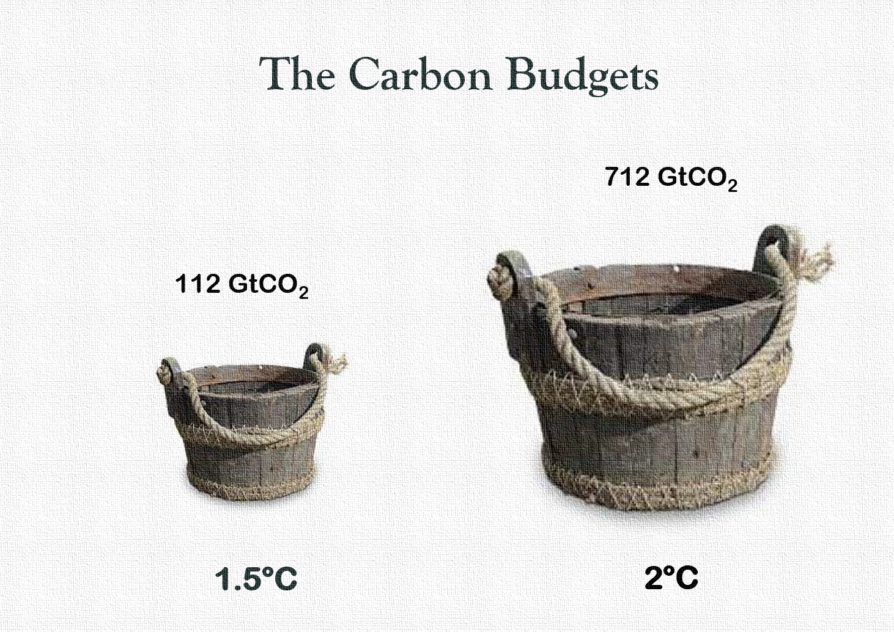
If we imagine these as empty buckets, we now need to know how quickly they are being filled up. The answer is that humans are currently emitting about 42 gigatonnes of greenhouses gases per year. Which might look like this:
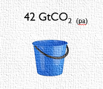
Doing some quick mathematics, it is clear that we have just a bit over 2 years before the budget for 1.5°C is used up, and around 16 years before we hit the limit for 2°C warming88.
If we take the Paris Agreement at face value and assume that all of the nations of the world actually want to limit climate change to well below 2°C, then this carbon budget would be the starting point and the end point of the commitments and the negotiations that follow.
The bottom line is as simple as this. And the powerful work of Michael Wadleigh and Birgit van Munster enables us to see these budgets diminishing in real time with something that they created and named, “The Gigaclock”. When all the data is assembled into one place and all the scientific co-ordinates given, the remaining budgets can be seen moving towards zero at the current/right speed.
So from this clear central point a proper vantage point is established to look forwards and measure the commitments on the table, and pathways that we are on. Without this base established, how could anybody clap or boo a statement given by the UN or by a national government about its latest commitment. For the moment there is a rather improbable situation where phrases like “a new ambitious target” can be used without any reference to the remaining carbon budget. It would be genuinely uplifting to be able to applaud robust action and it is simple principle of democracy that we should also be able to identify where actions that fall short.
The Emissions Gap
We are speeding towards these carbon budget limits. However, we need to have a clearer view of what lies ahead. Maybe if we start to push the brakes hard enough, we could stop before those lines? Our efforts in the past have not managed to curve the trend downwards, but perhaps there is brighter news ahead? There is a continual flow of new commitments from different nations, and it is important to know if we need to applaud them or not. Module 5 will get into the details for each country, in Module 4 (here) things will be kept at a global level.
Unfortunately, the commitments made so far fall a long way short. The policies and action that are required to get “well below 2°C” are still distant. This shortfall is known as ‘The Emissions Gap’.89 In Paris (COP21), all the nations of the world agreed to put forward their NDCs towards stabilising GHG in the atmosphere. An NDC is a “Nationally Determined Contribution”, it is a non-binding declaration of intent by a country towards the climate crisis. There are few minor exceptions to this. Most interestingly, Nicaragua neither offered an NDC, nor did it sign the Paris Agreement with everyone else. This was not because of some delusional leader, but, rather nobly, it was because they simply wanted to point out the size of the emissions gap and they wanted to protest about the lack of serious action.
Indeed, when all of the NDCs are added up, and assuming that every nation will follow through on the commitments that they have made, humanity is still heading for a climate that is projected to be an intolerable 3-4°C warmer.
This can be seen in the two blue sections on the graph below: the upper dark blue area represents the current policy commitments, and the lower lighter blue represents the pathway if current targets are met. It might be the case that nations enter into a positive feedback loop with policy making once public opinion swings firmly behind climate action, but it is also true that nations can emphatically swing the opposite direction, such as with the USA under Trump and Brazil under Bolsonaro.
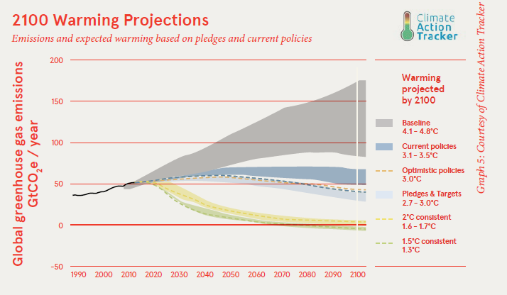
Two very important qualifications
If your antennae are sensitive to climate change news, or if you engaged enough to dig around on the internet to find out more about where we are up to, the figures of 2.7-3°C from the graph above might sound broadly familiar. For example, the BBC often cites numbers in this range, or even below90.
However, two crucial qualifications are needed.
The graph above is actually misleading. Indeed, it is very misleading. It looks like, with all the recent NDCs added together from the different nations and with those commitments fully implemented, we would be able to drag the temperature rise down to 2.7-3°C. But within the algorithms that are used to make all the projections of those lines, there is a huge assumption about our ability to suck out greenhouse gases from the atmosphere with technology.
The problem? This technology does not exist, nor is it close to existing. It is imagined that we are able to suck CO2 out of the atmosphere on a truly massive industrial level with engineering that does yet exist.91
The climate scenarios that the media almost always use rarely disclose that calculations include these ‘negative emissions’. This distortion can be traced by the UN itself, who publish their own projections with this highly optimistic assumption included in the algorithm. This was true of the Emission Gap report that was published by the UN in 2019*.
It seems to be neither correct, nor transparent, to have such reductions in greenhouse gases included in the graphs, yet they almost always are. It is a bit like fiddling the milage dial on your car.
In the absence of a handbrake turn by our juggernaut of emissions, a rise of 1.5°C is inevitable.92 Chapter 7 on “Cut 11%” will articulate exactly how sharp the emissions reductions will have to be for each nation of the world to duck under the 1.5°C threshold. Importantly, the numbers used by the Climate Academy do not include any unproven capacity for negative emissions. A move that seems like an entirely scientific way to go about things93 and in line with simple common sense. Indeed, the calculations in Cut11% also stay well clear of a dabble with in the scientifically and ethically dubious potentials of geoengineering.
If the media reporting was more transparent about the current path that we are on, then the projections would show that we are actually heading for a rise of around 4°C by 2100. Another way of stating the facts is to acknowledge that the current NDCs only add up to a commitment that is one sixth of what is required,94,95 and even with this on the table, many major industrialised nations are not even on track to fulfil these limited commitments.96
The skewed reality that follows from being far too optimistic about carbon capture technology unsurprisingly also skews the language and framing of the reporting of the climate crisis. For example, the BBC’s Science Correspondent, Matt McGrath, published an article just before COP21 in which he reported that 15 leading Buddhists, including the Dalai Lama, had called for the Paris Agreement to limit warming to 1.5°C. However, no comment was made about this ambition being so highly improbable.97 This is just one example, but once you have understood the 2 year proximity of 1.5°C and the cliff face that emissions will have to fall down to meet that target, it is impossible not to follow most media output with a sense of incredulity.
As stated above, the ultimate goal must be to not only restrict warming to 1.5°C but drag it down towards zero. But this is not going to happen if we massage the numbers to look more comfortable. It seems imperative to be square and blunt with what is going on above our heads, a softening of the truth is most likely to lead to a softening of response.
Global Warming ‘Whiplash’
The second important qualification is something that could be given the label ‘whiplash’. This is not a technical term, but it gives a good idea of what will happen to global temperatures if we suddenly hit the brakes on our emissions.
Burning coal is really not a good thing to be doing. It is worse than oil and much worse than gas in its capacity to release greenhouse gases. However, there is a little detail about coal burning that is not well known. Namely, coal power does not only release CO2 into the atmosphere, it also emits small particles of dirt.
There is good news and bad news about this. The good news is that these particles when they go up into the atmosphere actually help keep the atmosphere cool because they deflect the sun’s thermal energy back out into space. The bad news is that when you stop burning coal you also lose this benefit. Therefore, when these cooling aerosols (‘aerosols’ is the scientific term for these specks of dirt) disappear it will trigger a sudden jump in temperatures of 0.8°C.
Ouch
Whiplash is very painful and damaging both in a car, and with the climate.
As with negative emissions, it would be better if this mechanism in the physical cogs of the atmosphere was clearly acknowledged in our projections and in the media that analyses them.
Conclusion
This module will finish by zooming in the key issue behind why so little has gone in the right direction. Given the complexity of the situation this might seem like an ambitious claim for a few hundred words. However, a simple chain of cause and effect can point to the fundamental problem: global heating is caused by increasing concentrations of greenhouse gases, these gases are mainly caused by the use of fossil fuels. It is the deep inertia of our global systems to move away from a dependency on fossil fuels that is behind the continued acceleration of emissions.
The key point here is that this dependency is structural.
It is bracing to see the stark reality of where we are up to, and given that so many individuals are making a major effort to do something about it, it is seems absurd that we find ourselves so close to these important thresholds.
But this is the point – the individual does not have the power to trigger the impetus needed. We all operate inside a system of energy production that drives our manufacture, transport, * and * that is underwritten by fossil fuels. Until this overturned, we will only be making predominantly superficial changes to the global carbon footprint.
There have been millions of green initiatives launched by communities, schools, local governments. These efforts have been matched by billions of individual actions too.
This is awkward. We like to feel like we have agency in problems. It is tactile and rewarding to sense that we have some kind of control and grip on what is going on. And this natural pull of our psychology is matched in kind by the media, the UN and national governments.
Such natural flows of attention and awareness have been strongly encouraged by the fossil fuel industry as it distracts attention away from the systemic cause of the crisis – the fact that our infrastructure is plugged into fossil fuels. One of the most amazingly resilient myths of modern thinking is that an “Energy Transition” has been taking place. It has not. There has been no reduction in our dependency on fossil fuels towards non-emitting energy sources.
It is arguable that the phrase, “energy transition” should be banned. This is because it is often used to refer to something that is happening now. It isn’t. It has never been. It is something that we urgently need to do, but then, is the word “transition” appropriate? What is required is a transformation not a transition.
Our continually increasing emissions are due to the fact that we are still meeting the large majority of our energy demands with fossil fuels. The chart on the right shows that 81% of all our energy is produced by either coal, oil or gas. These statistics are taken from the latest data of the International Energy Agency.
This data also shows that wind and solar power has dramatically increased from around 110 Twh to over 1,580 Twh since 2005, a whopping 1,450% increase. However, increasing the size of an apple pip by 1,450% does not change much if it is in competition with slowly inflating Beach Ball or Hopper Ball98 that had a sizeable head start. In fact, although the use of fossil fuels increased by a much smaller percentage, it outstripped green energy growth by 11 times in absolute terms.
In COP21 in Paris, President Obama proudly underlined the “ambitious investments” [sic] that the USA had made in tackling climate change by talking about the size of his ‘apple pip’: “Over the last seven years, we’ve made ambitious investments in clean energy, and ambitious reductions in our carbon emissions. We’ve multiplied wind power threefold, and solar power more than twentyfold.”
Graph 2: Courtesy of Homo Sapiens Foundation, OurFutureUncompromised.org
Globally, wind, solar, hydro and all other renewable non-emittive energy sources still only account for 4% of humanity’s energy supply. Nuclear Power, for all of its other complications, is at least carbon friendly, so we get to 9% with this included. Biomass (which is emittive and has great unsustainability issues) is about 10%.
The impression that we might have, from casually observing solar panels on people’s roofs or wind turbines in the open fields by motorways, is that green energies are significantly replacing fossil fuels. Politicians may frequently cite their commitments to huge-percentage increases in green energy supplies.
However, the data that matters shows very clearly that we are not making any inroads into curtailing our reliance on fossil fuel. The word “transition” for the energy sector is dangerous misnomer. The whole energy industry is stuck in stasis.99,100
In fact, all of the recent policy commitments to new investments in green energy are not even sufficient to deal with the increased demand for energy that will come in the years ahead from factors such as consumption and population growth.
Therefore, in the absence of commitments that are rooted in the reality of the remaining carbon budget, fossil fuel use and emissions will continue to increase until 2030 and beyond.101,102,103 This decisive move away from fossil fuels must also be accompanied by a more modest culture of consumption too. It is tempting to say that it must also be characterized by a reduction of human population, but this is complex of course. The fact is that the territories of the world that consume way beyond the average have flat or declining populations, and their historic emissions have made the traditional pathway to economic growth through the dense power of fossil fuels impossible for these developing nations.
Infrastructure not Individuals
As stated in the introduction to this book, individual actions about their choices in consumption are valuable. Any new global situation that features a dramatic drop in our emissions will necessarily be characterized by much more modest markets and by clever circular consumption. There is no way around this. All of our efforts to reduce our carbon footprint have to be sustained.
But what has decades of the fight for climate justice achieved with individual actions as the dominant narrative? The answer is vividly clear in the dots of the Keeling Curve.
The plank in our eye is our systemic dependency on fossil fuel, and this can only be flipped by the leverage that available with legislation. We have to be blunt with ourselves. There is so much more to be won with a transfer of energy and focus. When Martin Luther King was fighting for equality and justice he was stubbornly focused on legislative change. He was intolerant of any gesture from the US government that did not grant fundamental rights at a system level. He was right to keep his eye on that prize. He would have never celebrated comfy seats in the black area of a café or a bus.
The real action in any society takes place at a legislative level. It is the matrix that governs everything. The framework of laws, both national and international, guide investments, infrastructure, in short, everything.
The markets know this, and the fossil fuel industry knows it.
It is not by chance that in the first three years following the Paris Agreement in 2015 the five largest publicly-traded oil and gas companies (ExxonMobil, Royal Dutch Shell, Chevron, BP and Total) invested over $1bn in what is known as “narrative capture”.104 One of their central methods of gaining control over the content and approach of climate change awareness has been to wage a war on plastics and a reduction in their use - a savvy way to look ethical and skew our thinking towards individual action. Indeed, the cause of reducing plastics is very visual and tactile. For example, not taking a plastic bag in a supermarket feels good, but in this case, it is carbon footprint of all the food and stuff that beeped past the check-out that really matters. Just to press home the point, all plastics are only responsible for one in every 256* tonnes of our greenhouse gas emissions. So, their reduction hardly makes a difference to the climate, and it makes little difference to the profit lines of these major companies.
Conclusion
The vital statistics of our planet do not look good. But with respect for science and a deeper love of human life and all the insane
Which just need to come out from under the bewitching spell of the self. We need to take our individual, consumption-based thinking and enlarge it. The beautiful and powerful truth about the fight for climate justice is that an engagement in projects that are aimed at systemic change involve our whole self, not just the cropped version of humanity that we have adjusted ourselves to.
Questions
What different reasons can help explain the absence of a global index for climate change?
Where could this index be displayed in public?
If there were dashboards of data rapidly built, publicised and scrutinised for COVID19, why has this not happened for climate change?
If both COVID19 and climate change are about existential threats, and if scientific data was allowed to drive difficult policy decisions, why is there no dashboard and policy for climate change?
Chapter Five
Chapter SummaryThis chapter critically examines the United Nations Framework Convention on Climate Change (UNFCCC) and its failure to achieve its singular goal: stabilizing greenhouse gas concentrations to prevent dangerous climate change. The chapter starts in Versailles at the time of the French Revolution and tracks the twists and turns of human history towards the creation of the United Nations. Although the chapter indulges different cultural and artistic objects, the central metaphor of the chapter is actually just a box of Cornflakes. This is because although the empty space in a box of cornflakes looks a bit useless, it is, in fact, essential to protect the cornflakes from getting crushed. And so it is with the space above our heads - both with the atmosphere and with democracy. The UNFCCC was set up to protect this atmospheric space. However, despite decades of COP meetings, emissions have continued to rise. The chapter concludes with a call for clarity, science-based laws, and global solidarity to address the climate crisis. It points ahead to the CUTx Index of Chapter 7: a clear measure of where we are, and what we need to do to protect the future of human civilisation. |
|---|
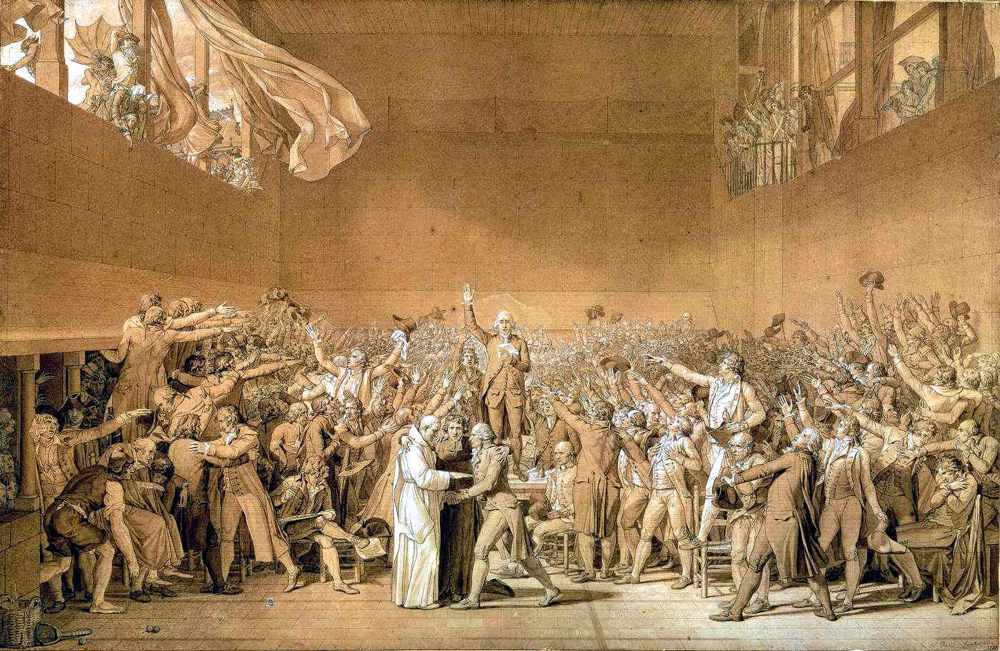
Figure 9 Jacques-Louis David, The Tennis Court Oath (c.1791)
It is hard not to feel cheated when you open a box of cornflakes. The large box promises a lot. But once you open the cardboard flaps, you see that nearly a third of it turns out to be just a lot of air.
‘Conflakes’. Surely! Not Cornflakes.
At first sight David’s famous painting of ‘The Tennis Court Oath’ looks rather similar.
There is a lot of useless air here too. Half the picture in fact.
If a child brought home from school a drawing proportioned like this, you would enthusiastically praise it and smile – but quietly think to yourself that there was a lot of wasted space. In fact, David’s painting might remind you of those pictures that you get when you ask a child to take a photograph. The resulting image, taken by someone of such inexperience with a camera, will probably have a whole lot of sky or landscape… and at the bottom of the frame, you might just see your decapitated head, happily smiling.
If we are to accuse David of further childish mistakes with the picture, we could also point out that his painting is not even coloured in. What is David doing? Why have these basic mistakes been made?
David was a master painter. In fact, he is ranked amongst the very greatest artists of all time. And so it should go without saying - he has certainly not made some kind of childish mistakes. The fact is that David has framed The Tennis Court Oath like this very deliberately. Indeed, the empty space is exactly what you are supposed to be looking at.
There is even someone pointing to it.
This man, whose face is in the bullseye of the picture, is Jean Sylvain Bailly - the Mayor of Paris in the revolutionary year of 1789.
But what is he pointing at?
This is an awkward question as to name this thing above their heads necessarily means that it will get clumsily simplified. Great art thrives on holding together different meanings in suspension. The naming of the main object of this painting would be a bit like lifting the lid on the box labelled “Schrodinger’s Cat” and thereby kill it.
Our analysis, however, has to start somewhere.
An ideal
What Bailly is pointing to is an idea, or more significantly, an ideal. It is something that equalises everyone who has a part to play underneath it. If we really push the description of the object of this painting into something very specific, then what Bailly is pointing at here could be summed up with the word, “democracy” and all the family of values that go with it. It is the most dominating, visible and invisible, aspect of the painting.
The Tennis Court that David has painted here is in the old village Versailles on the outskirts of Paris. It is just near the famous Palace that housed the King and Queen of France in such opulence. It is the location of the first scene in a very dramatic story. An assembly of people have gathered, and something has flipped the atmosphere into a highly energised state. Something momentous is happening. The energy in the room is billowing the curtains, it is turning umbrellas inside out. It is an energy that has really got the crowds going.
Very specifically, The Tennis Court Oath captures the trigger moment of the French Revolution.
The air is filled with the noble gases of freedom, equality and brotherhood. Admittedly, chemists would rightly remind us that noble gases are inert105. However, the noble gases of democracy in evidence here were really certainly not inert. They were highly reactive, as France was about to find out.106
It is true that democratic French ambition went dreadfully wrong with those who got caught up in David’s freeze frame here. Things would quickly become very dark and twisted, but in this brief moment at the Tennis Court, there was something genuinely beautiful and precious in sight.
Indeed, the impulse towards democracy at work here was not an isolated incident contained within the town of Versailles, or within the borders of France. Democracies were gaining support above and below ground in Europe and had recently burst into a full flush of life in America.
The commitment to open governance, and human rights would eventually pan out to dozens of nations107, and eventually include women108109, and different races110. This expansion of democracy would not always be accompanied by bloodshed, but the transformations of society towards more extensive democratic rule would never be achieved without serious suffering, sacrifice and solidarity. The fights for democratic rule had won many major victories in a range of nations by the first quarter of the 20th century.
Thanks for pointing us in the right direction Monsieur Bailly.
A twisted ideal
But…
Bailly is also pointing at something ignoble.
It is true that the ideal of democracy in the Tennis Court equalises those who participate in it. However, it is also true the energy conjured into life in here illustrates the fact that ideals can dwarf people. So after giving proper credit to David for being brave enough to open up a huge lofty space on his canvas for the human ability to think and act beyond himself, we should then also credit him for noticing something spasmodic and chaotic in this moment. The Tennis Court Oath was not just a simple moment of pure enlightenment.
The ideals that the Mayor of Paris is pointing to have the power to morph and mutate. Yes, David has invited to look at an idea, but it is an idea that took on a cruel and formidable material force. Indeed, the word ‘‘democracy’’ was originally intended as an insult. It was a slur against “mob rule”, or more literally “people power”111; and the suspicions about handing power over to the messy energies of the masses that are signalled by the word “democracy” will be played out with graphic clarity in the events that unfold from this point.
The savage ending to this formidable storm of human history is a bit of a toe curler, and any student of the French Revolution knows where all this is going to end up.
After centuries of encrusted Feudal rule, the nobles of the ancien regime will be thrown out of power in a sudden swirl of events. King Louis XVI and Queen Marie Antoinette, along with thousands of others, will be beheaded.112 The hands held aloft in unity here would soon turn into a frenzy of finger pointing and paranoia.113 ‘The Reign of Terror’ would surge through France as a horrendously violent storm in 1793-4, in a fulfilment of du Pan's prediction that "the Revolution would devour its own children”.
What started out as an outward looking vision to unite the nation of France under some noble enlightenment principles ended up pivoting into a destructive, psychotic turn inwards. The leaders of the Revolution, along with their groupies, pulled down the symbolic order, shredded the rule book, the calendar, and anything that threatened their evangelistic progress towards a perfect society. What started as inclusive ended up as convulsive.
And it all concluded with a sweeping violation of the very thing that it set out to establish - human rights.
In fact, David actually had a very good excuse for not colouring his sketch of the Tennis Court Oath in. By the time his background drawings were complete, the men in the picture had got caught up in the blood bath. On 12th November 1793, at the Champ de Mars, the busy blade of a guillotine would slice off Bailly’s head.
Woosh
You probably didn’t see that coming Monsieur Bailly.
The United Nations
This chapter is about the space above our heads.
It is about the importance of that democratic space. More specifically, it will underline the importance of protecting it, and help us think more clearly about it.
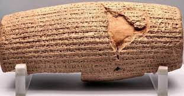
On the second floor of the UNHQ in New York there is an ancient barrel114, covered with cuneiform indentations of text. Dated to 539BC, it was originally published by Cyrus the Great after he had defeated the Babylonian Empire. The text praises the Persian King for liberating thousands of people from their captivity in Babylon, and allowing them to return home.Figure 10 The “Edict of Cyrus”, 539BC.
The barrel text could be understood as a rather beautiful birth certificate of human rights.115
By putting this barrel on display, the United Nations was affirming a very early dot in a long and zigzagging sequence that stretches over millennia of human civilization, in which the murmur of rights becomes increasingly pronounced.
This chapter has joined this great dot-to-dot of political progress at the moment of the Tennis Court Oath in 1789, when the chorus of calls for human rights had developed real momentum. Yet as we have just noted, the line of advance was never linear. Almost immediately after that burst of life and solidarity, the French regressed into division and destruction.
Indeed, this pattern would continue throughout the 19th century. When many millions of men and women were added to the voting registers of nations in the first quarter of the twentieth century, it felt like a positive crescendo was taking place. It looked like the march of democracy had really found its rhythm.
Then 1932 happened. A massive, abrupt zag backwards happened.
The distressed democracy in Germany effectively voted into power the most sadistic and serious threat to open government and human rights that the modern world has ever faced. Adolf Hitler’s dictatorship took the threat to civilised life to a profoundly obscene and global level.
In what seemed like the ultimate test of human nature between 1939 and 1945, the Allied powers battled against the Axis powers. The dark energies of fear, hate and division were rallied together for a most brutal assault on human dignity. We emerged from World War II with deep wounds and scars.
We also emerged, however, with genuine strength and conviction. The global affirmation of human rights, democracy and freedom that was declared by the establishment of the United Nations in 1945 was an emphatic statement of intent for the future. There was a definitive resolve to make the UN a concluding moment in the history of human conflict.
Democracy will always be a fragile experiment, it will always be prone to failures, and spasms of violence, because it is rooted in human beings who are full of the most remarkable contradictions. We are capable of the most lofty selflessness and yet we can behave with such atrocious negligence and recklessness. We should not be timid about our greatest values, and we should not be shy about facing our dark side too.
The modern United Nations is a wonderfully ambitious project that seeks to protect and strengthen the space above our heads. It is constantly wrestling with all the contradictory forces of the human condition. Even at its birth, the opening declarations of the UN were asserted by nation states that hardly embodied the values they were pointing to116.
All the binding commitments to peace embodied in the UN treaties were signed in the aftermath of a traumatic existential crisis. All the institutional apparatus of the UN was set up with a deep understanding of how damaging it can be when that space turns toxic.
As a headbanging reminder of the carnage that total disrespect for human life can cause in a technological age, there is a work of art that deserves note: Picasso’s “Guernica”. A tapestry copy of it was hung up in the UNHQ building and provided a backdrop to hundreds of UN statements concerning conflict around the world. If we look up here, we can see the eye of an electric bulb illuminating a horrifying scene of suffering.
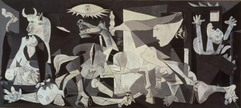
Guernica used to be a quiet, unassuming village in the Basque region of Spain. Then in 1937, on 26th April , at 16:30, the villagers were compelled to look up at the sky. It had suddenly turned formidably noisy and menacing. They would be bombed relentlessly for four hours by the German Luftwaffe. This test-drive of Blitzkrieg tactics turned Guernica to rubble and blew impossibly wide wounds into the lives of hundreds of innocent victims.
Picasso took on the task of capturing the awful scale of the demolition on canvas. He produced a work of remarkable claustrophobic intensity. He framed a mangled pile-up of the modern and the mythical, in which a screaming mother and a dead baby are thrown into a writhing mass of dismembered horses, bulls and body parts.
When Picasso’s apartment was taken over by the Nazis, in the later occupation of Paris, the SS soldiers reportedly noticed a copy of the Guernica painting. They asked Picasso, “Did you do this?”. To which Picasso answered tersely, “No. You did”.
Great art cuts through the noise. Great art has a timeless power.
Look Up
Today, a violent storm is here again.
Above our heads we have charged the atmosphere with a massive load of extra energy. Climate change has the capacity to unleash unparalleled violence on human civilisation. We must look up - not only at the atmosphere, but also at the democratic space above our heads. Both need continual efforts to protect them from the excesses of human ignorance, stupidity and greed.
When Bailly stood in the Tennis Court and raised his arm straight, he was pointing up at something profoundly important. We need to keep looking at it.
We no longer live in the Age of Enlightenment. We seem to live in an Age of Entitlement. Today, the existential threat we face does not come at us like a bullet or a bomb, it comes hidden behind the comforts of convenience. We need to call up all of cultural memory, sharpen our minds and remember our capacity for courage.
It is informative to return to the Tennis Court. The painting can serve to establish some key details about the modern world and our climate crisis.
No cropping – The Third Estate
The reason why so many people were gathered here was that there was a deep resentment in 1789 with the autocracy of the First (Ecclesiastical) and Second (Royal) Estates of France. The people framed by David here were from the Third (Everyone Else) Estate. They came to the Tennis Court to defiantly claim that the real France was embodied in them, and it was not represented in some inner, exclusive chamber of the Palace of Versailles where the other two estates were hanging out.
School history books often invite us to look at this moment and remember the gross inequality of French society of the time. The famous text of Abbot Sieyès poses the question, “What is the Third Estate?”. Helpfully, he answers his own question, “What is the Third Estate? Everything. What has it been until now in the political order? Nothing. What does it desire to be? Something.” (“Qu’est-ce que le tiers état?”, January 1789).
The contrasting fortunes of the different estates were stark: whilst many of the Third Estate struggled to afford bread, many of the Second Estate struggled to put on their ridiculously oversized wigs for a ball. Thomas Piketty’s economic research provides some enlightening numbers: “In France just before the Revolution of 1789, the proportion of national wealth held by the top 10 percent was about 90 percent, and the fraction possessed by the top one percent was as much as 60 percent.”117
Such unenlightened times.
We live in now.
The latest data shows that we must not look back on the ancien regime as if it were some backward period of history, when inequality used to be rampant. We must not crop our view of the present, by imagining that inequality has been tamed and that its visceral power to destroy lives has been overcome. If anything, we should lament our own inability to get a grip on it. In 2022, the top 10% still own a whopping 76% of the global wealth118, and the top 1% still own just below 50% of all wealth119. In fact, we could push it further and note that the top 0.01% own 11% of global wealth.
And it should be no surprise to find out that these figures for wealth are a mirror of who is responsible for global emissions. The details of this inequality will be unpacked in the following chapter. If you only have the bare essentials to live, you hardly have the resources or time to create huge greenhouse gas emissions. In 2021, there were 3.9 billion people who hardly own anything at all; they can only claim a dismal 2% of the worlds’ wealth between them.
It seems incontestable that the space above our head should be shared equally amongst all people of the world. It would cause an outrage if people standing in a room started bottling up the air for themselves to breathe, thereby depriving others of their equal right to oxygen. Yet, for over a century, the industrially advanced nations of the world have been tipping their emissions into the shared atmosphere at an astonishing speed, and therefore we now have a situation where people are already dying because of it.
There is one atmosphere. We all have an equal right to it.
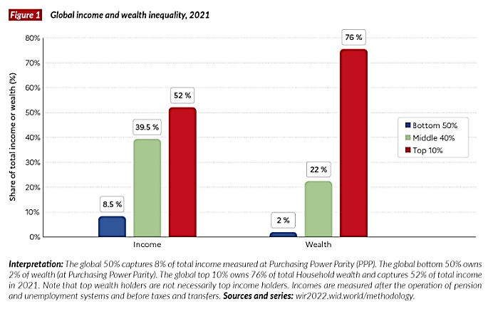
No Cropping – The Full Self
David’s painting of the Tennis Court Oath frames a group of high-minded men.120 They would eventually be led into the revolutionary storm that was starting to swirl overhead by a man called Maximillian Robespierre.
We can find Robespierre in the unfinished painted version of the work. His ghostly, sketchy frame offers us some reminders about the dangers of what might lie further on from the present. Regrettably, although he had his young heart and mind fixed on the common good in his early years – Robespierre ended up in a situation in which he could only see the whole outside world as a threat.
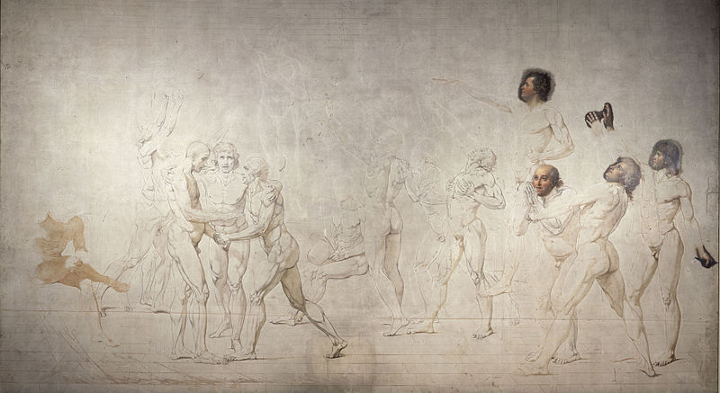
Figure 11 Jacques-Louis David, The Tennis Court Oath (c.1791) (detai)l
After months of trying to defend and purify France against the enemy, the dynamics of the revolution got out of control. And in his final weeks, he retreated in fevered isolation to his Parisian apartment as the tight clench of the Terror tightened closer to his own neck. The last days of his life were spent trapped inside in a small committee room (‘The Committee of Public Safety’, 1793-94).121
Sometimes history throws up examples that are so vivid in their message for us. In the case of Robespierre, we find a shocking example of how virtues collapsed into the most terrible vices. His life is an amazing compression of all that is both good and fearful in the human condition. Robespierre offers us a striking example about the risks and losses that we invoke when we lose sight of the value of ‘the other’. His last week’s demonstrate the dangers of a retreat into the self, into factionalism, or into tribalism.
He takes centre stage here because climate change requires courageous openness and collaboration. Not the opposite.
In the Tennis Court Oath, and in the early days of the French revolution, there seemed to be a healthy and clear minded concern for ‘the other’. In this sketch, Robespierre is to the right of centre.122 He has both hands on his breast, in recognition of the nobility of the idea, and the enormity of the moment. His privileged background was much like the other Bourgeoisie men123 around him on the Tennis Court. Yet in these early days, despite the privilege and wealth that they had, they were gathered there because they were acutely aware of the injustices and inequalities of their world.
Indeed, years before this painting, Robespierre had a deeply formative moment. He was the top student in a prestigious Parisian Lycée ‘Louis le Grand’. He had been chosen from 500 competitors to read Latin verse for the visit of King Louis VXI. However, because it turned out to be a rather foggy and drizzly day, the King couldn’t be bothered to get out of his cosy royal carriage and so Robespierre had to recite his lines rather absurdly into the cold mist. He went home in an irate mood and rather than take out his disappointment on an air guitar in his bedroom, this angry teenager picked up a copy of Rousseau’s “The Social Contract” (1762).
Rousseau is arguably the true godfather of the French Revolution. His works were best sellers throughout France, and “The Social Contract” was the reference book for the revolutionaries. Or perhaps more accurately, it was their civic gospel. In the revolutionary years of the First Republic, it was Rousseau’s book that was often seen sticking out of Robespierre’s pocket as he sat in the open atmosphere of the coffee houses, and walked around the Parisian streets.
It was a great pick.
Despite Robespierre’s toxic turn inwards in the years of the Terror, in his youth he had read one of the most open and forward-looking thinkers of the Enlightenment. Rousseau invited his readers to step outside of their narrow self-interests and become richer, fuller versions of themselves. Rousseau was a thinker who understood the human longing to live in community with others and nature. His Social Contract philosophy underlined the importance of virtues such as resilience and civic service in a society’s progress towards genuine happiness.
Rousseau was not naïve about the difficulties that we can confront when we commit ourselves to the common good. However, when we step outside of our comfort zone in service to others, when we act with kindness and humility, we connect with something bigger than ourselves… and this in turn makes us fuller.
Imagine the painting of the Tennis Court Oath cropped in half. Imagine our lives with no space for the other, and with no possibility to take a healthy perspective about our situation. Imagine a society without uplifting ideals and virtues.
Unfortunately, the current political space can often seem like this. It can appear like modern democracies operate with a very low roof. The rise of populism has encouraged people to point fingers at each other rather than up towards something higher than them. The angry Presidency of Trump, the macho Presidency of Bolsonaro, the gobby Brexiteer Nigel Farage - all provided us with the loudest examples. For those who profit from division and instability, it is productive to create a sense of claustrophobia in a nation. A noisy atmosphere of fear can quickly shrink our thinking down to the short term, to a narrow nationalistic agenda, or to a thin individualistic level.
With this sharper historical zoom, that can pick out “The Social Contract” in the pockets of these men, we can see that Bailly was pointing to a very full democratic life. Rousseau was a thinker who argued that we really do lose something of ourselves when we crop things down to a size that is only big enough for self-interest. He would maintain that a society is impoverished when those pointing to higher ideals are cynically heckled by their opponents, and everyone then loses the confidence and imagination to think and act beyond themselves.
The space above our head that democracy provides, is absolutely essential to our well-being.
No cropping – of the public space.
Finally, carrying around Rousseau in your back pocket also helps us keep in mind another important aspect of the public space above our head.
Rousseau was acutely aware of how easily the fresh air of genuinely democratic debate can be polluted by commercial interests. He argued that when people met in a democracy, they should turn their minds towards “The General Will” beyond them.
In 1789, that space was in a parliament, a pub, a published book or a newspaper – or just the open air. Now that so much of our collective thinking is done online, we need to stay attentive to how much of our social reflection is done through commercial tubing. So much of the worldwide web has been made sticky with algorithms and adverts that are designed to maximise profit, not the deeper welfare of the people.
Robespierre ended up a silo of thought that was barely bigger than himself and he suffocated in there. The internet has been a tremendous force for enlarging democratic engagement. However, that common sense thought bubble needs to be protected like any other open space.
THE UNITED NATIONS?
Now to the matter in hand. The space above our heads that we call the atmosphere, and the international organisation that has been put in place to protect it.
YOU HAD ONE JOB TO DO.
On 4th June 1992, the United Nations Framework Convention on Climate Change (UNFCCC) opened its doors for the Earth Summit in Rio. By 1994, the UNFCCC had entered into force with near universal membership (196 parties).124
It had become very clear that humanity was stepping into very dangerous territory with global warming. The UN understood that the politicians needed regular updates on the science and regular reviews of the progress made in achieving the Convention’s objective. The convention’s ultimate decision-making body is the Conference of the Parties (COP) and, as part of their plan, they established annual COP meetings in which these reviews would take place. The first COP meeting took place in Berlin on 28th March 1995.
The UNFCCC has a singular objective: “To stabilise greenhouse gas concentrations in the atmosphere at a level which would prevent dangerous anthropogenic interference with the climate system”.
YOU HAD ONE JOB TO DO
There has been a long list of negotiated outcomes that often carry the name of the location in which they were agreed upon, and state various purposeful slogans. However, despite all the signatures, the troubling fact is that not a single COP meeting has made progress in achieving its sole objective. The reason for gathering hundreds of politicians, diplomats and scientists together every year is to achieve the goal that the UNFCCC was set up for, which is “to stabilise emissions”.
If a manager of a football team were given a vast range of resources, personnel, training facilities, and expert analysis to achieve the aim of having that football team gain promotion to the next division and 30 years had passed and the team was still sliding down the divisions, there would be an impossible level of media scrutiny about that performance. There is certainly no way that the same manager would still be in the job. This is of course, just a metaphor; for example, the UNFCCC is an institution not an individual; in many respects, however, the metaphor should have even more bite because the stakes are not the fate of a football team, but rather entire economies and cultures.
In fact, a curious feature of how we think about any climate change news is to be so quickly grateful for any gesture or move. In the absence of a resolute focus on the remaining carbon budget (as explained in the previous Module), the media has no secure handle on what is actually being achieved.
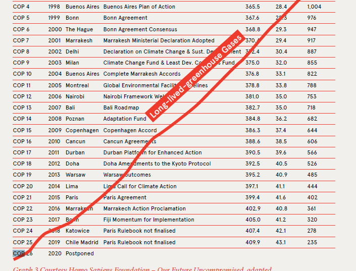
A list of the meetings is presented here.The red line, which cuts across the years and the places is going up. 125 126 127 128
We have gone from 360ppm of CO2 to 418ppm, because we have continued to add excessive amounts of CO2 into the atmosphere. In 1995, the year of the first COP meeting, we added an extra 27.8 gigatonnes of CO2. This number continued to climb through the nineties, and we now emit over 40 extra gigatons of carbon in a year. This is a very basic observation, but it has to be stated repeatedly.
The UNFCCC has many sub-groups, from Climate Finance to Climate Technology, from Deforestation to Gender, but it has one singular overriding objective. It has to keep anthropogenic interference in the atmosphere to a safe level. All of the other targets and outcomes only have any value in how they relate to this central aim.
The UNFCCC is not doing its job.
In the graph above, it can be seen that there have been some years during which the rate of increase started to flatten out, but this is hardly a comforting fact. If you were a child as a passenger on your dad’s bike, and because of his enthusiasm and energy the bike had accelerated at an exponential rate, it would be little comfort if he shouted the message: “There is no need to worry” through the wind-noise.
Slowing down the rate of increase is not enough. Even if your bike stopped increasing in speed and stabilised at 100kmh, it is still going way too fast. Moreover, this is not a flat track, and there are major obstacles and bumps ahead.
Figure 12 Cartoon by Carl Jonsson, Climate Academy graduate 2016
What is urgently needed is a firm and sensible application of the brakes to actually slow down the bike to a speed that is compatible with your survival129.
In the European School system, where my students study, the pass mark is 5 out of 10. A failure to meet this average mark means that they must repeat a year of schooling.130
Throughout the year, the students are presented with their grades in tests and homework across all their subjects with marks out of 10. Their continual assessment is provided so that they can know if they are on target, and it helps students, teachers and parents make the right interventions in adequate time. A student with homework scores of 3/10 in Maths and French, a 7/10 in Art, but with 4/10 in all the other subjects will clearly be in danger of having to repeat the year.
It is a clear method of assessment.
Compare that, with a typical climate change press release. For example, “Today, President Biden will announce a new target for the United States to achieve a 50-52 percent reduction from 2005 levels in economy-wide net greenhouse gas pollution in 2030”.
Questions have to be asked: What is the concrete reality behind these confusing numbers? Do these commitments bring us closer to the UNFCCC’s objective or not? If they do, how much closer? Why do the media and the public tolerate being given their information in such a jumbled way, especially for something so fundamentally important to every society?
The USA is not alone in making things cloudy. Biden is simply following the standard way in which climate promises are now released and published. For example, in 2021, the EU established the European Green Deal that affirmed its intention to reduce emissions by 55% by 2030 based on the levels of 1990. Japan is committed to reducing its emissions by 26% by 2030 based on the levels of 2013, and so on.
By contrast, Economics would not tolerate such numerical ambiguity. It is informative to make a comparison with another major institution.
For example, The Bank of England has a clear mandate, much like the UNFCCC. It must keep the UK’s inflation (CPI) “as close as possible to 2%”. The Bank must write an open letter of explanation to the Chancellor of the Exchequer if the CPI index roams more than one percentage point away from this target in either direction. In the letter, it has to explain how long it expects the inflation rate to remain off target, and the bank must also explain the policy actions it is taking to rectify the problem.
On the homepage of the Bank of England’s website, the target inflation rate (2%), the current inflation rate (0.6%, as of July 2020), and two other key statistics (the lending rate and QE) are clearly shown. This is just common sense. In a democratic society, government institutions are accountable to the public and whether they succeed or fail in their goals, everyone has the right to know what is happening. This is especially true with something as fundamentally important to the economy as interest rates and inflation.
Figure 13 a screen shot, The Bank of England website
A visit to the UNFCCC website is very different. Anyone (whose interests include treasure hunts and wasting valuable time) could spend several days clicking around the website looking for key information. There are interesting articles about beating plastic pollution, how people in the Sahel are developing solar energy and so much more. It is a busy webpage with many layers and hundreds of articles that are related to climate change all of which create the impression that something is being done.
However, the fundamental question about climate change remains unstated and unanswered.
The essential target for humans is buried far away from the home page. The essential data that demonstrates our progress towards that target is startling by its omission. It is a systemic problem that extends from the webpage to the podium. It is a systemic problem that is also mirrored in the way the media reports on the UNFCCC.
Pointing back to previous warnings about “cropping” the public space, the foggy media coverage can be quickly understood. How many media networks have a deep enough motivation to get to expose the truth behind those statements? The commercial imperative to appear interesting and attract clicks is normally stronger than the imperative to present the difficult truth.
Figure 14 A screenshot, The UNFCCC website
Back to School
There are two issues here.
Clarity
Firstly, returning to the problem of reporting emissions targets as percentages: imagine that as a parent you receive a report for your child which reads like this: “In History, we expect Madeline to achieve a 26- 28% improvement in her grade by 2025 based on the results she attained in 2005” and “In Geography, we expect Madeline to increase her mark by 40% by 2040 based on the level of 1990”.
Given such a foggy and muddled format, you would rightly insist that the school provide another document. It would be reasonable to ask for the overview to be given in grades like 7/10 and 8/10. It is a notation system that is transparent, and it enables the reader to draw the main conclusions easily. They show where improvements have been made, and where more effort or interventions are needed.
Every child in a class has the right to know how well they are performing, for better or worse. Every citizen has the right to clear information about the atmosphere.
Answering the Question
Secondly, many students who fail an exam or an assessment do so because they do not answer the question.
When appropriate, my Philosophy students’ essays are assessed on a ‘shit’ scale. At the bottom of this scale is horseshit. These responses are characterised by various features: they cover a large area, they have little shape but a large volume, they don’t really smell of anything because their content is rather bland, they are not very memorable – and crucially, they don’t answer the question.
Although it is a very unpleasant thought, at the top of the scale is dogshit. These are outstanding essays, characterised by a very meaty content, a compact size and a strong impression that is difficult to forget. Most importantly, dogshit essays point somewhere.
If I invited my students to assess any of the speeches made in all of the COP meetings, or indeed any political comments about climate change, they would be graded as horseshit. They simply do not answer the question that they have set out to answer.
Although teachers can monotonously repeat the same message about focus, and although many students struggle to see why this is so fundamentally important in an assessment, the dull fact is that not answering the question posed makes all of the knowledge and understanding they might have used irrelevant.
The UN has one job to do:
Namely: “stabilising greenhouse gas concentrations in the atmosphere at a level which would prevent dangerous anthropogenic interference with the climate system”.
In all the clutter of statements, initiatives, meetings, tweets, articles, press releases and media coverage – they have not been held to account over this one singular task.
CUT X INDEX
But how can this be done?
And to achieve it a simple, transparent measure of progress is needed. And the good news is that it is not complicated.
The only reliable way to know if we are on track to stabilise emissions at a safe level is by tracking the level of the remaining carbon budget for 1.5°C and 2°C. For this there is simple tool: the “CUTx Index”. This index takes the latest data on the carbon budget and divides it equally amongst all the people of the Earth. Grouped then into nations, it provides an X-ray image of the true situation. It shows precisely where we are up to, and who is undermining the stability of life on Earth.
The next chapter will demonstrate that it is richest nations of the world who are filling the atmosphere with greenhouse gases at the most reckless rates. Chapter 6 will also explain the simple data and principles behind the index. There would be a case for calling it “The Common-Sense Index”. However, such a title would betray the fact that there is necessarily a scientific basis to the index - one that is rooted in the remaining carbon budget.
Is it not truly odd that we have no reliable index for climate change? Is it not utterly bizarre that we have no standard measure of where we are up to? Why do we not attentively measure the gap between ourselves and an existential disaster?
It is weirdly mesmerising that every year thousands of delegates, with thousands of scientists, accompanied by thousands of staff, tracked by thousands of reporters, all assemble in one town for two weeks … and yet the main reason for them all being there is not addressed with any clarity whatsoever.
We currently have no dashboard for the greatest problem that has ever hung above our heads.
At every United Nations COP, there are rooms just full of people who don’t look up.
Back to the Cornflakes
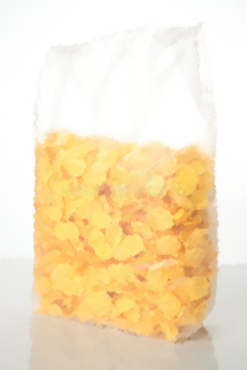
Figure 15 A bag of cornflakes
The next time we open a box of cornflakes and feel cheated by the empty space, we should remind ourselves that if it weren’t for that bubble of air packaged inside the bag, our morning breakfast would be much poorer for it.
We all appreciate the evenly sized cornflakes that pour into our breakfast bowl. Each individual one has survived the long bumpy ride from the factory to the table, and it has found a secure niche, right next to its close neighbours. In fact, there is no need for the slightly apologetic words of the manufacturers, that “The contents might have settled during transit”, because that is exactly what they are supposed to do.
Nobody with any experience of breakfast would want a soggy bowl full of corn dust, perhaps with just a few lucky surviving flakes.
The air above the cornflakes really matters.
It is time that we clicked, ‘back’ or ‘restore’ on our image of ourselves and of our society. David’s Tennis Court Oath painting can help us be bold enough to look back at the fullest picture of ourselves. Yes, we are capable of idiocy and violence. Yes, we have let fear and anger crush us in the past. But Sylvan Bailly is pointing to a wonderful space that exists above our heads.
Let’s be bold enough to fill it with solidarity, courage and respect.
Let’s be smart enough to scaffold it with science- based laws about the climate.
Questions
What is the main criticism of the UNFCCC's approach to climate change, outlined in the chapter?
Has social media increased or decreased the size of the democratic space ‘above our heads’?
On balance, given the short time frames left for action, do you think that we should try and make the UNFCCC work more effectively, or just try something very different? What alternatives might be available to get international agreements and action?
Chapter Six
Chapter SummaryIndia, Bangladesh, and Pakistan were all severely exploited under British colonial rule, with land, people, and resources used to fuel Britain’s wealth. This led to devastating events like famines and long-term environmental harm. Today, these countries are among the most vulnerable to climate change, despite contributing little to global emissions. Meanwhile, richer countries like the UK continue high consumptive lifestyles, often under the illusion of ‘green’ progress, while the Global South suffers the consequences. The roots of the climate crisis are not mysterious; they are deeply embedded in the history of capitalism. The East India Company took over India, with the invisible hand of the market guiding its strategy and policies. It was a hand that had nasty knuckles when needed. The blinkered imperatives of growth meant that so much human and environmental wealth outside of the balance sheets of simple profit and loss was trampled on. Capitalism is now truly global and is finding new layers of human life and the natural world to extract value from. Colonial British rule exercised heavy media censorship in India, a situation that is mirrored today in a global media that is also wired into the same overriding imperative of profit. We have to face the uncomfortable truth that capitalism seems incompatible with genuine sustainability. Indeed, whilst democratic rule has many deeply important virtues and values, it also has a blind spot for environmental issues. This historical parallel underscores the importance of independent journalism in holding power to account. As Nobel economist Amartya Sen observed, "No famine in history has ever occurred in a functioning democracy." Today, young journalists and activists must step into this role, exposing the forces driving climate catastrophe. With guidance from organizations like News Decoder, the next generation has the opportunity—and the responsibility—to challenge the powerful and demand change. |
|---|
What on Earth is going on?
The Keeling Curve has plotted out the rising zigzag of CO2 level every day since 1958 to an accuracy of one part per billion.131 So by the late 1980s, when the level of greenhouse gases in the atmosphere had been ratcheting upwards for decades, it was normal for humans to be rather curious about the cause of such a dangerous phenomenon. Like you would be curious to see if anyone was actually driving the double-decker bus that was heading out of control towards your face.
It was fundamentally important to understand the cause of climate change. What was responsible for such an acceleration? Could such a thing be stopped?
The answer to this puzzle was not that difficult to work out for the scientists looking at the data132. But that didn’t stop a huge range of people joining in the fun at trying to have a guess about what was happening. Some of these guesses have stretched the limits of our biological status as homo sapiens.
For example, in 2012 a Fox News metrologist Joe Bastardi (the clue is in the name)133 claimed that CO2 doesn’t mix in the atmosphere134, that there was no known link between CO2 and global warming135, and that the whole idea of climate change was not compatible with Newton’s First Law of Thermodynamics136. An interesting set of claims, as they seem to confirm the existence of zombies in the USA, and that these zombies have even reached a level of integration into human society that can take them into influential positions on national news stations.
Indeed, shame on the BBC too. They have also continually put different flavours of climate change deniers onto their mainstream radio and TV coverage. Worse, they did it in the name of “balance”. An unforgivable level of naivety about what the world ‘balance’ means for an institution that prides itself on “Intelligent Speech” (Radio 4) and counts numerous Oxbridge graduates amongst its staff. Such a basic level of misunderstanding is a bit like having an elephant sat at one side of a seesaw and then attempting to place a goofy set of plastic garden gnomes at the other, just to make it look like you are trying to level things up.
Yet despite the monumental weight and range of evidence that points to human responsibility for climate change, these odd, deep fake ideas persist in both the media and also in schools.
Some zombies point to the humongous lava output that occurred in the Siberian Traps during the 3rd mass extinction event, 251.9 million years ago. This did indeed cause climate change with a capital C (bold, italicised and underlined in font size 96). This Permian-Triassic boundary in geological time is the deepest extinction of all, the outpouring of lava for over 2 million years pushed the concentrations of greenhouse gases in the atmosphere up to a heady 2000ppm. Yet, if there was a similar flow of lava starting to happen in the last centuries, we would probably have noticed. The lenses of the Google Earth cameras would surely have gotten rather steamed up by now if there was an extra 3 million cubic meters of blisteringly hot lava sloshing around.137
Other zombies point to the slow undulations of the Earth’s irregular and slightly wobbly orbit around the Sun. These cosmic rhythms were carefully mapped out in the first decades of the 20th century by the geophysicist and astronomer Milutin Milanković - a Serbian, who was as skilled and determined at his astrological calculations as Novak Djokovic is with a tennis racket.138 Yet the natural loops of climate change that he identifies are so sluggishly slow, they play out in cycles of 100,000 year (eccentricity), 41,000 year (axial tilt) and 23,000 year (precession) pulses. By contrast, the speed of climate change that has been happening since the Great Acceleration from 1950 is more like the blistering pace and aggression of a Djokovic serve.
Finally, some suggest that an unusual level of sun flares is to blame. This is an interesting kind of theory, in the sense that you wonder just how anybody with their head so deeply in the sand could even make any kind of articulate sound.
In truth, I am conflicted about even writing these paragraphs. I feel like I am typing inside a primary school, sat on a primary school chair, with my knees weirdly bent to get them underneath the tiny proportions of a primary school table. Do we really have to go this low? Without doubt, the output of such childish ideas has only ever had one purpose – to distract from the truth about our accelerating emissions caused by the burning of fossil fuels. They are non-sense, at two levels: they have no empirical support; and they are like the buffoonery of a clown who we all know only pretends to do magic tricks to get some kind of manic attention.
No school should ever try to even entertain such theories anymore. But billions are still spent every year pumping out this kind of misinformation into the pipelines of the internet and the media, and so it therefore necessitates the briefest, pitiful glance here. Indeed, there are still geography teachers across the globe who invite their students to do homework or debates about the natural or the man-made causes of climate change.
Pause.
Do Chemistry teachers still feel the need to establish that nature is not made up of ‘The Four Elements’: Earth Water Air and Fire? The world of Chemistry has moved on a long way since John Dalton understood the atomic reality of matter. His “rule of greatest simplicity” was published back in 1808139. Do we still start secondary school Physics lessons by explaining that the Earth is not flat? Even the Ancient Greeks were able to calculate the planet’s (spherical) circumference and axial tilt with great accuracy.140
Thinking that the Earth is flat in the year 2023 is a harmless piece of irony or idiocy. It hurts no-one, if people would like to keep the belief in a flat Earth idea alive and have a fridge magnet and membership card to prove it. However, the pantomime of distractions laid on for us by dangerous climate change denying clowns, egged on by the far-right or by the fossil fuel industry, should be firmly and decisively pushed forever to the sides. The proximity of a seismic collapse of the Earth’s most basic operating systems is too important to be faffed about with.
Time to move on
The climate change that is over our heads now is unambiguously anthropogenic.
It is caused by humans.141 We are responsible.
But that statement is far too general. It has not been caused by all humans equally. In fact, there are massive differences to be observed in who has put up the most greenhouse gases into the atmosphere, and which humans continue to do so.
We don’t blandly state that “humans were responsible for the colonization of Africa”. It was evidently the Europeans who scrambled for it at the end of the 19th century. We don’t blankly assert that “humans were responsible for the holocaust”, it was the brutal, systematically engineered project of the Third Reich. Likewise, people living in Guatemala had nothing to do with the colonial genocide of aboriginal people in Australia; and people living in Latvia had nothing to do with the Rwandan genocide of 1994. A young man living in Cambodia today did nothing to contribute to the genocidal regime of Pol Pot; and a young woman growing up in modern day Chile could never have been complicit in the execution and torture of the thousands who “disappeared” under Augusto Pinochet’s rule.
This string of sentences might seem like an obvious set of statements to make. However, these specific connections illuminate the lack of clarity that we have about who has, and who is, responsible for most of the emissions in the atmosphere; and crucially, who is suffering the most from it. There are massive imbalances and injustices embedded in the climate crisis. The MAPA (“most affected peoples and areas”) are tragically those who have contributed the least emissions - by a considerable distance; and as their acronym states – these are the people who are, and who will, suffer the most.
This chapter will unashamedly do some finger pointing.
Yes, it is an accusing finger, because there are racist and “nowist” (generational theft) dimensions to the crisis that truly stink. However, this pointing finger is primarily a diagnostic one. It seems that until we have a clear view of the true roots of the problem, we will never get close to reducing our emissions to a safe level. A precise and informed view of the causes and consequences of climate change is essential in a world that seems increasingly full of disinformation, social silos, and a lot of blah, blah, blah.
The Great Cropping Out.
Spot the difference:
Picture A
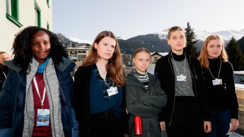
Figure 16, Photo 'Associated Press'
Picture B
The difference is Vanessa Nakate.
This picture of 5 climate activists was taken at the Davos Economic Forum in January 2020. The cropping out of Vanessa by the Associated Press triggered a major backlash. For example, Ketan Joshi, an Indian science writer, tweeted, “I guarantee you that every single non-white person in a public facing role that you know has had this exact moment. Where they've been intentionally erased from something, and it is *purely* down to their look. It is a gut-wrenching feeling.”
This chapter is about how our image of the climate crisis has been cropped.
Cropped at both sides in fact. We live with a media window that does not show us who is responsible for the crisis, and neither does it help us see where the harshest effects of the crisis are felt. So, on the side of emissions: the typical image to illustrate greenhouse gas emissions in school textbooks, and on western media channels, are the industrial chimneys of India and China. They are not images of consumption: shopping malls, cars or cows. On the side of climate change impacts: major floods or fires in Europe that impact hundreds will feature with more sustained prominence than a catastrophic drought in Africa that impacts millions.
The numbers
Before getting into the details, it is important to just put the key numbers out there. The CUTx numbers provided in Chapter 6 provide a very clear map of where the emissions are coming from. It is important to underline again that these numbers give us the most reliable global frame for looking at the crisis. Firstly, the figures are endorsed by the worlds’ most eminent scientists, and secondly, they just take the carbon budget and divide it per person.142 CUTx has no hidden commercial interest, it does nothing beyond common sense. The index is just the clear minded result of genuinely autonomous scientific work.
Clarity and reality. After all the words, it just comes down to the numbers of physics and chemistry and the simplest principles of equity. And here is that stark reality:
The Ultra High Developed (UHD) nations have emitted the most and continue to do so. The Low Developed countries (LD) have emitted the least and continue to emit the least.
For example, the UHD nation Sweden (from the picture above, Greta Thunberg and Isabelle Axelsson) has promised to reduce its emissions by 2.2% per year, starting from today. But the Paris Agreement requires a reduction of 24% pa (from today) for 1.5°C, and 7.4% pa for 2°C.143 The UHD nation Switzerland (from the picture, Loukina Tille) has promised to reduce its emissions by 4.5% per year, starting from today. At first glance looks like a better effort than Sweden, but it isn’t, because for Switzerland to do its fair per capita share of emissions reductions, they need to reduce them by 45% per year for humanity to keep warming to 1.5°C and by 14% per year for 2°C144. And for Germany (from the picture, Louisa Neubauer) the numbers are very similar.145
And Uganda? Vanessa’s home nation only needs to reduce its emissions by 2.9% per year to meet the 1.5°C target, and it could even increase its emissions by 0.2% per year and still remain consistent with the 2°C warming limit.
Finding your own nations’ responsibility is only a click away. Here.
This chapter could stop now. But, as noted earlier, the pointed finger of this chapter is a diagnostic one. We need to understand the deeper matrix of factors that prevent such clarity from the reaching the surface of the media, and the surface of school textbooks.
Therefore, the rest of this chapter will attempt to lift the lid a little further. It will try to open up a clearer view of climate responsibility and impacts through two case studies. The key issues will be opened up by a sustained look at India, and the key conclusions will be drawn through the case of Kenya. Both examples will hopefully illuminate some of the major reasons why we have a ‘systems blindness’ to the true causes and effects of the climate crisis.
CASE STUDY ONE – India
An overview
1866 - Orissa
The date is 1866. The place is Orissa, in northeastern India. A famous date and a famous place that all English school children know. Like 1066 (The Battle of Hastings) and 1666 (The Fire of London) and 1966 (when football briefly came home to Wembley).
To be more correct: this is a date and place that almost no English school children know about.
The details? In 1866, Orissa was marked by a gargantuan famine. This area suffered a drought in 1865 when the monsoon rains failed. Over one million people died the following year. Or from another brutal statistical angle: the famine killed one in three people. Drought was not unusual in the subcontinent. However, this one struck with a savage force because it hit in an area that was under British rule, and the British response was appalling.
This famine has been cropped out of our cultural memory, so it helps to play a bit of starvation hopscotch. If we hop backwards to 1837-1838 we land on a famine in the northwest provinces which killed 800,000, followed by another 2 million deaths in the same area in 1860-61. If we hop forward to 1896-97 under the British Raj, we land on a famine that wiped out over 5 million lives across large zones of India, and with short skip to 1899-1900 another draught killed around another 1 million. Finally, we could jump to the end of the British Raj. In 1943, the Bengali Famine caused the deaths of around 3 million people. In fact, we could play the hopscotch for longer, moving backwards and forwards onto squares of profound suffering.
In total, an estimated 30 million people died of starvation during British rule in India. 146
Even if we were to restore these famines to our historical awareness, it is hard to get past our ‘psychic numbness’147 at such massive figures. It is hard to imagine the scale of the suffering involved. So in an odd way, it is easier to see the impact of these famines when we take the 30 million down to just 11 individuals.
And here they are:
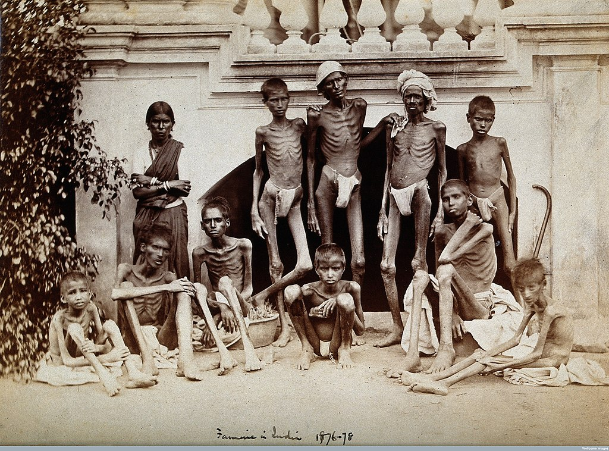
Figure 17, Famine in India: a group of emaciated young men wearing loin cloths and a woman wearing a sari. Photograph, 1876/1878.
Iconographic Collections
Gallery: https://wellcomeimages.org/indexplus/image/L0002225.html
Who was responsible for this?
What was going on?
Some might think that these death tolls are just a predictable consequence of having so many people living in areas vulnerable to drought. Those still proud of the British Empire might imagine that the famines occurred because the advances in transport, communications (and so on) had not yet embedded themselves into the economy. Some might think that the repeated crises were due to limited local infrastructure which makes mismanagement, inefficiencies and logistical failure hard to avoid. Or perhaps, at a very general level, some onlookers would simply write off the deaths as ‘natural disasters’, arbitrary swipes of fate at humanity, by an uncaring, hostile universe.
The uncomfortable truth is that these deaths were almost entirely avoidable (the evidence will be unfolded later).
Colonial rule came with a set of priorities that did not include the health and welfare of the people it ruled over. Of course, it would be much too simplistic to assert that these famines were the full responsibility of colonial British power. We know of Indian famines from well before colonial rule (most often triggered by strong El Niño fluctuations).148 It would also be too simplistic to think the British were only in India for conquest and extraction. There was a kaleidoscope of reasons for British interest in India. Decisions were made inside a complex matrix of views and values.
However, it is sometimes helpful to just be clear about the main things. And the blunt truth is that British decisions made about India held profit as the primary priority, and they were taken with the loud racist noises in the background. In such a situation, the death tolls were tragically predictable.149
Davis in his “Late Victorian Holocausts” (2000) convincingly argues that the famines of this period were some of the birth pains of “The Third World” (a Cold War term). In more recent language, it was an era in which the economic ditch between the “Global North” and the “Global South” truly started to become entrenched. Indeed, the life expectancy of ordinary Indians fell by a staggering 20 percent, a deterioration in human biology probably without precedent in the subcontinent’s long history.150 Davis writes, “If the history of British rule in India were to be condensed into a single fact, it is this: there was no increase in India’s per capita income from 1757 to 1947”.151
To sum up, take a look at the central image of the badge worn by the British governors who ruled in India. St Michael stands on the head of a Satan. St Michael is white, Satan is black. Ouch.
Figure 18, Star of a Knight or Dame Grand Cross of the Most Distinguished Order of Saint Michael and Saint George.
WikiCommons, Nicolas Jackson
For those under the feet of the British rule, it would have been very difficult to understand the Latin words that encircle the image, ”Auspicium melioris ævi”; not simply because the locals did attend eminent British public schools, but because the words translate to, “a token of a better age”.
Maybe, the British just forgot to add, the Latin word “aliquot” – to make the slogan, “a token of a better age for some”.
But such was the matrix of British thinking and decision making at the time: nationalism and capitalism were dominant. Just like in real life, the assertive foot of nationalism and xenophobia is easy to spot in the image: the angel is even dressed in the colours of the St George’s flag. However, it is much less easy to spot the damaging effects of the invisible hand of the market.
British nationalism had all the colourful uniforms and flag waving, but it was arguably the quieter, methodical reorganization of a society into the black and white of double entry bookkeeping that caused the most damage. These financial forces do their work very discreetly, the don’t have noisy anthems and parades. The quiet restructuring of an economy by capitalism is deeply penetrating but it is also oddly quiet. But look more attentively at the dexterous moves of the hand of the market: you can see that is continually flicking away local interests for those in London with the capital; it always brushing to the side the external costs of the environment; it also forms a fist to bang the table as a reminder of short-term interests; and when it is needed, the invisible hand will use its knuckles to get what it wants.
This tandem movement of capitalism and nationalism was typical of what was taking place around the globe during the 19th century. India, China, South America and Africa; they all found their affairs were being conducted by the hand of the market, at an increasing pace, an increasing volume and bulging energy.
“Don’t look back in anger I heard you say”? 152
Why bring back these 30 million dead? Why rake up old imperial injustices?
The truth is that, pointing an angry finger at historic colonial abuse remains an important exercise because the climate crisis is such a vivid example of the same imbalances and injustices. Look at the difference in emission reductions required between the United Kingdom and India. The United Kingdom has promised to reduce its emissions by 5.1% per year when it needs to do 27% pa for 1.5°C and 8.1% pa for the 2°C limit. Whereas India is playing industrial catch up with emissions set to increase at 1.8% per year, and their required reductions per capita are far lower, at only 6.7% pa for 1.5 and 1.7%pa for 2°C.
This is a deep injustice, and it is compounded by the fact that the CUTx figures do not include historic emissions. The CUTx index only looks forward to what has to be done from now (when the remaining carbon budget is divided equally per person for everyone on the planet). Yet if we were to turn around and look backwards it becomes clear the climate crisis has been caused by the Ultra High Developed Nations. Since 1850, the Ultra High Developed Nations have put a whopping 873 gigatonnes of CO2 into the atmosphere, whereas the Medium Developed nations (such as India) are only responsible for a minimal 38 gigatonnes.
If a glass bowl had been put on top of the UK since 1850 so that it would have to live with its own emissions, it would now be suffering the systemic collapse of its Earth systems under the extra chaotic energy of around a 4°C warming. The UK has only managed to escape this hyperpyrexia because their emissions have floated off to all four corners of the planet. Indeed, if historic emissions were included in the calculations of CUTx, for what is required to stay under 1.5° or 2°C, then everyone in the Global North would have to stop breathing now.
The key summary details of these imbalances can be seen in the graphic below (the UK is in red, as an Ultra High Developed nation, and India is in blue as a Medium Developed nation).
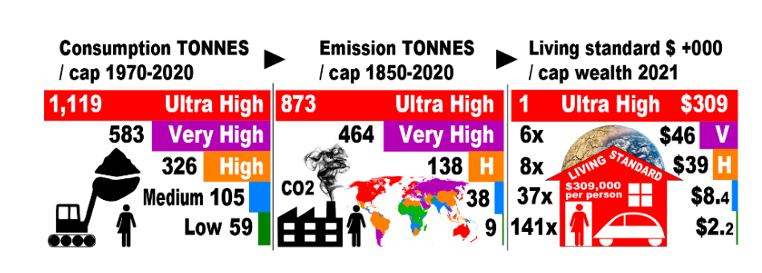
The unwillingness of the Ultra High Developed nations of the world to cut back their emissions to an equitable rate is most vividly seen ‘with flags’ at the annual COP meetings. The delegates at these meetings who represent the countries of the “Global North” sit opposite the delegates from the “Global South”, and every year that the status quo is sustained, the injustices are deepened.
Do we call this racism? Should we call it colonialism? There are flags on the desks of the negotiating tables, but no guns. There are Microsoft files, but no lines of armies. But if we don’t call it racism or colonialism, what do we call it?
A key assertion of this chapter is put forward the argument that a form of colonialism is still at work in our foreign policy decision making. The basic numbers on emissions speak for themselves, but the recent upswing in the popularist vote has added clarity and volume to these narrow national interests. With the worst possible timing, just when we really need genuine global consciousness, there are powerful forces of fear that want to crop our moral imagination to a size that is far too small.
Can we not leave capitalism out of this? Doesn’t capitalism benefit everyone in the end?
The short answer is no. An angry diagnostic finger also has to be pointed at the capitalist economy and society that now dominates global decision making. Capitalism might have been a juggernaut of material improvement (for some) over the past 150 years. However, that juggernaut is simply a vehicle for making profits – there is nothing in its drive for wealth that requires it to take account of external costs such as the environment. If a tiny majority would continue to make short-term profits from the status quo, there would be no contradiction in capitalism taking everyone over a cliff.
Indeed, many of argued that the term “The Anthopocene” is too general a term for the bio-climate crisis that we have. Some have put forward the label “The Capitalocene” as more direct and realistic summary of the situation; in fact, given the purposeful ignorance of many industries to block out these external costs, it seems reasonable to go one step further call this “The Kleptocene”153. As observed in 2017, in “The Carbon Majors Report” just 100 companies were responsible for 71% of global emissions.154
Millions, in fact, billions, of climate change deaths can still be avoided. But we need to be honest about the root causes. The depth of our decision-making needs us to be ready to look at the past and the present unflinchingly. If we are genuinely open minded about the problem, we would not keep anything off the table for analysis. We must not be timid about scrutinising capitalism.
The popular phrase “necessity is the mother of invention” is arguably upside down, when we consider capitalism. An observation of our modern culture fits better with the phrase, “invention is the mother of necessity” (a paradox more fully explored in Chapter 13).
If we are willing to ask difficult questions about monarchies and colonialism, why should we then stop shy of asking the tough questions about capitalism? This chapter will not back away from these issues. It will put forward the case of India as an example of how damaging a casual acceptance of capitalism as the matrix of decision making can be; especially when there are racist noises in the background.
To get a clear view of how we got into ‘The Capitalocene’ (and its mantra of “the me, the more and the now”) it is helpful to roll back the carpet to 1600. This view will also help us see the damages that often get cropped out of our vision of things. By zooming in for a closer look at India, and by establishing a grip on the details of their history, it opens our present crisis with greater clarity.
The details
In (precisely) 1600, Queen Elisabeth I approved a Royal Charter for the East India Company. This license provided a legal and business framework for British investors to get their silks and spices (especially peppers) through much shortened supply chains, and much extended profits. They were permitted to protect their trading posts with a private army. When the original license ran out after 15 years of healthy trading, it was refreshed indefinitely by King James I, under the condition that it continued to make a profit.
When the first boats landed in India, they docked on the shores of the second largest economy in the world: the Moghul Empire155 accounted for 23.4% of world trade156, it was second only to the Ming Dynasty in China. Then from the coastal fringes, through a combination of trade and conquest, the East India Company drove out rival French and Dutch settlements in the subcontinent, and annexed various Moghul provinces. By the early 1800s, the company had grown so powerfully, it actually matched the ‘mothership’ British economy in size (including a near monopoly on the world trade of tea) and it could afford to sustain a standing army of 260,000 men157 (double the size of the British Army).
The East India Company had become the de facto state in India and beyond; it was a nation run by shareholders through “merchant-statesmen”.
Think Google with Guns, Amazon with Ammunition, or Murdoch with Militia.
It even had a funky company flag for its three army groups158 to go into battle with.
This romp of capitalist expansion from 1600, seemingly hit a barrier in 1857, when a local rebellion against the company kicked off.159 The British found it was relatively easy to tame. However, it did force London into a quick game of musical chairs. Seats and offices moved around, personnel and privileges were shuffled, and when the music stopped, Queen Victoria found herself as Empress of India. She had won the jewel in the crown. From 1858 the land and people of India were under the rule of “The British Raj”. 160
The East India Company had been nationalized, but this rebranding left the same operating system in place. It didn’t make any difference which kind of flag was flying in Calcutta, Delhi or Bombay. The key objective was profit. From agriculture to textiles, from urban to rural, from the short to the long term, decisions were to be measured in yields and returns. The great governing algorithm of British calculations had revenue at the centre.
India - The Great Famine of 1876-78
These background truths were pushed into the foreground during the famine of 1876-78.
Following a drought in the Deccan Plateau, this famine covered an area of 670,000sq km. It held around 60 million people in its bony grip. It is known as “The Great Famine”… just like World War One was really “Great”.161 An estimated 5.6-9.6 million Indians died. Behind this dismal death toll, the partnership of profits and prejudice can be seen in operation. These two dominant features of the causes of the famine do not just work in parallel, they were intertwined, and even amplified each other.
The Governor of the Bombay area at the time was Sir Richard Temple. He actually had experience, and a good track-record, of famine response in India. His performance was exemplary in the ‘The Bihar Famine’ just a few years before, in this crisis of 1873-74. When the lives of 21.5 million people in his province were threatened, Temple quickly organized the import of 450,000 tonnes of rice from neighbouring Burmese stocks162. His swift and efficient action meant that there were no deaths reported from the crisis.
Yet.
Two years later, when the Great Famine of 1876 started, he had a new boss: Lord Robert Bulwer-Lytton. His boss knew how costly the purchase and transportation of food was; costs that are were inflated by the price spike that always precedes a famine (just as surely as disease follows like a dark shadow afterwards). Lytton insisted that "everything must be subordinated to the financial consideration of disbursing the smallest sum of money."163 There was therefore no attempt made to move stocks of food to the people who needed it. Worse, shockingly worse, during this moment of crisis, British exports of food from the region continued; such as 320,000 tonnes of wheat - shipped out to the UK.
This ghastly juxtaposition of famine and food exports was not new.
During the 1866 famine (noted at the start of this section), the British exported 100,000 tonnes of rice. Likewise, "During the famine of 1899–1900, when 143,000 Beraris died directly from starvation, the province exported not only thousands of bales of cotton but an incredible 747,000 bushels of grain."164165 And most famously, in the Bengal Famine of 1943, rice stocks were leaving India at the same time that the import of wheat was being blocked by London.166
To press home the point: Churchill was part of an elite ruling class that grew up in the colonial period, in which racist views were still deeply normalized. Pointedly for this short section on food, in Rudyard Kipling’s famous poem, “The White Mans’ Burden” (1899),167 the white reader is invited to join in the divine, uplifting work of bringing civilization to the ‘lower races’. His jingoism jars in the throat, especially in this context, in the 3rd stanza,
“Take up the White Man's burden—
The savage wars of peace—
Fill full the mouth of Famine
And bid the sickness cease;
Bangladesh - Cash crops and cash cows
One of the reasons why India had become more vulnerable to starvation under British rule was the fact that agriculture had been increasingly dedicated to “cash crops”, whose final destiny was located in the economies of distant nations. From self-sustainability, land use shifted to the planting of tea and tobacco, opium and oilseed, coffee, jute, indigo and sugarcane.
Good luck chewing through some indigo in a famine.
Indeed, at a more abstract level, the ownership of land was also commercialized. People were pushed out of small, self-sustaining ways of life into a capitalist game of land acquisition (for the few) and rents (for the many).168 These changes occurred alongside the major shift in the Indian workforce from textiles to agriculture because local fabric tradesmen could not compete with the new imports coming in from the industrial factories of northern England. The spike in the supply of unemployed people led the market forces to demand that the wages of rural workers had to move downhill quickly.
At many levels, the expansion of the East India Company, meant that people found themselves incorporated into a London centred world economy. It is therefore important to underline the fact that those who died of famine did not die outside of a world economy, as if they were some remote people cut off from a modern economy. The opposite is true, they died precisely because they had recently been conscripted into it. Poverty in India is normally understood as a lack of modernization, but on closer inspection, this view is arguably upside down.
At the level of the soil, the level of community, and at the level of commerce, the Indian economy had suffered a major loss of ‘biodiversity’. The rich tapestry of countless local connections and interests had been reduced to an almost singular algorithm that only valued profit margins, and which was designed and adjusted from distant desks in London. This weakening of the economic and social fabric of India made it prone to the moods of the monsoons and the markets. In summary, the diverse Indian economy was transformed, from a complex Moghul carpet into a functional rope. Indeed, Moghul carpets are famous for their knot density, scenic landscapes, floral and animal patterns.
The original Indian economy was of course, far from perfect, but the overall effect of British rule was to tie the Indian people (rather like a cash cow) by a rope to the Stock Exchange in Sweeting’s Alley, London.
Davis summarises, “The great drought of 1876 to 1879 left an estimated 20-30 million dead169. The European empires, together with Japan and the United States, rapaciously exploited the opportunity to wrest new colonies, expropriate communal lands, tap novel sources of plantation and mine labour. What seemed from a metropolitan perspective as the 19th century’s final blaze of imperial glory was from an Asian or African perspective only the hideous light of a giant funeral pyre.”
It is noteworthy that the East India Company established an early grip in the area which we now know as Bangladesh. Before the arrival of the British, the Bengal region was known as “The Paradise of the Nations” with some of the highest living standards and wages in the world.170 The area is also famous for the pivotal moment in the British takeover of India, namely, “The Battle of Plassey” (1757). After Clive of India’s troops sealed their victory the British installed puppet governments in all the different states. This kleptocracy impoverished the area, and as the tragic famines rolled in, the bloated bank balances of the British were soon matched by the bloated bellies of those suffering from kwashiorkor starvation.
This liquidation of diversity and local wealth into cash flows hit the Bengalese with real material force. And as the previous section outlined, this process of ‘capitalization’ of land and people for the profits of distant owners really went through the gears in the 19th century. After land and people, it was the atmosphere that was colonized by the emissions of the industrialised nations in the 20th century, a type of kleptocracy that has accelerated with exponential speed since the 1950s.
Yet despite their minimal emissions, there are not many countries more vulnerable to climate change dynamics than Bangladesh. In fact, there are only 6.171 It is ranked 7th in the Global Climate Risk Index (CRI) for extreme weather events. For example, based on data from 2000 to 2009, Bangladesh lost 11,450 people, suffered economic losses worth $3.72bn and witnessed 185 extreme weather events.172 At a more general level, two thirds of the country lies less than 4.5meters above sea level and a third of the population lives by the coast – very fine margins, even with an optimistic take on sea level rise projections. Just a 50cm rise would displace an estimated 18million people and eliminate about 11% of the land173; and this is just the thin-end of the wedge, “Scientific American” dares to glance forward to more negative scenarios which would trigger the largest migration in human history of 50million people.174
As a prelude to these giant impacts, major shifts are already underway. Water salinity has increased by 26% in the last 35 years, the effects of which can be observed in aspects of Bangladeshi life as diverse as miscarriage rates, agricultural and fishery yields, and compromised drinking water.175
As a reminder, the UK needs to reduce its emissions by 27%pa for 1.5°C and 8.1%pa for the 2°C limit. By contrast, Bangladesh only needs to reduce their emissions by 2.4%pa, and for 1.5°C they could even increase their emissions by 0.5%pa for 2°C. These numbers are even more difficult to accept when the extreme vulnerability of Bangladesh to sea level rises is considered.176
Pakistan - From a tiny trickle to a monsoon
Many people think that by cutting taxes for the rich, the extra wealth that is created drips down to the poor people in an economy. It is called ‘trickle-down economics’. It is a nice idea. But it doesn’t happen. In fact, ‘trickle-down economics’ could be called a ‘zombie idea’177 – an oddly persistent idea that hangs around in the public imagination despite it being dead. Indeed, the Nobel Laureate economist Joseph Stiglitz insisted that there is no evidence for wealth ‘trickling down’ from the rich to the poor in economic history;178 a finding confirmed by numerous other papers.179 More crudely and more to the point, Damien O’Connor (an MP from New Zealand) called “trickle-down economics”, “the rich pissing on the poor”.
It is a zombie idea with a long running history. Mike Davis asks a well pointed question in his book “Late Victorian Holocausts” (2000), “How do we weigh smug claims about the life saving benefits of steam transportation and modern grain markets when so many millions died, especially in British India, alongside railroad tracks or on the steps of grain depots?”180
There are still some shocking juxtapositions out there if we pause to look. Let’s take the third quarter of 2022 and throw together a detail of British life with the situation in Pakistan.
Between June and October 2022, 16,775 electric cars (BEV) were sold in the UK – a rise of 44.1% on the previous quarter181. Both the manufacturers and owners might even feel a bit smug. These cars are typical of a high consumption lifestyle enjoyed by many UK citizens. On the surface, such consumption appears green, positive, helpful, progressive. Indeed, we could easily think that these advanced consumer choices have a certain nobility about them.
However, a wider gaze is needed. Car ownership in the UK is 594 cars per 1000 people. In Pakistan it is only 29 cars per 1000 people.182 A statistic that poses two questions. Firstly, nations like Pakistan aspire to have living standards like those of the UK. But is that even ecologically possible? Would there be enough metals and minerals in the crust of the Earth to make them? Even if there was, the impact on biodiversity would be intolerably big. And secondly, for every new car that is made, battery powered or not, there is a major carbon output involved in the process. So, whilst UK citizens were enjoying the comforts, both physical and psychological, of buying a battery car, the wider imbalances were out of sight.
What kind of wealth trickled down from the UK to the citizens of Pakistan with this upswing in car sales? The answer is worse than nothing. There was no trickle, there was a monsoon.
Historic and current emissions have sharply increased the probability of extreme weather events. And in the third quarter of 2022, whilst those cars were quietly driven home by UK citizens, Pakistan was hit by what Antonio Guterres described as “a monsoon on steroids”. On August 30th, the Pakistani Environment minister reported, “It’s all one big ocean. There is no dry land to pump the water out. It is a crisis of unimaginable proportions. Literally one-third of Pakistan is under water right now, which has exceeded every boundary, every norm we have seen in the past”.183 Inside the headline loss of $15.2bn to the Pakistani economy there were simply uncountable numbers of personal and community tragedies. And as I write these words now in January 2023, an area the size of Switzerland and normally home to 30million people, is still suffering under flood water.
As previous chapters have shown, we are still increasing the output of greenhouse gases into the atmosphere. In such a status quo, the most basic question must be asked: Are these lands even liveable anymore? When the flood waters eventually clear, what is the point in trying to rebuild a life or a community in a place that will get wiped out again just a few years later?
Tragically, these lands in Pakistan were once home to the most ancient human civilizations. The Indus Valley, alongside Egypt and Mesopotamia, were the comfortable cradle of human culture. From cradle to grave, from culture to chaos, from abundance to stagnancy. The story of Pakistan might offer a tragic, symbolic set of bookends for human civilisation.
The choice to juxtapose UK electric cars sales with Pakistani floods might seem inappropriate. It might seem too harsh, too negative, or even perhaps vindictive. Admittedly it is an arbitrary example, but there are thousands of contrasts that could be made, and all of them carry the same message. The bottom line is that we need to equitably reduce our consumption down to levels that are compatible with a stable atmosphere. Contrary to the infinite imagination of a market economy, the laws of physics and chemistry insist that those limits to material growth are there. Every car added to the world by a UK customer fills a space in the remaining ecological budgets that cannot be taken up by someone from Pakistan.
All these issues are embedded in the contrasting numbers of the CUTx index. One last time, the United Kingdom needs to cut emissions by 27%pa for 1.5°C and 8.1%pa for the 2°C limit, whereas Pakistan only needs to reduce their emissions by 1.1%pa for 1.5°C and could even increase their emissions by 1.4%pa for 2°C.
Despite the UHD nations claiming to be in the lead with climate change, the data does not agree. In the build-up to COP26 in Glasgow, the UK claimed to have “the world’s most ambitious climate change target”184. However, that should make us choke on our rice. When the commitment is squared up to the standard global measure offered by the CUTx index, the UK ranks amongst the worst.
The graphic below illustrates that the UHD nations have simply not shifted the dial on their emissions since the 1970s. For every efficiency created, more consumption has filled the gap. Instead of having one inefficient light bulb in every room of the house, we now have hundreds of efficient LEDs. And in the background, the High and Medium developed nations, such as India, Bangladesh and Pakistan, are pushing up their emissions as they industrialise their economies.
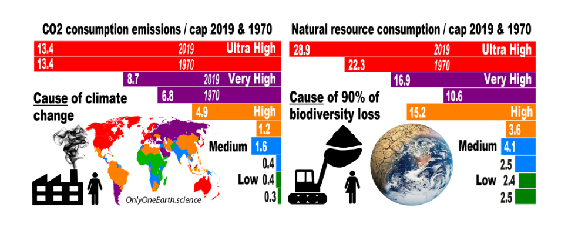
When you put a booming human population and a booming ability to extract and manufacture products into a pot, the global heating of the planet is an entirely predictable outcome.
As stated earlier, the term Anthropocene is a good start in capturing the profoundly destabilising impact that humans are having on the planet, but it is not sharp enough. Firstly, because not all humans are equally responsible, and secondly because it is not clear enough about the key mechanical feature of the destruction (unregulated capitalism).
There is no need for extensive research to establish who is responsible for the climate crisis. The fingerprints of those nations who profited longest and deepest from capitalism are everywhere. Their economic expansion was powered by fossil fuels. And despite the widespread and delusional use of the word “transition”, it still is.185
Some details are important: in 1825, Great Britain was responsible for a whopping 80% of global emissions. Tellingly, these were not predominantly emissions that came up from within the territory of Great Britain; they were emissions that mostly arose from investments that were made in the nations of the empire. Indeed, the British projected their fossil capitalism onto the whole world. They led the 19th century in establishing a second technological ‘layer’ to the planet. A layer that required, and still requires, fossil fuels to keep it going. The book, “Fossil Capital: The Rise of Steam Power and the Roots of Global Warming” (2015)186 provides more details. For example, merchant (steam) shipping fleet grew from 9 to 35 million between 1850 and 1900, and 60% of it was British; and the rail network that grew from 100,000 to 1 million kilometres between 1860 and 1920 was chiefly financed by private capital that had its hub in London.187
Of course, the British were not alone in their push for larger capitalist markets. There was a peloton of advanced economic nations just behind, including the USA, the Dutch, French and Germans. Indeed, the Dutch East India company discovered the “fine spice” of nutmeg on island of Banda.188 Then when they found that dealing with the indigenous population was troublesome, they beat them into a pulp in 1621.
The former head of Economic Affairs at the UN put it like this, “The climate crisis is the result of the very uneven pattern of economic development that evolved over the past two centuries, which allowed today’s rich countries to attain their current levels of income, in part through not having to account for the environmental damage now threating the lives and livelihoods of others”.189
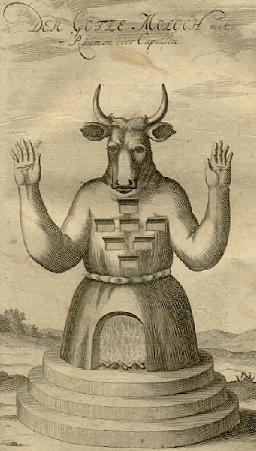
There are evidently multiple features and dimensions to the climate crisis, but if we were to ask “what is the primary problem”? Is there a better answer than capitalism? Is there an answer that even gets close?Figure 19, 18th century depiction of the Moloch idol. "The idol Moloch with seven chambers or chapels", from Johann Lund's “Die Alten Jüdischen Heiligthümer” (1711, 1738).
These are not words written by a Marxist (that knee-jerk reaction to any criticism of capitalism is the result of decades of social conditioning).190 Even the most casual glance at Planet Earth would notice the near universal coverage that capitalism has attained. It does not require much imagination to anticipate that an economic system that keeps the environment as external to its thinking would tacitly allow the Anthropocene to blister holes in the biosphere and destabilise the atmosphere. It is simply impossible to look at the Anthropocene without recognizing the fundamental role played by capitalism. To ignore such a fact would be the weirdest kind of blinkered dogmatism.
Those with a dogmatic fixation on trusting the markets to solve everything can be spotted quickly in public, because they repeatedly and clumsily use of the word “growth”. It is like their mantra.
“Growth”, “Growth”, “Growth” is the constant drum beat that all government policy is a servant to. It is such a dominant and insistent beat that there is not even any space to ask the most basic questions about it. Such as, “what kind of growth?”, “for who?”, “for what purpose?” and “at what cost?”. Indeed, it would be a profanity to put forward the idea that we might actually need “degrowth”.
The closed priorities of capitalism and its unremitting demand for material growth evokes the symbol of the Biblical “Molok” (or Moloch) - a Canaanite deity to which all things were sacrificed. Indeed, in most references to the Molok it even demanded child sacrifices. Often portrayed with a bull’s head, with outstretched arms over a fire, the idol was outlawed in the strictly monotheistic community of Israelites… but this didn’t stop some weaker leaders giving into the temptation to make their own sacrifices to it. Yet, worship of the Molok idol in the Biblical accounts, always ends badly for those who fall under its sway.
Some might find this pointing of the finger at “The Age of Capital” (Hobsbawm) too severe. However, the imperatives of capitalism go far beyond a few cheesy advertising slogans that we must enjoy or consume. Capitalism is not ‘just about the economy’. It is an entire matrix of priorities, values and symbols. Perhaps those who might balk at this critique have not looked properly at the climate data? Or perhaps, they didn’t notice the large asterix after the word “capitalism” on the box. Just like many products do “not include batteries*”, capitalism* does not come with any ecological brakes provided.
“The Shock of the Anthropocene” (2017) offers a good summary: “If, as Frederik Jameson put it, “It is easier to imagine the end of the world than it is to imagine the end of capitalism”, this is because capitalism has become coextensive with the Earth. The last three centuries have been characterized by an extraordinary accumulation of capital… The dynamic of capital accumulation gave rise to a ‘second nature’, made up of roads, plantations, railways, mines, pipelines, wells, power stations, futures markets and container ships, financial positions and banks that structure flows of matter, energy, goods and capital on a world scale. It is this profit-orientated technostructure that swung the Earth system into the Anthropocene.”191
Whatever the benefits and costs of capitalism have been in the past, they have incontestably been grounded on the exploitation of the planet at an accelerating, suicidal pace. This is not a minor external concern for sensitive people who prefer to buy bio-apples in a supermarket, this an existential crisis.
The elephant in the room
From ridiculous zombie theories about climate change, to the Anthropocene and then to the Capitalocene (or the more accusatory “Kleptocene”) there is one last step of zoom to make. It is now, perhaps appropriately for a chapter that used India as a case study, to point at the elephant in the room: at the centre of the Capitalocene is the fossil fuel industry.
In many respects the forces of capitalism are blind. This is certainly true at a theoretical level. Adam Smith in his ‘Wealth of Nations’ (1776) describes how the choices of millions of individuals, simply acting within their own communities and following their own impulses and desires, add up to a remarkably balanced equilibrium. Each individual acts on self-interest, but the overall effect is a wealthy nation.
However, in the real world, things are very different. Capitalism is not blind.
It is both very keenly aware of the present, and it is eagle eyed about the future. The companies with the sharpest view of the short term, and the most telescopic view of the future, are the richest ones. They are the ones who have the resources to look most attentively at the markets. The wealthiest companies in the last decades have been the fossil fuel companies. They have played a game of deceit and manipulation whilst making the most astonishingly big profits.
They were not blind to the climate crisis. They saw it all in precise detail decades ago, and they purposefully and wilfully ignored it. The overwhelming responsibility for the climate crisis belongs to them. They put profits over people and continue to do so.
In January 2023, the journal ‘Science’192 published their findings about just how clearly the fossil fuel industry understood its role in the destabilisation of the atmosphere. The fossil fuel giant, ExxonMobil understood the situation comprehensively. The graph below says it all. It hardly needs any commentary.
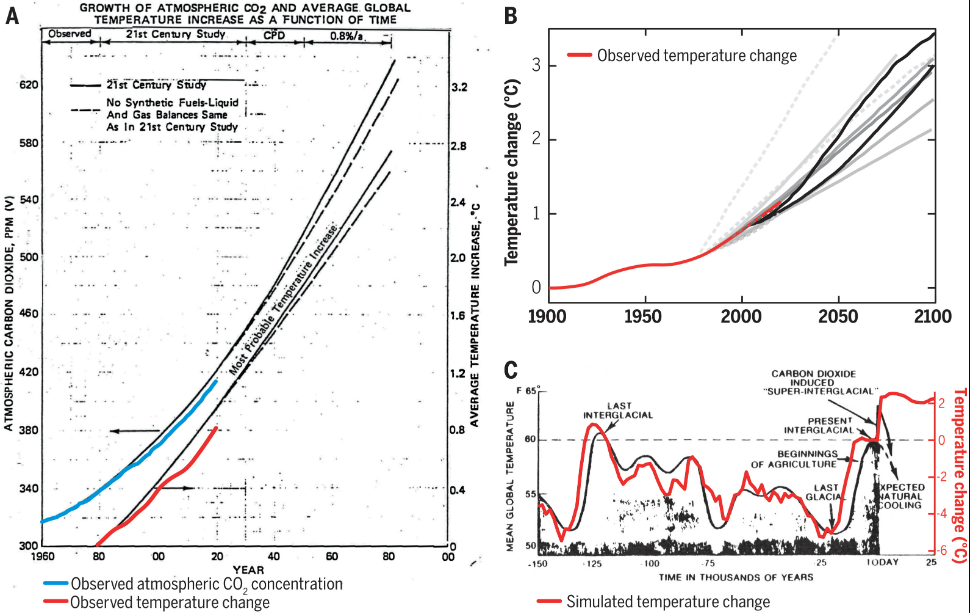
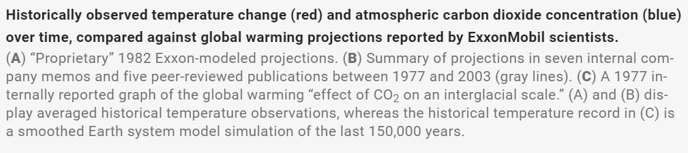
When you are a massive multi-national company with huge resources, you can afford to invest in the best possible analysts and researchers to secure an understanding of future markets and scenarios. It was totally clear to Exxon that the burning of fossil fuels would lead to global heating. The close symmetry of the predictive black lines and the rising blue and red lines unambiguously demonstrate that conscious decisions were made to suppress inconvenient data in order to keep the cash revenues flowing. As the authors of the report note, when “academic and government scientists worked to communicate what they knew to the public, ExxonMobil worked to deny it”.
Exxon is still investing billions in mining and in colonizing the minds of the public with doubts or misinformation about the crisis. The British bullets of the Battle of Plassey were noisy and messy. By contrast, the greenwashing of the fossil fuel giants is slick and comfortable; but both forms of control are deeply destructive and unjust.
Environmental damage and human welfare are not part of the algorithms embedded in their spreadsheets. Dollars can buy you high level scientific understanding, but they cannot buy you a moral conscience.
The big cropping out of responsibility
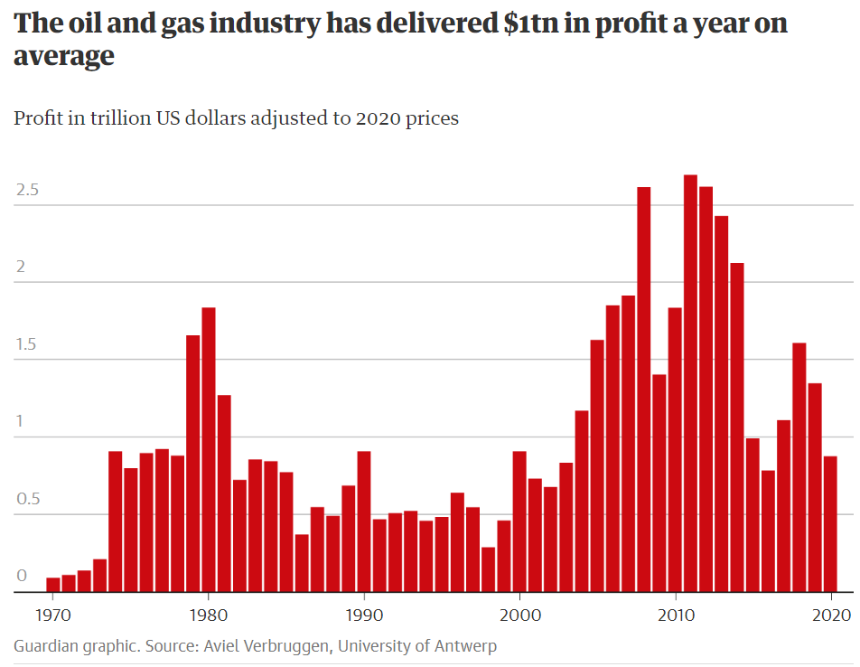
When an industry makes an average of $2.8bn a day [sic] [indeed] over several decades193, it does not just buy a lot of scientific research, it also buys a lot of media power.One last look back at India brings to the surface a key reason why the climate crisis is covered in such a timid and foggy way by most media organisations. Both the East India Company, and the British Raj that followed, blocked criticism and key facts from the public view through their direct and indirect control of the media.
For example, the first newspaper to be printed in Asia was ‘The Hickey’s Bengal Gazette’, set up by an eccentric Irish man, James Augustus Hickey. However, it only lasted for two years (from 1780 to 1782) because it was critical of the East India Company (who through a court ruling, confiscated their types and presses).
In 1857, when the local population rebelled against the company a “Gagging Act” was put in place by Lord Canning, who controlled the press through a very strict set of licensing rules. In 1878, towards the end of the Great Famine, Lord Lytton introduced the “Vernacular Press Act” which prevented criticism of British policies.
As a final example, in the Bengal Famine of 1943, substantial pressure was put on the two main newspapers (‘The Statesman’ & ‘Amrita Bazar Patrika’) to ‘calm public fears about food shortages’, and the word ‘famine’ was prohibited. ‘The Statesman’ later commented that the government, “seems virtually to have withheld from the British public knowledge that there was famine in Bengal at all”.
The complacency, racism and greed of the British administration of India cost millions of lives. There were always other options available to the decision makers. But in the face of starvation, key bureaucrats, businessmen and politicians, body-swerved out of the way – and there was not a strong enough media to hold them to account. It is difficult to disagree with Nobel Memorial Prize-winning economist Amartya Sen’s assertion that “no famine in the history of the world has ever occurred in a functioning democracy”.194
Holding those responsible to account
Sen raises a critical point. How functional is our democracy? How siloed, softened and silenced has it been by the direct and indirect forces of capitalism?
In August of 1943, the editor of ‘The Statesman’, Ian Stephens, broke rank and published graphic images of the famine for the first time. The photographs dodged the problem of not being able to use the word famine, and the images of starving Bengalis on the streets of Calcutta grabbed the global headlines. The photographs then mobilized a rapid set of actions by the new Viceroy (Archibald Wavell) to prevent further losses. Stephens was rightly applauded by the Famine Inquiry Commission, and Bengalis widely consider his decision as "a singular act of journalistic courage without which many more lives would have surely been lost"195.
The Climate Academy works in close collaboration with News Decoder, an independent organization committed to quality youth journalism skills and reporting. It is with their guidance that the following gallery of MAPA articles has been written. Young people need to be courageous and clear minded to hold those responsible to account. We need a whole new army of young talent to prevent us from “Amusing Ourselves to Death” (Neil Postman, 1983).
Here are their stories…
Questions
The chapter focuses on the colonial impact of the British in India. What other colonial tragedies are you aware of?
How are colonial forces still in play in the world today? How can we best bring the rights and stories of those on the margins to the centre?
The chapter raises a big question about capitalism. Is it really possible to reconcile capitalism with a sustainable future? If yes, how? If not, what next?
Chapter Seven
Chapter SummaryThe central chapter in the book. If the rest of the book is about climate literacy, this chapter is about climate numeracy. These are the vital statistics for human civilisation. The CUTx Index is an authoritative set of numbers, supported for communication by the world’s most eminent climate scientists, it maps out, in the clearest numerical terms, just how close we are to planetary boundaries. These numbers are critical for students to use in all their events and publications. The UN only speaks about global problems and global numbers, which masks the fact that the world’s richest nations are both historically and currently responsible for the overwhelming majority of the emissions. The CUTx Index is based on the simple idea that the remaining carbon budget has to be divided per capita. It seems to be basic common sense, and a basic issue of human rights that we all have an equal right to the atmosphere. Once the remaining carbon budget is divided fairly like this, then all kinds of misinformation and fake news about the climate crisis are exposed. Indeed, there is so much misinformation about climate change out there, the CUTx provides remarkable clarity and transparency. It is absurd that none of the current climate pledges by nations (known as NDCs) have anything to do with the carbon budget. The EU has promised to cut emissions by 55% by 2030 based on 1990 levels, and other nations have commitments to get to net zero by a certain date.... but these have nothing to do with the scientific reality of our situation, and none of these commitments can be reliably compared against each other. |
|---|
Between a Rock and a Hard Place
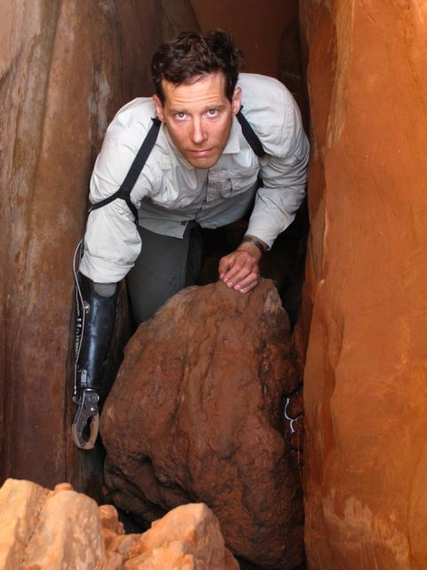
Aron Ralston was out exploring in the Blue john Canyon in Utah in 2003 when he fell down a crevasse, just ahead of a large boulder that then literally trapped him “Between a Rock and a Hard Place” (2004). With only two burritos, 350ml of water and a blunt knife he quickly understood that there was no way that he could move the rock that crushed his lower right arm against the canyon wall. After being trapped for five days, he had to drink his urine and, expecting the worst, he carved his name, the date, and final messages to his family onto the sandstone wall right next to him. However, after waking up on the sixth day, he realised there was a chance that he could survive. His decomposing arm could be broken, and he could cut through the tendons and everything else with his blunt knife.Figure 20, Aron Ralston
https://www.armenianexplorer.com/article/127-hours
It was a simple choice. Either he was going to die there with both of his arms remaining attached to his body – or he was going to survive, but without his lower right arm.
Leaving the main arteries until last, he did the self-surgery in about an hour and then, after 10km of hiking during which he lost around 25% of his blood, he found a Dutch family on vacation who gave him food, drink, and everything else he needed. The extraordinary details can be seen in the movie “127 hours”.
The blunt truth is that this is the kind of situation we are in with climate change. We do not have a choice — the law of gravity which pinned the 360kg rock onto Aron Ralston’s arm is just as stubborn as the laws of physics and chemistry that determine the atmosphere and the climate.
Denial does not change the situation, neither does bargaining. Either we do immediate and major surgery to the infrastructure of our societies — with unprecedented levels of focus and investments, or we will push the climate system into a viciously spasmodic and unbalanced state.
If we are not prepared to chop our arm off, if we are not prepared to force our reason to override our senses, we will not get out of the canyon we are stuck in. The participants of Extinction Rebellion protests and those who strike for the climate are not the idealists, they are the realists. The only reason they have adopted disruptive methods of protest is that so few people in the media or in power have understood the most basic equation of the crisis.
Our situation is undoubtedly hard to accept, especially because this reality can only be clearly seen in graphs, data, and trends. Climate change does not appear before our senses196, like a crushed arm stuck between two rocks. And even if we do look, it is very difficult to think through the situation we are in all the way to its logical conclusion because it is so alarming.
However, mainstream science is unambiguous, it states that we simply cannot keep doing what we do.
There are various estimates for how expensive the U-turn towards a regenerative green economy would be. Perhaps it would cost as much as a finger? Maybe it would cost half and arm, or a whole leg? Yet, whatever the cost, any figure stated needs to be compared with the cost of not doing it. It is common for politicians to describe their latest climate pledges as “ambitious”. However, it would not have been “ambitious” for Aron Ralston to commit himself to sawing just a bit of his arm off. He needed to saw it off completely in order to escape and survive.
One step away from the action there is a bizarre reluctance by the media to ask the obvious question “are our commitments enough?” An announcement of a new climate pledge by a country is always accepted as good. Given the fact that most pledges improve the previous one, this is not a false reaction. However, it should not be the only reaction.
The media analysis that follows is almost always limited to three standard types of enquiry: first,, the media question if the new commitment is ‘doable’ (even if not doing it is “suicidal”197). Secondly, if the new policy is implemented, which industries are likely to suffer the most (even if the investments required will generate wealth elsewhere)? And thirdly, once the pledge becomes a part of the status quo, the only question that gets asked is “are nations fulfilling their commitment?” (Even if it is utterly inadequate in the first place).
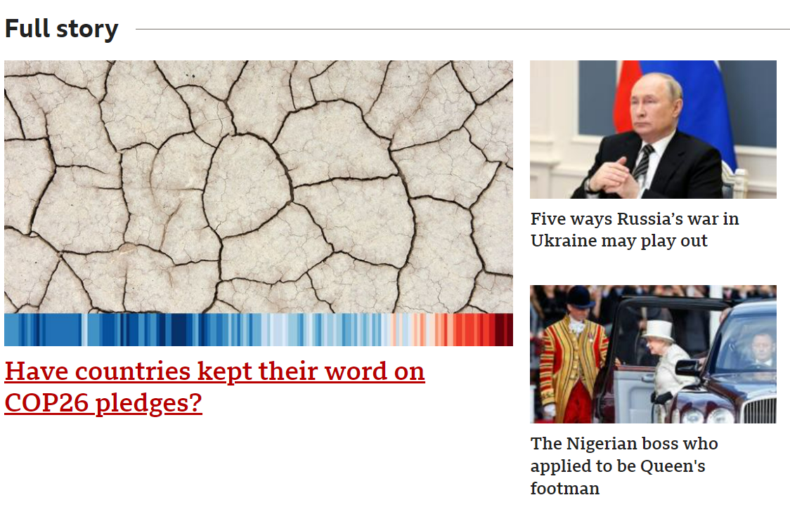
BBC Website: News Homepage: June 5th 2022.
What is rarely the centre of gravity for the coverage is the question that matters the most. Again: is the pledge enough?
This zombie like response is utterly remarkable.
One fundamental reason why this question is not asked, is because the media simply does not have any way to measure the true value of a new pledge. There is no reliable, standard index that is available to them which could be used to get a proper grip on how good the commitment actually is.
This chapter is written to put the first step forward in fixing this glaring hole in our awareness.
This chapter will provide that index.
It is simply called the CUTx Index.
The CUTx Index
The numbers of the CUTx Index assume some very basic things:
There is only one atmosphere.
Greenhouse gases disperse equally in the atmosphere.
The atmosphere should be shared equally by all humans;198
The index starts from the total remaining carbon budget that would limit warming to 1.5°C or 2°C199;
This budget is then divided per capita (on the basis of points 1-3).
Each national number is calculated in the following way:
These budgets do not include unproven negative emissions to be achieved by technology that does not yet exist.
They do not include the possibility of overshooting the targets and then dragging the concentrations back to a safe level at a later date.
Each nation is apportioned their fair share of the budget (multiply the per capita budget by the size of the population);
Calculate how current national emissions from the consumption of goods and services must be changed to remain within their fair share of the carbon budget.
The required changes are given in percentage / per year from the current level of emissions.
This percentage is to be achieved in the year starting from now and repeated each year.
To be noted:
The final numbers include the latest updates to how we understand Earth System sensitivity to greenhouse gas emissions.
The final numbers are based on the latest data and the conclusions of the best science available in 2022 (Sixth Assessment of the Intergovernmental Panel on Climate Change).
The final numbers have been calculated by the Only One Earth Science initiative,200 which is reviewed and supported for public communication by IPCC Co-Chairs Dr Valérie Masson Delmotte, Dr Panmao Zhai, Dr Hans Pörtner, Dr Debra Roberts, Dr Jim Skea, and UNEP Emissions Gap Report‘s “intellectual leaders” Dr Bert Metz and Dr John Christensen, IRP Co-Chairs Dr Janez Potocnik, Dr Izabella Teixeira founding Co-Chairs Dr Ashok Khosla, Dr Ernst Weizsaecker among other eminent scientists below.
In addition, Prof. Kevin Anderson, a world authority in climate science, met with the Climate Academy and the experts of OnlyOneEarth.Science inside the European Commission in 2019. After examining the details of the science and the principles behind it, he also endorsed the value of ‘CUTxPercent’: “It is really good to see this level of scientific understanding and political integrity brought together to produce this very challenging but robust target that we all need to be using to inform our policies for the future.”
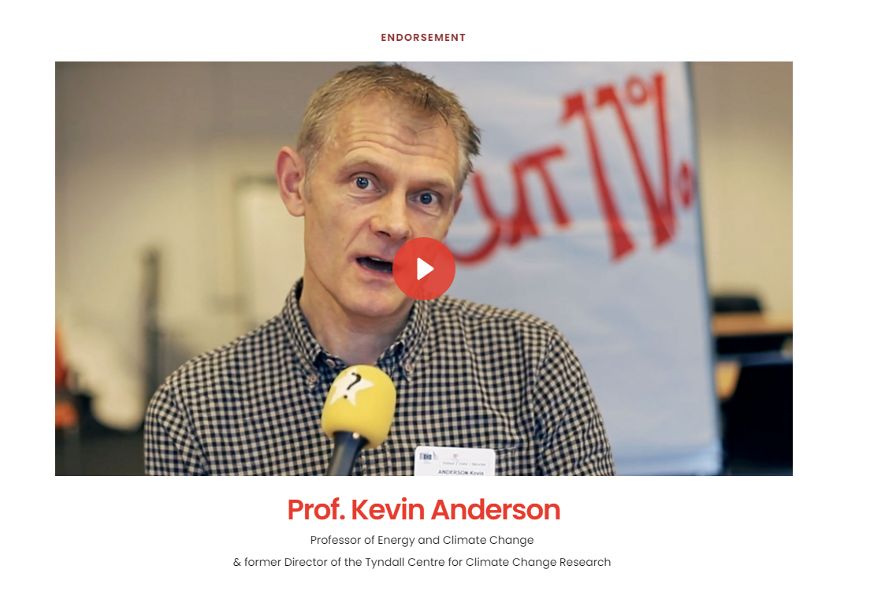
The Headlines
Here are the main headlines that you get when you make the calculations described above. Again, to underline the point, the calculations use the remaining carbon budgets. These are the only numbers that give a clear indication of how well we are doing. These are the numbers that matter when we are dealing with a crisis that is rooted in physics and chemistry.
The emissions reductions required to keep global warming below 2°C are:
4.8% per year (starting from now) for the whole of humanity;
8.3% per year (starting from now) for the EU.
The emissions reductions required for the 1.5°C target are (an improbably large):
16.1% per year (starting from now) for the whole of humanity;
27% per year (starting from now) for the EU.
The numbers are updated annually.
The numbers for each nation will either rise with inaction or fall with strong action. .
Behind these averages there are 197 individual nations. It is informative to zoom in on a few of them (particularly your own) to get a clearer view. Here is a sample:
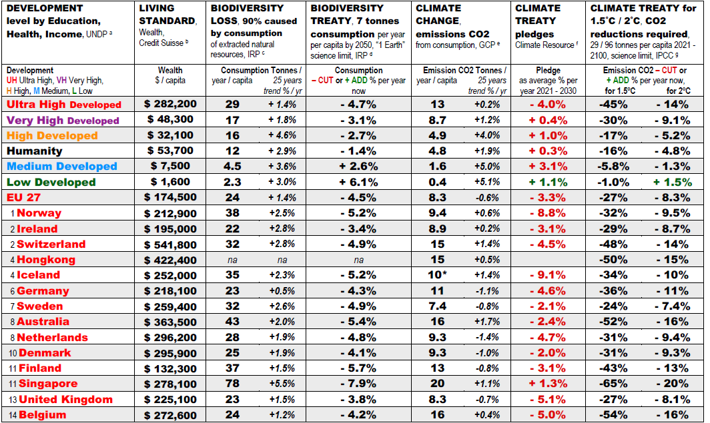
A quick scan of those figures makes it clear that there is a major difference between the reductions required from the ‘Global North’ and the ‘Global South’. In Human Geography these concepts depict rough zones of human development: the rich lie to the North, and the poor lie to the South (with a few major exceptions). The UN has a more specific system of categorization, the Human Development Index (HDI). This index groups nations into Very High Developed Nations (VHD), High Developed Nations (HD), Medium Developed Nations (MD) and Low Developed Nations (LD), based on a wide range of data, from life-expectancy (health) to schooling (education) to purchasing power (PPP) (wealth).201 The top 26 VHD are put into a category of their own, they form the Ultra High Developed Nations (UHD), the 12% of the population that are the healthiest (they live on average 20 years longer than the Low Developed), best educated (on average an University degree compared to slightly more than elementary education of the Low developed) and wealthiest (they earn on average $54,000 per year compared to LD $3,000 of the LD, and have accumulated 178 times more wealth per person.).
The UHD
It is immediately clear from the table that the highest emitters are the healthiest, wealthiest, and best educated nations on the planet. They set the example of ‘human development’ - a standard of living that all nations aspire to achieve. The UHD (makes up 12 % of the population, and yet they are responsible for 33 % of consumption emissions and for 51 % of historic or cumulative emissions (the cause of climate change).
They are the ones with the prime responsibility for the situation we are all in, and they are the nations with the highest capacity to achieve the change required. Once the UHD nations take the lead, the other nations will find it much easier to follow. Therefore, in the full table to be found at www.CUTxpercent.org the nations are listed in this order.
Within this group, there are some heavy hitters. The colossal states of Australia (-16%) Canada (-16%) and the USA (-19%) and the diminutively sized Luxembourg (-40%) have the heaviest carbon footprints because of their highly consumptive lifestyles202. Of these big players, France (-7.1%) has a lower number because of its nuclear power capacity. By contrast HD Portugal (-6.1%) benefits from a Mediterranean climate, a well-developed green energy supply and a more modest level of consumption than most of its EU neighbours.
Despite the general sense in public debates that the EU is a world leader in sustainability, the figures simply do not bear out this claim. It is important to note the gap between what each UHD nation has promised to do, and what it needs to do. As noted previously, it is currently standard practice for the EU nations to state their pledges in the highly confusing format: “cut ‘x’ % by date ‘y’ compared to date ‘z.’. In the CUTx Index, these commitments have been translated into the same metrics as all the other numbers so that the pledges can be seen in a clear light. So, in the case of Germany, for example, if their policy commitments are cashed out into measurable metrics of the index it can be seen that they have effectively only pledged to cut emissions by 4.6% per year from now. What they need to do is cut emissions by 36% for 1.5°C and 11% for 2°C. In the case of Sweden, it has pledged to cut emissions by 2.1% per year from now, but it will need to do 24% for 1.5°C and 7.4% for 2°C.
And so on.
It is only when a proper measure is held up that we can get any true sense of how well a nation is performing. These numbers expose how slack the media coverage is. The gap between the current pledges and the action required for 1.5°C is so improbably wide it makes a nonsense of any talk of “ambitious pledges”.
Furthermore, for all the sense of progress with the climate crisis that comes with each new round of pledges, the trends for emissions since 1992 have been upwards. For example, the top five developed nations of the world have increased their emissions on a 25 year trend (Norway +0.6%, Ireland +0.2%, Switzerland +1.4%, and Hong Kong +0.5%).203
Finally, as established in Chapter 3, “Spaceship Earth”, the cause of the elevated emissions is rooted in the resource extraction figures. It is informative to remember the (unsurprisingly) close correspondence between the two sets of figures. For example, the heaviest emitting nation in the world is Luxembourg (cut 38% per year from now for 2°C), and it is also the hungriest extractor of resources (104 tonnes per year, trending upwards at +3.5% over a 25-year period).204
Although at surface level, the lifestyles of the UHD might look clean and advanced, a proper look down the chain of consumption shows dirty, destructive reality. If every human emitted as UHD, global CO2 emissions would triple overnight, with immediate catastrophic consequences.
The VHD, HD, MD and LD nations
The Very High Developed (VHD) nations, with on average 8.7 tonnes of CO2 emissions per capita, need to make average annual cuts of 9% per year from 2022. There is wide variation in emissions in the VHD group, with for example 45th ranked Qatar needing to reduce 32% per year, 46th ranked Argentina only 4.4% per year, and 52nd ranked Russia 10% per year.
The High Developed (HD) nations need to make average annual cuts of 5.2% per year from 2022.205 Ranked 85th in the United Nations Human Development Index, China is the biggest emitter of greenhouse gases in the world, with 1.4 billion people. However, its consumption emissions are 6.5 tonnes CO2 per person, which is exactly half that of the UHD average (13 tonnes CO2 per person), and about one third of USAs 18 tonnes / cap. Whilst they are a world leading investor in green technology, they are still heavily reliant on coal to meet their energy demands. For China to play its role in a world that holds temperatures below 2°C it would need to cut its emissions by 6.9% per year from now.
The Medium Developed (MD) countries need to make annual reductions of -0.9% on average. India (-1.7%) with almost 1.4 billion inhabitants, is the most significant nation in this group. The modest lifestyles of India’s huge population means that their per capita emissions are low, at 1.7 tonnes CO2 per capita. However, if India would follow the same path as the UHD nations into a very high consumptive, fossil fuel-powered economy then it will shunt global emissions into truly dangerous territory.
Finally, the Low Developed (LD) countries could actually accelerate their emissions by 1.5% per year on average until 2100 and it would still be consistent with the 2°C budget because their emissions are so very little per person.
And so, the contrast between the UHD and LD is startling. Those who have barely contributed to the crisis are, perversely, the ones who have and who will suffer the most. The injustice between the “Ultra High developed” and “Lesser developed” will be explored in more detail in the next chapter. However, one detail can punctuate the text here to illustrate how heavy the cost of climate change will be for the people who are most vulnerable to change ahead:
On 15th March 2019, the monstrous typhoon Idai slammed into Mozambique (+1.4%). It caused a four-metre storm surge in Beira and an ‘inland ocean’ of over 3,000sq kilometres. The ensuing humanitarian crisis left hundreds dead, devastated infrastructure and destroyed thousands of homes, crops, and futures. There was also some very heavy-hearted cost counting in the neighbouring countries of Zimbabwe (+0.2%), Madagascar (+0.8%), and Malawi (+0.2%). One estimate put the total financial cost of the storm for the region at over $2.2bn.206
This chapter’s central goal, concerning the science, is to establish the vital statistics for our future on this remarkable planet. These key figures do lead the mind to wonder what such a level of emissions reductions would look like on the ground. What kind of change would be necessary to cut us loose from the climate crisis? In real terms, how much do we need to saw off with a blunt army knife?
To help visualise what x% per year might look like, it could be useful to take the example of Germany. This is because the national emission cuts they need to enact are close to the average for all the UHD nations. Germany needs to reduce its emissions by 11% per year starting from now.
Suppose for the sake of the thought experiment, that the transport industry in Germany makes up about 11% of their overall emissions (this is a fairly standard figure for transport in UHD countries). To make an 11% cut, Germany would then require the entire transport sector to be genuinely carbon neutral within one year. The example of transport is just illustrative. It is not that far off from being correct, but the percentage for each sector of the economy will be very different for each nation. The details do not really matter – it is the process that helps us see things more clearly. It just shows how deep and purposeful the actions that we must take are.
Hypothetically, the next year would require the food industry to be carbon neutral for a further 11% reduction. Then in the third year, a massive investment in renewable green energy, and so on. . A plan should be put in place for everything so that the country could be carbon neutral before it exceeds its budget to stay within a 2°C rise.
And so on. One of the most urgent areas of research and development should be into carbon capture – for the moment it only functions as a ‘concept’, that allows nations to conceal their lack of action with a shocking level of twisted accountancy. With a war like mind-set, massive investments in this field of chemical engineering might actually take this aspect of the technology from distant sci-fi dreaming closer to reality.207
Once a plan to reduce GHGs for every greenhouse gas emitting sector of the economy is put in place, there would then be a huge argument between each sector about which one goes first. Why should the transport sector have to be the first one to act in 2022? Why should the food industry have to achieve all its reductions in 2023? The role of a competent government would be to take all those transformations and line them up in a proper sequence, evenly and strategically distributed. Each sector can then fulfil its responsibility for their national economy to complete its role in keeping the global temperature rise under 2°C.
This is not the place to work through the complexities of how this might be done, let alone for each individual economy. Instead, it aims to serve as a taste of the kinds of system thinking that is required. In fact, the energy sector would certainly have to move first, because this part of the economy fuels all the sectors and, therefore, all the subsequent infrastructure and industry transformations could be achieved with low carbon emissions.
Secondly, there are a lot of cross-sector targets that could be done too, such as increasing efficiency and reducing waste. Most importantly, reducing emissions sufficiently will not be possible without drastically reducing the background energy use and consumption. Indeed, there are thousands of books and academic papers that provide insights and guidance for such challenges.
However, this is not the point to get distracted, given that these types of publications do not provide their advice within a coherent plan that is based squarely on an absolute target provided by science. This short section is just a thought experiment (a type of writing that is frequently used in Philosophy). Thought experiments are deployed to get a clearer picture of the way things are behind the clutter of details. This scenario with all the 11% emission cuts lined up in a row has been constructed to illustrate the right pace of the reforms required, and to understand what a genuine effort to deal with climate change would look like.
Perhaps the UK could be used as a more precise example of how it might all work out. Classified as a UHD nation, the UK needs to reduce its emissions by 8.1%. The government is advised to ‘reduce beef and lamb’ consumption by 50%, which will reduce greenhouse gas emissions by 3%. Stopping food waste will reduce emissions by 0.7%. Many people target airflights; these are about 7% of GHG emissions in the UK, so halving them would achieve a 3.5% reduction. These three actions together would get the UK close to the required annual reduction rate of 8.1% for 2022. Then the UK would have to plan for the next 8.1% for 2023, then 2024, until the UK is near zero carbon.
Ultimately, it is a task for each nation state to complete these targets as democratically as possible. In theory, each nation should then come to the global table with their commitments that are rooted in the science and principles above and then combine their efforts with the same basic logic. Again, now is not the time to delve into the complexities of diplomatic negotiations. The point of this chapter is to point out the type of system thinking needed, and to show what is lacking amongst all the ubiquitous images of solar panels and battery powered cars, all the grand speeches given at COP meetings, and behind all the hugely important (but disparate) ambitions of different NGOs and action groups.
What is missing so far is a robust frame of reference.
There simply must be an accountable, realistic, science-based plan.
Every nation of the world has signed up to the Paris Agreement. This agreement is a commitment “to limit global warming to well below 2, preferably to 1.5 degrees Celsius, compared to pre-industrial levels.”208 It only seems fair to assume that the signatories of the document actually meant it. It only seems reasonable to take the Paris Agreement at face-value.
Where is the transparency then?
A transparency, not only to measure our failings, but also to affirm, with genuine depth, those moments when a major step forward is taken. Any Party to the UN Climate Treaty, every nation that sets a target, would be expected to have a clear, accountable method of measuring the progress made. They should have the chance to have their efforts and achievements applauded and be held responsible for failures. This is especially true in a democratic state Indeed, many of the signatories of the Paris Agreement are from the world’s most celebrated democracies; and the UN itself is an institution which upholds the value of democratic rights.
The numbers of the CUTx Index could not be simpler. They provide a clear and direct measure of what is going on above our heads. No citizen should have the burden of completing a PhD in Physics to understand what will happen to the basic stability of all the living systems of the planet in the next few years. All the CUTx Index does is take the remaining carbon budget defined by the most authoritative science body on climate change, the Intergovernmental Panel on Climate Change and divide that budget equally between every inhabitant of the planet. There are no weird accountancy tricks, no vested interests amplified, and no minority interests diminished. The index is simply the product of scientific exactitude and the established United Nations principles of equity, and different capabilities and responsibilities.
In an age where information is so often weaponised or withheld for profit, the numbers of the CUTx index are different. They have no commercial background; they do not come from any slanted governmental agenda. Like Socrates, in the famous painting by Jacques-Louis David, they simply point to the truth.
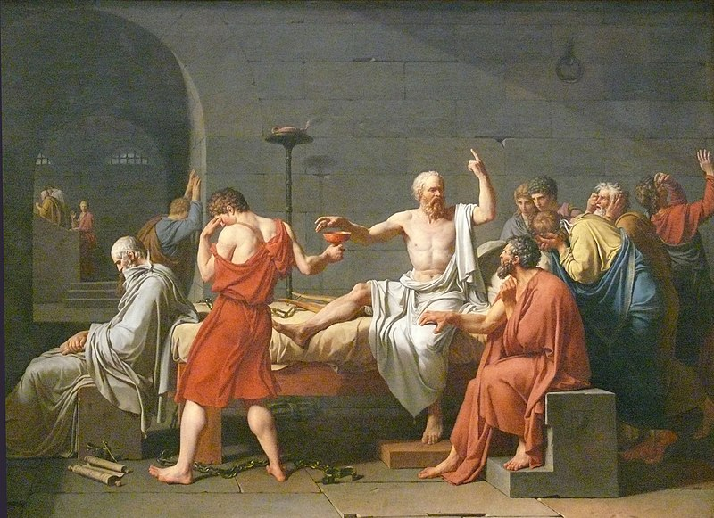
Figure 21, Jacques-Louis David, “The Death of Socrates” (1787)
(A fuller exploration of this painting can be found in Chapter 16)
If the media was to start consistently using these numbers, instead of accepting the standard knotted format that has no relationship to the actual carbon budget, it would surely help sharpen the public mandate to take the necessary steps.
Catastrophe by stealth should not be possible.
Everyone has the Right to Know the truth about the vital statistics of the planet.
The suffragists had a clear goal – a woman’s right to vote. The Civil Rights Movement also had a clear goal – full racial equality before the law. The Climate Movement should also have a clear goal – the establishment of science-based climate laws.
For the moment, the slogans and speeches of the climate marches are very powerful and moving – but until they consolidate around a demand for laws that are based on the reality of the chemistry and physics of the atmosphere, those in power will find it easy to agree with all the sentiments and problems… and then carry on doing nothing. In the absence of a specific demand for laws that frame human development within safe limits, we are observing that the beauty and depth embodied in the protest movement just triggers admiration but does not lead to the required action. The climate movement cannot afford to just become cultural wallpaper.
The climate crisis is a profoundly systemic one. It simply cannot be understood in fragmented, atomised pieces and it certainly cannot be solved with individual, incoherent actions. Systemic problems require systemic responses.
Fortunately, there is an invisible matrix which frames all our economic and social reality, that can pull our actions to the level of change required: the law. Laws are the abstract structure to all our lives and at this late stage in the crisis they seem to be the singular most effective way to leverage our response with the energy and grip that can pull us up square to the science. What else could provide the framework needed? What else could act with the same cohesive and multi-dimensional power? How else can we get out of the “rigidity trap” (cf. Chapter 12) and achieve a system wide regeneration?
If clear boundaries are set it will trigger many levels of innovation and restoration that we would love to see around the globe. The slow crawl of establishing sufficient emission reductions by voluntary consent has failed to achieve any meaningful progress so far. As the CUTx Index shows, the trends over the last 25 years are mostly for nations to increase their emissions. It is clearly the time to take our climate thinking and action to the next level.
The details of this legal depth to the Climate Academy project will be more fully explored in the final chapter. But it is worth underlining the fact that the CUTx Index is designed to show the data at a national level for good reason. This is because nations are the law-making units. It is also the level at which the strongest legal, psychological, media and social forces operate. For example, we are easily triggered by national news events that are reported in the media with a sensitivity to the particular history and characteristics of our nations. It offers a manageable level of imagination and divides the budget into equitable blocks. Perhaps most importantly, national legal systems are also far more developed than those that are emerging in international law.
This textbook is written for the Climate Academy, and this is the middle chapter of 14. It is arguably the most important chapter of the book because it presents the first ambition of the Academy (a systemic understanding of the climate crisis) in its starkest, numerical terms. These numbers are what it all comes down to in the end, both for humanity and for the Academy. The CUTx Index is rightly the essential science that all activities of the Academy revolve around.
Just like the concentrations of greenhouse gases in the atmosphere are the critical measure of whatever climate actions we take, so the understanding and dissemination of these numbers is the defining mark of what the Academy does. Just like an economy and a society can flourish if a safe and stable environment is in place, so all the creative and artistic skills of the students can thrive in bringing these numbers into the world.
It is so odd that a simple climate index does not exist already. It is so odd that education is so far behind the curve with the crisis.
There are all kinds of environmental initiatives and projects happening in schools which all have an important value. But how many of these are framed by the core, systemic problem of the carbon budget? How many projects at upper secondary level are focused on plastics and recycling which have a minimal effect on that budget? How many are informed by the clarity provided by the CUTx Index? Does any government in the world have an educational programme that extends a student’s understanding of the crisis beyond what could be understood at Primary School level?
If governments started pouring millions into climate education how effective would it actually be if it only replicated the same moral messaging about individual actions? How would any student get a grip on the overall crisis if most of the content is only looking at particular problems such as rising sea levels, or more intense and frequent storm events?
Where would these funds go? If they went into a general school budget how would the extra resources be spent effectively? Most school timetables are so loaded with curriculum demands that they keep climate change at the margins, as a final, bolt-on thought. Who would teach the new material? If space was made in the timetable, how would students get a clear view of what is really going on at a systems level? What learning materials would they use? Generally, the materials are either far too atomised and basic or they are far too specialised and advanced.
Indeed, this set of problems in education is symbolic of the climate crisis across the whole of our society.
We have no central handle on it. We only have a limited awareness of the systemic threat. There is deep siloed knowledge in university research papers on the one hand, and very generalised, sometimes confused public understanding on the other.
The CUTx Index cuts through the noise and offers an immediate view of where we are, and the Academy offers that clear vantage point to the world.
The Climate Academy was founded in 2011 to make the gap between the science and social reality both clearly and widely understood. This commitment to a “Systemic Understanding” has remained the first pillar of the Academy. Ten years ago, however, it only existed as a singular school lunchtime project, and therefore it was rather difficult to communicate this reality gap with any volume at all.
Therefore, a further two pillars have been added.
Through “Civic Service” the core truths studied in the Academy are brought into the democratic space as the students publish articles and podcasts, make short films and host events. Students learn so much about the science themselves, and those around them when they commit to sharing their time and understanding with others.
And this second pillar needs to be undertaken in a savvy way because the carbon budget fuses for 1.5°C and 2°C warming are so short. In the third pillar of the Academy: “Systems Entrepreneurship”, it is fundamentally important to think and act in a way that has the most dynamic systems impact. Whilst individual lifestyle choices are an irreducibly important component of the full solution, the crisis is too complex and deeply rooted for that to be anywhere near sufficient on its own. The inspiring truth about engaging with the problem at a full systems level is that it challenges and develops the students in a genuinely holistic way – in mind, heart, and ‘soul’.
The Academy offers a safe and structured space for anyone to play their role in advancing our awareness of the systemic problems and solutions.209 The most obvious place to set up an Academy is within a school. The “free space” of education, the energy of youth and the social capital embodied in a school community is a wonderfully powerful foundation. But any group of citizens, with half an hour per weekend to read a chapter and a space in the week to chew over the details (and a biscuit) can get started.
Back to the Blue John canyon with Aron Ralston.
The changes required in the 1970s, when we had a very complete understanding of the science, could have been implemented with ease. Even as late as 1995, when the first COP was held in Berlin, the bending of the emissions curve would have been very achievable with a determined effort. But we just didn’t want to look at it.
Now, the size of the reductions necessary for 1.5°C is way beyond anything in public discourse at the moment. In fact, even remaining anything under 2°C is difficult to imagine from here, given the lack of momentum. Very bold decisions must be taken now at a major systems level. COP27 in Egypt (2022) must give a massive policy signal to the markets. Infrastructure change takes years, and our ability to deal with the problem with small individual gestures was toasted many years ago.
Just as Aron Ralston had to get his reason to somehow override his instincts, we must set in place some laws that frame our ambitions for economic growth within the boundaries defined by our planet.
Ralston was faced with a mind melting choice. Lose half an arm or die.
Climate change puts us in front of a similar choice.
The people in the streets shouting for justice are categorically not soft minded idealists.
They are the hard realists.
Change is not too difficult to deliver. We can do it. It needs guts and clear minded focus, but we can do it.
Questions
Do you think that the basic principles behind the CUTx Index are fair? (per capita, start cuts now, consumption not territorial emissions, no overshoot, no (unproven) negative emissions) If so, why? If not, why not?
Do you think that it is right to start from the current carbon budget, or do you think we should include historical emissions in the calculations?
Which nation’s figures surprised you the most? Why?
Why is the CUTx index so important to The Climate Academy, and to wider society?
Chapter Eight
Chapter SummaryThis chapter emphasizes the enormous impact small actions can have on complex systems, using Scrat from Ice Age as a metaphor for triggering tipping points with unintended consequences. It advocates for applying the precautionary principle—the idea that those proposing potentially harmful actions must prove they won’t cause damage—in shaping climate policy. Drawing parallels with the brake-less bikes of a velodrome and the profit-driven industrial economy, the chapter critiques our reckless pursuit of growth without regard for environmental boundaries. It concludes that tipping points represent the greatest climate threat, and that achieving sustainable, prudent economic growth while avoiding irreversible damage is the core challenge of our era. |
|---|
The Velodrome
Indoor track cycling. What a sport.
The Olympian demands that the athletes push themselves through on the track are astonishing. Any win in such an event takes a cyclist to the limits of what a human being can exert and endure.
It is also a sport that has witnessed some truly memorable crashes, especially in the team events. If you are brave enough to look through the gaps in your fingers at a YouTube compilation of velodrome crashes, you will see a truly horrendous combination of Lycra, speed, metal and wood.
Thankfully, such carnage is not that common. The cyclists are able to sustain speeds of over 80kmh whilst jockeying to gain small pockets of slipstream with incredible skill and concentration. However, when a crash does happen, the fine margins that the athletes trade in whilst hurtling around the track, look awfully thin.
A pile-up often starts with a tiny wobble or a small miscalculation. However, because there is so much kinetic energy packed into a compact space, the effects of these small moments of imbalance have major consequences. One rider can trigger a chain reaction that can send numerous bikes and bodies flying into the air.
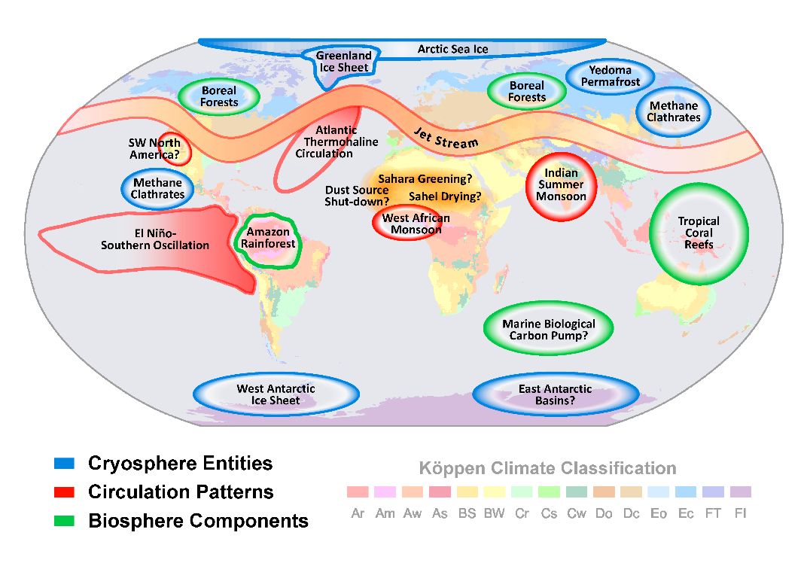
Planet EarthImage Credit: Potsdam Institute for Climate Impact Research
Above is a graphic of the major cogs that determine life on planet Earth. They all exist and morph in an interconnected balance with each other. It could be called the ‘meta’ map of natural world. These cogs can be classified into groups. At the broadest scale, there are three.
The planetary systems that relate to ice, such as the permafrost areas in the polar north and the massive ice sheets in the polar south, are known to science as the Cryosphere210211.
There are also major biological systems: with components such as the vast Boreal Forests, Amazon Rainforest and tropical coral reefs.
Other systems in place around the planet exists as patterns of energy flow. These circulations, such as the Jet Stream and the AMOC (Atlantic Meridional Overturning Circulation), could be understood as conductors who control the mood and movement of all the other players in the planetary orchestra.
Put all these components together into a map, and the major controlling hubs of life on Earth become clear. These blocks of energy, these flows and patterns are what determine everything else that goes on. These are the underlying cogs that have been locked in place with each other, in a settled equilibrium, for thousands of years.
Indeed, it is important to stress that these cogs are interconnected. For example, about 4000 years ago the amount of solar energy reaching the Northern Hemisphere slightly faded, due to a change in the tilt of the Earth. This phase caused the horizontal flow of the Jet Stream to loop up and down in a more exaggerated way, which in turn intensified the strength of both the El Niño/La Niña cycle and the intensity of the Monsoons in India. These natural rhythms in the climate systems are well documented by physicists212. We could say that inside our little pocket of geological time, such variations are ‘normal’.
If we think back to the velodrome, they are like the natural patterns of the cyclists as they move around the track. The peloton will always stretch and compress at different times in the race as the riders play out their individual tactics in a reaction to the movements of the group. No two races are the same, but there is a common predictable pattern of ebb and flow that plays out, with a certain amount of elasticity.
However, this predictability flies out of the window when a crash happens. One rider can be following his game plan, feeling in a strong position, and setting themselves up to make a move off the end of a bend when their back wheel suddenly gets hit by another bike. The chain reaction through the peloton will shred the race script, and it will just come down to luck if a rider survives the wreckage.
The moment that the rider loses balance can be understood as a tipping point.
When the Industrial Revolution began, it was inconceivable that humans could have such a definitive impact on the Earth. The start of the industrial age was well before the surge in population from 1 billion towards 8 billion, and well before the phenomenal acceleration of resource extractions that technology made possible.
Yet, for decades now, it has become very clear that human interference with the planet is not just a matter of small details. What is at stake now is the stability of the entire operating system. It is clear that we are approaching some definitive tipping points in the natural world that would have seismic impacts within the lifetime of young people reading this text213.
The deep complexity of the climate systems will always present an awesome challenge to scientists, it is an area of research that demands not only an understanding of Physics, Chemistry and Biology, but also a specialized understanding of the hinges between all three components, underpinned by mathematics. Indeed, when these scientists started their research into climate modelling back in the 1970s, the sheer scale and the chaotic character of their subject meant that even some of their academic colleagues viewed their work with a dose of scepticism, and held some of their papers at arms-length214.
Like any science, climate scenario modelling papers are carefully wrapped in different layers of probability. Any conclusions are put forward with due modesty and tentativeness; the rules of peer reviewed scientific publications are rightly stringent and exacting.
Despite these formidable obstacles, this branch of Physics now speaks with genuine authority. It is also an area of science that has been given a fantastic boost by the exponential rise in computer processing power since the 1970s. Indeed, the Nobel committee awarded Syukuro Manabe, Klaus Hasselmann and Giorgio Parisi215 with the joint Physics Prize in 2021 in recognition of the robust and groundbreaking nature of their work.
In fact, climate science is just like any other scientific discipline – the central conclusions are extremely secure. As former NASA scientist Professor James Hansen, “We know as much about the climate as we do about the human body”.216 217
For example, in Biology we all know that continually overeating will lead to obesity, which in turn leads to an increased probability of fatal diseases. This most basic fact of anatomy is not then dismissed if our doctor is not able to predict which biscuit, on what day, will lead to a heart attack, at a precise moment in the future. Likewise, we don’t need a PhD in Physics to know that jumping off a motorway bridge into a busy traffic will prove to be fatal. We would not know what gender of driver, nor which model and colour of vehicle will hit us. However, it is clear that our life expectancy will shrink to seconds if this idea was to become a commitment.
In conclusion, there are some clear lines that we should not cross over if we want to avoid triggering a cascading sequence of events that will throw the major forces of the planet into a chaotic condition. These lines are well understood.
A glance back at ‘The Absolute Basics’ will also show that a reading of 413ppm for the concentration of Carbon Dioxide particles in the dry air is profoundly unprecedented. As Peteri Talaas, the former Director General of the WMO stated in October 2021, “The last time the Earth experienced a comparable concentration of CO2 was 3-5 million years ago, the temperature was 2-3°C warmer and sea level was 10-20 meters higher than now. But there were not 7.8 billion people then”.218 It is simply not possible to shunt up the level of extra watts in the Earth’s planetary systems so abruptly and so decisively and not expect a major reaction somewhere down the line. It is naïve to think that a balanced equilibrium could remain in place when the fundamental co-ordinate of all life on Earth has just jumped far outside of its background pattern of movement. The last time anyone checked the global ‘Wise-o-meter’, we were still getting a painfully low climate score.
It is not an exaggeration to state that climate scientists are looking at all the hockey-stick graphs through the gaps in their fingers, as they understand the jeopardy of the current situation.
Going through the gears
We are prone to have a false sense of security about the future, because it is natural for us to assume that it will more-or-less match the past. Our limited imagination about what could happen ahead of us is normally useful, because it makes our lives efficient and liveable. It would be exhausting to continually think through the vast range of possibilities and all their consequences. However, this blind spot can be dangerous. Sometimes it is important to pause and do the big macro thinking. The threat of climate change insists that we take a step back and look at the pathways that we are on. The acute dangers of tipping points require us to be attentive to how close we are to pushing the system out of balance.
This need to step back is partly due to the fact that we are predominantly linear minded bipeds. This is hardly surprising, since most of the time we only have to deal with linear change. For example, if we walk one kilometre, we have a good sense of being half way to our home that was 2km away; if we go and get a beer at half-time in a football match we have a good sense of how long our team needs to stay ahead to win the match; and if we earn €10 an hour for chopping vegetables, the it is obvious that 4 hours in the kitchen will earn us €40.
Simple.
The problem is that we are being blind-sided by a different kind of change – the exponential variety.
And this kind of change operates in a very different gear.
Exponential Change
Exponential change is a much tougher type of change to hold clearly in our minds. Exponential changes play out in modes that make less intuitive sense to us.
An often-quoted example of this type of change involves a legend about an Indian King who is given a beautifully carved chessboard. When he gratefully asked the court advisor who gifted it what he could offer him in return, the advisor said that he simply wanted to be given a single grain of rice on the first square, two grains and the second, and four on the third… and so on. This seemingly modest request was accepted by the King. However, it soon turned out to be impossible to fulfil. The 21st square on the board required over a million grains, and the 41st square required over a trillion, and there was simply not enough rice in the world to properly fill the final 64th square. More precisely, it would have required 264 -1 (or 18,446,744,073,709,551,615 grains). Or maybe 18 quintillion grains of rice if the modest vizier would be willing to round his request down a bit.
In our real world, the formidable ability of the fruit fly (Drosophila melanogaster) to multiply in number in our kitchen during the summer months is a notable illustration of exponential growth. One lazy failure to deal with a banana skin can trigger a crazy hygiene war with every scrap of food for days after219. A failure to deal with a small outbreak at the start makes it very difficult indeed to contain the problem as the exponential growth kicks in. A truth that political leaders did not easily grasp at the start of the COVID-19 pandemic.
Indeed, the build-up of massive pressures on the planetary systems has happened as fast exponential growth. One of the best places to stand and look at the massive dimensions of the human impact on Earth is to look at the important dashboard developed by the Stockholm Resilience Centre220. The scientific curves that hook upwards dramatically from 1950 in “The Great Acceleration” illustrate so many of the pressure points that have developed. The dashboard covers both the Earth System trends (from CO2 readings and ice melts to bio-diversity loss and ocean acidification) and Socio-Economic trends (from population growth and primary energy use to transportation expansion and fertilizer use).
Yet the odd truth is that this growth has mostly happened in single digit annual increases - these seemingly unremarkable additions, when compounded on top of each other are hugely significant. Mathematics informs us that if something grows at 3.5% per year for 20 years, it would have doubled in size221. The surge in population and industrial activity since 1950 has therefore given us plenty of time to take the planetary systems to the brink of various tipping points. As Professor A.A. Bartlett bluntly (and repeatedly222) put it, “The greatest shortcoming of the human race is our inability to understand the exponential function.”
As noted in the ‘The Absolute Basics’ (Module 1) the amount of extra energy in the atmosphere is now equal to 600,000 Hiroshima A-Bombs per day – and that does not include the monumental level of extra energy that has also been absorbed by the warming oceans. We have achieved something spectacular in a very unspectacular way. Indeed, policy decisions still seem to be operating in this blind spot - despite all the warnings of science, we are set to accelerate emissions further until at least 2030. It would be easy to consider that the increased emissions of 2.1%* in 2021, did not look like much to worry about. Yet the hard truth is that we are projected to match the entire emissions of human civilization up until now by the year 20__** with exponential growth rates such as these.
A Tipping point – a close-up view
We should really not be pushing the climate system into a situation where it is very tempted to flip. The danger we are now faced with is that the exponential growth in emissions can shift into a radically new gear, where that growth rate becomes unstoppably huge. The major concern that overhangs the climate crisis is that if one part of the climate system goes into breakdown mode, this destabilization will drag other major elements of the Earth* with it.
But how do tipping points work? What are the smaller mechanics of the process?
It is informative to have a brief look at something beautiful. Trees. In the early summer of 2018 whilst driving south through Europe, it was very notable that the trees that edged the motorways were not their usual lush green. In fact, the scenery was dominated by yellows and bronzes, like a day in late October. It had been a truly odd year of weather, with prolonged periods of heat and drought. The heatwaves had caused havoc across the continent, and so now instead of driving past trees that should have been acting as a vacuum, sucking out CO2 from the atmosphere, they were just frazzled bystanders to human traffic. A situation that was not just happening in the fields of southern Europe; it was a situation replicated across swathes of Scandinavian arctic land.
Indeed, across the immense Boreal forests of the Northern hemisphere, there were widespread reports of unprecedented heatwaves, electrical storms and large-scale forest fires. The Boreal forests are one of the major cogs of the Earth’s climate system, and in 2018 they were experiencing unprecedented heat stress.223
2019 was also characterized by similar extreme weather patterns. Indeed, NOAA reported that June 2019 was officially the hottest June on record for the globe. For Anchorage (in Alaska, USA), it was 0.95°C above the average,224 and the citizens of that city also experienced a string of astonishingly hot days at the start of July 2019 that were 12.4°C above the average.225 For various reasons of thermal dynamics, global warming is not happening at uniform speeds across the globe and Alaska is among the fastest warming regions on the planet226227. Since the start of the Industrial revolution, it has heated up by an average 2.7°C. In 2019, the WMO reported that: “Since the start of June, the Copernicus Atmosphere Monitoring Service (CAMS) has tracked over 100 intense and long-lived wildfires in the Arctic Circle. In June alone, these fires emitted 50 megatonnes of carbon dioxide into the atmosphere, which is equivalent to Sweden’s total annual emissions. This is more than was released by Arctic fires in the same month between 2010 and 2018 combined.”228
To the East, at the same latitude, Siberia had experienced similar wild temperatures and wildfires, and in July 2019 an area totalling the size of Belgium was ablaze.
The lack of photosynthesis by the side of a motorway is of course not significant at a global level. However, the lack of photosynthesis on such a monumental scale in the vast Boreal forests of the Northern hemisphere would have had a critical knock-on effect. It means that going forward into the future, there is an increased chance of more heatwaves and droughts. In turn, this means a higher probability of more wilted trees, forest fires and scorched earth – all of which pushes up the level of CO2 in the atmosphere even higher… and so on.
The “and so on” is very important.
Destabilising such large components of the Earth’s systems into self-reinforcing feedback loops like this poses the biggest risk of all – a triggering of irreversible, cascading impacts. In the end, the scale of the dynamics become so magnified that the natural forces in play simply reduce human efforts to mitigate the problem ineffective. It simply doesn’t matter how many trees (puny) little humans want to plant, if the land and climate around us is trapped into a spiral of radical, inhospitable imbalance.
The example of the Boreal forests tipping into a different state “at 3°C” raises some important technical issues about the science of tipping points that must now be addressed.
A map of what lies ahead
If all the pixels of scientific research are put together, it becomes possible to form an overall picture of the future scenarios ahead. Of course, the moment that we zoom out to a very general level of summary, so many nuances and qualifications in the original research papers get lost. However, these wider vantage points are important.
Indeed, the Paris Agreement (2015), committed all the nations of the world to limit warming to well below 2°C (and as close as possible to 1.5°C). This agreement was informed by an understanding of the macro analysis - that the higher the temperature gets, the higher the risk is that the destabilization becomes contagious and unstoppable. Indeed, without diminishing the importance of the localized impacts of climate change, it is this global, existential threat that climate change carries which lies at the heart of the whole crisis.
As a very rough summary indeed: the corals of the Great Barrier Reef cannot endure a rise of 1.5°C and many glaciers will be doomed with a 2°C rise. As we just noted, the Boreal Biome (and Amazon rainforest) is under threat to tip at 3°C; and at 4°C the startling amount of methane in the permafrost is at risk of irreversible destabilisation229. A world heated to an average of 5°C or 6°C would be unrecognizable to us, and utterly hostile to human life. A full and properly qualified account of these different stages of disruption can be found in the award-winning book, “6 Degrees” by Mark Lynas.
There are very few scientific scenarios where any touching of a 4°C rise does not signal a irreversible destabilization. A rise of 2°C sustained over centuries also makes the risk of wider contagion and irreparable damage likely.
Qualifications
Now for some of those essential qualifications of the science - there are five major points to underline.
Firstly, as just indicated, there is also a huge difference between sustaining a 2°C temperature rise for 50 years and holding it for 500 years.
Secondly, any summary that captures scenarios for “2°C” or “3°C” is immediately simplistic. There is of course a huge difference between 3.1°C and 3.9°C that cannot be accounted for at the level of zoom that this book has.
Thirdly, once a temperature triggers a major system change, even if the temperature is then later reduced, the chain of events will not go into reverse as it has passed its tipping point.
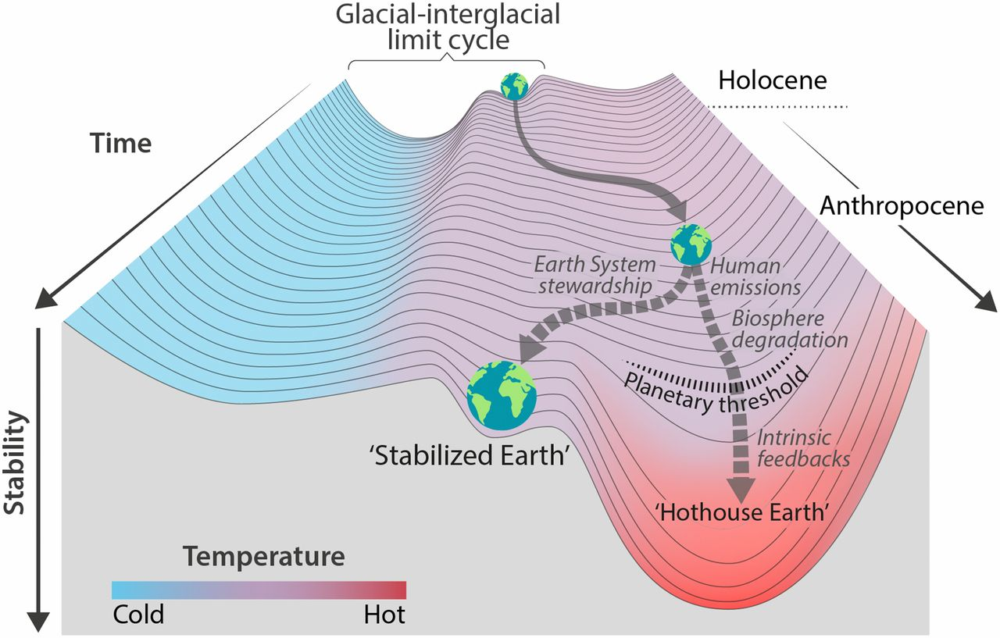
(from Steffan et al, 2018).For example, the conditions for the collapse of the West Antarctic Ice Sheet230 might already be close. However, if those parameters get do established at 3°C231, it will still take centuries for the ice to actually turn into the catastrophic sea level rises of 57.9 meters [sic] that would follow from its collapse232.
As polar climate scientist Roberto DeConto notes, “If the world warms up at a rate dictated by current policies, we will see the Antarctic system start to get away from us around 2060… Once you put enough heat into the climate system, you are going to lose those ice shelves, and once that is set in motion you can’t reverse it”. Adding, “The oceans would have to cool back down before the ice sheet could heal, which would take a very long time. On a societal timescale it would essentially be a permanent change”.
The good news is that the fuller melting of the East and West Antarctic Ice Sheets are not expected to occur for a century, or perhaps centuries. Good news, if you belong to this side of the century.
Fourthly, the vertiginous rise of greenhouse gas concentrations in the atmosphere is so sharp that it poses a few problems for Geologists who normally deal in long term patterns. Indeed, when a Geologist says “long-term” they really mean it - they are used to dealing with lots of zeros after a number when they think about blocks of time. The problem with the last (utterly miniscule) 50 years of the Earth’s 4.6-billion-year history is that the change has been so abrupt. Human beings are a stunning new addition to geological history – we have developed technology with astonishing capacity and scale to transform the planet. This has made it much more demanding to develop the reliable models.
Chaotic Change
And so, finally, to a third type of change. This kind of change is not linear, nor is it exponential. It is of a different order all together. It is chaotic change.
As stated in the opening section – we have inherited a climate system that is predictable and stable. We have a habitat whose longstanding rhythms have made it possible for us to advance our economic plans with such remarkable success. This stability is extensively understood by scientists and the latest climate research has also provided us with a reliable map for what lies ahead at different levels of temperature rise.
However, all of this understanding must be tempered by one hugely important background truth about dynamic systems. At it is most simple, chaotic change is a reality that can be understood without much trouble: if we were to observe two children throwing a message in a bottle off the back of a ship, it is not that difficult to foresee that the bottles could easily end up on beaches located in entirely different continents. As the ancient Greek philosopher Aristotle noted, “the least initial deviation from the truth is multiplied later a thousandfold”.233
Our understanding of chaotic change, rather appropriately, suddenly jumped forward by accident in 1961.
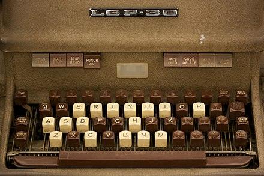
On a cold winters’ day in January of that year, Edward Lorenz, a leading mathematician and meteorologist, was sat at his work in MIT. Given his interest in these two fields, and his position at a leading university, it is not surprising to note that he could be found feeding 12 weather data sets into his LGP-30 (one of the earliest digital computers made by Royal Bee). Lorenz was working on advanced dynamic modelling systems to predict the weather.Figure 22, LGP-30 computer at the Computer History Museum, Marcin Wichary from San Francisco, CC BY 2.0
He then went for a coffee, whilst the computer chewed over the numbers.
Whilst he was away from his desk a major moment in 20th century science happened234.
Upon returning to his desk, an hour later, he saw that the LGP-30 had produced weather predictions that were seriously odd. The 2 months of modelling time inside the computer’s head had finished with predictions of temperatures and rainfall patterns never seen on the planet before. It was not a technical failure, nor a failure of the underlying mathematical models. The uncomfortable truth was that Lorenz had simply made one tiny change in the data – at the fourth decimal place. Instead of inputting the figures to 6 decimal places and typing in “0.506127”, he had rounded it down to “0.506”. It demonstrated that tiny changes could result in the whole system jumping into a radically different state.
It was a shock to see that the climate system was perhaps not the stable, self-regulating world that people imagined. The sheer number of interconnecting cogs in the atmosphere and biosphere, cogs both massive and (pertinently here) miniscule, meant that such unpredictable results were possible.
It would come to be known as “The Butterfly Effect”, after the title of Lorenz’s lecture, “Does the flap of a butterfly’s wings in Brazil set off a tornado in Texas? 235 This new understanding of the underbelly of reality would have a formative impact a huge range of studies, from Physics, Biology and Sociology.236 237 Just because a system obeys certain laws, it does not mean that the outcome of an action can be predicted. This reality of this kind of change, chaotic change, does not mean that everything which happens in a system occurs by chance; the governing laws of physics and chemistry remain in operation, as do the laws of cause and effect. It is simply that small changes in dynamic systems can lead to drastic changes in results.
As Lorenz himself summarised, “When the present determines the future, but the approximate present does not approximately determine the future”.238
Since the 1960s, all of the modelling involved in climate science has had the reality of the “Butterfly Effect” in the background. Chaos Theory adds to the jeopardy involved in our interference in the climate system. We were so fortunate to have inherited a climate that was so deeply entrenched in an equilibrium, but by rocking the boat so violently, we really do open up so many more pathways for the future to play out in radically different climatic scenarios.
To return one last time to the velodrome, the sudden spasmodic nature of the rise in greenhouse gases that we have caused is comparable to increasing the number of riders in the race. In such a situation, the chances of any one bike on the track becoming destabilized is much more likely - and therefore the probability that a major crash will happen is also increased.
Indeed, given that we are also trashing the planet in so many other ways at the same time, the risks are even more accentuated. The Anthropocene is a full-on assault on nature. The risk that a “3°C” rise will destabilise the Amazon rainforest is a risk that is seriously amplified by brutish deforestation and rampant bio-diversity loss. If we think about our overcrowded race track now, we might also imagine that we gave the riders several pints of beer to drink before they mounted their bikes.
This chapter is not claiming that these factors are not included already in the modelling done by advanced scientific research. All these layers to the climate crisis scenarios are well understood and accounted for in the peer reviewed papers. The point of these additional qualifications to the main thrust of this text, is to provide a fuller understanding of the situation we are in.
The truth about what lies ahead is well understood. Science has repeatedly advised us to not advance global warming, every increment increases risk. Now, having pushed the global temperature up by an average 1.2°C, the final lines in the sand have been drawn. We must absolutely not cross the 2°C threshold and remain as close to 1.5°C as possible.
How little things can make a big difference
Prof. Paul Crutzen understood the dangers of entering into a minefield of tipping points. He knew what he was talking about. His work, “in atmospheric chemistry, particularly concerning the formation and decomposition of ozone” was recognized by the Nobel committee who awarded him the prize for Chemistry in 1995.239
In 1976, Crutzen and his colleagues had discovered the rapidly depleting ozone layer; a set of observations that led to swift political action: the agreement of the Montreal Protocol (1987) just 11 years later.
Before his death in 2021, Crutzen frequently spoke out about the wider dangers of ‘The Anthropocene’. His groundbreaking work on the ozone layer had highlighted a critical lesson – a lesson about unforeseen consequences.
Crutzen noted that humans had been extremely lucky with the fate of the ozone layer. Our global, industrial scale use of fluorocarbons had taken us close to the edge of an environmental catastrophe. The radical thinning of the ozone layer in the stratosphere had allowed the widespread invasion of ultraviolet radiation (UV) through to the surface of the Earth over Antarctica. Although ozone (O3) molecules only make up 0.00006% of the atmosphere, they stop 98% of the damaging UVB (and UVA) light penetrating and mangling up the DNA of living organisms. Although it is still damaged, with proper enforcement of the Montreal Protocol the ozone layer will eventually recover.
But here is the twist.
Our near-miss with the forces of nature was even closer and much more dramatic than most people think.
In the earliest days of engineering with fluorocarbons, a choice was made to use chlorofluorocarbons (CFCs), and not their close relative, Bromofluorocarbons (BFCs). The chemical engineers making that decision did so on the basis of the different profiles of the substances relevant for manufacturing various products (such as fridges and aerosols).
Unknowingly, we took the right choice for the stratosphere and avoided an absolutely catastrophic scenario. CFCs did damage the ozone layer, however, the much more aggressive BFCs would have blown an “ozone hole” in the stratosphere so big, and so fast, that we would have had almost no chance of knowing the damage we were causing until it was far too late.
We threw the dice without really understanding what was at stake. We got lucky, but this example should act as an important lesson in modesty.
Indeed, it is rather demanding to keep a proper eye on all the key variables involved in climate change. The climate modelling of the cryosphere was significantly revised in 2012 when the widespread formation of algae in the polar regions was studied in depth and under the new conditions of rapid global warming. The problem with algae in the arctic is that it is far darker than ocean ice (0.50-0.70 albedo value240) or fresh snow (0.8 albedo value). This darkness traps heat, which accelerates the warming, which encourages algae growth… and so on241.
It is not that scientists were not aware of the dangers of algal growth and new, low albedo values in the polar regions, but the effects of photosynthetic organisms “had largely been ignored since early pioneering work”.242 An Abstract of further research states in its opening lines, “Some ecosystems can undergo abrupt transformation in response to relatively small environmental change. Identifying imminent ‘tipping points’ is crucial for biodiversity conservation, particularly in the face of climate change. Here, we describe a tipping point mechanism likely to induce widespread regime shifts in polar ecosystems.”243
Little things can have a big impact, just talk to Scrat, the long-suffering Saber-tooth squirrel. His clumsy quest for the nut features that start of every Ice Age film – and he suffers relentlessly from the consequences of the tipping point that he triggers.
Take care!
Given the fact that such small junctions in dynamic systems can lead to such wild results, it would be prudent to write our climate policies with the “precautionary principle” in the foreground, not the distant background.244 This principle could be summarized as “informed prudence”.245 Under the precautionary principle, it is those who carry out the action who have the burden of demonstrating that it will not result in damage or harm. Such a framing of economic growth and development cuts against some psychological instincts that we have to push boundaries and take risks.
In the velodrome, everything is simply geared for maximum speed. The bikes in indoor racing have no brakes. The sport demands maximum aerodynamic efficiency, and maximum speed is the goal to which everything else must be sacrificed. Likewise, the demands of the industrial economy have no other priority than profit and growth maximization. All other costs and concerns are external to this, and so long as the threat to these priorities can be pushed to the side, they will be. It is utterly unsurprising that we would find ourselves close to pushing nature over a tipping point. As stated at the beginning of the chapter, there was little reason to imagine that humans could actually have any significant print on the fundamental operating systems of the planet. Why would we need any brakes on economic growth? Why would we need to think about planetary boundaries?
However, in the end, this is where we are. “Informed prudence” might not be a catchy advertising slogan, but when the effects of a false step might be so crunchingly negative and irreversible it is hard to argue against it. At the end of the day, tipping points are the most fundamental threat posed to us by climate change. Sustaining prosperous, fulfilling and less material economic growth at a safe distance from these thresholds is the defining challenge of our time.
Questions
“Tipping Points” could be understood as a “threshold concept”. Or in other words, an idea that triggers a transformative change in the way in which many other details are understood. Did the chapter shift your understanding of the climate crisis in a major way?
Research on the West Antarctic Ice Sheet (especially the Pine Island Glacier and possibly the Thwaites Glacier) suggests that we have already crossed a tipping point for its decline, even if the consequences of crossing that point will not be felt in the lifetime of anyone alive now. Do we have any ethical responsibility towards people who have not even been born yet?
What is the precautionary principle? Is it relevant to climate change?
Have you experienced moments in your own life when a situation, perhaps from a small change, suddenly led to irreversible, cascading consequences - either for the better, or for the worse?
Chapter Nine
Chapter SummaryThis chapter explores how paradigm shifts—fundamental changes in the frameworks through which we interpret reality—shape human understanding and action. Drawing on the work of scientists like Galileo and thinkers like Kuhn, it reveals how unseen systems of belief influence our perceptions, decisions, and societal norms. Climate activists often feel alienated because they operate within an emerging paradigm that contrasts sharply with mainstream values. Despite resistance and inertia, the chapter points to signs of profound transition—a “flickering” indicating both the decline of outdated systems and the rise of a new, sustainable model. Just as past scientific revolutions eventually became accepted truths, so too can the reality of ecological limits and the necessity for systemic change. This shift, once it gains momentum, will be unstoppable and lead to a more just, collaborative, and beautiful world. The chapter ends with hope and urgency, urging readers to recognise and embrace the coming transformation. |
|---|
A few preliminary words…
Perhaps surprisingly for a short textbook on climate change, this chapter is not actually going to talk about climate change. At all.
As the title suggests, it will examine paradigms.
The most helpful first step would likely be to offer a couple of definitions:
A paradigm
“A paradigm is a theory or a group of ideas about how something should be done, made, or thought about”.
Britannica Dictionary
“A paradigm is a set of assumptions, concepts, values, and practices that constitutes a way of viewing reality for the community that shares them, especially in an intellectual discipline”.
The Free Dictionary
It is rich word. It deserves our full attention for a whole chapter.
Well, to be honest, the chapter will spin around to look at climate change directly at the very end. Yet, in the absence of explicit references, there will be numerous implicit implications for our situation with climate change all the way through.
Readers are challenged to annotate the text, or make notes somewhere else, where they can identify parallels or implications for climate change. This change of approach makes the chapter a bit more of a game – a type of thinking that is important for our predicament.
Indeed, if climate change were a problem that could be resolved in a fact-fight, then it would be rather simple to fix. This textbook would be much simpler to write. It would just list the key data, and perhaps show a few graphs - decisive action on climate change is such a no-brainer. Anyone with a bit of common sense and remote interest in living on a habitable planet would immediately see the importance of radical change.
Unfortunately, this is not a fact-fight.
And so, although we must be armed with the clearest view possible of the scientific truth, we must have a creative and strategic mind when we think and act.
Onwards then, without any references to climate change, other than those that arise in your head and heart.
Case study One:
I was 19, she was 18. It was long high school romance.
I was at university; she was completing her A-Levels.
It was Spring. There was a burst of cherry blossom on campus, and a burst of anticipation as I boarded the train. I was going back home to Manchester, to meet Kate for the weekend.
Despite the distance between us, all the vital signs were good. We had been together for over two years. There had been a steady exchange of calls and letters, full of affirmation and affection, consideration and care; and most recently, an impossibly oversized card for Valentine’s Day had not fitted into my mailbox.
However, when we met, she was not herself. There was no spring in her step, and no bounce in the conversation. Perhaps she was not well? Or maybe it was the fatigue of a day’s work in the coffee shop? We went for our traditional evening walk around the local lakes near her house.
We were half-way through the walk when Kate said, “I think we should stop”.
Fortunately, there was a bench close-by. I gestured towards it in sympathy, she was obviously not feeling 100%. “No, I think we should stop”, she insisted, as we sat down together. “It’s fine”, I said reassuringly, “we can rest here as long as you need”.
“No, really, I think we should stop”. There was an extra twinge of angst in her voice. It was clear that she really wasn’t feeling well. I acknowledged her wish to go back home, but cautiously pointed out that it was the same distance home to complete the walk as it was to turn back the way we came.
“No, you don’t understand what I am saying”, she said with bulging frustration. Choked by the emotion, and her brain fused out by the significance of the moment, Kate was struggling to find different words for what she wanted to say. Tears came.
My brain jumped into a much higher gear, suddenly exploring alternative meanings. The words and the tears together would indeed make a lot of sense if she was ending the relationship. However, such an idea was so profoundly shocking and alien to me, my mind grabbed another conclusion. “Oh, you are pretending to dump me”, I chuckled - Kate was brilliant at many things at school, including drama.
This desperate misinterpretation only made things worse of course. And thus in the last moments of our romance, I was confronted with the deeply uncomfortable choice of either facing reality, or really admiring her acting skills, as her shoulders shuddered in weeping misery. It should not have taken prolonged sobbing for me to have understood her simple sentence, but it did. The simple truth is that I really did think we were good.
From that bench, we walked in opposite directions around the lake. A few minutes later found me sitting like a zombie in my car, and it took a few weeks to shake off a sense of the unreal.
Under pressure
We all carry around in our head a certain constellation of beliefs.
We use this set of beliefs to interpret the events around us. This frame of understanding enables us to put things in perspective; it helps us explain why certain things have happened, and why others didn’t. It also provides us with a map with which to move forward into the world.
However, these belief and ways of life can come under pressure. All world views must cope with experiences that stretch their understanding of reality. In unusual circumstances, sudden and unexpected shocks can be really confusing and painful to deal with. Accommodating such events into a belief system is a tough thing to do.
A resilient background set of beliefs is normally a good thing. We all need a stable storyline to make sense of what is going on around us. A relationship is usually one of the biggest stars in our constellation of meaning. My belief that I had a happy and long future together with Kate was a major plotline in the story I was in; it gave shape to my future, either measured in years, weeks or days. I admit that I was embarrassingly slow to understand what Kate was trying to tell me. Not only had she affirmed our relationship in countless moments before, but the whole thing just made so much sense it really was difficult to understand what was happening at that bench.
My bad. Yet, imagine the opposite psychological problem. It would be impossible to live with somebody who had an extremely fragile scaffolding of beliefs for his or her life. Imagine how implausible it would be to partner someone for whom one forgotten Valentine’s card, or one burp at the dinner table, would invalidate a whole relationship; or one phrase said in anger would be a definitive signal to walk out.
Indeed, in love, it is the overcoming of glitches, the ability to see beyond a fault or a mistake that makes things work. It is the willingness to reconcile and repair that gives a relationship its deeper strength. The craft of mending is where some of the deepest stitches are made. The restoration of a common space between two people brings with it a stronger unity.
More generally, life will often throw a whole lot of junk at all of us. It is healthy and important to have a framework to understand it all. Indeed, the resilience of our background beliefs about life is an essential feature of human societies. Either as individuals, or a culture, we need a sense of the narrative line that joins up the main dots of our experience.
We are not just a 2-dimensional PacMan, mindlessly going “gobble, gobble, gobble” from one sensation to the next. We all live inside a matrix of beliefs. We could call this matrix “the symbolic order”246 or more simply, our “story of the world”247. We can’t live without this framework, even if such a lot of it is invisible or subconscious.
Questions
When have you not seen an obvious truth in front of you? When have you had an idea fixed in your head that only became a clear mistake after far too much time?
What sort of psychological barriers are there to seeing the truth?
Are there people in your life, or people you have directly observed, who have shown deep resilience?
Case Study Two
The value of holding onto your beliefs, even under heavy pressure, is evident in personal relationships. Its value can also be seen in the history of science.
This second case study starts in the 17th century with Sir Isaac Newton - one of the most celebrated scientists in history.
Newton provided a radically new and effective framework to understand the physical world with, but it got tested. What is informative here is that the testing of his theory ended with his work being emphatically endorsed.
It makes sense to start in 1687, with the publication of one of the most extraordinary, arguably the most extraordinary work of Physics, Newton’s “Principia”.248 It laid bare the mechanical laws and forces that governed the movements of all the bodies in the universe - everything from falling apples to orbiting planets, and from the flow of tides to the trajectory of comets. Newtonian Physics had huge explanatory power – all made possible with just a few simple principles and some clear- minded mathematics249.
After the publication of ‘‘Principia’’, it really was playtime for Physics. Newton’s laws were tested, explored, applied and extended in countless areas of research. That fun continues today. In 2006, a group of Physicists set up an experiment inside a box, the size of a can of coke. D.J. Kapner and his team (who were normal sized people, stood outside of the box) and set up two small spinning metal discs just 56 µm apart250. They were testing the gravitational pull between the discs, and they found that Newton’s laws were still valid even at such miniscule distances251.
Having this strong frame of reference for scientific exploration was fundamentally important for so many advances in technology – indeed, even centuries after Newton’’ work, it was ‘‘Principia’’ that provided the basic textbook for the NASA scientists who put three blokes into a metal box and catapulted them towards the Moon in 1969.
Yet, there was a little pocket of time in our scientific history when things were not working out so well for Newtonian Physics. Whilst it was true that Newton had eradicated any lingering doubts about whether the Sun was in the middle of the Solar System, whilst it was true that his theory had explained the orbits of the planets and the procession of the equinoxes, there was a little glitch. Actually it was quite a big glitch – it was a problem the size of a planet: Uranus.
Uranus (careful how you pronounce it) had been displaying irregular movements. The observations of Uranus repeatedly and stubbornly refused to fit the predictions of Newtonian mechanics. Recordings and calculations were checked again and again, but the numbers just did not add up. The odd results were a big problem, because Newton’s laws were universal. They could not fade, wobble or distort just because something was a very long way away; they could not be right everywhere else in the universe, but just not correct with Uranus.
What to do then? There was not really any choice. Astronomers had to double down on the Physics, they had to be resolute. Despite all the data, they defiantly held on to Newton’s laws and predications… and by stubbornly insisting that Newton was right, a wonderful new discovery was made.
The glitches in the data could be resolved if the astronomers postulated another planet, further out in the Solar System; a planet that could be interfering with Uranus’ orbital pathway. And that is precisely what Urbain Le Verrier did in 1846. With this abstract addition to the Solar System, the quickening and the drag observed in Uranus could be understood, as it moved in and out of that gravitational field of this new hypothetical planet. The location, size and speed of this abstract thing could reconcile all the glitches in the observational data of Uranus.
On receiving the papers of Le Verrier’s cosmic calculations, it only took the German astronomer Galle a few hours to set up a telescope in the right direction. And so, on 23rd September 1846, just before midnight, this actual new object was observed for the first time within 1° of its predicted position.
We call this large object: Neptune.
It was a dramatic moment in the history of science. The scientists were rewarded for their patience. Like a relationship that overcomes its difficulties, the fundamental beliefs were powerfully affirmed.
When have you doubted yourself, but then seen your strengths come through?
The Ancient Greeks thought that our greatest strengths are also our weaknesses, do you agree?
What tough tests lie ahead or behind you?
What other revolutions t happened in Physics, either before or after Newton?
When to move on?
After these two contrasting case studies, an important set of questions now presents itself.
In the case of Kate, it was important to give up a belief.
In the case of Newton, it was important to hold onto it.
So, at what point should we allow a relationship to fail? When should we pull the plug on a pattern of behaviour? How long should we try and protect a world view? When does it become unhealthy to carry on inside an old system of thinking?
The truth is that it is very difficult to know. Without a divine view of things, we must make our judgements based on the evidence at hand. Knowing when to make a break with a belief or a commitment is problematic. Moreover, once it is clear that it is time to move on, it can then be difficult to actually move on.
The dynamics of messy personal relationships are worth a little more attention, because it will expose a key feature of how complex systems of belief operate: we turn again to tipping points. In the case of complex systems of belief, a tipping point is the moment when one paradigm of beliefs collapses, and a space opens up for a new one to emerge.
This the first appearance of the word “paradigm” in this chapter – and it signals the direction that we are going in.
Getting stuck
Most clearly, in the case of an abusive relationship it is evident from an outsider’s standpoint that we should just get out. Yet, the tragedy is that the dynamics of power in such a situation normally stall that crucial decision for far too long.
What should count as an alarm signal for emotional, physical or sexual abuse is most often converted or suppressed by the victim to not count.
“I Love The Way You Lie”
Eminem
“Now I know we said things, did things that we didn't mean
Then we fall back into the same patterns
Same routine, but your temper's just as bad as mine is
You're the same as me, when it comes to love, you're just as blinded
All I know is I love you too much to walk away though
Come inside, pick up your bags off the sidewalk
Don't you hear sincerity in my voice when I talk?
Told you this is my fault, look me in the eyeball
Next time I'm pissed, I'll aim my fist at the drywall
Next time? There won't be no next time
I apologize, even though I know it's lies
I'm tired of the games, I just want her back, I know I'm a liar
If she ever tries to fucking leave again
I'm a tie her to the bed and set this house on fire
Rhianna:
“Just gonna stand there and watch me burn?
Well, that's alright, because I like the way it hurts
Just gonna stand there and hear me cry?
Well, that's alright, because I love the way you lie
I love the way you lie
I love the way you lie”.
Like a blackhole, which grows in size and its pulling power with every star it swallows up, this kind of warping of our personal reality is truly difficult to move decisively out of. In dysfunctional relationships, the centre of gravity is too heavy and too strong to enable the person trapped in that space to act autonomously. All the lines of meaning involved in that relationship tend to bend in towards the problem, and it takes real courage and outside help to get up, over and out of it.
Indeed, even without the damage that might be inflicted by someone else, we can get into negative feedback loops of meaning on our own. In periods of doubt, isolation or depression, it can be hard to allow the clear voice of love or praise a place in the orbits of our thoughts. Every gesture or action, even if it is true or well intentioned, can be flipped by a confused or conflicted heart to appear as false, as an attack or as a negation.252
The End Game
Getting entrenched into a false view of the world, others or ourselves, is all too easy. We are all prone to getting the frame for our experiences skewed badly.
It is not just distorted or dysfunctional world views that we become attached to. Perhaps more predictably, we are also prone to getting entrenched in world views that work; sometimes, in fact, to world views that work extremely well. Such a situation might not be a problem at all. However, in both unhealthy or healthy worldviews, problems and inconveniences get masked.
Any errors, losses or unresolved problems in a system can be ignored or bypassed because the other strengths in play protect it from further scrutiny and stress. It is as if a dominant worldview has an immune system that blocks any alien ideas from getting through into the central operating unit that “tells the story”.
Any build-up of failings can, of course, be benign. If, however, these dysfunctional features of a system are serious enough, and if they are kept out of sight and reckoning for too long, they will eventually reach a critical mass.
Or in other words, a tipping point.
In such a moment, the breakdown of that system is sudden and dramatic.
A feature of systems dynamics is that there is a clear contrast between the slow growth that occurs when a system is functioning successfully, and the rapid collapse that happens after a tipping point has been crossed.
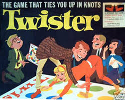
The final moments of the party game ‘Twister’ offer a helpful metaphor for those last moments. After a slow build-up of different positions with an increasing level of entanglement, “Left Foot on Red”, is declared after the arrow stops spinning. Everyone on the dotted mat, and everyone observing, knows that this move is simply impossible.Figure 23, https://boardgamegeek.com/image/196428/twister
As the hapless leg extends towards the red dot, the ball of human spaghetti enters its final moments of strain… then it transforms into something more like Lasagna.
Relationships can so easily get knotted and stretched. In the end, the only possible release is a collapse. “I was only five minutes late!” she protested. “I just forgot to lock the door”, he yelled. Simple mistakes, forgivable mistakes, but not if they push things over a stable threshold. Tipping points are a typical feature of any complex system. Relationships certainly are complex – but perhaps surprisingly, we can find tipping points occurring in the minds and commitments of a community of people who are well known for their reasonableness, their sensible and methodical approach to things: Scientists.
Scientific Revolutions
Science fully deserves its reputation for reliable knowledge. It has robust methods and exacting standards that test any truth claim made under its name. It is built on a firm foundation of evidence and reasoning. No time need be spent in categorical defence of their methods and results.
Yet, an attentive look at how the history of science has moved forward reveals a messier story. The rather bumpy road of scientific history, mirrors many of the dynamics of human and social relationships that have just been identified. It has disagreements, knotted problems, and tipping points where the consensus of belief suddenly shifts.
This unpredictable story does not invalidate the conclusions that scientists have arrived at, but that non-linear history has some valuable lessons for anyone who invests a little time to look at it more closely.
Our expert guide in this area will be the American Philosopher of Science, Thomas Kuhn.
The publication of Kuhn’s work, “The Structure of Scientific Revolutions” (1962), caused a radical rethink in how we understand the development of science. His groundbreaking work challenged our common sense understanding of things – namely, that the story of our scientific past is one of a smooth, linear progression. Kuhn exposed how erratic, and sometimes irrational, the development of scientific awareness is.
Figure 24, Thomas Kuhn
He describes the history of science characterised by two different types of activity, periods of “Normal Science” and periods of “Revolutionary Science”. He noted how science has long periods of settled research that are punctuated by sudden spasms and convulsions in which fundamental assumptions are overturned.
These spasmodic moments of crisis, of short bursts of “Revolutionary Science”, can happen because the pressure of evidence or the number of glitches with the old system just becomes too great. An old paradigm of understanding can dramatically buckle under the weight of results and anomalies that just cannot be reconciled to fit the background assumptions253.
The Copernican Revolution is an informative example of Kuhn’s main conclusions.
The sudden flip to Copernicus’ model of a Solar System happened long after the publication of his work “On the Revolutions of the Heavenly Spheres” in 1543. His model was mathematically compelling; so many of the numbers added up, and it made so much sense of the night sky. Unfortunately, however, the old way of seeing the universe (with the Earth in the middle) was too deeply entrenched for his model to be taken seriously.
Indeed, by contrast, the old model was taken so seriously that in 1600 Giordano Bruno was hung naked upside down at Campo di Fiori in central Rome, because amongst his heretical views was an endorsement of the radical Copernican view of the cosmos254. Hanging him upside down was just his warm up act - to being burnt alive at the stake.
Astronomers of that time had inherited a model of the universe from Aristotle and Ptolemy that had the Earth at the centre of everything. This model made a huge amount of intuitive sense. You are probably seated perfectly still right now reading these words. The trees outside are not bending backwards under the stress of monstrously powerful winds, and it is not that difficult to walk in a straight line. Wherever you are holding these pages, things probably seem quite settled and stable.
Figure 25, A digital reproduction of Peter Apian's diagram of the celestial orbs from his 1539 work "Cosmographia". Wikicommons
Yet, if Copernicus’ new model was correct, and if Galileo’s observations were to be taken seriously, you must agree to the rather implausible idea that the Earth is hurtling at 100,000kmh through space, and spinning on its axis at over 1000kmh. 255 It goes without saying that we are still travelling on that crazy ride, every year, every day. A moment of reflection reveals this fact to be almost impossible to reconcile with any common sense.
Or as the Great Inquisition put it to Galileo, “Why is every day not a bad hair day?”.
Back in the 17th century, there were many social, political and psychological reasons to keep hold of the old belief system, but the singular most important reason for the inertia for change was arguably the overwhelming weight of common sense in favour of the old Aristotelean model.
But “the truth will out”, as Shakespeare would soon pen.256 The main problem with the Aristotelean model is that it was wrong. It just didn’t make that much sense of the movement of the celestial bodies. By the time Galileo got his telescope out in 1609 to observe the night sky, the whole system was under serious stress. To keep the Earth in the middle, scientists had got themselves into the most amazingly contorted positions with the data. They had continuously added “epicycles” (extra loops and gears) to the traditional orbital model.
It was a situation not unlike a juggler struggling to keep his act going, as numerous random objects are thrown in his direction, with the expectation that he incorporates them into his flow.
Galileo’s observations were the final straw that caused the old model to buckle. Despite the seemingly absurd implications of the heliocentric model proposed by Copernicus, and despite the initial resistance, the scientific consensus towards that new model became unstoppable.
A new, previously unimaginable reality, abruptly, suddenly became true.
Paradigm Shift
The diagram opposite is a simple sketch of what Kuhn understood as a paradigm.
As noted earlier, the history of science is full of dramatic lurches, from one paradigm to another. These short revolutionary episodes of science are marked by intensely creative shifts in understanding. In these shocks of turbulence, fundamental assumptions about reality are thrown into doubt (shown in the diagram in red).
Once these shocks of turbulence are over, and a new set of assumptions are established, Kuhn describes how science then settles down into “Normal Science”. In these long periods, researchers test out the new rules of engagement, tidy up the mess and explore new possibilities.
In the diagram, this calmer, methodical mapping of the new world is represented by the blue area. It is a field that is defined by the key assumptions of the paradigm. In a period of “Normal Science” the assumptions are not up for grab; they are not negotiable at all. The foundational assumptions of a paradigm frame the basic operating space; they dictate what is a relevant question to ask, and forbid certain results. (For example, modern Physics forbids anything to go faster than the speed of light257.) The base assumptions also determine funding decisions and orientate the curiosity and imagination of the scientists into further areas of research.
It is crucial to understand that a paradigm shift is not just a simple editing of content. For example, in the case of the Galileo controversy, the change in paradigm was not just about where to put the Earth in a diagram. The confirmation of the new model had monumental implications throughout both science and society at a deeply structural and symbolic level. The Copernican Revolution was so deep, it overturned many fundamental assumptions.
There were many big headlines about the carnage caused by the new paradigm. To mention a few:
it demoted the Earth from the centre of meaning, to just some random rock in space.
it put a wrecking ball through the authority of the church to pronounce on scientific conclusions.
it was perceived to undermine scripture.
it shook up the old Aristotelean view that the material world was heading towards some kind of purpose (τέλος, telos).258
These were all seismic movements in our cultural history.
Interestingly, a reader will not find these headlines to be very dramatic at all. We might have to Google the word “Telos”. We might get a thrill from looking out at the stars at night in recognition of the seemingly infinite expanse of space. Maybe there is dark thrill in recognising our unanchored position in it all. The Bible may have only the faintest cultural relevance to you.
But this gap underlines the crucial point: we live in an entirely new paradigm, a few revolutions further on from this Galilean controversy. It requires a lot of reading and imagination to put ourselves back into the social, political, scientific context of that time. It is like another world.
It is like trying to understand a foreign language – it is not just the words that matter, there is a whole game involved. Every word performs in a cultural context that is alien to us. Anybody who has tried to do translation work understands how difficult it is to move authentically between languages. Anybody who is bilingual will be aware that certain experiences and feelings from one of their native cultures simply cannot be captured in their other native language.
Kuhn has a word for this lack of translatability in science. It is not a word that would make it into many pop songs. It is the clunky word, “Incommensurability”. Or if we break the word into pieces, “a lack of a common measure”. Kuhn understands that if you were to line up the different paradigms that have occurred in the history of Physics, they simply would not be able to talk to each other. This lack of communication would not be a problem of accents. It would be a problem due to entirely different systems of thought. A paradigm shift is not like tinkering with some vocabulary of a language, it necessarily involves an overhaul of the entire grammar.
Einstein’s Physics broke some fundamental principles of Newtonian Physics, which in turn were violated by Quantum Physics. These differences could never be reconciled, each paradigm of Physics is simply incomprehensible to the other. It is not that one paradigm is better than another, just as Japanese is not better or worse than Italian or Finnish. Each scientific paradigm provides us with access to a different layer of reality, just as each language of the world opens up a fresh world of symbols and angles on experience for us to live with.
Indeed, the word “paradigm”, after the pioneering work of Kuhn, has been used and developed in fields much wider than scientific knowledge. Most notably, the fruity philosophy of Foucault was committed to exposing how what seems “normal” to a society is in fact the product of different power interests. His work will be mobilised in Chapter 11. It is just interesting to note here that Foucault’s use of “paradigms”, like Kuhn, undertakes a historical survey of the past to better illuminate the present. His analysis of our current value systems, and the limits of what we can imagine, and dream is both audacious and powerful.
And now we swing around to look at the climate crisis.
Why all this attention to abstract frames and ideas? What value do these concepts and words have with the immediate, material problem of the climate?
It is undeniably true that, in one sense, these truths are very remote. It is hard to imagine what relevance a dead American Philosopher called Kuhn has got for your life. It is a bit of a stretch to see why Galileo, from the far distant past, has got anything compelling to tell us about the present. Yet, by considering paradigms, it brings to the surface of our minds something powerful. The odd thing is that we live most intimately with the reality of our paradigms. Arguably, they are the most real thing we live with.
A paradigm is the like the DNA of our thinking, it is the invisible stitching that pulls together all the different experiences that we have. We own it in such a deep way, it is difficult to see it. A paradigm shapes our dreams and ambitions, it sets up our expectations. Our paradigms fix what we feel as naturally good, they form our spontaneous reactions to experiences. We carry around these constellations of beliefs in our hearts and minds, and just like astrological charts are understood by some to fix the course of lives behind the scenes, these paradigms are invisible to our daytime thinking, but they determine our reactions and decision making.
No-one is exempt from them. We don’t just “have experiences”, as unattached, singular, blobs of data. We are not just blinking goldfish.259
We will not wake up thinking about the publication date of Kuhn’s book. Nor will we become preoccupied by the stress endured by Galileo during his Inquisition. But these people and their work can point to the frameworks that exist inside our own heads. And by learning to see those frameworks, we can understand the contents of our hearts and minds so much better.
A perceptive and skilful psychologist can help us see patterns in our behaviour and thinking that would otherwise be hidden. A language teacher brings to the surface the rules of grammar that we have used since our earliest years but had no clue nor care about.
Indeed, we are all born into a set of values and expectations, like we are all born into a language. We learn to talk and play in that language well before we ever understand the invisible governing principles of how it all works. An understanding of that grammar provides us with the capacity to learn and then function in another system of language – with all the extra agility and depth that this provides.
Just having the word, “paradigm” in our vocabulary helps us reflect on ourselves and our world with more probity. Thinking about paradigms enables us to see things that are, paradoxically, too close to see.
The Matrix (1999)
Morpheus : Let me tell you why you're here. You're here because you know something. What you know you can't explain, but you feel it. You've felt it your entire life, that there's something wrong with the world. You don't know what it is, but it's there, like a splinter in your mind, driving you mad. It is this feeling that has brought you to me. Do you know what I'm talking about?
Neo : The Matrix.
Morpheus : Do you want to know what it is?
Neo : Yes.
Morpheus : The Matrix is everywhere. It is all around us. Even now, in this very room. You can see it when you look out your window or when you turn on your television. You can feel it when you go to work... when you go to church... when you pay your taxes. It is the world that has been pulled over your eyes to blind you from the truth.
Morpheus : That you are a slave, Neo. Like everyone else you were born into bondage. Into a prison that you cannot taste or see or touch. A prison for your mind.
The Flickering
It is lonely, being fully engaged in climate activism.
You live like an alien in a paradigm of values and ambitions which make little sense to you. Your attempts to articulate both your aspirations and anxieties often seem doomed to fail. When you speak about the dangers of systemic collapse, somehow people do not have the imagination to understand what you are saying. When you speak about the riches of an economy for the common good it often leads to blank looks. Your vision of the future is dismissed as unrealistic, when at the same time those who are satisfied with a tinkering of the status quo don’t realise how profoundly unrealistic the current reality is.
There are so many people around you who “Don’t Look Up”. You live in the same world as everyone else, yet the whole thing is somehow, oddly, skewed. It is incomprehensible why decisive action is not taken to protect us from an existential threat. There is something Kafkaesque about the lethargy and zombie like reactions of public figures, media coverage and, worst of all, sometimes those who are close to you.
The good news is that a time of radical change is ahead. The good news is that you are not alone.
This textbook is not going to naïvely and bluntly assert that a miracle is around the corner, but there is a flickering that is happening with increasing intensity. Both a flickering output of the old paradigm and a flickering light that provides glimpses of what the new paradigm will look like.
The dark truth is that natural tipping points might push us into a new paradigm chaotically. The laws of thermodynamics written into the fabric of the universe might take us over the threshold of unstoppable transformation first. However, the bright truth is that there are also tipping points in social systems too. We build up to them slowly, but once they lock into a shift towards a new paradigm, the energy and momentum are unstoppable. And to return one last time to the Copernican Revolution, it might seem a bit unnecessary to say it, but the reason why the Physics of Copernicus and Galileo became standard was because it was the truth. It was as simple as that.
What could be simpler today than recognising the physical limits of our Earth? It should be blindingly obvious from any photograph taken of the planet from outer space. It has a circumference. What could be plainer than the truth that the Earth’s biosphere cannot tolerate a ‘hyperpyrexia’ of 4°C heating? Anyone with the memory of a fever should have no problem imagining the suffering and failures such a knackered state would cause.
Those who understand the sort of paradigm shift that must happen, those who “get it”, can afford to be confident and courageous - because the recklessness of the status quo and the advantages to be gained by a transformation to a sustainable society are so obvious. Once the truth about the crisis has been seen in its systemic fullness, it cannot be unseen. Future generations will look with incredulity at the stalling ignorance that held us back from the systemic changes required.
More. The transformation of societies into ones that are compatible with the laws of physics and chemistry will have to be far more beautiful, healthier, collaborative, and just.
What is not to like?
For the moment, these realities seem part of a distant world. Yet because they are rooted in our truest selves, once there is a movement towards such rewarding advantages, it is hard to imagine that that momentum could possibly be reversed.
The transition to such a world could already be underway; the flickering signals are becoming more pronounced – from the impulses of the FFF movement to the stronger policy signals and asset flows towards greener energy.
The paradigm has not yet flipped, and so the most prominent people in the climate movement still appear out of key - like time- travellers or futuristic entrepreneurs, like prophets, or like philosophers. But every paradigm move has always started like this – it is how things work.
Spasms, then surge. Convulsions, then calm consensus.
The flickering, then the flame.
As Schopenhauer is often quoted as saying, “All truth passes through three phases. First it is ridiculed, then it is violently opposed, and finally it is accepted as common sense”.
Questions
Have there been moments in your life when you have failed to see something because of an entrenched view? How long did it take for you to realise? What changed things in the end? What were the background ideas or experiences that blocked you from seeing the truth?
The chapter focuses on the Copernican revolution as a scientific paradigm shift. Which other major scientific paradigm shifts do you know about?
Do you agree with Schopenhauer that truth seems to pass through 3 phases? Do you agree with the optimism of the chapter, that a sudden jump forward in climate thinking and action could happen?
Chapter Ten
Chapter SummaryThe conclusion highlights the urgency of the climate crisis, emphasizing the disconnect between scientific reality and societal response. Despite growing awareness, systemic transformation has yet to occur. A shock—whether from natural disasters or policy shifts—is needed to catalyse action. Two key triggers for change are proposed: education and law. A systemic climate education could empower future generations, while legal frameworks could enforce necessary economic and environmental boundaries. Drawing parallels with the Civil Rights Movement, the text underscores the power of focused activism and legislative change. Figures like Martin Luther King Jr. and Medgar Evers exemplify the impact of legal battles in driving societal transformation. Social tipping points, once triggered, can create rapid shifts, as history has shown. Given the limited time left to address climate change, bold, systemic action is essential to achieving meaningful progress. |
|---|
Look at this image of a New York Street, taken in 1900.
, Easter parade in 5th Avenue, New York, in 1900
https://www.archives.gov/research/american-cities/
There is a car in there. But it is very difficult to spot.
The same street. However, this picture was taken in 1913.
, Easter parade, 5th Avenue, New York City, 1913. Wikicommons, Scan from Congress Library.
There is a horse in there, but it is very difficult to spot.
No one walking down that street in 1900 could have possibly imagined that such a radical transformation of New York’s transportation system would happen in just 13 years. But it happened.260
Now imagine a different street. It is 1st December, 1955.
The city is Montgomery, Alabama.
This time our attention is focused on the National City Lines bus, N° 2857. It is being driven by a man named James F Blake. On board, there is a woman named Rosa Louise McCaulay Parks. She is sitting in a seat that she will be asked to give up, once the bus has no more seats available for white people.
This is the Deep South.
This is the time of Jim Crow laws - the latest tragic episode in the suffering of black people in the USA. Although at the end of the Civil War in 1865, slavery was abolished by the 13th Amendment, laws to keep black people in their place proliferated in the South. Racial segregation was enforced on buses and trains, in schools and shops, in restaurants and restrooms, in waiting rooms and at water fountains.
And in this deep South sits Rosa Parks. On a bus, four rows back. Heading home.
Figure 28, “Rosa Parks Bus”.
https://www.thehenryford.org/explore/stories-of-innovation/what-if/rosa-parks/ Creative Commons Attribution-Share Alike 2.0 Generic
The bus comes to a stop in front of the Empire Theatre. The driver James F Blake gets out from behind the wheel, “Y’all better make it light on yourselves and let me have those seats”. 261
She refuses. She is arrested.
Rosa Parks does not know it – but a social tipping point is underway.
The significance of the event will only be clear later. She will be put on trial in four days’ time and fined $10. On the day of the trial 35,000 leaflets will be distributed calling on black people to boycott the buses in Montgomery. A man named Martin Luther King will become the leader of a protest movement that will develop unstoppable momentum.
Between the seemingly insignificant defiance of Rosa Parks on a bus seat on 1st December, 1955, and the signing of the Civil Rights Act by President Johnson in a Presidential seat, there was a gap of just nine years.
Who could have imagined such a thing in 1955? There was no reason at all to think that something dramatic was about to shift. It was not the first time Rosa Parks had been mistreated on a bus. She was not the first black person who refused to move.262 Indeed, any view on Montgomery, any examination of Alabama and the Deep South, and any wide zoom on the whole of the USA in 1955 only show centuries of deeply entrenched racism. There had been countless acts of violence and defiance, countless moments of ignorance and resistance, and so much hatred matched by resolute stands of solidarity. When Rosa Parks stayed put, it was just another dot in the sprawling scatter graph of black oppression.
Human systems, be they transport systems or social systems are dynamic. As underlined in the previous chapter, they can move beyond critical thresholds and trigger irreversible tipping points. From within, before these points, the concrete realities of the present can look intransigent and impossibly heavy. Who could imagine from here, that humanity will exit the climate crisis with a warming under 2°C? From most angles, political, social, and economic, the transformative change needed looks remote. As Chapter 7 underlined, we only have six years left before the gigaclock counts down to zero for a 1.5°C heating rise, and one * year before we lock-in a 2°C rise.
We have political commitments happy to tinker with small incremental policy changes, and a media that seems happy enough to go along with that. Yes, there are flickering signals of change in the climate crisis, but there is a serious amount of unenlightened darkness out there.
The story of the Civil Rights Movement is well known. The marches and the speeches of Martin Luther King are etched clearly into history. The pivotal role of Rosa Parks, the “First Lady of the Civil Rights Movement”, is also well documented.
However, with climate change in mind, if we are concerned to find the most informative character in the dramatic social transformation of American society in this period, then there is another woman who demands our attention: Mamie Elizabeth Till-Mobley. The sudden vault of American society towards greater justice was triggered by her bold decision to have her son’s coffin left open at his funeral. She “wanted the world to see what they did to my little boy”.263 Her story illuminates the utterly improbable nature of the social change that happened from 1955 with much greater force.
These are the details.
Lynching
For reasons that are absurdly skin deep, violence and hatred had become so normalised that it had become shockingly common for black people to be lynched. These convulsions of repellent mob violence started with arbitrary judgements against a black victim, usually accusing them of a sexual crime. After rumours were spread, the person was seized, and a public torture used to take place that would usually finish with a burnt corpse hanging idle from a tree, “swingin’ in the Southern breeze”. For example, in 1931 Maryville (Missouri) Raymond Gill was set alight in front of an audience of 2000-4000 people. This act was made possible by the slack responses of the local Sherriff.264
The systemic, background abuse against black people had been punctuated 3,446 times by such grotesque lynchings265. They functioned like symbolic rites, where all the mad disgust and grievances of a community were unleashed. A 1930s editorial in the Raleigh News and Observer noted, “Whole families came together, mothers and fathers, bringing even their youngest children. It was the show of the countryside – a very popular show. Men joked loudly at the sight of the bleeding body … girls giggled as the flies fed on the blood that dripped from the Negro’s nose.”
Figure 28, Lynchings by states and counties in the United States, 1900-1931 : (data from Research Department, Tuskegee Institute)
American Map Company (New York, N.Y.)
After celebratory picnics at the scene, charred body parts would often be taken home as trophies, souvenirs, or relics, depending on the macabre psychology of the attendees. The arresting song, “Strange Fruit”, sung with formidable power by Billy Holiday and Nina Simone, is a song that captures the savage ugliness of these lynchings with a haunting directness and strength.
The depth of the peaceful transformation achieved by the Civil Rights Movement, can only be properly appreciated when these marks of trauma have been noted on the social body of America. Rosa Parks sat on the bus in a society that was institutionally, viscerally, formidably racist. It is easy to forget how improbable systemic change must have seemed in 1950s USA.
“Strange Fruit”
“Southern trees bear a strange fruit
Blood on the leaves and blood at the root
Black bodies swingin' in the Southern breeze
Strange fruit hangin' from the poplar trees
Pastoral scene of the gallant South
The bulgin' eyes and the twisted mouth
Scent of magnolias sweet and fresh
Then the sudden smell of burnin' flesh
Here is a fruit for the crows to pluck
For the rain to gather
For the wind to suck
For the sun to rot
For the tree to drop
Here is a strange and bitter crop
Indeed, the whiff of this “Strange Fruit” was particularly pungent in 1955.
In a town called Money (Mississippi) a young boy, of only 14 years old, had been lynched. His name was Emmett Till. What was Rosa Parks thinking of when she refused to move from her seat on that bus?
The answer is, Emmett Till. “I thought of Emmett Till, and when the bus driver ordered me to move to the back, I just couldn’t move”.
A brief sketch of his case will demonstrate why.
Emmett was an effervescent 14-year-old black boy. He had left his mother in Chicago to go on his cotton-picking summer visit of 1955 to the Deep South. The town where his cousins lived was called Money (near Mississippi). It was outside their local store where Emmett, a naïve city boy from the North, allegedly wolf-whistled at a white woman, Carolyn Bryant.
The details are obscure, but the ending is not.
Figure 29, Emmett Till, 13-years-old, on Christmas Day, 1954. Photograph taken by Mamie Till Bradley.
A few days later, on 28th August, Emmett was kidnapped in the middle of the night, taken away in the back of a green pick-up truck, brutally beaten and shot. His skull was in bits. A bullet had delivered its explosive violent load with shattering force. One of his eyes was out its socket; and his naked body was bloated because he had been dumped into the Tallahatchie River - with a 35kg metal fan blade fastened around his neck with barbed wire.
Upon receiving his body back in Chicago, his mother, Mamie Till, took the courageous decision to leave Emmett’s brutalised corpse in full view at his funeral. Those who saw the photo in Jet Magazine, or The Chicago Defender on 15th September never forgot it.
On 23rd September , an all-white jury acquitted the two men who murdered him - after just 67 minutes of deliberation. A juror commented, "If we hadn't stopped to drink pop, it wouldn't have taken that long." The sticky summer heat of the courtroom was noted by many reporters at the time, but it was nothing compared to the stifling oppression of the status quo.
Yet.
That beautiful, but mutilated body in a suit. It was transformative. “Emmett Till’s body proved iconic because it could simultaneously express the brutalisation and the dignity of black life. It told them simultaneously what they were fighting against, and what they were fighting for”.266
Education has been far too tentative in its acknowledgement of the climate crisis. It is unquestionably a difficult topic to handle. But we do not offer our students a ‘diet’ version of American History because the truth is too hard, we do not manicure aspects of the Third Reich because it could be upsetting.
We should not flinch then with the Climate Crisis.
Mamie Till did not whitewash her son’s murder, and we should not greenwash sustainable education either.
Figure , Mamie Till looks over the body of her son Emmett Till at the morgue before his funeral. With her is her fiancé, Gene Mobley. This photograph was named by Time magazine in 2016 as one of the 100 most influential photos of all time. First published in Jet magazine, September 15, 1955
“A Change is gonna come”
https://www.bbc.co.uk/programmes/b07x2zd2
“Strange Fruit”
https://www.bbc.co.uk/programmes/b03jb1w1
Let’s be brutally honest, climate education is far too saccharin. It is artificially sweet and has no real nutritional or energy value. Indeed, actual Saccharin (C7H5NO3S) does not react chemically with other food ingredients around it, and after the fake high that it provides, there is a bitter aftertaste. For those who have a clear view of the proportions of the crisis, it is truly eye-watering to observe how so few educational initiatives in school get beyond the usual climate change clichés.
Climate Change Bingo!
Queue Kitsch music.
“Who says that the Climate Academy does not put the fun into the fundamentals?”, asks the glittering gameshow host.
“It is time for Climate Change Bingo”, he announces, to the thrill of the studio audience.
This game is open to anyone aged 13 or over. Before that age, it is wonderfully legitimate to increase awareness about the environmental crisis, through every tactile and resonant issue. Unfortunately, the deeper truths about what lies ahead could cause damage to your head and heart. So, enjoy your innocence and freedom, it is profoundly beautiful, like the natural world.
From 13 years old, because your future is threatened by massive systemic failure, you have the right to know what is going on. You should be equipped with the key competences that enable you to play your role effectively in the positive changes ahead.
Health Warning – this game might cause some people to choke.
The reality of Climate Change is an offence to common sense.
Equipment
Any of the following:
a secondary school website that speaks about its commitment to the environment
a speech by a school leader, or teacher that addresses climate change
a letter from the school to the parents about their commitment to a greener future
A pen
2 Climate Change Bingo Cards:
A tough skin – to raise questions about the status quo
A brave heart – to challenge the school to explore much further
How to Play
Take the document, take your pen, and you are now ready for Climate Change Bingo!
The game is simple. Every time you see or hear a word you may colour in the box – either on the “Greenwash” card or the “Deep Green” card.
On the Greenwash card, you win a bio-apple for being the first to colour in the corners. You win an energy efficient light bulb for the first completed line. Fill in the whole grid, and you can put an Eco Friendly School certificate in the front window of your school and on your website.
You probably won’t need the “Deep Green” card.
| Greenwash School | ||||
|---|---|---|---|---|
| Recycling | Waste | Litter | Turn off the lights | Plant trees |
| Bio Fruit | School allotment | Sustainability | Green | Reduce Plastic |
| Light bulbs | Vegetarian Option | No Car | Litter | Energy saving |
| Woolly Jumper Day | Save water | Net Zero | Polar Bear | Solar Panels |
| Real Climate Change Education | ||||
|---|---|---|---|---|
| Tipping Points | System change | The Anthropocene | Catastrophe | Carbon Budget |
| Critical thinking | Civic Service | Social Entrepreneurship | Exponential | The Great Acceleration |
| Ecocide | Mass Extinction Events | Climate Justice | Exploratory Thinking | Systems thinking |
| Consumption | Capitalism | Democracy | Legal limits | Feedback Loops |
| Planetary Boundaries | Resource Extractions | System collapse | Gigatonnes | Population |
| Infrastructure | Per capita | Negative Emissions | Overshoot | Human Development |
The irony of this little thought experiment is to be taken lightly – but the message a deadly serious one. Of course, every green impulse, every green engagement and plan has a value. It is normal that a school will start with a background ‘greenwash’ to establish a space for the next level of work. However, to simply stop at this most rudimentary background phrase is not OK. We must be brave enough to call it for what it is: utterly inadequate, without the fuller picture in place too.
The great Elizabethan songwriter John Dowland wrote lamentingly, “Must I praise the leaves, when no fruit I find?”.267 His experience of love would have been a good preparation for reading most school policies and programmes on sustainability.
It is a truly daunting and difficult task for any student to invite their school to move into the critical higher gears of climate change education. How do you offer a critique of people’s earnest efforts with the heavy truth that it does not touch upon the main problems? How does a young person speak with authority about such things to people who are far older and who should be much wiser? Schools, like so many other sectors of society, are engaged in so many diverse green initiatives that are worthy of endorsement, but it nearly always pushes away any space to actually get some traction with the core issues.
Any voice that questions a status quo that appears to be working will seem painfully shrill268.
The same tricky social dynamics are most evidently in play at the annual COP meetings which were started by the UNFCCC in 1995 with one singular goal in mind, “to stabilize the concentration of greenhouse gases to prevent dangerous anthropogenic interference with the atmosphere” (Article 2). Since then, the UNFCCC has promoted myriad promises and a kaleidoscopic range of initiatives – yet they have never eyeballed the central problem, the accelerating emissions.
If these meetings have never clearly addressed the fundamental, systemic drivers of the problem, what do we say in response? Do we clap? Do we praise the little, knowing it is not a lot? Chapter 5 has all the details.
In both a secondary school and at COP, and indeed in any situation, the proximity of the tipping points that we face necessitates boldness and clarity in our assessment of what we are actually doing.
Is there a national government anywhere in the world that has an official programme of education that provides a clear view of the depth and dimensions of the problem? It is simply extraordinary that in the face of an existential crisis the scale of which has never been seen before, we have been content to shuffle around various clichés and superficial responses without ever facing up properly to the conclusions of mainstream science.
Figure 31, Cartoon by Carl Jonsson, Climate Academy graduate 2016.
We have left our young people on the brink of an ecological catastrophe by patronising them with mild, fragmented, and incoherent coverage of the situation. And the fact that this paragraph might feel a bit tense or even alarmist to some readers reflects the wider truth that our media and our public leaders have failed to square up to the truth too.
The mother of Emmett Till could have turned inward in her grief. She could have shrunk away from the world. She did not need to invite the photographers in to capture the raw pain and trauma experienced by the community connected to her son’s murder.
Yet, she was open, courageous, and unflinching in her response.
And what did she do after all the media had moved on?
The answer is that she committed herself to education about the civil rights movement. She boldly carried her experience on the long walk.
The Media
The indowindow
The dangerously cropped view of climate change that is offered in schools is mirrored by the continued poverty of the media coverage of the crisis. The long failure of education to present the full truth of our situation leads inevitably to a limited and pithy view of what is going on above our heads. It is not surprising to find that the general public seems to have little sense of the proportions and the depth of the situation we are in. In the absence of an informed and engaging educational input into the public space, the status quo will surely remain entrenched on its fast track to collapse.
The paucity of the general framework of understanding held by many people and mirrored by the media coverage was illuminated by one comment made in the build-up to COP26 in Glasgow. This (delayed) meeting was proudly hosted by the UK who claimed at various points before and after that they were a world leading nation in the fight against climate change.269 On 27th July , four months before the conference, the UK government’s climate change spokesperson Allegra Stratton took to Twitter: “Could not rinsing the dishes b4 the dishwasher be your #onestepgreener ahead of COP26?”. Adding, “And if that is too hard a habit to kick. Pick something else”.
It is difficult to know what to do with this statement. It strikes right to the heart of the problem that has beset our response to the climate crisis for decades. Individual. Superficial. Pitiful. Is it even possible to think of a more insignificant action? And then, to have the audacity to offer an alternative if such a level of commitment might prove too much.
This statement triggered a nauseous sense of vertigo. It either signalled a breathtaking breathtaking level of ignorance by a high-ranking government official from a G7 nation, or it was a breathtaking example of corruption - where fossil fuel interests use their direct or indirect power to distract the public from systemic reform structural questions, and guide the governments’ narrative line. Who knows?
Either way, there is no good way to look at it. Tellingly, Allegra Stratton was a former political editor for “Newsnight”, the BBC’s flagship news programme. Indeed, the BBC is a broadcaster with a global reputation for reliability and depth that counts many graduates from Oxford and Cambridge amongst their staff. Indeed, Stratton is an alma mater of Emmanuel College, Cambridge. It is absurd that advanced economies have such a reckless level of ecological illiteracy at the highest places in their society.
To help get a mental map of the current gap between culture and reality, it is informative to look at the image below. This chart provides an approximate sketch of the situation that exists when the scientific knowledge and the media coverage are superimposed onto each other.
The lines and curves that are drawn in this image270 are not based on a statistical study, but people familiar with climate change at a decent level will recognise its basic accuracy. In the chart, the “Most informed opinion” represents the science stated in the earlier chapters of this book. The reason for the spread of the informed opinion is that the climate system is so complex, and it is therefore very demanding to work out how quickly all the different mechanisms will interact, and on what timescale. Just to be clear, the word “catastrophe” refers to the collapse of ecological systems that human life depends on, and the “slight costs” would be the various natural disasters that have already killed millions of people and caused trillions of dollars of economic damage.
Of course, the advantage of such a broad zoom here makes it implausible to connect the lines to a set of data or results. Yet despite all the numerous variables that lie behind this sketch of the predicted impacts, the overall image remains informative.
A disjunction
The ‘box’ that depicts the range of “debate in the popular press” has a technical name, it is known as “The Overton Window”. The media might touch upon some of the substantial impacts of climate change, but most commonly they are individual weather events that are tagged as “possibly” related to climate change by “some” scientists.
For example, the BBC 6pm “News Tonight” programme (17th January 2022) ran a short feature271 to explain what an average temperature rise of 4°C would look like for the United Kingdom: “Infrastructure: roads, sewage systems, power stations will struggle as storms, draughts, floods and heatwaves become more frequent and intense. How health and productivity will suffer, farms will struggle to produce as much food, and the supply of food from abroad is likely to be disrupted. … But the good news is that today’s report finds that investing and protecting the country from climate change is good value, with every pound invested delivering up to 10 times that in economic benefits. But we all need to begin to make these investments now to be ready for the coming storms. Justin Rowlett, BBC News”.
Compared to the mainstream scientific consensus, this ‘Overton Window’ is pushed far away to the side, towards the idea that the impacts of climate change are neutral. Sometimes this box is called the ‘Discourse Window’, because it describes the width of a debate that is permitted for any political issue.
A more detailed view of this window looks like this:
Thinking more widely than the climate crisis for a moment, in the 18th century, a vote for all women would have been an unthinkable policy. Likewise, the abolition of slavery would have been unthinkable for some and radical for most. Now they are both considered as commonsense policies.
Moves like this along the Overton window can take centuries, but sometimes the cultural shift is very sudden. For example, who would have thought that LGBTQ+ rights272 would have shifted so dramatically in the last few years? The intransigence over LGBTQ+ seemed so webbed into some general cultural assumptions about what was ‘natural’ or not. The taboos were so imposing, and there were so few signals that major change could occur for so long. Yet, in the end, the media shift in attitude happened, and the new framing of the issue swiftly cascaded into most levels of society.
Even more rapidly, after the Fukushima disaster in 2011, there was a dramatic swing in public perception against the merits of nuclear power. This did not only occur in Japan. Germany suddenly decommissioned its nuclear power stations (and much of the energy gap was regrettably taken up by coal).273
In the chart there is a small bump entitled, “Right-wing think tanks”. Even though it has nothing at all to do with science, it has been very influential in pulling public discourse away from reality. These think tanks have flooded the media with content and messages that just function as a fake news distraction. The most notable example of this has been the influence of the ‘Kochtypus’Kochtopus’, a massive sprawling network of manipulative power headed by the billionaire brothers Koch. The tentacles of their investments extend into so many areas of the United States’ cultural and political life. Their shared wealth274, totalling well over $100bn, primarily came from investments in the coal industry. Their shared determination to protect that wealth has been formidably successful.
, "The Kochtopus". From www.KochCash.org
For decades, ‘doubt’ or just simple lies stalled governmental policy changes. It is worth looking at all the subtle and not so subtle ways in which the Kochtypus has operated. Its behemoth project illustrates the systemic problems that confront those who want to push the Overton Window towards the truth.
A new Overton Window
Yet.
Is it that difficult to image a world in which the framing of the media coverage of climate change flips to acknowledge the problem squarely?
There is a massive latent energy and capacity stored up in people’s concern for their world. The problem has been that this anxiety and interest Have simply not been given many appropriate channels of expression, because the media has kept climate change inside such a constrained window of thinking and action. Billions of people make very committed efforts for the sake of the climate with a genuine motivation to make a difference. Billions of people have a strong emotional investment in the preservation of the natural world and have a profound concern for their children’s future and the future of their communities.
Indeed, it is even conceivable that the strongly conservative media could flip to move in line with the mainstream science. This is because, fundamentally, climate change poses a devastating affront to people’s rights to life, and a right-leaning audience has key concerns about property, shelter and security. Proper coverage of the crisis would also illuminate the huge risks to global markets and would highlight the costs of mass migration.
In fact, there is quite an ironic truth about the influence of neo-liberal thinking on climate reporting. This odd twist is due to the fact conservative think tanks and personalities are committed to the guiding hand of the free market and are against government subsidies. Yet, the figures for government spending to protect that fossil fuel industry are staggering – and far outstrip the spending on green investments in infrastructure. ‘Big Government’, often portrayed by those on the political right as an unwelcome intrusion, is doing a Big Job of propping up the old energy systems.
In 2021, IMF research estimated global fossil fuel subsidies at about $6 trillion, with about 70% from "under-charging" for the environmental costs associated with the fuels275. In 2015 the subsidy was worth $5.3 trillion, and in 2017 an estimated $5.2 trillion. Viewed from another angle, these figures mean that public money is being used to destabilise the future at a rate of over $10million every minute of every day. There is a graphic reminder of the cost to real GDP below – in 2021 it was over 7%.
The first time the IMF researched the true cost the subsidies in 2015 the lead author, David Coady commented, “When the [5.3tn] number came out at first, we thought we had better double check this!”. But he affirmed that the broad picture they established was “extremely robust. It is the true cost associated with fossil fuel subsidies”. Vitor Gaspar the head of the IMF’s fiscal affairs commented, “These estimates are shocking... Energy prices remain woefully below levels that reflect their true costs”. These thoughts are echoed by Sir Nicholas Ster:, “This very important analysis shatters the myth that fossil fuels are cheap by showing just how huge their real costs are.”276
A different kind of ice melt
, Icecubes, Freeuse, Pixabay.
There is a very fine line between the current perception of climate change and a situation where the penny drops. Anyone who “gets it” about climate change, can sense immediately in a conversation if the person they are talking to also “gets it”. There is a shared sense of incredulity at the limpness of our responses, and a restlessness about getting beyond the clichés that tangle so knottily around our feet. The odd, but uplifting truth is that there are millions of people who do “get it”. It is therefore more than plausible to suggest that the situation that we are faced with in climate change is not dissimilar to the major shifts in social perception in our past.
A tipping point could be close.
Consider the thresholds between different states of H2O. The freezing point of water at 0°C marks the line between two utterly distinct conditions. Underneath this level, the molecules are bound together in a compact state; above this level everything is loosened up. They are the same individual molecules, but the external temperature changes everything about the state that they are in. There is a critical melting point. And crucially, that threshold line is wafer thin.
Once the systemic threat to us becomes widely known and accepted, then every major weather event will drive home the point. Given how dumb it is to push the entire natural world into a hostile state, once the Overton Window moves into the right position it would surely be entrenched there for good.
“A Change is Gonna Come”,
Sam Cooke
Maybe one day soon, many people will “Look Up”. Or as the soul singer Sam Cooke sang so memorably before his murder in 1964, “A Change is Gonna Come”.
A shock to the system
A panoramic view of the climate crisis still reveals two things with clarity. Firstly, if we look up, the concentration of greenhouse gases in the atmosphere has now broken through the 420ppm barrier for the first time in millions of years277. The pace of the increase is not slowing down, and yet by contrast what is required is a sharp decrease. Secondly, if we look down, the social reality explains why this is the case. For all the good will, and all the heightened rhetoric about climate change, the structural overhaul of our economies and of our hearts and minds has just not happened.
We have not yet reached that point of genuine humility in which such regenerative changes are possible. We have not yet allowed the conclusions of science to interrogate the status quo with the depth required. Those who can see the current mismatch between the science and the social facts, struggle to keep both in view at the same time because the dissonance is just too jarring. The Overton Window is still firmly centred in the notion, “it’s the economy, stupid”,278 rather than “it’s the ppm, stupid”. Those claiming to be ‘realists’ still point at GDP rather than the GHG.
A jolt is needed to push a general concern into a sharp minded focus. This jolt could happen through an external shock. The radically increased level of thermal energy in the atmosphere has led to a sharp upswing in the number and intensity of the violent spasms in nature. Perhaps one of these events will be so destructive and formidable, it will shock our human systems into a new mode of operation. The scatter graph of climate change impacts dictates that these shocks will come. Who knows if one of them will produce the reality check strong enough to break us out of ‘The Rigidity Trap’? (See Chapter 12). What counts against any natural shock jump starting a proper level of response is the fact that these events tend to hit hardest in the nations that are responsible for the fewest emissions, not the most, and these nations have a correspondingly lighter influence on global politics, media and economics.279
Indeed, waiting for the hand of nature to shunt us in the right direction is an abject response; and is just as inadequate as the wait for the invisible hand of the market to do the same thing.
What is required is agency. We need a systems response to a systemic problem. There are more constructive and creative ways to bring about this kind of Emmet Till moment – where we are both brave enough to look at the truth, and brave enough to demand the whole operating system changes.
This chapter is going to finish by pointing at two triggers that could make this external jolt happen. The first prompts change from the bottom up, the second comes at the problem from the top down. The first revisits the importance of education. A major gear shift is needed in climate awareness, as outlined in these chapters, and schools across the globe need to treat the crisis as the emergency that it is. The second offers the chance to get a quick and secure grip on the key infrastructure decisions that must urgently be taken: through the law. The establishment of climate change laws based on the latest science of the carbon budget would signal that we are finally serious about the problem.
They are both just acts of common sense that have been absurdly noticeable by their absence for decades. Both, however, hold the potential for triggering the rapid transformative change we all need.
A proper systemic education.
How many students leave school with a grasp of the systemic understanding of the threat posed by climate change? How many young people have received an education about the crisis that takes them beyond a simple, fragmented impression of the problems? Why do we continue to bore and patronise the older students with the same old environmental clichés when there is such an intriguing and complex world out there to understand? How well are we preparing them for the world if we have not informed them about the true depth of the problem and if we have not given them the skills to respond? Why is education not asking itself the tough systemic questions?
Malcolm Gladwell’s influential work, “The Tipping Point” (2000) had an important subtitle: “How Little Things Can Make A Big Difference”. Let’s not be too modest about the power of education to transform a society, schools are full of “little things that can make a big difference”, so to speak. At first glance, this trigger to bring about a regenerative transformation of society might seem like a longshot because students do not occupy any official positions of power. However, this is to ignore the fact that over 600 million students attended high school in 2022.280 Imagine the superpower potential that could be energised and mobilised if they had access to a balanced and informed view of the situation.
Greta Thunberg put paid to the idea that one person can’t make a difference. Yes, she had a gift of clarity, resilience and understanding, but let’s not make an unhelpful idol out of her. There are surely millions of other students of a similar age who might offer transformative responses if they were given the chance.
Here is one simple example. Here is Jasper Van Zanten (16), a very modest, open young man who attends the ‘Willibrord Gymnasium’ in Deurne, The Netherlands. But between May 16-20 2022, he attended the first Climate Academy Summit in Brussels.
After an hour of learning about the science of the crisis on the Monday morning, and then a follow up session about the CUTx numbers on Tuesday, Jasper applied his skills and energy to designing an app. Within 10 days it was done.
Before Jasper the only way to get the vital statistics of the crisis was through an email with a rather heavy pdf. After Jasper, the numbers were easily accessible within seconds to anyone on the planet with a mobile phone. This mobilisation of talent, led to the rhizomatic mobilisation of the numbers, which will have further important effects in helping shift the Overton Window towards the truth.
The law
With all the diffuse interests and angles to the crisis – from deforestation to divestments, from no-fly to no-meat and with all the myriad scientific areas of research – it can be difficult to believe that there is any really decisive way to get a grip on everything. But there is one. We have the power to affect change at a systemic level, because behind every social and economic interaction there is an invisible but all-pervasive matrix: the law.
If local, national, and international legal frameworks could be put in place to clearly frame the boundaries of our economic plans, then all the details could be settled with the security of knowing that key thresholds in nature would not be crossed. In those nations where there is democratic rule, these details could be settled through all the different organs of the democratic state.
The details will be further explored in the final chapter. The power of the law, however, brings us back to where this whole chapter started: The Civil Rights Movement.
All the protest marches and speeches of the Civil Rights Movement were united in their grief, suffering and anger. However, they were also united in a common goal. And it was the combination of the two that made that movement so formidably powerful. The energy generated by the great leader of the movement, Martin Luther King, was not dissipated into different initiatives. It was not a diffuse wave of emotion that changed the racial landscape of America, it was something singular, and focused. The Civil Rights Movement had a singular objective – the structural change that could only be achieved through the law.
MLK unapologetically upheld the values and the vision that were needed to sustain an effective response to the systemic racism that black people had suffered for centuries. His striking skills of oratory managed to billow the sails of movement with strength and courage, but he never lost sight of the final destination for all of the protests and activism: civil rights had to be enshrined into law. “Keep your eyes on the prize” went the famous protest song. Any other gestures made by those in power were considered as a patronising distraction.
In 1963, in the middle of a speech at the Lincoln Memorial, Washington, Mahalia Jackson shouted out: “Tell us about the dream, Martin!” – and he set off on a rhetorical riff that gave the speech its name. These lines about his dream provided the headlines and fixed the key vocabulary of how that moment would be remembered by history. However, before the request by Mahalia Jackson, MLK had been delivering some major points too. It is helpful to read this lesser known section of his speech with the context of the climate emergency and the recent climate protests borne in mind:
“We have also come to this hallowed spot to remind America of the fierce urgency of now. This is no time to engage in the luxury of cooling off or to take the tranquilising drug of gradualism. Now is the time to make real the promises of democracy. Now is the time to rise from the dark and desolate valley of segregation to the sunlit path of racial justice. Now is the time to lift our nation from the quicksand of racial injustice to the solid rock of brotherhood. Now is the time to make justice a reality for all of God’s children.”
Throughout his leadership of the Civil Rights Movement, Martin Luther King would never accept small political victories or concessions as something that he was supposed to be grateful for. He refused to accept that the status quo was reasonable, and that any progress was some sort of a gift.
He was intolerant of each incomplete gesture towards the systemic problems faced by non-white people in America, even if they were positive steps forward. He understood that the only proper response to their demands for justice was full equality before the law. Anything less than that was piecemeal, patronising and fundamentally ineffective.
Medgar Evers
And so finally.
Martin Luther King was the strong face and the resonant voice of the Civil Rights Movement, but , there were many other people with pivotal roles who stood right alongside him. This chapter is bookended by two of them. It started by pointing at the impact of Mamie Elizabeth Till-Mobley; her contribution is too often overlooked. It will finish by putting the spotlight on another character whose fundamentally important contribution to the Civil Rights Movement is not often recognised either.
His name is Medgar Evers.
Like with Emmett Till, his story and his death are revealing.
The Civil Rights Movement was not only a protest movement. It also had a legal backbone. This was sustained by the NAACP (National Association for the Advancement of Coloured People). As well as the decisive breakthroughs in both 1964 (The Civil Rights Act) and 1965 (The Voting Rights Act), they also put together and fought the Brown vs Board of Education of Topeka in 1954 (successfully argued by the black lawyer Thurgood Marshall).281
Indeed, the legal fight led by the NAACP, was just as visceral as the other aspects of the Civil Rights movement. Medgar Evers’ commitment and work was a major reason for their eventual success.
Born in the Deep South, as a young boy Evers walked 19 kilometres every day to attend a segregated school. He applied to study at Mississippi State University Law School, but his application was rejected on the grounds of his race.282 Yet after his graduation in Business Administration, Evers was soon the first field secretary of the NAACP in Mississippi. He organised boycotts and set up many different chapters of the organisation in the state. In 1955, as soon as he had heard about the death of Emmet Till, he got himself over to the location and disguised himself as a cotton picker, in the hope that he could glean some crucial evidence for the case. He also undertook important work in the court case that led to the first black man (James Meredith) gaining entry into the University of Mississippi in 1962.
Having led so many campaigns for desegregation and wider social justice, it was very appropriate that it was Medgar Evers himself who had the honour of being the first African American to be admitted to an all-white hospital in Mississippi.
There is, however, a twist.
Evers was initially refused entry to the hospital because he was black. Although he was eventually admitted, he actually only used up 50 minutes of their time, because it took him less than an hour to die there. In reality, there was nothing much the hospital could have done. His heart had already exploded because a bullet from an Enfield 1917 rifle had slammed through his body.
Evers had been shot as he got out of his car on his driveway; his wife found him on the floor a few metres from the front door of their home. He had done well to make it to 12th June 1963. White supremacists had tried to kill him before: the Molotov Cocktail had not worked (28th May 1963) and the car that tried to run him over just missed (7th June 1963).283
In the end it was a bullet that put a decisive full stop to his paragraph of American history.
Legislative change is powerful, and his opponents knew it.
Human society is, well, human.
This means that things can flip quickly because we have the remarkable capacity for self-reflection. This means that what appears utterly entrenched and permanent in one decade can be gone in the next. Social tipping points have happened throughout human history; they always had countless false starts because of the weight of the status quo. However, when they get triggered and new norms become established, it then looks really odd to look back and think that the old paradigm could have lasted so long.
The Civil Rights Movement was one of the most successful social movements of modern times, and it has much to teach us. It is important to remember l the 3.5% rule from Chapter *, and recall the photos of at the start of this one.
The entire transport system of New York was transformed in a decade. The gap between the Montgomery Bus Boycotts to the signing of the Civil Rights Act was just nine years. These time frames are not far off the time frames we have left to exit the climate crisis.
Questions
The chapter focuses on the Civil Rights Movement as an example of a social tipping point. What other social revolutions do you know about in which a deep change suddenly took place? Were the triggers for the change similar to the Civil Rights Movement?
Legal pressure, made live and prominent by protests, speeches and music. Is this the magic formula for the change we need see in climate action? If so, why? If not, why not?
At what age should we educate children about tipping points and systemic collapse?
How do we do that education about the alarming conclusions of science and yet remain engaging?
Chapter Eleven
Chapter SummaryThe next two chapters have a different rhythm. They contain a sequence of bite-sized reflections on why humans have not yet responded properly to the climate crisis. If the science of climate change is so clear, and if the consequences of inaction are so dire, then there must be a range of odd psychological forces in play that hold us back from action. The most extended reflection pulls on the work of Daniel Kahneman and Dan Kahan. Kahneman’s, “Thinking, Fast and Slow” (2011) offers a clear start in understanding why people often resist acting on climate science despite understanding the risks. At the end of the chapter, Konrad Lorenz makes an appearance, with some geese and a pair of Wellington boots. |
|---|
This chapter will have a different rhythm.
There are so many diverse angles to the Psychology of Climate Change it would almost be a waste of time trying to find a storyline through them. In order to to keep that diversity alive, this chapter will just be a bundle of reflections that will hopefully inspire further reflections.
It is as simple as that.
Although I am only (?) in my forties, my children find it very amusing to test my hearing with an online test. They can hear the beep just after the category “Superhuman”, whereas I consistently only tap the table once the dial has reached all the way down to, “90-year-old WWII artillery veteran”. I’m not sure if the problem is genetic, or if my hearing was ‘Mahlerised’ by the percussion section who threw themselves with such conviction into all the orchestra rehearsals of my youth. I suppose it would be cooler to claim that my loss of hearing was due to hours of frenzied thrash metal band practice amongst the empty pizza boxes and beer cans of a friends’ garage. But that story is only true in a universe parallel to this one.
Figure , Screenshot, "Cool Hearing Test", Science Forum.
Some have suggested, including my doctor, that the profile of my hearing loss provides me with a wonderful alibi. This is because it is very localised, at the typical frequency of a child and a female voice.
Of course, being a bit deaf is not great. But this particular kind of ‘narrow’ deafness seems far more widespread than we might think.
Going over 400ppm
On October 24th, 2016, the CO2 level had rested for a year above the 400ppm threshold for the first time in millions of years. However, the crossing of this truly historic threshold did not make it onto the front pages of the newspapers, nor did it get into the schedules of most TV news shows that day. TF1 in France preferred, for example, to spend around seven minutes during their prime-time evening news slot discussing a national online survey about whether wearing a sweater to the office was really acceptable in the modern workplace.
Although this remarkable climate change news was reported on the front page of the BBC website at the start of the day, it had sunk down to within the ‘Science’ section by the evening. It was not supported by enough clicks to ensure its survival and had been overtaken by more popular stories. The ‘Most Read’ page that day concerned a Northern Irish court case about a ‘Gay Cake’, followed by other big news such Justin Bieber’s sudden stage exit in Manchester, and England’s 22 run win over Bangladesh in the cricket.
You would think that it mattered more than that.
You would think that we would really be listening very intently.
The concentrations of greenhouse gases in the atmosphere have reached such a high level that the entire functioning of human civilisation is at risk. The climate matters a lot. Like, really a lot. In any normal kind of universe, we would be listening. Any sane society would be tuned in with unswerving focus on the latest figures.
A reading of (now well over) 400ppm matters.
It is obvious that nobody could survive a 10 minute bath in boiling water, no matter how many relaxing Body Shop products there were in it. Likewise, it is clear that nobody can survive an internal body temperature that is elevated over 4°C for more than a few hours.
The reading of over 400ppm signals that human civilisation is on a fast-track to raised global average temperatures, with fatal effects.
Figure , Screenshot, https://keelingcurve.ucsd.edu/, Feb 16th 2025
The Keeling Curve
This kind of news should hit us deeply. Time should slow down a little as we read it. This is because the sheer gravity of some moments of news in our life are so profound that it is almost as if the universe flips into slow- mode, just to allow us the space to process each word. Just like those moments when a doctor spells out the diagnosis from a scan, when a lover responds to a proposal, or when a voice on the phone starts to give you feedback on a job interview.
The climate is a very (very) big deal.
But somehow, we are deaf to the warnings.
It is really quite weird.
The Trojan Horse
Maybe the Greeks can help us frame what is going on?
Greek epic literature could see with such probity into the human condition about our failings, it wouldn’t be a surprise to find out that they might have something powerful to say. Indeed. They didn’t just give us marvellous sculptures to look at and temples to admire; they didn’t just provide us with the remarkable breakthroughs in Philosophy, Mathematics, and the art of the feta cheese sandwich; they did not just gift us the world’s first university and democracy…
The Greeks gifted to us the Trojan Horse.
It was not only full of soldiers, it was also full of symbolic meaning.
Figure , Trojan Horse, from GreekBoston.com.
The storyline of the Trojan Horse is well known.
However, there is one detail that is often overlooked.
Look more closely at the moment the wooden horse is being dragged towards the city. As the men heave on the ropes and the horse edges closer to the city walls there is a woman in the crowd shouting out the alarm. She is clearly and explicitly warning the Trojans of an armed force inside the gift. This woman knows what will happen next, the problem is that no-one will listen to her.
The woman shouting out the warnings was the beautiful Cassandra. She was gorgeous but cursed. Greek epic literature tells of how her curvaceous body and long brown hair wins the attention of the God Apollo, who in exchange for sex, promises to endow her with the gift of prophecy. However, after Cassandra reneges on her side of the deal, Apollo takes his revenge in a particularly bitter way.
He spits in her mouth. This does not remove the gift of prophecy. With a particular kind of cruelty, however, it ensures that no one will ever believe her.
Not being able to hear the truth about the future had devastating consequences for the Trojans. If only they could have listened.
In 2021, predicting the future is no longer the gift of the gods to prophetesses or mystics, we do not rely on hazy readings of omens or portents anymore, modern science has developed the power to reliably foresee the future through observation and reason.
The message from the thousands of scientists engaged in climate research over hundreds of different angles of research, over decades of peer-reviewed work has been emphatically consistent. Science is what we use to predict and the half-life of a radioactive isotopes, to predict the trajectory of comets and the development of cancer cells.
Yes, there is the healthy ambiguity about the margins of their conclusions. It is true that modelling a chaotic system involves layers of complex thinking. But, the most basic mechanics of climate change have been understood since the early 19th century, and the core details understood with precision for decades.
We have been repeatedly told that we are heading for a catastrophic collision with the forces of nature. We have been repeatedly warned that the thresholds in the climate system are now close. After these abrupt tipping points, there will be no reverse gear for humans to pull things back to stable equilibrium.
Whatever else happens from here on in, our collective deafness about this crisis is a compelling story.
A Turkey called Tim has understood something.
When he hears the clang of the gate, the ring of a bell, and then the shaking of the seed in a bucket, he knows that it is dinner time.
He is right to be confident. This sequence of events has happened every day for months.
Clang. Ring. Shake.
Gobble, gobble, gobble.
Tim’s confidence in his theory has grown with each passing day.
The flesh around Tim’s bones has also grown.
It is now 23rd December . Tim has no reason to doubt that there is anything wrong with his theory.
He hears the clang, the ring, the shake.
But the gobble, gobble, gobble happens much later than normal.
And it is the farmer, not Tim, that is making the noise.
Human beings have enjoyed the wonderfully benign years of the Holocene for thousands of years.
It would seem a bit loopy to think that things could get radically different in the near future.
But the future does not have to match the past.
In October 1978, a 43-year-old female patient was admitted to hospital in Munich. She was suffering from a lesion in section V5 of her brain. Patient ‘LM’ complained of extreme headaches and vertigo, but more puzzlingly, she could now only see the world in snapshot images. Her disorder is known to medical history now as Gross Akinetopsia. It is more commonly known as ‘Motion Blindness’.
Patients suffering from Akinetopsia, with their strobe-like vision, find it very challenging to pour a glass of water and cross a road. They have also reported difficulties in following a conversation as the fluent soundtrack does not match the stuttering images of the lips that they see. LM is the only extensively documented case of severe Motion Blindness.
For the rest of the human population who see reality as a smooth flow of events, this disorder is almost impossible to imagine. We normally need the help of a sci-fi movie or a modern art gallery to jolt our brains into such an alternative gear.
We all have a comfortable view of life on the sharp, silky-smooth widescreen that we call our minds. Glitching images are thankfully only a problem that we get with electronic equipment; either because of a bad wi-fi connection, or because of a hard drive with indigestion. Many of these glitches can just be resolved with a simple push of the F5 button, or by clicking “restart”.
However, the idea behind this short reflection is to point out the potential value of motion blindness. There could actually be a value in having a ‘broken’ view of the world.
Indeed, the ‘mad’ were sometimes afforded genuine respect in Medieval society as ‘truth-sayers’ (if they were not classified as possessed). Their unhinged minds were considered loose enough to catch truths otherwise out of reach for normal people. Could it be the case that LM has a condition that actually points us towards something truer, not something misleading or false? Seeing the flow of the world in slices, with its stuttering, continual pausing of life might actually lead us to some deeper insights about ourselves and our situation.
The following paragraphs will put forward the argument that this is true - for a particular blind spot that we have about ‘change’. And, by the end of this reflection, the more specific problem of climate change.
Getting a good view of change
When life flows in front of our eyes with such ease and natural drift, when the next moment is indistinguishable from the last, it becomes more difficult to measure change. The liquidity of time makes it a real challenge to mark out important moments or patterns. We are quickly lost in the flow of the action. Metaphorically speaking, the Rugby coaches seem to have the right idea when they watch their teams’ performance from high up in the stadium (and have the help of TV monitors); compared to the flattened perspective that Football managers have to deal with on the touchline.
Likewise, a turn to Philosophy can help get the problem of change more clearly into view.
The Sorites Paradox
Philosophy has given us the useful idea of the ‘Sorites Paradox’.
The word ‘sorites’ comes from the Ancient Greek word for ‘heap’ (soros, σωρός). This ancient puzzle comes from the fuzz that is caused by some of our concepts. If we look very closely at ‘a heap’ we can see what the paradox is all about. The problem is this: one grain of sand does not make a heap, neither does two, nor three, nor four… So, whilst it is irrefutably the case that heaps of sand do exist, and that these are made up of many grains of sand, the weird truth is that we cannot point accusingly at any singular grain of sand and blame it for causing ‘a heap’ to happen.
Indeed, what if this ‘moment’ is fundamentally elusive? What if it does and does not exist?
You can go to Morecambe Beach if you doubt the existence of heaps of sand. But good luck interviewing the individual grains of sand to get a clear answer about the formation of their collective identity.
We have a blind spot. It is just a fog. Philosophy calls this fundamental ambiguity in concepts like heaps “The problem of vagueness”. We have same problem if we think through using the word ‘bald’ or ‘old’, there is a nasty fog at ground level.284
Indeed, the problem can most clearly be seen with colour. Below is a strip that starts red at the top and is unquestionably yellow at the bottom. That is a big change, from strawberry to lemon flavour. Yet, despite this categorical change of colour, from red to yellow, if you push your nose against the screen, each adjacent pixel is indistinguishable from the last.
Figure , Red to Yellow. Pixabay
And so to climate change (after wiping the screen clean).
Figure , "Warming Stripes", Ed Hawkings (from HadCRUT4 data)
Climate change is happening in our blind spot. Look at the “Warming Stripes” above. These stripes demonstrate just how radical the shift in the average global temperature has been since the start of the Industrial Revolution. The first stripe of colour on the left, represents the average global temperature for the year 1850; the last stripe of colour, on the right, represents the latest thermal data. There is a vivid contrast between the cool blue colours on the left and the hot reds on the right.
Indeed, there is no point staring at the weather to understand climate change. It is happening at a level way beyond our senses. These bands of colour are rooted in a vast amount of data, over time and space, and they are made visible to us by the methodical reasoning of science. In this case, we should say a special thank you to Prof. Ed Hawkings, and the gridded data set of HadCRUT4.285
Science can pause reality for us. It can put it on hold and into a space small enough for our eyes and brains to picture it.
From perception to action
The problem of perception in the Sorites paradox is mirrored in the problem of how we respond to the time ahead of us; the paradox captures a key truth about how we deal with all the time in everyday life. “Why start my tidying now?”, we ask ourselves; we could still get it done before the in-laws arrive in two hours. “Why start my homework now?”. “Why start packing the suitcase now?”. There is, and there isn’t, a moment when it actually becomes too late to get off the sofa…
And it is the same for everything.
It is the same for climate change.
We have one thing to do: reduce greenhouse gases concentrations in the atmosphere to a safe level. We have mentally resolved to do it for decades. But look at the Keeling Curve, look at the warming stripes. We have only ever increased our emissions, we have never stabilised them, and we have certainly not yet started to decrease them.286
Why? One fundamental reason is that it has always seemed possible to delay the action.
The need for binding laws
To conclude. In everyday life, we might struggle to find the control that is required to overcome an addiction. This is because the psychology of it all is underpinned by this Sorites Paradox. That one biscuit, cigarette, bet, drink… doesn’t make a difference - but it does. As soon as things get vague, the resolve quickly slides away.
In the climate crisis, we have a major focus on individual actions. But small dots of will power are never ever going to get us out of it. We will always be fighting a losing battle against the psychological tide created by the Sorites paradox (and the strong awareness that others are probably not following suit).287
Like LM with her motion blindness, we need to look at the science in freeze frame and hold it there whilst we work out what is needed for limiting warming to 1.5°C and 2°C. We need to set up binding laws based firmly and squarely in the remaining carbon budget. Laws that remove us from the nagging temptations to let it slip. Laws that liberate us to really invest our attention, energy and creativity into deeply healthy stuff.
Time has slipped by with every single COP meeting since they started in 1995.
Everything has been kept to the low level of ambition of voluntary actions. COP26 in Glasgow was no different. The Carbon budget was not in full view, there were still vague non-binding promises that only promised action in the far future.
We don’t have a gradualist approach to fixing the problems of gas leaks in schools, so why do we think this is a good way of going about fixing the gas leak crisis of climate change? Until we realise this, we will remain in a whole heap of trouble.
It is a weird truth about climate change that so many beautifully good things have a climate change shadow to them. We are all part of a Closed Mass System, so therefore every movement and gesture, every act and gift – even if they are deeply loving, carry with them a carbon cost. Here are a few scattered examples that are constructed from some of the data in “How Bad are Bananas? – The carbon cost of everything” (2010). From the very small, to the very big:
The reassuring email message sent by a friend who is concerned about how you are coping with a highly pressurised day at work (0.014 grammes of CO2e) and follows up later in the day with an email (4gCO2e) but forgets to attach a lovely picture of a sunset (50gCO2e).
A birthday gift to a nephew: a pair of shoes, 11.5kg CO2e
A £500 new Welsh gold necklace 22kg gCO2e
A wedding anniversary night celebrated in an average B&B, including meals and drinks: 25kg CO2e
A London-Glasgow return trip to attend COP26
A mobile phone, used for one hour a day, per year: 1250kg CO2e
The birth of a child (life expectancy 79 years, living an average UK life): 373 tonnes CO2e.
The world’s data centres: c.250 million tonnes CO2e
This collection of moments is not compiled to provoke guilt about every gesture that we make. It is simply put together to underline the cognitive dissonance that will remain in our society until the infrastructure of our economies is redeemed to a deep shade of green.
The current plethora of carbon “off-set” claims are dangerously misleading. There are only really two ways to reduce greenhouse gas concentrations in the atmosphere, the first is to reduce our consumption, and I can’t remember what the second one is.288
Oh yes, I do remember. It is to draw down carbon from the atmosphere using advanced technology. However, we are a zillion miles (or several trillion dollars and many decades) away from anything close to the capacity required.289
Common sense would tell us that no rational person, with a sound level of education would question the science of climate change. Common sense would also suggest that no rational person would fail to act, as personal, professional or civic agents in response to the threat.
Unfortunately, of course, we often lack common sense.
Daniel Kahneman
The Economist and Psychologist Daniel Kahneman won the Noble Prize for his book, “Thinking Fast and Slow”. This work offers a window on how the mind processes information in two distinct ways.
He classifies them as:
‘System 1’: the fast, instinctive network.
‘System 2’: the slow, ‘scientific’ network.
Kahneman gives us some details: “The operations of System 1 are fast, automatic, effortless, associative, and often emotionally charged; they are also governed by habit, and are therefore difficult to control or modify. The operations of System 2 are slower, serial, effortful, and deliberately controlled; they are also relatively flexible and potentially rule-governed.”290
You could sense the two network speeds at work in your brain if you were to try and eat a chocolate cockroach. ‘System 1’ would immediately tell the brain to recoil from the action. However, ‘System 2’ can over-ride that instinct by slowly, persistently, reminding the brain that, according to the analysis, there is nothing to be alarmed about. ‘System 2’ thinking has the power to mobilise your hand to reach out and take one of those chocolates, and with a bit of concentration it can give you the clarity of mind to put it in your mouth.
Figure 39, Screenshot, PankoBunny, YouTube, チョコ入りゴキブリさん
A primary goal of education is to enhance and strengthen the slow burn, ‘System 2’ reasoning skills that enable us to think and act above a merely spontaneous relationship with the world. The power of ‘System 2’ skills makes scientific advance possible and democratic debate possible – both require an ability to think outside of the self in a measured and analytical way.
One of the serious brakes to climate action in recent years has come from the upswing in support from the far right of the political spectrum – a culture that leans heavily on ‘System 1’ type thinking to gain support. The ballot box success of Donald Trump and “Vote Leave” in Brexit 2016 could be attributed to the way in which their slogans and messaging appealed to some powerful feelings at work at a System 1 level (most notably, fear291). These political campaigns set up strong emotions against the powers of calculating bureaucracies and won. As the banners said, “Trump digs Coal”.
The instincts beat the experts.
If citizens were to act like rational scientists guided by System 2 level thinking, they would vote out of office any government that was failing to keep climate change within safe boundaries. A properly informed, open society of reasonable humans would self-regulate economic activity to make sure that the threshold of 2°C would not be overstepped.292
However, it hardly needs to be said, we are evidently not just rational, ‘System 2’ level people. Our hospitals are full of smokers with self-inflicted cancer and heart disease, not orderly queues of robots waiting for a recharge. Kahneman won his Nobel Prize for Economics by articulating how people deviate from rational economic choices in various ways that undermine the assumptions of neo-classical economics.
Dan Kahan
Now from Dan Kahneman to Dan Kahan.
This irrationality has got some significant consequences for how we talk about climate change.
Recent psychological research by Professor Kahan has demonstrated how problematic a democratic solution to climate change will be. The conclusions of his paper, ‘What is the Science of Science Communication?’293 sharpens the picture of how System 1 and System 2 thinking might be at work with climate change. His paper exposes how education will have to find a much deeper level of traction than just presenting facts about the crisis.
In order to understand Kahan’s work we have to pretend, for a brief moment, that people are rational. Within this outlook it follows that a higher level of scientific knowledge and skills will make people more perceptive of the risks of climate change. In the graph on the right, this is labelled the PIT prediction. Within this model of thinking, those who are smarter, either by nature or by nuture, will better understand the risks of climate change. The “PIT prediction” is that those who are more numerate and better at technical reasoning, will be more concerned about climate change because they will have a more advanced understanding of the basic elements of the science and a better handle of the risk assessment. Within this model, the function of education would be to raise the standard of Maths and Science as far as possible so that the population’s view on climate change approaches the consensus of the scientists.
The “PIT” stands for Public Irrationality Theory as, conversely, the lower the level of rationality, the more the public don’t see what dangers lie ahead. The people who would score in the lower scientific percentiles, are typically “fast thinkers”, they act instinctively, don’t know much science and generally have a poor grasp of how science works. They could also be easily misled with misinformation as they don’t tend to think like scientists in a “slow”, “System 2” type way.
Yet.
The results of a wide-ranging survey by Yale University found that the PIT prediction does not match reality.
Being better at science does not make any difference to how someone would perceive the risk of climate change294. The line in the graph on the right, which represents the average response by those who undertook the scientific intelligence test295, and then the survey, shows that a higher scientific comprehension has no effect. The further to the right that the line moves, it does not push up the perceived risk of climate change.
Instead, the line hangs close to zero. In fact, it even tilts downwards a little. Such a result seriously undermines the idea that people don’t know enough about climate science and that they need educating to act and vote more effectively. They do know things. But the ‘cognitive bias’ at work in their ‘System 1’ thinking strongly skews the way in which they see the science at a ‘System 2’ level.
Reading into the lines
Kahan’s findings go further.
In the double graph below, the graph on the left shows that ordinary Climate Science intelligence does not make you more likely to get the answer right about whether “recent global warming is mostly due to human activity such as the burning of fossil fuels”. Those in the bottom one percent achieve a similar correct response rate as those in the smartest one percent of the survey. However, when political commitments are filtered, it becomes clear that the overall correct response rate is the product of two widely different sets of answers from Democrats and Republicans.
Kahan’s research demonstrates that no amount of data or reasoning will change the way some people think about climate change because they have ‘tribal’ commitments to certain political ideals. Kahan therefore argues that a war of attrition with data and facts is not going to achieve anything because people will always filter information according to ‘cognitive biases’.
Any fact fight will only lead to an increasing polarisation of opinion because those Republicans with the highest scientific intelligence are the most adept at finding information that fits their political viewpoint. Just look up the painfully unhelpful work of the very brainy Physicists, Frederick Sykes and Fred Singer; their story mirrors that of “Deutsche Physik” of the early 20th century (see textbox).
After Eddington’s confirmation of Einstein’s theory of Relativity in 1919, several physicists remained opposed to Einstein. They were the anti-relativists, most notably Phillip Lenard and Johannes Stark, another hard-Right double act. As the 1920s passed, they “convinced themselves that relativity was a bogus Jewish science”. As Philip Ball notes, their story “explodes the comforting myth that science offers insulation against profound irrationality and extremism.” Lenard had won the Nobel Prize in 1905 for his work that confirmed that atoms were mostly empty space, and Stark won his Nobel Prize in 1919 for his work on the influence of electrical fields on spectral lines, known as “The Stark Effect”.
However, their deep scientific insight was matched by a deep anti-Semitism and together they wrote an article, “Hitler-Geist und Wissenshaft” (1924) (‘The Hitler-Spirit and Science’), in which they attacked the Jewish influence on Physics. Lenard’s strong Nazi convictions helped him gain the top position of ‘Chief of Aryan Physics’ in the Third Reich. The ugly truth about the emergent “Deutsche Physik” was that racial hatred overtook scientific reasoning like a virus. Relativity and Quantum Physics were shunned because they were ‘too theoretical and abstract’, or in other words, too Jewish. In every respect they were wrong. Indeed, their racism blinded them to the numerous practical applications and advantages of this new science, most importantly, nuclear power.
Einstein, after several exasperating exchanges with Lenard commented, “His theories on the ether seem to me almost infantile, and some of his investigations border on the ludicrous. I am very sorry that you must waste your time with such stupidities.”
The ludicrous and the infantile can sometimes Trump science.
The Republican line clearly slopes down towards the right. The higher the intelligence of the Republican the lower his chances of answering the question correctly. The more the facts are thrown around – the wider the gap that opens up between the two political parties. The Democrats have their fears about climate change impacts deepened, and the Republicans have their suspicions deepened.
Kahan’s scatterplot graphs below show how consistent risk assessments are for various issues for both Democrats and Republicans. Whenever government intervention is potentially involved in an issue there is a polarisation of the risks perceived by people of different political orientation. In the case of ‘Global warming’, ‘Private gun possession’ and ‘Fracking,’ all the lines show the Democrats to be hotly bothered and the Republicans to be coolly reserved relative to the strength of their allegiance to their political outlook.
By contrast, in the questions that ask about issues for which government regulation seems less imminent, the lines are consistently flatter:
So, for Kahan, being asked a question about climate change might look like a scientific question, but most respondents answer according to their tribe, not their reason. Confirmation of this tendency can be seen clearly if the science component of the question is disentangled from the political implications of the question. In the following questions, the survey asks, “what scientists believe”, rather than the more difficult personal question of conviction of “what you believe”. The results from these questions (three shown here) are that there is almost no difference between the correct (underlined) response rates of Democrats and Republicans.
A similar difference can be seen when asking about the Theory of Evolution. The question which invokes a decision about tribal identity has a very different response to the question about Evolution which is testing their scientific knowledge – as seen in Kahan’s findings296 below:
What all these graphs and analysis show is that communicating the science of climate change is not a simple task. The graphs also demonstrate the importance of finding a public space, virtual or real, in which those on the left and those on the right of the political spectrum can agree on.
Climate change science is threatening, but it doesn’t have to pose a threat to someone’s social identity. Which rational person in Wyoming would cause their local bar to fall silent by saying, “Hey! who thinks that a Carbon Tax sounds like a really great idea”?
Building a democratic consensus (not Democratic) about the need for urgent action could be framed, for example, by concerns of national security. Climate change is going to cause an unprecedented rise in migration. The predicated scale of this mass movement of people will ask very profound questions about border control that any right-leaning voter will be hugely concerned about.
Those on the right of the political spectrum are also concerned about property. The rising sea levels, the higher frequency and intensity of forest fires, and the increased volume of flooding pose fundamental risks to property – such that some areas of the globe are now barely insurable. Framing climate change as a threat to property and prosperity is also therefore an important space of communication to open up. It would improve our global understanding of the climate crisis if these right-sided angles to the state we are in could be brought more consistently to the surface. A chaotic disturbance to the climate system is a serious threat to their conservative priorities. Crucially, it is a threat that does not require the language of “social justice” or “equality” which are the values that tend to trigger “shut down” mode for those on the right, even if they trigger “wake up” mode on the left.
Conclusion
The complexity of the climate crisis could be seen as a problem. It is indeed what system’s theorists now call a “Wicked Problem”. However, this complexity actually becomes an advantage when thinking about how best to communicate the problem of the crisis. This is because the crisis has so many different angles and layers to it, a complexity that affords us the luxury of exploring many different modes of communication.
The clarity of the psychological data in Kahan’s research shows how important the science of science communication is. The huge range of perspectives and ‘tribal’ concerns should not be considered as a disadvantage; it has only been made into a difficulty because of a natural tendency for each tribe to think and talk about the crisis from within their own systems of priorities and concerns.
What is truly difficult is to keep the centrality of the carbon budget and science-based reductions as a central concern. The movement for climate justice has not yet crystalised around this central concern. In the absence of a pivot, in the absence of a core demand, there has been a proliferation of perspectives. Once a central hub is established, then the movement can not only find coherence in its own diverse perspectives, but it could also explore ways to find psychological resonance with causes that are not obviously or naturally inclined to be climate conscious.
Paradoxically, the concern to be inclusive that is typical of those with a tendency to lean to ‘the left’ can end up excluding the one core business of the activism – namely establishing genuinely powerful points of leverage to protect the remaining carbon budget. There is an important balance to be found. We need to be intolerant of policies or initiatives that just mess around at a surface level with the crisis, and be deeply tolerant and creative in the approach to achieving a respect for the core science embodied in the CutX index.
Figure 40, Lorenz followed by geese that have imprinted on him. With permission from the Konrad Lorentz Archive, Altenberg, Austria.
The celebrated zoologist Konrad Lorenz investigated the instinctive behaviour of geese to bond with the first moving object that they see after hatching. Lorenz himself could often be found with a gaggle of baby geese around his Wellington Boots. The comic sight of waddling ducklings behaving under the influence of a purely ‘System 1’ network is not too dissimilar to the clan mentality of much of the public’s scientific reasoning in America. The founding of America was all about an escape from government control, and this has remained one of its most basic psychological prints ever since.
Kahan’s graph show how strong this ‘filial imprinting’ can be in human thinking. Admittedly, the USA might be a peculiarly conflicted nation in its commitment to open markets and scientific research on the one hand and closed, widespread populism and religious dogmatism on the other. But no culture is immune from skewed reasoning, and every nation has to be smart about its climate communication.
Questions
Reflection N°3 describes Motion Blindness. What ways can this be overcome? With Art? With Science?
In Reflection N°4 various carbon costs are detailed. Were there any surprises in those numbers?
What experiences do you have of the ‘tribal’ thinking that was outlined in Reflection N°5? What were the blocks have you experienced in people who have not understood or accepted climate change? Was it an outright denial, or a partial one?
Chapter Twelve
Chapter SummaryThe bite-sized reflections on the psychology of climate change continue. Featuring, amongst many other things, a hamburger and a rock band, DNA and FOMO, the Buddha and a King. |
|---|

Dr Sörqvist, is the research director of Environmental Psychology at the University of Gälve (Sweden, although you might have guessed from the number of umlauts). His deployment of cognitive and social psychology techniques and methods to unpick the workings of our thinking about environmental issues is part of a growing field of research at important level of the crisis.
Most of our thinking about sustainability, like so many aspects of life, is based on “heuristics”. Namely, “Heuristics is any approach to problem solving or self-discovery that employs a practical method that is not guaranteed to be optimal, perfect, or rational, but is nevertheless sufficient for reaching an immediate, short-term goal or approximation. Where finding an optimal solution is impossible or impractical, heuristic methods can be used to speed up the process of finding a satisfactory solution. Heuristics can be mental shortcuts that ease the cognitive load of making a decision”.297
The problem, however, with using ‘an educated guess’ to make our decisions relating to climate change is that we simply do not have a good education in sustainability. So, when this is added to the background biases of our cognitive apparatus, it leads to some thought-provoking insights about our green thinking.
It is worth quoting a full extract from Sörqvist’s article, “Psychological obstacles to the efficacy of environmental footprint tools.”298 “While heuristics can yield accurate assessments of the true nature of things, when used inappropriately, they can also lead to systematic biases in the human cognitive system. For example, people tend to overestimate their climate knowledge (Thaller and Brudermann 2020); they believe more strongly in global warming on hot days (Joireman et al 2010) and tend to think that larger appliances consume more energy than smaller ones (Cowen and Gatersleben 2017). Evidence suggests that people intuitively think that the carbon footprint for red meat combined with a side dish labelled 'eco-friendly' is lower than for the red meat alone, possibly believing that the low carbon footprint side dish somehow compensates for the environmental burden of the main course (Gorissen and Weijters 2016).
Even if people have a reasonably good understanding of the difference between a regular and a hybrid car with regard to the vehicles' environmental cost, they intuitively think that adding hybrid cars to an existing car pool does not add to the pool's total environmental burden (Kim and Schuldt 2018). It has been shown that people often rationalise environmentally harmful actions by pointing out other things they do that are better for the environment (Hope et al 2018).
One of the primary cognitive biases that underpins these psychological effects of environmental footprint labelling seems to be that people seek an average when they attempt to process complex stimuli that comprise both environmentally friendlier and more environmentally harmful components (Holmgren et al 2018a). For example, when asked to estimate the environmental impact of a set of buildings, people accurately assign a lower value to buildings with a low carbon footprint compared to buildings with a higher carbon footprint. However, they also report that the environmental impact of the two sets of buildings combined is lower than the buildings with a high carbon footprint alone (figure one). This averaging bias makes the perceived environmental impact of a set of items decrease when items with low carbon footprint are added to the set, whereas in reality the absolute environmental impact levels increase.”
Figure one299
One of the hazards of having young children living with you at home is that they can sometimes grab your phone when you are not looking and play various pranks with it. I am still suffering from the time my son discreetly took mine and then spent about an hour “liking” hundreds of Instagram posts about cats. Given that I am not such a big user of Instagram, my metadata suddenly lurched into an utterly different profile. From being occasionally interested in jazz and classical music, tennis and football, “dad jokes” and (of course) climate activism, in one sudden and sustained flurry of finger tapping I became a cat addict.
Of course, he knows that one of my pet peeves is cats.
I know I am outnumbered in this unease about cats by millions, probably billions of people. They are very fluffy, playful and (apparently) charming and enchantingly hard to predict – and so it was not difficult for my son to find Instagram cat and kitten posts.
The global metadata of Instagram is a probably one of the best guides to human psychology that there is. Any alien visitation to the planet would be smart to start with their survey of humankind by looking at it. Essentially, we like cute and happy, we like smiling and laughing. We like cuddly and funny, sunny and yummy stuff.
And by its omission, there is one thing that is clearly not popular: mass human suffering.
In fact, we cannot even wrap our heads around it. This is known as “psychophysical numbing”.300
The term, was coined by Professor Paul Slovic to capture the fact that people cannot connect on an emotional level when they are shown big numbers.301 Psychic numbing was undoubtedly in play when the BBC reported on the fact that two thirds of the giant ice fields in the Himalayan and Hindu Kush mountain ranges would disappear if rapid reductions in CO2 emissions were not achieved.302 This outcome would critically endanger 250 million people living across eight different countries. Indeed, half the ice fields would be turned into bare rock by 2100 if temperatures reached 2°C by the 2100. Given that we are on track for about 3°C, this is a big deal for the lives of a further 2.56 billion humans who depend on the rivers that flow from these glaciers for their food and water.
"This is the climate crisis you haven't heard of," said Philippus Wester of the International Centre for Integrated Mountain Development (ICIMOD), who led the report. "Impacts on people in the region, already one of the world's most fragile and hazard-prone mountain regions, will range from worsened air pollution to an increase in extreme weather events. But it's the projected reductions in pre-monsoon river flows and changes in the monsoon that will hit hardest, throwing urban water systems and food and energy production off kilter”. 303
If our emotions are so quickly enflamed on Instagram for a furry kitten that is sitting in a box, and if we are caught by a sharp flash of concern for someone who is about to land very badly from a short flight off a skateboard, how do explain our emotional reaction to this piece of research? Absurdly, it only briefly made it into the Top 10 “Most Read” articles on the BBC website that day.
Professor Slavic would remind us that a significant part of the explanation for our lack of response is that such numbers are, literally, unimaginably catastrophic. We are psychically numbed by them.
A basic feature of human psychology is how permanent the material world seems. This is normally quite helpful as it teaches us to not walk into walls and to avoid the front face of an on-coming bus.
However, even a short conversation with a Physicist or a Buddhist who is happy to talk about more than just the surface of things will open up a weird world of uncertainty and flux that lies beneath. Their disciplines are both tuned into a wibbly-wobbly world that lies at the root of things. They can see beyond our solid world.
Physicists have their jars of Brownian motion, walls with a double split, boxes with cats, and tubes 27km long for particle acceleration. And Buddhists have their Bodhi tree, in the shade of which an in-depth psychology can expose all the cogs of human life and (un)happiness.
Everyday men and women, without the help of these piercing instruments of science or reflection only get to see at a general, summary level. Yet, behind the hard aggregate level of reality, things really are odd and spookily loose.
Not that Physicists or Buddhists are freaked out by this. They feel safe at the surface level. Yet both of them will inform you that an understanding of the deep makes their life so much fruitier and more fulfilled.
Maybe there is something to learn from them? Perhaps an engagement with the flux of the true nature of things can help us get things right at the surface level too? (Disclaimer: this will not help any clumsy oaf avoid a brick wall, or a reckless jaywalker avoid an oncoming bus).
Indeed, an appreciation of the fundamental impermanence of matter could in fact help us avoid triggering catastrophic tipping points in nature.
Honestly.
But first, let’s keep things local and simple.
The individual
With a funky bit of biological introspection we can see a shocking truth about how profoundly we are constantly changing. If you were to look at that cheeky young smile of yourself as a three-year-old, it might trigger a charming little memory.
That person, however, does not exist anymore.
All the blood cells, gut cells, nails, hair… it has all gone. That self is no longer here (I will leave the notion of “here” in place, so we don’t spiral out of control). The trillions of cells that belonged to you at three years old are all now part of something else, apart from your brain cells and a few other bits. Some specks of ‘your’ carbon might be stuck in the mud of a wheat field in northern France, a fleck of ‘your’ phosphorus might have made it onto the end of the matchstick that lit the candles on Beyoncé’s birthday cake last September. Who knows?
Thankfully, these cells get replaced — gut cells every two–nine days, red blood cells every four months. Interestingly, our hair grows at 1cm per month, and our fingernails at 0.3cm per month — which is the same speed that the gap grows between the North American and European tectonic plates. During Trump’s presidency that speed might have increased a bit.
The point is that the three-year old in your mind’s eye is gone. It is not like there is a core ‘you’ in there, that just got inflated. That ‘you’ does not exist anymore. Shockingly this poses a big question, in what sense do ‘you’ even exist now? It is not like that that process of constant flux is on pause whilst you read this article. For those interested in following these rabbit holes into existence any further, the insights of the Buddha into suffering (dukkha), impermanence (annica) and no-self (annata) are a great entry point.
What the Buddhists understand with such clarity, is that everything is constantly changing. Butbecause of the habits and limits of our brains, we fix onto the illusion that they are permanent. Letting go of the illusions at the surface level is the key to genuine happiness.
The global
Now let’s go big.
There is the mobility of all your different body cells, and there is the mobility of the coastlines. It is true they move about over time rather more slowly, but they move none-the-less.
If you were hanging around northern Europe in 16,000BC, an area called Doggerland was really the place to be. This is because it was a mammoth hunting ground (both mammoth in size, and full of Mammoths.) We know this to be true because today there are deep sea trawlers that comb the area looking for seafood, and they very often find flints in their dragnets, along with all the fish and chips.
Figure 41, Map of Northern Europe, National Geographic Magazine
Between 16,000BC and today, something changed. It was a slow change, but it was a major change. That change was 120 meters of sea level. With the help of this graphic from National Geographic below, this ancient landscape can be made clear.
If you would like to travel forwards in time instead, you can visit NASA’s website and click on their “Time Machine” simulations. There you can find the coastlines that will be redrawn in Europe, America, and Asia as the sea levels rise in line with our future emissions.
It is a bit of a jolt to our imaginations, but there is absolutely nothing permanent about the current sea levels. Yes, they have been with us for a few thousand years, but they do not have to stay where they are. The sea is not that bothered about where we have built our cities, it will not politely hold back whilst we take the time to reorganise ourselves.
Indeed, the shape of our coastlines are not just a matter of planetary decoration. Whole Pacific civilisations will be lost with just a 1.5°C rise sustained over enough decades. A rise of just 60cm (projected by 2100 on very conservative estimates) will displace a third of the entire Bangladesh population and it will cause havoc for crops and fresh water supplies far upstream on the Mekong River as it becomes salinated. A sustained 3°C temperature rise will spell the end for some of our most populous cities, from Miami (2.7million) to Osaka (5.2m), from Hong Kong (8.4m) to Rio (1.8m), and from The Hague (2.5m) to Alexandria (3m) and Shanghai (17.5m).
Conclusion
An understanding of ‘impermanence’ (“annica”, if we flip back into Buddhist mode for a moment) is so important. It keeps us modest, both about ourselves and about our civilisations. Personalities, empires, landscapes, economies, they all rise and fall.
Quantum Physics and Buddhist wisdom teach us the importance of getting beyond the surface of things. It is disorientating and quite unnerving to see what lies beneath. But if were brave enough to let go of the illusion of a permanence we could all look forward to a much happier and prosperous future.
Indeed, allowing ourselves to genuinely see the truth about how deep change goes is not just mental. It would also have some profound material consequences too. In a consumer culture in which desire and self-image are the core drives to so much resource extraction, having a deeper consciousness about the true self would weaken our impulse to continually invest in the empty illusions of ‘me’, ‘more’ and ‘now’.
A basic human instinct is to stick to what you know you have, rather than to risk it on possible future gains. Modern psychology calls it ‘Status Quo Bias’, which is not a preference for three chord music and a perm, but a known feature of human decision-making which tends to perceive any change as a loss.
This bias is certainly one of the reasons for our inertia to implement the legislative and infrastructure required by the crisis.
We all find it a bit bemusing to look at bumptious blokes from the past. Their sense of fashion just seems far out - their pompous clothes, horrendous hair and pretentious poses.
Here is a good example. King George III of England.
Like all royal portraits, this one has framed him with all the plump and luxuriant comforts that his enormous wealth and power provide. There is a serious amount of 18th century bling on show here. These status symbols do not have much resonance with us. It just all looks a bit fluffy.
It is therefore a bit weird to think that in the months leading up to the American War of Independence, there was a really difficult psychological battle going on in the minds of the colonists. Cutting the umbilical cord on the motherland, Britain, was not just a simple act of surgery. There were all kinds of deep psychological issues involved in such a severance from the ties of history and culture. This conflicted mindset can be seen all over the historical documents of the time.
They were torn. On the one hand, they were aware that in exchange for paying a lot of taxes they were not getting a lot back in return from London. They were not even getting a vote. On the other hand, King George was the figure head of a whole empire of meaning, or what we might now call ‘a symbolic order’. It would just be too weird, unthinkable even, to dismantle such a deeply established set of norms - a kind of patricide.
The USA today is such a big global fact, it is hard to imagine how stressful this separation from the United Kingdom was.
Especially when we look at King George III. What? You say. That guy, with that wig? How could he hold such a symbolic hold over the imaginations of so many independent minded people?
Yet somewhere, we all instinctively hold a basic faith in government. Deep down, somewhere close to that innate trust that children have in their parents (no matter what they are actually like), we have a fundamental confidence that a government is on our side. In fact, the bigger the problem, the more unthinkable it would be that they are not dealing with it. How could advanced, technological societies, with open and democratic governments allow something so utterly catastrophic to happen?
They just wouldn’t, would they? Surely.
There was a key moment in the build up to the American War of Independence. It was a psychological tipping point for the colonists; it happened with King George III’s response to the ‘Olive Branch Petition’. The colonists had written a letter to their monarch, under the belief that he would cut through all the messy, lethargic responses that the London Parliament had made to their very reasonable requests for recognition. They believed that the King just needed the chance to show true wisdom and leadership…
Therefore, it was rather crushing when he just blanked them. When King George III did not even look at the Olive Branch Petition, all hope was lost. Revolution was inevitable. A new geopolitical order was essentially born at that moment.304
Although we might be a bit cynical about governments, have we really squared up to the truth that they are not just being a bit negligent, but profoundly negligent? Are we ready to admit that we could be living in a system of politics and in an economic model that not only permits climate catastrophe to happen, but is actually accelerating it?
We must not laugh too loudly at the pomposity of the painting of George III. We should be modest enough to note our own psychological conditioning. The limits and disadvantages to monarchical rule are now clear to us, but are we prepared to examine our own systems of power and wealth with the same probity?
Climate change has happened under the watch of democracy, capitalism and surging technological innovation. All three of these things, for different reasons, are wired to accelerate consumption and material economic growth. It feels heretical to call any of these three things in for questioning, especially given that they have been responsible for so much social and material prosperity in the past. However, the emphatic upward swing of all the climate graphs insists that something is profoundly wrong with the status quo.
We always need to remain alert to the weaknesses and dangers of different regimes of power, even if they have other good qualities (like curly wigs or booming economic growth). We need to be ready to challenge them when the common good is so obviously and fatally neglected.
If we do not manage to cut emissions down to dramatically lower levels in the immediate future, then future generations in 300 years time will be fully entitled to laugh at our odd enthrallment with people such as Elon Musk, whose vast displays of wealth were somehow understood to be for our common good.
Cultures shift, but the basic riffs of human psychology remain the same.
As already extensively discussed in the previous chapter on Paradigm Shifts, there is a huge gulf between advanced science and our human senses. The first Biologist, Aristotle, spent some of his research time studying the mechanics of frogs’ legs. He will have used a sharp knife to cut open their bodies as he sat at his table somewhere near the waters of Pyrrha lagoon on the island of Lesbos.
Today, there are biologists who can edit strings of DNA. The “CRISPR-Cas 9” (recognised by the Nobel Prize for Chemistry in 2020) is a breakthrough in genetic technology that is simply staggering. This is true both in terms of its remarkable precision and in its revolutionary potential. CRISPR acts like a GPS to locate some specific regions of a gene, and the Cas 9 Protein then acts like a pair of molecular scissors to cut the gene with astonishing accuracy.
If we could zoom in on any one of our DNA, it would be evident that a gene holds coded information. Patterns that biologists have named with the four letters: A, C, G, and T. For a long time, it has been known that errors in these long nucleotide patterns can generate the wrong protein and trigger a disease. The problem was that we just did not have a pair of scissors small or sharp enough to do the editing.
Now, remarkably, with CRISPR-Cas9, we have them.
Therefore, after the identification of a mutant nucleotide we can now eliminate and then substitute them with the correct sequence. CRISPR is built to recognise and to heal a sequence with errors, before Cas 9 moves in to do the genetic surgery. Once in place, natural cellular correction systems can replicate the fix throughout the organism, and the doctor is able to say the word “cure” to the patient.
CRISPR-Cas 9 has given humans the remarkable capacity to do genetic origami at a divine level. We now have the power to produce tomatoes that don’t rot, crops that could resist drought, or mosquitoes that are unable to spread malaria. Perhaps in the future we could ask the CRISPR-Cas 9 to stitch together the correct coding for an extinct species. It could be as simple as A,B,C. Well, A,C,G,T.
The progress of science into the insanely micro and the cosmically macro aspects of the universe should be celebrated as amazing feats of human ingenuity. However, the downside is that this gap between everyday sensory knowledge and the advanced abstraction of technical knowledge makes it very difficult to communicate some key truths about what we understand. It simply doesn’t matter how many props you throw at a Physicist who works in Quantum Mechanics, the realities of the sub-atomic world can only really be captured in complex algebra.
Science now happens at several levels of abstraction, far beyond human imagination.
It is true that climate change matters because of the droughts it will trigger in Djibouti, the floods it will cause in Florida and so on. Yet, fundamentally, all this is known in abstract graphs of the past and the algorithms of scenarios for the future.
And that gap can make climate change very tricky to connect with.
There are some things that just don’t need justification. There are values and principles that are just ‘given’. Every culture has them. They are so basic they are like reflexes. These values make up our spontaneous, immediate responses to situations. They are embedded into our psychology in a way that is so natural, we can easily forget that we hold these as organising principles of our thoughts and actions.
For this reflection, we are going to call them the grammar of our thinking.
We all know how grammar works, even those who don’t know it. This includes me.
For whatever reason, perhaps because I grew up in the UK, perhaps because it was the Eighties, but I never really learnt grammar. I learnt how to underline a verb and a noun in colour, but there was never any extensive mapping of the rules. The details of the Past Perfect Continuous Tense were left on the side as we got into novels, creative writing and poetry.305
Yet I was able from a very young age to use pretty fluent English. Before school, my parents never sat me down to explain what a pronoun was. But like every child, I could effortlessly switch between “I” and “you” when presented with questions like, “Would you like more ice cream?”, replying without hesitation, “Yes, I do”. In fact, if you ever try to explain to a child what “me” or “I” means, explicitly, it quickly turns into a farce of finger pointing and naming. So underneath the surface of basic social interactions, something quite sophisticated was going on. The game of grammar was in play.
These rules of grammar are embedded in every sentence. They make meaningful communication possible. They do not have to be explicitly understood, but wrong feel everything when sentence a follows engagement rules not. But even here, memory and mental gymnastics help can everything sort out.
These rules of grammar in linguistics are also in operation with our moral thinking. We have values sunk so deeply into our psyche that they do not require explanation or justification. They are just true. They are just there. So, a bottle of shampoo can just sit there on a supermarket shelf and tell us, “You are worth it”, and somewhere it triggers an instinctive recognition of a game which wants to answer “Yes I am”.
The brightest stars in the constellation of our current value system are: Freedom and choice, self-fulfilment and enjoyment. Our lives are influenced by these values whether we like it or not. At night, when they are most visible, they mark the key reference points of our dreams – and we are told what to dream about in adverts, on TV and in the cinema. Of course, we can dismiss our dreams as fantasies; we can imagine that they have no real impact on our daily lives. However, just like the stars which still shine during the cover of daylight, the values of capitalist economic systems are persistently there whether they are clearly visible or not.
Perhaps it is easier to see them by looking back in time to a culture which had a different set of fundamental values. Consider this famous poster from World War One. “Daddy, what did you do in the Great War?” asks the child. This poster would make no sense without an entirely different constellation of values in place. Imagine an advertising campaign today, “Daddy, what were you doing when the latest Tesla Model T came out?” Or, “Daddy, what were you doing when the 20% reduction on all package holidays to Portugal was on?”. Such adverts would be tone deaf to the current moral mood. They just would not work.
The poster worked over a hundred years ago. In a time when Feudal moral thinking was still the dominant background, the poster made a powerful appeal to the values of: Loyalty and Order, Sacrifice and Duty. Those who designed the poster, with such a clear structural hierarchy that points like a stable pyramid to the figurehead of the father, knew exactly what might trigger men to get off their seats and join up.
Below is a summary of these contrasting moral values of European culture in a crude tabulated format.
| Feudal Moral Grammar | ||||||
|---|---|---|---|---|---|---|
| Loyalty | Obedience | Sacrifice | Order | Duty | Stability | Future |
| Capitalist Moral Grammar | ||||||
| Freedom | Choice | Self-fulfilment | Change | Pleasure | Flow | Present |
Of course, the values of capitalism are often very explicit. Sometimes they do not need to be uncovered by short reflections in a textbook. Indeed, the morality of capitalism can be found hiding in plain sight: a can coke shouts the imperative, “Enjoy!”, Burger King reminds us to “Have it your way”, Uber invites us to “Move like you want”, and a bottle of perfume calmy states that it contains the Essence of “Joy”.306 In fact, just like with advertising, it is easy to think that we are immune to the game of what is being set up, we understand ourselves as impartial observers, whilst not realising that at a wider level we are drawn into those rules of engagement.
It is no surprise that most political campaigns have the same background grammar as commercial adverts. Those who designed the successful Brexit political campaign did well to focus on verbs and adjectives that emphasised, freedom and choice. Most famously, “take back control” and “change politics for good”. Indeed, it is implausible to pretend that there is a clear divide between our social thinking and our economic thinking. The set of values which creates our political state is similar to the ones that fix the key signature of the commercial state. No politician or CEO can afford to be tone deaf about these things; the dissonances would be as painful as the ones you can hear in this frivolous bit of music by Tim Minchin: “F Sharp”.
You don’t need to be a Marxist to notice how “the ruling ideas of any epoch are always the ideas of the ruling class”.307 The psychology of values explored here are not too many steps away from simple common sense.
In conclusion, this reflection is not written to undermine the importance of freedom and choice. Nobody with an ounce of humanity in them would want to endorse a social regime in which essential human freedoms and rights were suppressed or obliterated. It should go without saying that the prominent features of a capitalist society - ‘self-fulfilment’, ‘pleasure’, ‘freedom’ and ‘choice -’ are wonderful things in themselves. It is just that when they become the invisible, unquestionable dogmas of a culture then it is important to recognise them as such. It is a vital step in an open and critical society to bring key assumptions to the surface.
Also, it would be a clumsy exaggeration to assert here the values of freedom and choice function to the exclusion of other values. But perhaps, the continual background effect of these capitalist virtues does make it harder for other values to hold their place. They are amped up to such a high, restless level in our culture, it can make it difficult to sustain a different set of principles.
A different grammar of life
In quieter moments we can understand that being plugged into the imperatives of accelerated growth and consumption creates a society in which individuals feels alienated from themselves and from others. The modern world can provide a real buzz, but it can also create a default drone of restlessness.
Hasn’t the prevalence of choice brought with it an equally prevalent FOMO?308 Does over-consumption not lead to apathy and cynicism? Do we not crave beauty over banality? Do limits not sometimes bring us to an understanding of what is of real worth?
Hartmut Rosa
The modern thinker, Hartmut Rosa, puts forward a striking analysis of modern culture. He offers a critique of our capitalist culture that is in a constant state of acceleration, and he also points forwards to something powerfully attractive as an alternative: resonance.
First, what does he mean by the word “acceleration”? Rosa argues that our economy and culture is dependent on constant material growth, technological acceleration, and intellectual innovation. This ‘dynamic stabilisation’ is driven by what he labels (with a battery metaphor) as the ‘Triple A Approach’ to the world. Namely, “we implicitly believe that the good life consists in making more of the world available, attainable and accessible.”309
Rosa explains that although we live in a world that has minimal ethical restrictions, this does not necessarily lead to a genuine sense of freedom or happiness. His wide zoom view of western history identifies how the Enlightenment loosened the moral ropes on our culture and kick-started a boom in science and technology. Yet, the gains in efficiency and expectation that came with these social shifts had a major background effect on our psychology. These trends got revved up during the Industrial Revolution and accelerated us into the high-speed world of today. Rosa comments that we are “tightly regulated, dominated, and suppressed by a largely invisible, de-politicized, undiscussed, under-theorized and unarticulated time regime”.310
He argues that “the modern social order can only be maintained through the logic of incessant growth and escalation”. This leads to “the alienating experience of a “frenetic standstill”311: the feeling that one must continue advancing and striving harder, at an ever faster rate, and preferably faster than others, without the feeling that one is really going anywhere.” 312 It is probably important to underline the fact Rosa is writing about the entire cultural edifice: from the mind of the boss in his office chair to the mind of the citizen on his pillow at night; and from the internalised expectations of a school and hospital, to the vibes inside a company and charity.313
So, what is the antidote to this agitated state?
Rosa writes, “my answer is the concept of resonance.”
It is perhaps helpful to think about resonance by bringing to mind a little trick you can do with a piano. The next time you are alone with a piano, push down the right-foot pedal (the one that lifts the dampening pads off all the strings). Then, sing any note into the body of the piano. Then wait… If you sing a ‘G sharp’ then every single ‘G sharp’ string will start to vibrate and sound, creating an eerie echo of your voice in many different registers. It works with any note.
Rosa notes that in an accelerated culture our experiences of people, culture, work, nature are often “mute, cold and indifferent - even hostile”. He argues that an individual, and the decision makers in society, should not be invested in chasing material gains or the evasive rewards of status symbols, but should be creating as many opportunities as possible for genuine dialogue. Not with a piano, of course (although, that image is now useful). Rosa insists on the fact that the human condition is most complete when it lives in resonance with “people, things, matter, history, nature and life as such.” It is an approach to life which values openness, simplicity, quality, and authenticity.
Perhaps most bluntly, we should just call it love.314 That state of being where you reach out, vulnerable to the other, and are willing to be moved by it. Returning to Rosa, he qualifies, “Resonance is not consonance, it requires the active presence of something that is beyond my grasp, elusive, and in this sense remains alien.”
We can experience resonance in our love for our work, or in an aesthetic moment. It can arise when we find connections and buzz in a community or relationships. Rosa admits that such things are not easy to establish, and that the kind of investments of energy and effort have no guaranteed return. Yet, if we reflect on what we genuinely crave, it is this sense of being truly present in the moment.
If Rosa’s language might seem rather too abstract, then the enduringly powerful short book, “The Art of Loving” (1956) by Erich Fromm provides a wonderfully probing and rich alternative. The New York Times describes this bestseller as “a major work in the field of Psychology”.
“Love isn't something natural. Rather it requires discipline, concentration, patience, faith, and the overcoming of narcissism. It isn't a feeling; it is a practice.”
“Modern man has transformed himself into a commodity; he experiences his life energy as an investment with which he should make the highest profit, considering his position and the situation on the personality market. He is alienated from himself, from his fellow men and from nature. His main aim is profitable exchange of his skills, knowledge, and of himself; his "personality package" with others who are equally intent on a fair and profitable exchange. Life has no goal except the one to move, no principle except the one of fair exchange, no satisfaction except the one to consume.”
“Modern man thinks he loses something—time—when he does not do things quickly. Yet he does not know what to do with the time he gains—except kill it.”
, Erich Fromm (Müller-May / Rainer Funk / CC BY-SA 3.0 (DE))
If I am honest, when writing the lines of the last section on Rosa, I am fully aware of how sentimental or unrealistic such a set of underlying values might appear. It would be easy to cynically imagine that they are somehow ‘light’ or illusory. We are probably quick to think that they do not carry any actual power, compared to the more immediate powers of pleasure and choice. However, these are not just thoughts to be written into framed office posters with a glowing sunrise in the background; they are not composed to be reduced to pithy one-liners for a fridge magnet.
To seek the resonance described by Rosa requires a playfulness, but it also requires real courage. They are not overly romantic views of the human condition; they are born out of a muscular wrestling with the tough realities of modernity. These principles must be taken seriously. We should be willing to drag to the surface what the basic rules we live by are. We should ask the simple question: for what reason do we do anything?
When we are born, we inherit a culture, just as we inherit a language.
Both carry a deep set of assumptions that we use without realising it. This grammar requires a certain discipline to understand and analyse. There are so many layers of psychology to the climate crisis. Fundamentally, we are faced with a question about what our root virtues and values are.
Acceleration or resonance?
Fear or love?
Questions
Reflection N°10 discusses heretical thoughts. One heretical thought (explained later in Chapter 13) is that there has never been an “energy transition”. There has only ever been an “energy addition”. Why do people cling on to fake concepts, or in this case a “zombie concept”?
In what ways have you observed “status quo bias” in your own life? Have you seen it in others?
Do you agree with Hartmut Rosa’s analysis? Do you think “acceleration” and “resonance” are useful words to help us understand ourselves?
How might you develop more resonance in your life? How might we create more resonance in our communities and society?
Chapter Thirteen
Chapter SummaryThis chapter explores the power of innovation—its capacity to transform societies and confront global crises. From the symbolic ascent of the hot air balloon to the sweeping ideas of Rousseau, it traces how technological and ideological innovations have reshaped human history. While innovation has improved lives, it has also deepened inequality and environmental degradation. True progress now demands focused innovation in high-leverage areas like the energy sector and possibly carbon capture, alongside systemic change in education, economics, and governance. Embracing our playful, creative nature—what Huizinga called Homo Ludens—can inspire sustainable, joyful living within planetary boundaries. It’s to time be deeply innovative in everything—not for the profits of a tiny few, but for public wealth in every respect. Maybe even one day for public luxury... |
|---|
The height of the Enlightenment.
In 1783, science and technology were really on the rise.
Even pigs could fly.
Well not pigs, but a sheep315, a rooster, and a duck.
In September of that year, these three unsuspecting farmyard animals had been placed into a wicker basket. A large basket that was attached to a huge balloon, filled with hot air. Not too far away, a hexagonal platform had been constructed in the Royal Garden, to give the King and Queen (and their noble friends) a privileged view of this remarkable event.
As the ropes were cut, there was a collective gasp - and the latest human invention rose up into the sky, to defy one of the ultimate boundaries of nature.
The animals flew for 8 minutes, rose 500 meters and travelled over 3km, before all landing safely.
The Montgolfier Brothers were vividly demonstrating the power of science and engineering. It was a big party and a big balloon. Descartes and Newton had inspired people to think of nature as a giant machine, and there were many Enlightenment scientists who had started to work out how to manipulate some interesting cogs, and how to pull some useful levers. Humanity was really starting to cash in on its rational abilities, and to take advantage of its newfound mechanistic understanding of the universe.
It was not only Science and technology that was on the move.
As that balloon rose into the air, it created a great metaphorical moment of democracy. With each extra metre that the balloon rose, the difference between royalty and commoner shrank. If the farmyard animals would have dared to look down, they would have seen the dots of a 100,000316-strong crowd surging forward, all united in a moment of euphoria and agitation. The balloon had overcome a natural barrier in the air, and on the ground, some very significant psychological and symbolic barriers had also been crossed too.
Prior to this moment, the King and Queen could only be seen in strictly controlled symbolic spaces. There were all manner of rigid protocols and procedures in the royal hierarchy that had to be followed in order to get close to them.
Suddenly, in this open field, all that symbolism dropped away, and everyone was levelled.317
From our privileged, retrospective view of September 19th, 1783, this historic moment of equality carries many of telling signals for what was to come in the French Revolutionary years ahead. Society was on the move. The muddy boots of the crowd had trampled into the sacred space of nobility, drawn on by the pull of progress. It was a moment in human history in which science and politics, technology and culture all lurched forward together.
Culture on the up
The Hot Air Balloon, along with an illustration and full explanation, would soon be written into the ‘Encyclopédie’, alongside all the other articles concerning knowledge and inventions. The ‘Encyclopédie’ was emblematic of the Enlightenment age. Diderot, the editor (and thereby the godfather of Wikipedia), had initiated this great compendium of human progress back in 1745.318 It was a witty A to Z, full of entries about the latest objects and the latest ideas. In the end, there were 75,000 entries from fishing to geometry, and from falconry to gloves. Nothing was beyond its curiosity. A reader could learn how to make anything: jam, jewellery, jokes, even (whisper it) social justice. The innovation in technology was being matched by an innovative development of ideas and art.
When reading the overarching goal of this huge work, as given by Diderot, it is useful to hold the image of the hot air balloon in the back of our minds. He wrote that the ‘Encyclopédie’ was to provide, “an overview of learning, as if gazing down on a vast labyrinth of human knowledge, observing where they separate or unite, catching sight of the secret roots between them.”
It was a huge best seller.
However, the democratic power of public knowledge was a clear threat to those with vested interests in the status quo. The assumption behind all the entries in Diderot’s Encyclopaedic project was the right to freedom of thought. In Diderot’s own words, he thought that the book would have "the power to change men's common way of thinking”.319
But those in power were not ready for such things to be leaked out into the imagination of the general public. Knowledge and information were also forms of power, and they were a challenge to the dogmatism of the church and the aristocracy. Diderot had overstepped, and he was put into prison. His irreligious attitude was the public reason given for the punishment, but many understood the wider game that was in play.
Not everything is on the up
Enter centre stage, Jean-Jacques Rousseau.
Figure 43, Portrait of Rousseau by Maurice Quentin de La Tour (c1753)
A central figure for this chapter. His response to this pivotal moment in human history is deeply informative of the situation that we find ourselves in today with the bio-climate crisis.
In the summer of 1749, he went to visit the imprisoned Diderot, who was locked up in the Vincennes fortress on the eastern side of Paris. Rousseau was his close friend and ally; indeed, he had penned a number of the early entries for the ‘Encyclopédie’.
However, whilst walking in the sunshine through a park towards the prison, Rousseau had an epiphany that stopped him in his tracks.
It was a moment of enlightenment, but not one that anyone was expecting.
Rousseau suddenly saw that all the progress in the Arts and Sciences were actually having a degenerative effect on ‘human morality’. His prizewinning essay, the “Discourse on the Arts and Sciences” (1750) pulled into question what we mean when we say the word “progress”. Whilst acknowledging the advantages of innovation, by noting the rising levels of science, technology and culture, he raised profound questions about the overall effect these things would have on human society.
Rousseau’s work was controversial back in 1750. His heretical views about progress would be a major factor in the collapse of his friendship with Diderot and Voltaire.320 Yet, despite his detractors from the start, Rousseau’s critique of modern western civilisation has only become more and more perceptive and relevant. Rousseau was arguably the greatest of all the Enlightenment thinkers,321 and one feature of his greatness is the fact that he was able to stand outside of the mood and trends of the time. The Enlightenment was a period of such confidence in the human ability to overcome natural, historical and individual boundaries; it was just jarring to have someone speak in a minor key about all the major achievements.
Rousseau’s relevance to us might be difficult for us to appreciate at first glance. Not least because we live inside a culture that tends to see the past as something that we have progressed from. But the more banal truth is that the portraits of his time look distinctly alien. The pale faces that look out at us from the 18th century look like they have their heads full of fluffy, romantic thoughts. Rousseau’s rosy cheeks and curly wig hardly instil a confidence in us that he will have something robust or piercing to say.
However, decades before the Industrial Revolution had made one singular rotation of a steam train wheel, Rousseau was thinking along very perceptive lines into the future. With remarkable clarity of mind, what he could see down the track of human civilisation were the key issues that confront us today as we approach different planetary boundaries.
As will hopefully become clear, Rousseau will be an excellent tour guide about the issue of innovation. He wrote his books in the Age of the Enlightenment, but they are sharply relevant for our age, which from a certain angle, might be called the Age of Entitlement.
This chapter will follow some of his key questions and ideas that he posed. It will pull them together into six areas of enquiry. These sections will parallel the development in Rousseau’s own life and works. They start by a recognition of a problem that is not recognised by contemporary culture. In Rousseau’s case this was the countercultural insight that that innovation is not always a good thing, and that advances in the arts and sciences could even amplify some seriously negative aspects of the human condition.
Then after exposing some cultural myths, it will follow Rousseau’s lead in thinking through ways in which these problems can be overcome or transcended. Again, he will prompt us to think about innovation at a deeper level than our current culture is used to doing.
Limits to Growth
The Paradox of Innovation
The Green Growth Myth (and others)
On Education and Boundaries
On Equity and Democracy
As a parent of younger children, I was aware of the average amount of time that I could leave my children alone in a room before objects or insults started flying. When I was a student teacher in a school that was located in a deprived area of Manchester, I was keenly aware that popping out of the classroom, just to get some photocopies, or a fresh mug of coffee, was not a clever thing to do.
I had once made a miscalculation about picking up a box of books, and my well-planned lesson on Aztec death rites suffered a fatal lapse of narrative flow. History lessons don’t normally involve practical sessions, and when I came back to the classroom, after tense, stone faced negotiations with the High Priest and the four members of his priesthood, we managed to avoid one. The High Priest lowered the blade of his 30cm plastic ruler from above his head; and the young victim was able to slide off his back to safety, from the sacrificial table to the floor, as the grip of the other priests was relaxed from his ankles and wrists.
The view that many have come to accept about human nature, is that we are naturally belligerent. This view predicts that in the absence of any authority or control, we are prone to fall into conflict with each other. It is easy to think of different examples to confirm this pessimistic view, from children in a family or a classroom, all the way up to the chaotic violence that often erupts when a country goes through a sudden change in leadership.
This dark view of human nature is most famously described by the English philosopher Thomas Hobbes who argued that life for humans in a “state of nature” (a place with no governance) would be, “solitary, poore, nasty, brutish and short”. This is not the place to indulge his masterpiece, the “Leviathan” (1651); other than to say that Jean-Jacques Rousseau disagreed with him.
Rousseau thought that we were naturally co-operative, creative and empathetic. For a glimpse of his contrasting view of our “state of nature” we just need to rewind the clock on our human story, far, far back, and have a look at these two capuchin monkey’s who find themselves in a tricky situation.
Figure 44, screenshot, "Monkeys cooperation and fairness". YouTube
A probe into our deeper gene pool, and a click on the image on the left, will reveal a heart-warming example of how our distant ancestors are capable of reasoned and collaborative behaviour.
Indeed, Rousseau would invite us to think about how we recoil from seeing others suffer, and how sensitive we are to how other people consider us. Living at a time when so many Europeans were discovering new lands and ancient tribal people, Rousseau frequently celebrated the evident happiness and socially cohesive communities that the European explorers of North America were coming face to face with. He would lambast his contemporaries for thinking that they were more advanced and civilised than the native people they were conquering. Rousseau contrasted their simple, uncluttered lives, that were lived in harmony with nature, with the grasping, anxious energy of the colonisers.
This introductory thread of thinking is important for us in one key respect – and that is the role that innovation plays in the development of human society. In Hobbes’ darker political imagination, the world is a place of scarcity in which people will grab resources out of fear. This state of nature requires a strong rule of law to protect people’s property, otherwise there could be no possibility of any innovation. Why would anyone want to invent something, only for someone else to come along at the end of the process and just steal it?
By contrast, in Rousseau’s thinking, the original world is a place of plenty. It is a state of nature in which there is the physical and psychological space for people to be innovative and creative. (Indeed, our two capuchin friends also showed a nice level of imagination and problem solving skills.) He thinks that our natural inclinations for contact and affection, will draw people together, into communities where we quickly advance our skills and relationships to a more complex level.
Interestingly, although Rousseau rejects Hobbes view that human civilisation is doomed to scrap over limited resources, his long-term view finishes up with a similar conclusion. What Rousseau can foresee is that because of our inner psychological complexity, and because of our high propensity for innovation, what will happen is that humans will end up creating a situation in which “the world is not enough”.322 Rousseau thinks that, through innovation, modern society has finished up getting itself caught in a confused state of mind, where the boundaries between “needs” and “wants” has become toxically messed up. So, from a state of innocence and simplicity, our powerful curiosity drive, and our vulnerable need for affirmation, has led us into a claustrophobic world where we are edgy. A world where we are always on the look-out for more.
Rousseau understood that a continual expansion of the orbits of our expectations and desires, led by our innovative responses to our environment, will ultimately drag us into conflict with each other. Surrounded by so many attractive objects of advanced art and science, we will struggle to maintain our symbolic identities. Fashion, culture, style and technological assets, whilst beautiful and remarkable expressions of human depth, will also bring with them a whole matrix of more complex human relations and relationships. He understood that for every new opportunity, there was a shadow of a missed opportunity; every new commodity, created a group of people who didn’t have it. Bluntly put, Rousseau understood “FOMO”.323
The proliferation of extra goods and services through the development of science and technology would bring many comforts, but these cultural extras caused harmful side effects. The ‘flashback’ afforded by the indigenous Americans who lived authentic lives “within themselves”, confirmed Rousseau’s fear that modern society had started to get into a hyperventilated state about their identity. Where we end up “living in the opinions of others”. A life of with a continual background noise of status anxiety.
This alienated, restless sense of self could be diagnosed as a condition of “affluenza”.
Rousseau predicted that our manufactured desires would pull us into conflict, and that these divisions would be entrenched by all the legal and bureaucratic systems that would be created by those who had the most to lose. Ultimately, we could find ourselves wrestling to control our property with military force. A very severe case of affluenza.
It is easy to see how Rousseau’s profoundly negative view of innovation and growth, led many leading cultural and political figures to take a distance from him during an age of bulging optimism.
However, it is important to note at this early stage that Rousseau is anything but a simple man and a simple thinker. His view of innovation is complex and nuanced. He did not argue for a castration of human creativity, he saw it as an essential, primitive instinct that could not be deleted. He has a very constructive and progressive set of ideas about what to do with our beautiful ability to transcend ourselves, but that will be brought into play at the end of the chapter.
For now, it is simply important to note that Rousseau, centuries before we had computers powerful enough to crunch all the data on resource extractions, and decades before the Industrial Revolution really got steamed up, was observing that innovation would eventually bring us right up close to some uncomfortable planetary, and social boundaries.
Limits to Growth
It is now possible to know with a high level of confidence how close we are to the various planetary boundaries, and how many deposits of natural resources are left in the crust of the Earth. After the abstract reflections of Rousseau, it is important to make sure that his anxieties about growth and progress are grounded in reality.
In defence of the subject that I love and teach every school day, Philosophy is a discipline that is dedicated to both rational speculation and exploration, and, at the same time, it is committed to a rigorous attention to empirical data and evidence.
The vital statistics of our situation will be opened up in a moment, but before that, a basic fact has to be planted back into the centre of our attention. This fact requires no complicated calculations or search for evidence. It is just something that is obvious to common sense. It is a fact of clear reasoning.
This fact establishes the framework for any proper, wider analysis of innovation.
Yet, oddly, this fact is so often, and so easily, forgotten or ignored by us.
The fact is: this Earth is a finite space.
It is incapable of supporting infinite growth – of both human population and consumption. All the previous chapters have been written under (large space) standing324 and exploring this fact. This section of Chapter 13 will reaffirm some critical points made in the earlier reading about our Closed Mass System. And if the word “fact” is now getting irritating inside this section, because it keeps appearing, that is simply a symbolic representation of how inconvenient this fact is to the current economic paradigm of capitalism, and it’s imperative of material growth.
The limits of Spaceship Earth are absolute. They are nothing to do with sentiment or politics, optimism or pessimism. They are just there. These limits are defined by Physics, Chemistry and Biology. Or, if we zoom out to a more complete view, they are factual limits, understood by complex Earth Systems science.
For example, the development of the electric car has caught the headlines in recent years. This innovation is often cited as an example of ‘Sustainable Development’. An electric car is widely considered to be a way for a company or an individual to signal their environmental commitments.
However, firstly, it is not innovative. In the year 1900, approximately one third of all vehicles in the USA were electric, the demand was so strong that in the year 1901 both Thomas Edison started exploring more efficient battery power, and Ferdinand Porsche turned his attention to hybrid power.
Secondly, and most fundamentally, in the year 1900 we extracted 7 billion tonnes of material from the Earth’s crust. In 2022, total resource extractions went up to 103 billion tonnes for the year.325 A car, with all its myriad parts and electrics, metals and materials, is part of that monumental expansion. The maximum sustainable threshold is considered to be 50 billion tonnes per year, so we are already doing twice as much as we can sustain. But, astonishingly, we are on course to hit a demand for 200 billion tonnes of extraction by 2050.
Now let’s be clear. There are not armies of goblins or pixies going out at night to dig up these resources just for the fun of it. The crust of the Earth is not secretly being dismantled by aliens. It is true that for most people in highly developed nations, this profound disruption is happening way out of sight; but there is an absolute and direct connection between these pockets of violence against the natural world and the lifestyle choices that most humans aspire to. This massive, accelerating disruption to the Earth is happening because of the rising demand for products that we a consuming.
The graph from the UN statistic division326 shows that, apart from a very minor kink around 2008, every time we increase GDP, we also push up our resource extractions.
What this means is that it really doesn’t matter what kind of car you buy. In the bluntest terms, any car has a major impact on the planet. And what is true for a car, is true right across the economy.
Innovation has to be seen in this context.
Innovation does not have magical powers to avoid the laws of physics and chemistry, a product has to be made from something, and that something comes from the surface of the Earth or the process of making it involves an extraction from there. Every time.
Jason Hickel writes, “Keep in mind that every ton of material stuff that’s extracted from the earth comes with an impact on the planet’s living systems. Ramping up the extraction of biomass means razing forests and draining wetlands. It means destroying habitats and carbon sinks. It means soil depletion, ocean dead zones and overfishing. Ramping up the extraction of fossil fuels means more carbon emissions, more climate breakdown and more ocean acidification. It means more mountain top removal, more offshore drilling, more fracking and more tar sands. Ramping up of extraction of ores and construction materials means more open-cast mining, with all the down-stream pollution that entails, and more cars and more ships and more buildings that demand yet more energy. And all this entails more waste, more landfills in the countryside, more toxins in our rivers, and more plastics in the sea. According to the United Nations, material extractions and processing is responsible for 90% of total global biodiversity loss327. In fact, scientists often use material footprint as a proxy for ecological damage itself.”328
Again, the car is just an example here. But it helps focus on a detail to understand the wider, more abstract picture. Indeed, the words “Sustainable Development” should only be spoken if the person is willing to speak on top of loud, uncomfortable, blaring noises that are signalling the probable lack of context to what they are talking about. Every time an organisation, company or school would like to put up the SDG Goal poster, or attach one of the 17 coloured SDG squares to their project, there is a case to be made for insisting that the words “200 billion tonnes of resource extraction by 2050” be stated in large letters at the same time. For example, SDG number 9 is a commitment to “Industry, Innovation and Infrastructure”. Good. But those three ambitions have to be achievable, and you can only know that by doing a bit of maths and science about the planetary boundaries. For the moment, there are hundreds and thousands of green initiatives going on, but who is adding it all up? It is great to have green incentives and green ideas, it is important to have innovators and engineers committed to a greener world, but who has been brave enough to just step to the side and ask what the final total is?
Without writing the word fact again, there are limits to growth.
This sharp lack of awareness and analysis about the limits to growth is evident at almost every level of our environmental awareness. From the big international meetings like COP, for both climate and biodiversity; to individual and governmental planning. It is absent in the media, and certainly absent in school programmes across the world. We have our attention drawn to individual actions, national headlines, or specific causes, but it is shockingly odd that we do not seem able to look at what everything adds up to. What we have is a public space that is dominated by soft appeals to voluntary actions about ‘doing better’ or ‘going further’. Most green projects should be applauded. However, when this is the only narrative approach it makes it easier to imagine that we have an almost limitless space to sort things out.
Indeed, the example of the battery powered car presents a good case for us to completely revisit our language about environmental issues. The words “Sustainable Development” imply that you could keep repeating the activity and grow at the same time. The phrase “green growth” implies that you can keep on growing, as long as it is green. This language is nearly always used in a way that is naïve about the fuller picture. This is because if we were to flip our economies to using ‘green’ cars, like we have the ambition to flip to a green energy system, then there is a highly problematic backstory to this.
For humanity to achieve a fully renewable energy infrastructure for the global economy by 2050329, it would require us to extract an extraordinary amount of material: 34 million metric tons of copper, 40 million tons of lead, 50 million tons of zinc, 162 million tons of aluminium and 4.8 billion tons of iron.330
In his acclaimed book, “Less is More” (2022), Hickel zooms in on some of the details. It is worth quoting him from the chapter “Will technology save us?” at some length. He brings to the surface what a commitment to continual growth on a finite planet looks like in real terms. “… the transition to renewables will require a massive increase over existing levels of material extraction. For neodymium – an essential element in wind turbines – extraction will need to rise by nearly 35% over current levels. Higher-end estimates by the World Bank suggest it could double. The same is true of silver, which is a critical ingredient in solar panels. Silver extraction will go up 38% and perhaps as much as 105%. Demand for indium, also essential to solar technology, will more than triple and could end up skyrocketing by 920%.
And then there are the batteries that we are going to need for power storage. To keep energy flowing when the sun isn’t shining, and the wind isn’t blowing will require enormous batteries at the grid level. This means 40 million tons of lithium – an eyewatering 2,700% increase over current levels of extraction.
That’s just for electricity. We also need to think about vehicles. In 2019, a group of leading British scientists submitted a letter to the UK’s Committee on Climate Change outlining their concerns about the ecological impact of electric cars. They agree, of course, that we need to end the sale and use of combustion engines and switch to electric vehicles as quickly as possible. But they pointed out that replacing the world’s projected fleet of 2 billion vehicles is going to require an explosive increase in mining: global annual extraction of neodymium and dysprosium will go up by another 70%, annual extraction of copper will more than double, and cobalt will need to increase by a factor of almost four – all for the entire period between now and 2050. We need to switch to electric cars, yes; but ultimately, we need to radically reduce the number of cars we use….
Take silver, for instance. Mexico is home to the Peñasquito mine, one of the biggest silver mines in the world. Covering nearly 40 square miles, the operation is staggering in its scale: a sprawling open-cast complex ripped into the mountains, flanked by two waste dumps each a mile long, and a tailings dam full of toxic sludge held back by a wall that’s 7 miles around and as high as a fifty-storey skyscraper. This mine will produce 11,000 tons of silver in ten years before its reserves, the biggest in the world, are gone. To transition the global economy to renewables, we need to commission up to 130 more mines on the scale of Peñasquito.
Just for silver.
Lithium is another ecological disaster. It takes 500,000 gallons of water to produce a single ton of lithium. Even at present levels of extraction this is causing real problems. In the Andes, where most of the world’s lithium is located, mining companies are burning through the water tables and leaving farmers with nothing to irrigate their crops. Many have had no choice but to abandon their land altogether. Meanwhile, chemical leaks from lithium mines have poisoned rivers from Chile to Argentina, Nevada to Tibet, killing off whole freshwater eco-systems. The lithium boom has barely started, and it’s already a catastrophe.
And all of this is just to power the global economy by 2050. Things become even more extreme when we start accounting for growth into the future. As energy demands continue to rise, material extraction for renewables will become all the more aggressive – and the more we grow, the worse it will get. Even after achieving a full energy transition, to keep the global economy growing at projected rates would mean doubling the total global stock of solar panels, wind turbines and batteries every thirty or forty years, for ever…
None of this is to say we shouldn’t pursue a rapid transition to renewable energy. We absolutely must, and urgently. But if we want the transition to be technically feasible, ecologically coherent and socially just, we need to disabuse ourselves of the fantasy that we can carry on growing aggregate energy demand at existing rates. We must take a different approach.”331
Mike drop.332
In a wonderfully succinct and illuminating TED talk, “Blind Spots in the Green Energy Transition”, Olivia Lazard explains the key geo-political challenges that would be brought into play by such a major upscaling of resource extractions.
Towards the end of her talk, Olivia Lazard comments, “All of this can only start if we start shifting our thinking about innovation. Innovation in our times is about bringing our economic footprint to within planetary boundaries. Anything else, even the coolest of new products, if it is not aligned with that goal, is not innovation. It is business as usual.”
The Paradox of Innovation
This, right here, is the central paradox of this chapter. This is pivotal issue for humanity. Rousseau saw it coming a long way off. We have to be brave enough to admit it. Innovation is actually what got us into this mess. It was the Industrial Revolution and The Great Acceleration which followed that put up all those gigatonnes of CO2 into the atmosphere. Both of these things were driven by innovation.
Yes. The word “innovation” conjures up images of clean, sharp edged, designs. It makes us think of efficiency and progress. It has unquestionably raised living standards for millions of people in countless ways. The health and wealth benefits of innovation are not under scrutiny here. Just one short session inside the 7 million pages of Wikipedia, will illustrate how far we have moved on since the original version penned by Diderot and his friends in the 18th century. Just one look at global life-expectancy, literacy and numeracy rates and the general upward swing since Rousseau’s time is clear. The ‘Encyclopédie’ did not have an entry for bicycles, because they were only invented in 1817.333 Today there are close to 1.5billion cars, some of which can drive themselves.
The EPO
Rather than do a limited job myself of summarising the latest innovations and perspectives myself. The leading European Institution that is concerned with this, the European Patent Office have agreed to write their own special section about innovation in this space.
It will be available as a free supplementary booklet through the Climate Academy.
There is a core component of development that is unquestionably good. There are so many things that we enjoy that have a small ecological print and there are countless ways in which we could minimise the impact of the heavier products or projects that we would love to have.
However.
The truth is that innovation has always had and will always have a shadow.
Right at the heart of all our innovative advances is an inconvenient truth about the effects all of this is having on our host, the planet. This contrast between creation and destruction, that is being played out in a continual paradoxical dance, is not easy for us to square up to.
This is the nub of the crisis, that the Industrial Revolution poured petrol onto.
The underlying fact is that inventions cause obsolescence and desire. They create demand and supply. In a sense, it doesn’t really matter if the products appear to us as environmentally friendly or darkly polluting. They all require an energy input, they all create waste. Entropy is in play with everything. And in a capitalism, everything is geared towards profitability, and therefore high levels of both obsolescence and desire are fundamentally important features of the system to sustain itself.
Simply put, we need to take account of the fact that the idiom “Necessity is the mother of invention” is true, but that it is even truer when it is flipped backwards. Rousseau would have said, “Invention is the mother of necessity”.
And on top of all of this dynamic, the mathematics of the game have not been made easier by the boom in population since the time of Rousseau. Going from a global population of less than 1 billion to over 8 billion has made the innovation challenge much sharper.
How can we play, create and develop, without destroying the playground? We urgently need to innovate our way out of this corner, but this innovation has to happen within a fundamentally different paradigm of priorities.
Whatever we do, the first rules of the game we will play, have to be fully informed by these limits.
We need to get inventive about our inventiveness.
The Green Growth Myth (and others)
Rousseau was able to step to the side of all the dominant assumptions of his time. That was not easy to do, because the enlightenment vibes about progress were so strong. He was considered by many to be a bit shrill and rather unrealistic. His critique of progress and growth was held by many readers to be a rather romantic bit of thinking about simpler, less urban times.
There is a strong temptation to shun the kind of numbers and projections that Hickel outlines too.
Trying to bring these basic facts into the public space, through schools, the media, or through collaborations with organisations or companies is just not easy. It is all a bit abstract; it takes quite a lot of groundwork (this is Chapter 13), and, most significantly, it just does not fit in with the general cultural flow.
The dogma of growth is so deeply embedded in our thinking and the operating system of our economies that it is truly difficult to imagine or accept that the end game does not work. It is both odd and frustrating, that so many people when challenged about the problem of growth instinctively shrink back into a defensive mode and just point at “the need for jobs”, or “the protection of livelihoods”, thinking that they are the realists. I sometimes think that they would still be defending “the economy” when we are excavating 9000 billion tons of resources per year, on a planet of 90 billion people, and their words are only just audible because they are spluttering, chin deep in industrial sludge.
It would be nice if our planet were a few more cubic metres wide. Indeed, if the Big Bang would have spat things out slightly differently, we could have been lucky enough to have an Earth the size of rocky exo-planet BD+20594b – this ‘Super-Earth’, detected by the Kepler space telescope in 2016, is more than 17 times the mass of our home. 334 A bigger planet Earth for us, assuming that it would be identical in every other way, could have postponed the need for us to attend to problem of growth for a few more thousand years. But our planet, stubbornly, has a fixed radius. Or as Will Rogers famously quipped, “.. land, they ain’t making any more of it”.
And so, in the great cosmic game of pass the parcel, the limits to our economic growth have landed in the lap of this generation of homo sapiens.
….
Some myths can take a long time to fade away.
Just before setting off for our traditional family walk into a forest at Easter, away from the others, I approached my youngest son, bent down to his level, and told him an important truth: rabbits do not poop wrapped chocolate eggs at Easter. He was 8. I am all for magical thinking, but at some point, if the chocolate poop has not dropped in your brain, someone should tell you.
Before teaching Philosophy, I taught World Religions, and in both subjects the deep value of myths is well understood.335 When exploring the mythology of Ganesh with 12 year old students, the “starter exercise” involved me inviting the class to reflect on their childhood belief that an obese bearded man would manage to gain entry to their house to gift them expensive presents for free, before flying off into the night sky to do the same thing for 7 billion other people (in one night). This playful introduction to questions of belief, ritual, and truth provoked a bit of laughter and led to important moments of deeper reflection about what they believed and why.
However, the young boy sat right in front of me, Thomas (I will not forget his name), had been extremely quiet, and was not raising his hand. He was always a little timid, but when I glanced at him, I understood something more important. There was a little tear, waiting to drop off his nose, and he evidently did not want to draw attention to himself by wiping it away. Nobody else noticed, and by the end of class he had gathered himself; and after a little discreet chat he went off, happily enough, into the melee of the corridors.
If we are courageous enough to look at the fundamental data of the planetary situation that we are in, then it becomes clear that when you add everything up, the current dogmatic commitment to “economic growth” is far too simplistic and delusional. Once your mind has travelled up tracks to see how unsustainable our “green growth” model is then it makes the lectern thumping “growth, growth, growth” of our political leaders sound like a child thumping the Christmas Eve dinner table shouting, “Santa, Santa, Santa”. GDP is not the gift that can keep on giving. Not even if we colour a few of those growths in green.
This prickly truth should not just be a whispered academic fact, or a niche bit of economic thinking. It is not OK that this is considered as marginal, ‘specialist’ knowledge, and mocked by most as mythical.
For most of the classroom of 12-year-olds who were thinking about Santa Claus, their belief in him had just faded or died in recent years, so they could think back to their younger self with an amusing incredulity. We reflected on how odd it was that, in so many other aspects of their younger lives they were rational and even understood some important scientific things. Yet, oddly, the Santa myth had survived. It had been afforded special protection by their brain. The magical belief was held in parallel with a huge range of other experiences that contradicted it, but somehow it was left undismantled.
Schools and the media should be making the fiction of limitless growth public knowledge. In line with the noble tradition started by Diderot, this information should be made widely available.
However, the problem is deeper.
This is not simply a crisis of knowledge and information. Yes, improvements in environmental and scientific literacy are always important. ‘Planetary boundaries’, ‘tipping points’ and ‘systems collapse’ should be far more frequently used than the words ‘waste’, ‘recycling’ and ‘plastics’.
But that is only the first step. Vocabulary, is only the surface level of a language. What needs to happen, and this is far more difficult to talk about or achieve, is a shift in the grammar of our environmental literacy. The words Encyclopaedia and Wikipedia both end the same way, with the word, “paedia”; from the Greek, ‘paideia’ (παιδεία), meaning education, or child rearing. It is not just words and content that we need to learn, we also need to improve how we think about the environment.
The invisible assumptions, the controlling principles of how we speak, act and think about ‘green’ things has to be different. The grammar of a language forbids certain things to happen with the use of words. words I a any just order put in sentence cannot in. Just take the example of adjectives. Very few English speakers would be able to list the proper adjective order for more than one adjective in a sentence.
So, to be enlightening, here it is:
Quantity or number
Quality or opinion
Size
Age
Shape
Colour
Proper adjective (often nationality, other place of origin, or material)
Purpose or qualifier
Despite this grammatical order being unknown to most, any native English speaker would flawlessly pass any test about it when they would put a sentence together. You would get a very strange look in a supermarket if you asked for help to reach those “Italian lovely cheeses mature two”. Instead of those “two lovely mature Italian cheeses”. In a children’s park we would not ask someone if they had seen a “blue little small ball”, or your dog’s “chewing plastic white bone big”.
These rules are just so deeply embedded into our natural experience and use of the language it does not take any effort to do things according to the rules. When we see the rules for the first time, it is shocking to think that your brain can do such an instant processing of a quite a complicated list whilst speaking at the same time.
A similar hidden prioritising is happening when we think about environmental issues. And these background rules, that are formed inside a capitalist culture, prioritise certain kinds of thinking and action. Therefore, once you have seen the bigger picture, it really hurts to listen to media coverage of the crisis, because the grammatical mistakes of the public figures or politicians who are speaking do not get challenged or corrected.
The ostensible content of what they are saying might be good and laudable, but the grammar is all wrong. For example, there is a very odd ‘priority’ given in schools, the media (and everywhere), to actions such as improving recycling and reducing plastic waste. These things are just not the first, primary issues. We cannot be speaking about these things without having first acknowledged the background juggernaut of surging demand and consumption. It is just jarring.
Of course, just like in the sentence, “blue little small ball” there is nothing wrong with each word; likewise, every recycling act is important part of the whole, but there are other issues that need to be put first.
It is informative to look at one example. Given the overwhelming dominance that plastic waste has had in environmental awareness for decades, we might then expect that the situation would be improving. However, the opposite is true. The “Global Plastics Outlook: Policy Scenarios to 2060” (published by the OECD in 2023) states that, “The modelling projections suggest that under current policies, by 2060, the use of plastics could almost triple globally, driven by economic and population growth” and that, “Plastic waste is also projected to almost triple by 2060, with half of all plastic waste still being landfilled and less than a fifth recycled”. 336
The italics in the quote have been added to point to the fundamental cause of the problem. In all our efforts to reduce plastics, there is a background algorithm that remains fixed on increasing growth. And it is the same across the entire system. The situation would have been worse without all the publicity on plastics, but this one example illustrates how important it is to look structurally and systematically and not be lured into individual and limited narratives when it is at the expense of the bigger picture.337 Progress in plastic waste will remain elusive until we get our environmental grammar fixed.
There has been a recent flurry of interest in ‘the circular economy’. Good. This is certainly an advance on simple recycling. But let’s not kid ourselves. Recycling rates declined between 2018 and 2020, from 9.1% to 8.6%, for the same reasons outlined for plastics. Growth always outstrips marginal gains made in efficiencies and technology.338 Moreover, only a small percentage of our economy and material use can be bent into a circular economy. “Forty-four percent of it is food and energy inputs, which become irreversibly degraded as we use them. Twenty-seven percent is net addition to stocks of buildings and infrastructure. Another big chunk is waste from mining…”.339
All of these things: sustainable development, green growth, blue growth, the circular economy, they present themselves to us as important narrative lines, which they are. However, if they are not lined up and properly measured towards an overarching set of goals that are rooted in the science of planetary boundaries (cf. the CUTx Index) then they are effectively transformed into mythological distractions from the harder truths. The acrobatics of affirming the small things whilst being realistic and purposeful about the big things is tricky. But it is an essential feature of being able to think and act with grammatical fluency.
We are heading towards 200 billion tonnes of resource extractions per year, and onwards. A breathtaking fact is that, at the current speeds, in the space of the next 35 years, we will match the entire extractions that humans have taken from the Earth in all the years that we have been alive on the planet (roughly 300,000 years).
Or perhaps, to make the limits of the circular economy (and everything else) clear, we just need to roll the numbers further out into the future.
Imagine that we continue growing the economy at a steady 3% per year. “Even at this modest-sounding increment, economic output would double every twenty-three years, which means quadrupling before the middle of the century, within half a human life span. And if we continue growing at the same rate, by the end of the century the economy will be twenty times bigger – twenty times more than we were already doing in the roaring 2000s. Another hundred years after that and it’s 370 times bigger. Another hundred years after that and it’s 7000 times bigger, and so on. It mocks all the powers of the imagination”.
In conclusion, if you have been suspicious or sceptical about “GDP” as the standard measure of economic growth, then you have a friend in Jean Jacques Rousseau. If your concerns about bluntly thinking of growth in simplistic, materialistic terms are sometimes shunned or met with disinterest, as if you were highly strung hippy, then, again, Rousseau would be hugely sympathetic.
GDP is arguably the worst bit of public imagination that we all buy into, simply because it has become such a deeply entrenched tradition in our societies. Just like with Santa Claus and the Easter Bunny, it can be difficult to let go of some magical thinking, especially if the beliefs have brought rewards.
However, the deeply disruptive point of this section was to bring to the surface just how deeply innovative we need to be; and for that creativity to be mobilised, we cannot be timid about the true proportions of the overhaul that is required.
On Education and Boundaries
Rousseau considered his book ‘Emile’ (or ‘On Education’) as the “best and most important” of all his work340. It stands as a classic in pedagogy. It is still a foundational book for French teacher training341, and provides the DNA for how the much-admired Scandinavian nations set up their educational programmes.
For Rousseau, Education was not just about providing knowledge for people to fulfil their basic material desires. Education had to be rooted in character and social development. ‘Emile’ is emphatically a book about virtues and knowledge.
The profound connection between virtues and innovation might not be obvious yet. But they should become clear as we take a short tour of Rousseau’s ideas on education.
//
At the start of Emile, he asks the question, “how will a man live with others if he is educated for himself alone?” and then, “every society must choose between making a man or a citizen”342. It is therefore no coincidence that Rousseau wrote his treatise on education, simultaneously with his other monumental book, ‘The Social Contract’. In ‘The Social Contract’ he offers a full defence of the virtues of a democracy. Both were published in 1762.
Rousseau was fully aware of the challenges that arose for any community that wanted to match the progress made in technology and culture with progress at a political level. A harmonious and just society would require wise investments in its deepest roots - in its education.
Rousseau writes in the opening to Book One, “We are born weak, we need strength; helpless, we need aid; foolish, we need reason. All that we lack at birth, all that we need when we come to man’s estate, is the gift of education.”
Or as HG Wells put it, more bluntly, “Civilisation is a race between education and catastrophe”.
‘Emile’ has five parts: the first three books are concerned with Emile as a child, the fourth book with his adolescence, and the fifth with Emile as an adult in civil society343.
In Rousseau’s time, for those privileged enough to be educated, the private tutoring they received would start with formal education in mathematics and languages at the earliest possible age. ‘Emile’ was a radical departure from this tradition. In fact, it remains a radical voice in pedagogy today. This is because in the first two books the boy is given a ‘negative education’. Rousseau writes that for a child up to the age of 12, “what must be done is to prevent anything from being done”.344
For Rousseau, Education had to start through the senses, not through books. He writes, “pain is the most useful lesson” and ridicules the traditional bookish approach to education where reason is stressed too early. He complains, “you begin at the wrong end”345, and later adds with a flourish, “Nature would have them children before they are men. If we try to invert this order we shall produce a forced fruit immature and flavourless, fruit which will be rotten before it is ripe; we shall have young doctors and old children. Childhood has its own ways of seeing, thinking, and feeling; nothing is more foolish than to try and substitute our ways; and I should no more expect judgment in a ten-year-old child than I should expect him to be five feet high”.
What is continually emphasised by Rousseau in the first books of “Emile” is the importance of establishing a capacity for both playfulness and resilience in a child. Knowledge is important, but the first job of education is about character and capacity building.
In Book Two, we find Emile’s father commenting, “Should he fall or bump his head, or make his nose bleed, or cut his fingers, I shall show no alarm, nor shall I make any fuss over him; I shall take no notice, at any rate at first. The harm is done; he must bear it; all my zeal could only frighten him more and make him more nervous… With our foolish and pedantic methods, we are always preventing children from learning what they could learn much better by themselves.”
The development of resilience that is envisaged here by Rousseau is one that is built up in direct contact with nature. Therefore, these early years then embed a love of nature whilst simultaneously advanced the skills of problem solving, creativity, and openness. The example most often cited from this section of “Emile” is that of a child who learns key virtues and mathematics, through trial and error, by making and playing with a kite.
In climate education, we seem to have gone soft on boundaries. Firstly, we do not describe the planetary boundaries to the students; perhaps this is out of some timidity about provoking stress, or perhaps it is because secondary school teachers are not properly aware of them. Either way, as described in the previous sections of this chapter, this is a monumental flaw in our current educational programmes.
Secondly, this lack of boundaries, means that there is no opportunity for the students to really develop or test themselves in environmental education. Things are just too slack. And this, inevitably, means that there is little opportunity for genuine innovation.
Let’s take these two things one at a time.
Facing limits and boundaries
We all accept the white lines on a football pitch because they create the basic frame within which sportsmen can express the skills they possess. These rules about these lines have not changed for over 100 years, but within those lines, from soggy school pitches to the pristine turf of major stadiums, there has been a magical array of remarkable sporting stories; of individual genius and breathtaking team efforts, of savvy tactical shifts and late dramatic plot twists. None of that human ingenuity and joy would have been possible if the rules of the game were not clear, or if it would have been possible to ignore them.
Imagine chess, where the players can choose the size of the board, or the number of pieces. It would kill the game, and make it impossible to celebrate the skill of the Grand Masters.
Likewise, we all accept the enforcement of health and safety laws for our restaurants. They might indirectly make our food fractionally more expensive, but no-one wants a close encounter with a cluster of Escherichia coli bacteria. Indeed, the chefs in the kitchen love the challenge of producing a masterpiece of taste, sight and smell in a short space of time, within the small boundaries of a plate.
By contrast, we are weirdly reluctant to talk in plain and simple terms about the planetary boundaries. If this is a problem of teacher training, then we need urgently need to address this. If it is a problem that is rooted in a fear that describing these planetary boundaries will provoke anxiety then there are several problems with this. Firstly, a growing number of children are already anxious (more about this in Chapter 14). Secondly, do we then not teach about genocidal regimes in history because it is too disturbing? Is that wise? Do we then also shy away from dystopian literature? And thirdly, we cannot pretend that our students are regularly confronting difficulties and complexities in life, it is essential that we provide them with the tools and experience to think and act in a constructive and informed way about them.
Boundaries, limits, non-negotiable lines and stiff laws or rules are integral part of life in this world – at practically every level.
Indeed, sometimes these boundaries can be very positive and constructive.
If I give my students 10 days to do a homework, they will do it in 10 days. If I give them 14 days, they will do the same work, but wait longer to get going on it. One of the basic classroom teaching techniques that helps push student achievement forward is the use of a countdown timer. Instead of openly inviting a class to do work through a task, or think through a set of problems, it often optimises their performance if a 5- or 10-minute countdown clock is triggered. This framing of the exercise focuses the mind and adds dynamism and shape to the work.
Indeed, at a school level, our reluctance, or lack of capacity, to teach the sustainability crisis with clarity means that the students are not drawn into more stimulating tasks. By not framing the problem properly, by teaching everything in ad hoc bits, there is little chance that a student would be inspired to engage in crisis in a way that is transformative.
In an interesting piece of research by Price et al, (2022)346 demonstrated the teenage dip in engagement and interest in nature that occurs, especially amongst boys.
(NCI stands for “Nature Connected Index”)
If the material that we are giving to young teenagers is limp, and mostly a repeat of primary school level concepts and action, then it is not surprising to find that as their learning progresses in complexity and difficulty in other subjects, students unplug from environmental issues. The most authentic and effective way to bring focus and depth to the material is set their learning in a systems context. And it is vital that in this learning zone, that the profound challenge of not overstepping planetary limits is put as the central hub of the content. This brings into play tipping points, and all the puzzles that arise out of our efforts to not trigger them.
The CUTx Index is a powerful pedagogical tool that makes all this focus very doable. This is because it provides such a clear definition of the limits for both emissions and resource extractions. The numbers of CUTx provide authoritative and comparable data for them to visualise the proximity and scale of the problem.
As teachers, we truly understand the importance of a safe space for young people, defined by limits and boundaries; and these strict borders and clearly defined expectations are the best environment for gaming, collaboration, problem solving and imagination. The more simplicity there is at a fundamental level in a classroom, the more opportunities there are for ‘emergence’.
Testing and transcending boundaries
This going to seem like a wild jump.
But hang in there.
Sometimes there are lessons to be learnt in the most unusual places.
It might seem ridiculous to suddenly drag a long dead composer onto the stage now. 347
However, the opening bars of Gustav Mahler’s Symphony N°1, offer a highly resonant example of everything that Rousseau wants to say about education.
In the very first moments of the symphony, the listener is presented with the violins just playing a wide open, high-pitched abstract noise. Mahler did this to represent the sound of the wind in the highest treetops. In fuller explanation, Mahler describes the profound sense of peace that he had felt when he was sitting alone in the forest as a young boy. He had run away from home, after witnessing another incident of domestic violence.
Figure 45, Gustav Mahler, photographed by Leonard Berlin / E. Bieber - Kohut, Adolph (1900).
The sound is soon punctuated by the voice of a cuckoo (on the clarinet), and other playful snatches of sound, but Mahler resists the temptation to provide any tonal melody for over 30 seconds. This was an outrageous gesture in classical music history, not quite punk music, but it was very controversial and innovative for the young (28) composer.
Mahler was brave enough to confront the fullness of the world before trying to make sense of it. He held back on organizing things into a tune. He created a space for emergence, defied expectation, broke the accepted rules of music, and celebrated things in their radical openness.
It might seem a lot to read into just 30 seconds of classical music. But what Mahler was doing in these bars was unscrewing some of the essential bolts that had held music together for centuries. Not even the innovative genius Beethoven dared stall on giving a tune for more than just a few short seconds.
After his death, and his unfinished 10th Symphony, the door was fully open for a revolution; one that started with the riotous “Rite of Spring” (Stravinsky, 1913) and ended up with something like vandalism of Thrash Metal.
Mahler was a virtuoso; and that emphatic compliment about his skill as a composer also points to an essential feature of what is foundational to his technical, groundbreaking achievements. Namely, inside the word virtuoso is the word virtue. Mahler wrestled his whole life with suffering and meaning. He was compelled to overcome boundaries at every level of his work. He stretched harmonies to their limits, whilst trying to capture the universe in sound. He supersized the orchestra whilst probing for the most profound human emotions and drives. His music continually throws the listener between order and chaos, hope and irony, as he strains to capture something that is truly real and authentic.
It might be easy to think that these virtues are only relevant to the arts, indeed, this is always how we use the word virtuoso. But with just a little reflection, it becomes clear that what Mahler was doing to music has parallels throughout the history of science and technology too. All great engineers and scientists in their pursuit of new truths and breakthroughs also to had wrestle with all kinds of tests of character, expectation, failure and resistance. They had to fight with limited structures and traditions, overturn common sense, take risks and be vulnerable to ridicule…
Indeed, if we take the virtues of innovation into the area that is of primary concern for Rousseau, society, then we find the same need for virtuosos. We need leaders with the character to step into the social space. Sometimes to overcome boundaries and unify, sometimes to deconstruct and push aside old expectations or assumptions. We need innovators who can bridge and synthesize the conflicts and gaps between the public and the private, the marginal and the powerful.
Do we expect such innovative people, in art, science and politics, to come from an educational system that is overwhelmingly dedicated to specialization and standardization? Rousseau would insist on an education that is rooted in virtues and open to the beautiful, tough, challenges of nature. He would insist on a holistic and systemic approach to learning.
Otherwise, we could only expect to get the virtuosos we need, like Mahler and his music, by chance.
It is a global problem
The situation in education is mirrored in the wider world of environmental investments and innovation.
At a global scale, it is (tragically) laughable, that it was only in the 26th COP in Glasgow that the word “coal” was mentioned for the very first time, out loud, in a text. It was (tragically) laughable that it was only in the 28th COP in Dubai, that the idea of “phasing out fossil fuels” was just about signed through.
When I attended COP21 in Madrid, it was a time in which Greta Thunberg had just shifted the dial on the language used to describe the crisis. There were panels stating, “Miami disappearing under the sea is not change”, “75% desertification of Spain is not change”, “143 million people being climate migrants by 2050 is not change.”… and after each panel, the same conclusion was made plain: “Don’t call it change, call it CLIMATE EMERGENCY”.
Yet, although the slogan for COP25 was “#Time for Action”, the final two display panels summed in two short texts why the world has not managed to ever decrease its greenhouse gas emissions.
Anyone with an understanding of the depth of the change required in agriculture would find the first panel ridiculous. And it takes some squinting of the mind to even work out the relevance to climate change for the second panel. Why pick on these two points anyway? When faced with the systemic problem of climate change, to point out only a couple of individual action points, of almost insignificant detail, is a lamentable response. The UNFCCC is tasked with pulling together the best scientific brains, human and material resources in the world to tackle a global threat to human civilisation – and yet these were the two panels that were chosen.
It is difficult to know what causes the bigger brain-melt. Is it just the superficiality of these panels? Or is it the fact that so many thousands of people, including hundreds of journalists, activists and negotiators walked past these panels without a second thought?
Such a flaccid, limp response is only possible because the actual carbon budget limits are pushed so far out of sight.
It is the same at an individual governmental level. Nations are not setting clear and consistent legislation that is rooted in science. This lack of clarity leads to a situation in which Research and Development departments of companies do not have definitive, secure space to work in. A lack of ambition and direction at a government level has a negative knock-on effect for innovation at a corporate level. In a counter-intuitive way, many companies would welcome stricter targets because they believe they would have the ingenuity and skill to beat their competitors in a tougher race.
Consider the example of the D-Day landings. In the last years of World War II, Winston Churchill would have frequently looked across the English Channel on his war room map and seen the formidable length and power of the Atlantic Wall that Hitler had constructed. A crossing and landing against such an imposing military barrier was an unavoidable move that had to be made. The scale and depth of the existential threat posed by the Third Reich was not something that the Allies could negotiate with, it just had to be confronted.
Churchill’s mindset when faced with such a challenge is informative. He issued a combative memo to Lord Mountbatten on the 30th of May 1942, insisted that his War Office work with much more urgency on the floating harbours required for a D-day landing: "...Piers for use on beaches. They must float up and down with the tide. The anchor problem must be mastered. Let me have the best solution worked out. Don't argue the matter. The difficulties will argue for themselves."
He set clear boundaries, and trusted the solutions would emerge. At the same time, he threw enormous resources at it. Churchill famously requisitioned the UK’s civil engineering industry to breaking point in order to complete the task. Hundreds of experts innovated their way through the fiendish design puzzles, around 45,000 men from varied trades and backgrounds, worked with remarkable efficiency and effectiveness to deliver one of the most impressive and significant engineering achievements in human history.
“Operation Overlord” was a response to an existential threat. This war like mindset is needed to confront the existential threat of whole Earth system collapses.
Our national governments might do well to read the educational advice offered by PISA and OECD.
The PISA 2025 Science Framework,348 maps three key features of successful environmental education. Their report, “Agency in the Anthropocene” points at:
If these things were mobilised with the carbon budgets and other
planetary boundaries defining the space for innovation, we would have a
fighting chance of getting out of the crisis.
Back to where this chapter started.
Almost.
Just 15 years after the hot air balloon rose up into the sky, the French people rose up to challenge and overthrow the ancien regime. Like the hot air balloon, it all started inside Versailles.
Here is the famous painting by Jaques Louis David that framed that famous moment.
, "The Tennis Court Oath", Jaques-Louis David, 1790-1794.
If we remember from the very start of Chapter 5, if we look closely at his large gathering of men349, we could see copies of Rousseau’s book, “The Social Contract” (1762) stuffed in their back pockets. These men were stood, equal, under a big idea. An idea, charged with energy. An idea that dwarfed them. This big idea was Rousseau’s “General Will”, or in more familiar vocabulary, democracy, justice, the rule of law, equality and rights.
Rousseau was totally committed to a more equal society, not simply out of a concern for justice, but most fundamentally, because it was precondition of a society that could be whole and unified. For Rousseau, we are our true selves in community. He thought and that collaborative, creative space is not possible to achieve across massive fault-lines of inequality and division.
This chapter has been about innovation, and so there has not been any time to develop Rousseau’s central concern for justice and equality. However, it is important and easy to point at it. Rousseau was sharply aware that the wealth created by innovation would not be shared equally by a community. Those with the sharpest minds to advance science and technology would also be smart about how to hold on to the profits that those advantages produced.
In the opening to the second part of his “Discourse on Inequality” (1755) he writes, “The first man who, having enclosed off a piece of land, got the idea of saying "This is mine" and found people simple enough to believe him was the true founder of civil society. What crimes, what wars, what murders, what miseries and horrors would someone have spared the human race, who, pulling out the stakes or filling in the ditch, had cried out to his fellows, "Stop listening to this imposter. You are lost if you forget that the fruits belong to everyone, and the earth belongs to no one."
It is much trickier to put stakes into the atmosphere than it is to put them into the ground, but the point remains just as arresting. The colonisation of the Earth by capitalism and by capitalist nations was mapped out in Chapter 6, “Who is Responsible?”, and the table below offers a quick summary.
The wealthiest nations (see the right hand column) have gained for themselves a powerful position in global affairs. Their innovations have dramatically improved living standards for most of those living within their borders, and those advances have been shared to a lesser extent with those peoples outside of their borders.
These wealthy nations have the resources and responsibility to lead the rest of the world in the investments in innovation to get us out of the mess. They should be the ones that are investing massively in the innovation required for renewable infrastructure; especially in nuclear fusion and carbon capture, that actually work at a meaningful scale. They should be leading all the critical work in innovative low impact, durable products. Any qualms about the costs of these investments and innovations simply need put side by side with their historic emissions and extractions (and of course, the cost of not doing so).
To finish, it is important to look at a summary of our planetary boundaries as described by the CUTx Numbers. But to look at them with innovation in mind in these 3 key respects.
Leverage points
Where do we need innovation? With climate change, we need it in the issues with leverage. The big stuff. Namely, nuclear fusion350 and carbon capture. If we could get these technologies to a functional scale, it would truly be transformative. Yet, governments are still massively subsidising fossil fuel (see Chapter 10) not research into nuclear fusion. And carbon capture technology is still a tiny toy (see Chapter 4) of the fossil fuel industry, that is waved about to distract us from aggressive policies to curb the burning of oil, coal and gas. If we held a properly enlightened view of the crisis, then we would be investing massive resources into these two areas and giving our innovators every chance to make a major breakthrough in those fields.
However, these doesn’t fix the resource problem.
Systems Entrepreneurship
Rex Tillerson, former CEO of Exxon Mobil, once said, “Climate change is an engineering problem and has engineering solutions”.
The data does not agree.
We need a profound level of innovation at every level of society, not just one by our engineers. We need it in our education, in our economic models, in our legislation... The third pillar of the Climate Academy is named “Systems Entrepreneurship” not merely social entrepreneurship. It is delusional to imagine that public institutions alone could somehow nudge the private juggernaut of capitalism into a safe operating zone. We need innovation in the private and the public sphere, however, crucially, we need innovators of the full thing, the full system.
We need systems entrepreneurs who play and innovate, to deconstruct and reconstruct.
Homo Ludens
In 1936, the Dutch thinker Johan Huizinger wrote an important book, “Homo Ludens”. His work underlines how fundamentally playful human nature is. When play is recognised at a deep level of our lives it opens up so many opportunities for a meaningful and wealthy new economic model.
Returning one last time to Rousseau, in the simplest terms, what we really enjoy are people, not products. What we love is community not commodities. We are creatures of purpose and playfulness, not merely consumers or customers.
After a certain level of economic wealth, increases in income do not result in higher levels of well-being. This is true both for an individual and for the aggregate, whole economy. When we eat the 11th biscuit from a packet the marginal benefit starts to dip into negative territory.
All the innovation and progress that has been accomplished since the time of Rousseau, and especially during ‘The Great Acceleration’ has brought human civilisation right up to various limits.
Let’s now enjoy innovating, not only as engineers, but with everything. Growth is possible in so many ways that do not cost the earth. We can be fully human, and live lives of abundance within planetary boundaries.
It’s play time.
Questions
What is the paradox of innovation?
Do you agree with Rousseau? Are we naturally empathetic and creative? Is progress always tilted towards benefiting a few rather than the many?
Can education have a deep enough impact to help us exit the climate crisis? Why are secondary schools so addicted to projects about recycling and plastic waste? Why do most secondary school students not have a clear idea about the proximity and dangers of the planetary boundaries?
What actions could your own Climate Academy do that would have leverage? Or how could you take existing climate actions and add more leverage and scale to them?
Chapter Fourteen
Chapter SummaryThis chapter explores climate anxiety through the lens of literature, arguing that fiction uniquely captures the complexity of the sustainability crisis. After acknowledging how rational it is to be anxious about climate change, it takes a poet from the 19th century (Tennyson) and a novelist from the 20th century (Kafka) to move forward. It highlights the importance of action as an antidote to anxiety, the importance of standing by scientific data, and the value of creativity and courage as full human responses to the situation. The remarkable works of both Tennyson and Kafka show how powerful the pen can be. Their publications captured some of the deepest truths of the human condition, and they stand as luminous examples of the power of literature. The second pillar of the Climate Academy is Civic Engagement. By shifting the focus outward and engaging in art, individuals can transform anxiety into meaningful impact. |
|---|
A strange new world
We have all been through an existential crisis.
It is called birth.
For months, we all get to hang around in a safe, cosy womb. Surrounded by ambient noise and lighting, we don’t have anything to worry about. You can sleep in any position, at any time. There are no mealtimes to be met; you don’t even need to be bothered to chew, or to swallow, you are just plugged straight into a nutrient supply. Hell, this place is so good, you can even pee in your warm bath, and nobody is going to notice or complain.
Then, suddenly, it is all over.
A mysterious biological switch flicks. After months of nurturing, supporting and feeding, the mother’s body suddenly recognises that there is an alien object inside her. You. And so, the evacuation plan is enforced, with increasingly powerful and frequent contractions. It is a plan which demands that you exit through a remarkably narrow hole in the pelvis. You might get to have fun on water slides later in life, but they are nothing like this.
Abruptly, you find yourself in a radically alien world. Everything is utterly different. You are now an object. A lone object. Your tight bundle of limbs is now suddenly free to kick out into an alarmingly empty space. For every moment of your existence up to this point, you were an aquatic animal. Now, suddenly, you are land mammal. Out of instinct, panic, fear or shock; whatever, it is not surprising that most of us take the first moments of our life on planet Earth to test drive our lungs, with the music turned up to the max.
Wanting to ball your eyes out. Having your biosphere fundamentally redesigned. Feeling deeply alien. These are not only features of what it is like to be born; they are also features of what is like to experience climate anxiety.
If we pause a moment to reflect on the true proportions of the crisis, if we pull together into our imagination the main scientific facts and the key human consequences, the same vertiginous experience can kick in.
The world is suddenly odd. This is an existential crisis. A radically new world is being born.
To quote a line familiar to Trekkies, “It’s life Jim, but not as we know it”.351 Understanding the fuller reality of climate change is like being “born again”, it has some parallel psychological features to religious belief.352 The difference is that this understanding is rooted in scientific reasoning and evidence.353
This is Chapter 14. There have been 13 Chapters prior to this that have mapped out the full scope of the crisis. It should be clear by now that the environmental crisis that we find ourselves in is not trivial. It is not something that can be fixed with nudges. It is not something marginal to everything else. The sustainability crisis is not about a few more tonnes of plastic in the ocean. It cannot be fixed by small voluntary actions about waste or recycling. It is not about having to buy more suntan cream, or a better pair of wellington boots. It is a systemic crisis. The true dimensions of what is going on must be understood and changed at a systemic level.
We are on the verge of pushing multiple Earth Systems over their tipping points into volatile and hostile states. We have thrown the concentrations of greenhouse gases in the atmosphere to levels that are unprecedented in millions of years, and we still have out foot on the accelerator.
A strange new world is opening up, and it will be far more hostile and unstable than the previous one. We are swapping the Holocene for the Anthropocene. Human civilisation developed in a benign, predictable climate; now what lies ahead appears to scientists as a minefield of dangers.
To be blunt, it is entirely rational to have climate anxiety. Once you have “seen it”, you cannot unsee it. Once you “get it”, it flips the way that world appears. To be more technical, there are “threshold concepts” that transform your understanding. For example, once you have understood the significance of ‘tipping points’, it makes global temperature rises so much more meaningful. Yes, these threshold concepts raise the stakes. Yes, they provoke anxiety.
But those who are anxious are not the weirdos, they are the ones with clarity.
Climate anxiety is not a sign of timidity, it is born out of the courage of being willing and able to look at the truth.
This chapter is about two things:
First it is important to acknowledge the sheer reasonableness of climate anxiety. This act of putting words on things has a therapeutic value. This first critical first step is crucial because the full scale of what is happening is not recognised by our culture. This mismatch between the main conclusions of science and the response of education, the media and the wider public space is dizzying and disorientating for those who have seen “it”.
Figure 47, "Don't Look Up", Netflix (2021).
When so many people marginalise or misunderstand your viewpoint, it is important to know that you are not being irrational. Or in other words, it is not your fault that other people “Don’t Look Up” (2021). Indeed, this film united so many viewers, by enabling them to identify with the scientists, and anyone, who understands the basic truths of the crisis. In the Netflix film, Kate Dibiasky (Lawrence) and Dr Randall Mindy (di Caprio) are thrown into a situation in which cataclysmic projections about an oncoming comet on a pathway towards Earth in the near future are somehow, in an absurdly slippery way, never understood or accepted.354 Those with reason, sense and understanding are right, the data is emphatically on their side, but public opinion is not.
Secondly, this act of putting words on things is not only an important act of consolidation; it is also positively constructive. Human history is littered with tragedy, and this has been the ground from which the most extraordinary art has grown. When we are willing to look at the crisis in its fullness, and when we have the courage to mobilise our skills and talents in response, then we give ourselves a chance to be remarkably, fully human.
Therefore, this chapter will mobilise two famous authors: Tennyson and Kafka. The first a poet, the second a novelist. Both of them faced the profoundly tragic, and in response they produced some of the most celebrated literature of western culture. Not only can we learn from the psychology embedded in their texts, but we can also take note from the fact that they also point us forwards to the healthiest ways to deal with anxiety.
Putting words on repressed feelings and experiences is known in psychiatry as the “talking cure”. Words matter. They enable us to get a handle on our feelings. They box and fasten down emotions that would otherwise be sliding around under the decks of our lives.
This chapter is a wide cultural conversation with writers who have been able to articulate some deep existential issues with wonderful clarity and depth. The Climate Academy wants to affirm and support students to follow these artists’ lead: through writing, or any art form, we can not only find therapeutic comfort for ourselves, but also enlighten and inspire others who engage with what we make public.
Findings:
Respondents across all countries were worried about climate change (59% were very or extremely worried and 84% were at least moderately worried). More than 50% reported each of the following emotions: sad, anxious, angry, powerless, helpless, and guilty. More than 45% of respondents said their feelings about climate change negatively affected their daily life and functioning, and many reported a high number of negative thoughts about climate change (eg, 75% said that they think the future is frightening and 83% said that they think people have failed to take care of the planet). Respondents rated governmental responses to climate change negatively and reported greater feelings of betrayal than of reassurance. Climate anxiety and distress were correlated with perceived inadequate government response and associated feelings of betrayal.
“The Lancet”, Medical Journal. (December, 2021)
Studies have shown that a very high percentage of young people suffer from some form of climate anxiety.355 For example, the authoritative medical journal, ‘The Lancet’ surveyed 10,000 young people (aged 16-25) from 10 diverse countries across the world and reported that 59% of them were “very worried or extremely worried” (see textbox).
Given that humans are wonderfully diverse, each individual will have their own particular kind of anxiety. Whatever the details, underwriting any climate anxiety is the oncoming reality are the facts of science. There is a gallery of hockey stick graphs that illustrate the truth of the Anthropocene.
Where to start?
A key principle of The Climate Academy programme and projects is a commitment to truth and reality. Many of the realities of the climate crisis are hard to look at. However, the laws of physics and chemistry will not change, even if we close our eyes.
Elisabeth Kubler-Ross, a Swiss-American psychiatrist, famously developed the 5 stages of grief in her book, “On Death and Dying” (1969). The structure and pattern of the feelings provoked by climate anxiety are close those of experiencing grief.
Like with the anguish suffered after the death of someone you love, the breakdown of climate equilibriums present themselves as massive, absolute realities, in front of which we find our puny little self. This profound lack of agency is an overwhelming truth to face.
There are two aspects to this grief. Firstly, the background, diffuse sense of things not being as they should be. The odd, pervasive sense of strangeness. Then secondly, the particular shafts of anger about that loss.
For those suffering after a death, divorce or other traumatic event, these moments of clarity can be triggered by the most mundane word or object, as a memory comes to the surface. And there is a parallel in climate anxiety, because the crisis is a fully systemic one; it affects everything, therefore almost anything can point to the underlying emergency.
Denial
In Kubler-Ross’ understanding, the first stage of grief is denial.
It is easy to get stuck in this phase.
Maybe your school has not provided you with an informed view about the system basics? Maybe your media and social media platforms are plugged into neo-liberal, fossil fuelled denialism? Climate change denial could easily just be part of your tribal beliefs. The fact that climate denialism is infantile and scientifically illiterate does not really change anything. This is nothing about facts. Identity and loyalty trump reality. This is a matrix that is truly difficult to get out of.
The oil and gas industry is a close friend of neo-liberal economics. It has made that matrix of denial very comfortable and attractive. When you have $3bn every day in pure profits over the last 50 years, to spend in defence of your tribal interests, it becomes easier to understand how such a remarkably stupid response has been able to remain so popular and pervasive.356 Investing in disinformation and false narratives has been very a lucrative strategy. Indeed, a strategy that the IMF has calculated is still bolstered by $11m of state subsidies every minute (globally).357 Why face reality when it pays so much to ignore it?
Alas, it could have been so different.
Faced with scientific facts decades ago358, they chose to invest in denialism rather than alternative clean energy.359 Both would have been profitable, but the boards of fossil fuel companies took the line of least resistance. They bought favourable laws, policies and tax rules, through lobbying, big media, social media and many other key nodes in the system. Or in the words of the thinker Hannah Arendt, they invested in “organized lying”.360
With this network of control, they continue to advance two distinct types of denialism:
The first is the old-fashioned, loud-mouthed scientific scepticism (something that has found a new burst of energy with the rise of populist politics).
The second is more subtle. It is often called ‘narrative capture’. More specifically, the saturation of our green imagination with the ‘individual carbon footprint’, the promotion of ‘green growth’, the notion of an ‘energy transition’361, the popularizing of the ‘circular economy’… and so on362. All of which have distracted us from the fundamental questions that need to be asked, such as “what do all these actions actually add up to?”, “how do we rapidly overhaul our energy infrastructure?”, “are concentrations of greenhouse gases decreasing”.
And at the very base of everything: “what do we mean by growth?”.
Freudian analysis
It is important to look beyond the pornographic headlines of Freudian psychoanalysis. Freud provided western culture with a remarkable set of vocabulary about the inner self and empowered us to realise many of the deep reasons why we are continually distracting ourselves from difficult realities.
Click here for a helpful & engaging summary of Anna Freud’s work on defence mechanisms.
It is worth taking particular notice of the fourth type of defence mechanism, “Sublimation”.
This creative response to psychological trouble is a defence mechanism, but it is a healthy and constructive one. Both Anna and her father Sigmund Freud, recognised that existential distress is an inevitable part of being human. They not only developed a map of those troubles, but also a map of the best pathways forward.
Click here for a more detailed account of sublimation.
Anger
The second phase of grief is anger.
It is good to shout. (“Shout, shout, let it all out”)
The bottom line is that emissions are still accelerating. This is not OK. It is important just to make a noise about the basics. This chapter will explore the work of great authors. Their writing will probe the deeper layers of psychology and reality. They are rightly celebrated for the depth of their work. However, before we get there, it is just important to shout about the simple things at the surface. A protest banner is direct, pointed, and powerful. It is a raw, rudimentary literary moment, and its cultural impact should not be underrated.
Angry protesting. It matters.
The climate protests that started in 2018 are a vital signal on the world’s radar that something is deeply wrong. Yes, they are disruptive. That is precisely the point. Protest marches disturb the status quo, because the status quo is unacceptable. Most of the world’s education and media coverage of the crisis is so pathetically limp - a loud, piercing noise has to be made. Things need to be shaken up. Decades of calm measured warnings from the scientific community have been ignored. There is a moment at which you simply have to make things uncomfortable and just push the truth into a place where everyone has to look at it.
Let’s be specific about this tepid climate coverage. Let’s kick aside the broad descriptions of the mismatch between our general level of climate awareness and zoom in on one tiny example. Before I go any further, you might want to sit down. This is because the example at hand is so excruciatingly bad.
Here it is. It makes me angry.
Get ready for some serious cognitive dissonance.
Today is July 29th, 2022. I am in Turin for the Fridays For Future (FFF) European Summer Camp (to help give a workshop on Climate Education). It is sizzling hot. In fact, it has been a summer of unprecedented heatwaves, droughts and forest fires, across large swathes of Europe. Notwithstanding all the other recent scientific reports that vividly illustrate just how much destabilization of the Earth Systems is taking place, these heatwaves have provided a strong reminder of the dangers ahead. In the midst of this crisis, in the searing heat that might just help us grasp our predicament with greater clarity, the BBC put this story as the main news headline on their Homepage this evening.
Seriously?
There was not a flicker of irony in the text. It was just described as another component of the EU’s response to the crisis. “Extremely high temperatures over the past couple of weeks have led governments across the world to reconsider their energy usage - from an environmental and cost saving perspective”, writes Malu Cursino.
It is truly difficult to think of a more feeble gesture by a Prime Minister. How can such a lamentably small act make it to the front page of the BBC website as newsworthy? It demonstrates the mind-melting gap between where we are and where we need to get to.
For any young person with a decent grip on the systemic depth of the crisis, this is just not funny. The BBC has a global reputation for quality; for reliable and informed reporting. It has staff often harvested from Oxford and Cambridge University. It is the world’s most popular news website (with about 1.1bn visits per month)363. How is such a level of ecological illiteracy possible in 2022? It is indefensible. Given the symbolic value of the BBC in news coverage in general, it is particularly damaging that their reporting on climate change is so poor. There is no need for the fossil fuel industry to pump millions into hard denialism (made most vocal by the far right), when the BBC is website is functioning at such a trivial, zombified level.
Is it really possible that nobody was triggered by the absurd insignificance of the action? Was there no flinch by someone in the editing team who understands the basic system truths of the science? Where was the analysis? The proportional framing? Where was the simple question that would have illuminated the farcical level of the action by a head of State?
The BBC could have just saved money by writing “blah blah blah blah” as the text.
This example from the BBC is not unusual at all. It has been picked simply because it is in the news today. It is a dot of news, and there have been thousands of dots like it, and there will be thousands of dots like it in the future.
It is justified to be angry about this. It is justified to shout.
Climate Protests
Once the wide gap between the science and the social reality has been seen, it cannot be unseen. Indeed, it takes a long time to adjust to living in that doubleness because, it will keep reappearing at the different moments and at different levels.
Coming to a full understanding of the science is like being thrown into another world – where the everyday comments by people, the commentary on the news, or just the sheer lack of reaction, takes on an extraordinary strangeness. We should not try to reconcile ourselves to this extreme dissonance. It should be held in place. (Like this short extract of music.)
Simply to affirm that the dissonance is real is a healthy thing to do. It is important to put words on it for ourselves. It is important to recognize it, and to own the fact that it is out there. Protests do that.
The Climate Academy has an important place in the history of the climate protest movement. On November 20th 2018, the students of the Climate Academy in Brussels organized a protest outside the European Commission building. It was the first protest in the world to number more than 1 person. The 300+ students shouting on the Schuman Roundabout were chanting, “The Right to Know… The Right to Know”.
They were making two key points:
About words.
Education and the media are failing to present the climate crisis properly. Everyone has the Right to Know how deep and how close the crisis is.
About numbers.
There is no reliable climate index to hold governments to account. We painted the CUTx numbers on various banners. People should know exactly what is happening above their heads.
The students achieved wide press coverage; on the TV, in newspapers and on the radio.364 Their angry protests were heard across Belgium.
However, in a telling moment, away from the TV cameras who had assembled to cover the event, a very senior member of the Commission came out of the building to applaud us for our energy and commitment. Then, he invited us to a conference that would be held soon after… concerning plastic waste.
Ouch.
It was typical of so many people’s reactions, and it provides the background to this remarkable short film, shot and produced by former Climate Academy student Katriina Surquin.
Schuman Roundabout, November 2018. Climate Academy protest.
Katriina is/was an unassuming, deeply reflective Finnish/Belgian student. She would be an unlikely candidate to grab a microphone. When her group of Climate Academy students organized the protest, I didn’t really notice that she was moving around the scene with her camera. I had no clue that she was making a short film out of it. Then two days later, at the morning break in school, she came to my classroom door sheepishly holding a memory stick. Katriina informed me that she had hardly slept since the protest, because she had been so motivated to finish a film that she had made about it.
I plugged in the stick, turned on the big classroom screen, and clicked play. It was a moving experience to see so much insight, craft, and commitment in those short minutes.
This chapter is about literature and anxiety. But any art form can bring reality to the surface in a powerful way. This short film is not shy about any tough realities, it is not timid about the big system crisis that is unfolding. And crucially, it holds its nerve to insist on systemic change. This is a different type of empowerment to the worn-out clichés of ‘individual action’ that many adults think it is important to provide to the younger generation. The Climate Academy is unashamedly committed to understanding and bringing these big system truths into the public space.
Katriina’s film was packed with righteous anger, and she had harnessed it with other virtues.
In The Climate Academy programme, we label the first step “Systems Understanding”, and the second step of ownership, “Civic Engagement”. From the outside it might seem that the first is about the head, the second is about the heart. The reality is that understanding requires an open heart, and engagement in the world requires the guidance of reason.
3. Bargaining
There are certain things that are off limits in our thinking about the climate crisis. It appears as if we are only prepared to engage with the problem if it doesn’t challenge certain deeply entrenched beliefs.
It is as if we were bargaining with the problem.
We are so clumsily attached to the notion of GDP growth that we are unwilling to admit that human development could be so much richer and stronger in a world that is not fuelled by consumption and fossilized energy. This attachment to GDP is never justified, as the previous chapter has exposed. It is just an odd dogma that persists in our macro decision making. The result of this dogmatism is that we try to bargain with the laws of physics and chemistry by insisting that any investments in a genuinely green future must have some visible, short term market value.
Likewise, the absurd dominance of individual actions as a solution to the crisis is another case of bargaining. It insists that the individual has to have the ultimate control. It refuses to admit that solutions can be found outside of individual choice and freedom. The absolutism of the individual as the primary political unit makes us blind to the fact that some things can only be achieved at collective, governmental level.
This double mantra of growth and individual empowerment has blocked out our ability to think in proper systemic and holistic terms. It makes the global and ineffective commitment to “recycling” so tragically explicable: it is a unwillingness to let go. We need to retain our tactile control of the problem through small rituals, and we need to continue consumption (just with a dose of redemption at the end).
Stepping outside of this cultural matrix requires courage. It is a step into a world that is much less familiar. There are no guarantees of success. However, like with overcoming grief, a new world of possibilities does open up.
It is not that we drop the individual actions. All the typical environmental actions remain important parts of the solution. However, we move on. We take on new challenges, discover different parts of ourselves and trust that when we step forward, informed by deep human virtues and a commitment to what is real and true, something beautiful can emerge.
In my own school and in almost every school that I have visited, there is a massively powerful centre of gravity that pulls student actions and awareness towards individual tactile actions. These initiatives and projects will always naturally arise because of human psychology and because of the dominant background culture. What do we have as a counterweight to this in schools? How can we affirm the value of all those individual actions yet at the same time point to the far greater power of the systemic change that is required?
Schools are rightly concerned about ecoanxiety, but if we only speak to our students in limited, atomized ways when they are stuck behind a desk, we are not likely to help them. Admittedly, the greater depth provided by a proper understanding of the systems in play means that a student will have to confront some massive physical and social forces, perhaps for the first time.
But these huge waves can be fun to surf.
It is precisely in this context that Lithuanian Climate Academy member Kotryna Nevedomskaité365 made these posters for our school in Brussels.
They are an artistic attempt to draw these issues up to the surface. They are designed to shove the imagination to the next level.
Warning: These posters should never be put up in a primary school. Yes, the posters are clumsy. Yes, they bluntly crop out the incremental value of those small actions. Yes, if a full audit was made of the situation and what solutions need to happen, then all of these individual actions would be crucial parts of the whole. Yes, a sustainable society will have dramatically fewer cows and cars, it will be a world in which recycling actually happens, and so on.
However.
The point is that the overall effect of having such a persistent endorsement of ‘individual action’ has only camouflaged the underlying systemic problems. Our preoccupation with this approach has anesthetised us from a sense of the true scale of the problem and it has distracted us from where the root causes of the crisis are.
The graph below, taken from a recent research paper by Price et al (2012)366 demonstrates one of the consequences of not moving out of a timid pedagogical response to the crisis has. In the graph, the level of environmental engagement (“Nature Connectedness Index”, NCI) definitively drops as students exit primary and start secondary education. There are many factors in play, however, a major reason for the disengagement is that students are bored with being presented with the same basic content and moral messaging about the issues.
In terms of understanding, by remaining shy of the big systemic questions, a gap opens up between the brain capacity of the students and the simplistic nature of the content. Humans enjoy complexity, puzzles, and analysis – no teacher would survive a Maths class with 16-year-olds if they were only ever asked to do simple multiplication questions.367
In terms of civic engagement, by not moving on from the tropes of ‘doing your bit’ with plastics and waste, a cynicism about the political world kicks in. A teenager, who starts to ask tougher questions of the world, who can see the systemic links between things, will find it much more satisfying to wrestle with projects that are politically informed.
Human beings are political animals. We are social creatures who love making connections, both in our heads and in our communities. Schools must move on from the old stories about the individual solutions, we need to plug the idealist and the cynic (both those teenage energies have a role to play) into solutions that are systemic. The bulging, buzzing mind and heart of a teenager, wants to explore. Being told to do “less meat”, “more local”, “less flying”, “more recycling” is a good start – but on (eternal) repeat, it isn’t going to trigger creativity and fresh energy.
Bargaining is a dead end.
from Price et al., 2022.
… and so to our writers.
First, a poet.
Lord Alfred Tennyson (1809-1992)
Figure 48, Tennyson, National Portrait Gallery, London.
“Knowledge comes, but wisdom lingers”.
Don’t worry. We have not just dropped the 5 stages of grief.
Kubler-Ross identifies stage 4 as “depression”; and stage 5, the final stage, as “acceptance”.
In his groundbreaking poem, “In Memoriam” (1850) we find Tennyson trying to rock himself forward in the lines of his verse, from depression to acceptance. This is because it is a poem about the death of his beloved friend, Alfred H. Hallam – who died, aged just 22. In fact, the full title of the poem is “In Memoriam A.H.H.”.
Tennyson doesn’t find closure.
However, the artistry of the attempt is so powerful, that many thousands of people have since found solace and recognition through his text. Not least, Queen Victoria who had lost her beloved Prince Albert early in her reign. She was “much soothed” by his lines, and next to the Bible, always kept a copy on her desk. Quoting the famous last line of the poem, she wrote in her journal, “Tis better to have loved and lost, than never to have loved at all.”
“In Memoriam” is clearly a poem about personal grief. However, it appears here in this Climate Academy guidebook because of the wider social context that was in play with Tennyson. At the time of writing, Victorian England was struggling with the fall out of some major advances in science that had revealed the natural world to be shockingly, profoundly different to what everyone had assumed for millennia. It is therefore a poem about private loss, and at the same time, it is handling the wider insecurities, loss, and alarm that had dramatically opened up in the culture of his time.
The personal
Tennyson had met Hallam at Cambridge University, and they were both members of an intellectual secret society called, “The Cambridge Apostles”. In this prestigious circle, they met to debate questions of Philosophy, Politics and Ethics, amongst many other things. Hallam and Tennyson were intimate friends on many levels, perhaps even sexually. There was something remarkably charismatic and sharp about Hallam; his brilliance led some in the group to wonder if he would go on to become Prime Minister.
Then, suddenly, whilst on a vacation in Italy, Hallam suffered a brain haemorrhage and died.
It is a poem that circles around all the maddening memories and emotions that echo around in the heart and head of someone suffering from grief. It tries to move forward, like an elegy should, but Tennyson just can’t bring himself to do it. Hallam had died in 1833, and 17 years later, Tennyson was still adding to and editing his masterpiece. In the end, his requiem for a friend extends into 2916 lines (divided into 133 cantos, full of 4-line stanzas), and yet, there is no linear move forward, the first canto is like the last; and like the ones in the middle.
The directionless claustrophobia at the macro level of the work is mirrored in the micro level of each stanza. Here, at this atomic level, Tennyson did something radically inventive with the format. Instead of the traditional ABAB rhyming pulse, he rearranges it into ABBA. So that every four lines, the poem is looping back on itself. It tries to move forward, but each stanza is always pulled back to where it started. The final word of the final line (A) always brings you back to the start (A).
“Dark house, by which once more I stand
Here in the long unlovely street,
Doors, where my heart was used to beat
So quickly, waiting for a hand,
A hand that can be clasp'd no more—
Behold me, for I cannot sleep,
And like a guilty thing I creep
At earliest morning to the door.
He is not here; but far away
The noise of life begins again,
And ghastly thro' the drizzling rain
On the bald street breaks the blank day.”
(Canto VII)
One last detail.
Tennyson did something very subtle in the very last line of this extract.
He tests again the traditional rules of rhythm and style. He is shaking up norms in poetry, in order to allow the deep turbulence of his heart and mind to find its fullest expression on the page. In the extract above, Tennyson is stood outside Hallam’s door. And in the last line the predictable, regular Iambic tetrameter rhythm of “dadom-dadom-dadom-dadom”, suffers a spasm, and we get a stumbling, “didi dom dom, didi dom dom”.... “on the bald street breaks the blank day”. Again, his grief is invading the very structure of the poem.
The whole work sustains a bulging tension between structure and shape on the one hand, and the traumatic, chaotic content that it is dealing with on the other. The stitches of order are starting to come loose, even though Tennyson is just about holding things together.368
The cultural
In 1677, Robert Plot, an Oxford Professor, published his work, “Natural History of Oxford-shire” in which he describes the discovery of a massive bone, “I have one dug out of a quarry in the Parish of Cornwell… that has exactly the Figure of the lowermost part of the Thigh-Bone of a Man or at least of some other Animal”.369
‘The learned Dr Plot’ (as he was known), toyed with the idea that it could have been an imported elephant bone from Roman times, but finally settled on the idea that it must have just been a massive human being.
Gulp.
The word he was looking for was ‘Megalosaurus’. However, because he was living long before we came to understand the “deep time” of the Earth, not only did he not have the vocabulary, he did not even have the conceptual framework to understand what he was looking at.
In fact, the first scientifically recorded example of a dinosaur bone is that of a Megalosaurus, by the fossil hunter William Buckland in 1824. But even he could not really see the true dimensions of what he was describing, he thought it belong to a more ancient type of giant lizard. The word “dinosaur” and the whole magical world of understanding that goes with it only became real with the work of Sir Richard Owen. He coined the word dinosaur in 1842, a word that literally means “terrible lizard” from the Greek “δεινός” (deinos,"terrible, powerful, wondrous"). What that singular word does is embody the recognition of an entirely distinct form of life, in a fundamentally different world.
Figure 49, "Pelorosaurus", National History Museum, London.
A whole alternative reality had existed on Earth.
Yet, now through the imagination and determined work of scientists, it had jumped back into life. Suddenly, an utterly different domain opened up. Things had been profoundly different. Such a shocking scientific breakthrough brought back into existence, not only a whole park of Jurassic creatures from the past, but also an entirely different set of vocabulary and a radically different way to look at the Planet.
Boom!
Geology does not get many ‘aura points’ today.370 My sincere apologies to any Geology students out there; but currently, the clichéd image of Geology students brings to mind huddled anoraks in the rain, some clutching thermos flasks, some pointing at distant rock formations through the fog.
However, when the age of the Earth (and the universe) suddenly expands from being just a few thousand years old to a few billion371, it really gets the brain juices flowing. Charles Lyell’s definitive book, “Principles of Geology” (1830-3) might not sound like a best seller today, but it was mind blowing stuff when it was published. Hunting for dinosaur bones and trilobite remains was like indulging yourself in the most extraordinary kind of time travel. When Victorian men and women walked in Devon and Oxford, they were also exploring the astonishing new realities of the Devonian Period372 and Oxfordian Age373. Whilst holding a brachiopod in their hand, they had to come to terms with life forms and timeframes that were dizzyingly weird.
It was so in vogue that Victorian England’s upper class would travel to beaches, or to known inland sites, and post selfies with the fossils on Instagram. OK, not Insta, but it was certainly a very chic thing to do. These funky trips were a fashionable compliment to all the reading and lectures that they would attend about the subject in their spare time.
It was all very cool; but it was also rather disturbing.
The implications of Lyell’s Geology were profound.
Firstly, it threw into question the authority of the Bible. Why had God not mentioned these crazy creatures during his sacred dictation? Missing out millions of years of history couldn’t have just been a slip of the quill.
Secondly, back when Copernicus (b. 1473) made Planet Earth some random rock in a Solar System, it was a brutal shock for Christendom. His new model of space was utterly odd: given that his model asserted that we are spinning at over 100,000kmh around the Sun, and around 1000kmh on an axis, why was every day not a bad hair day? Was God fooling our common sense? Furthermore, humans were no longer the centre of attention. Why would God set up a stage for a divine play, only to have the action taking place in the Gents toilet on the 2nd floor?
Likewise, the implications of deep Geological time were quite shocking for human identity and dignity. If God made the universe so long ago, why did he wait millions of years for any significant action to take place? There are warm up bands, and warm up artists, for major rock stars – but you don’t keep the crowds waiting for millions of years. If we are made in God’s image, if Christ came to save humans, what was the point in having all those other animals hanging around for so long?
This background cultural alarm about the new stories embedded in the rocks of the Earth is evident in Tennyson’s poem:
“So careful of the type?” but no.
From scarped cliff and quarried stone
She cries, “A thousand types are gone:
I care for nothing, all shall go”.“O life as futile, then, as frail!
O for thy voice to soothe and bless!
What hope of answer, or redress?
Behind the veil, behind the veil.”
(Canto LVI)
It was all very disorientating.
Throughout Tennyson’s poem, the personal loss of meaning is resonant with the universal loss of meaning:
“Be near me when my light is low,
When the blood creeps, and the nerves prick
And tingle; and the heart is sick,
And all the wheels of being slow”(Canto L)
“There rolls the deep where grew the tree.
O earth, what changes hast thou seen!
There where the long street roars, hath been
The stillness of the central sea.”(Canto CXXIII)
The Climate Academy programme explores the breathtaking truths of another geological period: The Anthropocene. Anyone with a proper systems view of the crisis will have to wrap their heads around some spectacular graphs, data and projections about future biomes, unrecognizable in many cases to the current world order.
It is true that the new world that we are heading into is not a meadow, it is more like a minefield.
In the 19th century, people had the comforting background belief that a kind God had constructed the world for humans. He had made it beautiful, ordered and predictable. If any natural disasters did happen, it was widely accepted that these were probably moments of justice for human error. A flood or draught would provoke questions of inner morality, they were not signs of a deeper chaos or inner instability in the universe.
In the 20th century, although religious belief has faded, we still to retain the idea that the world is fundamentally stable. This is partly just an instinctive feature of human psychology, but it is also strengthened by the fact that technology has been so successful in domesticating life on earth to our own benefit.
Those with ecological anxiety understand that this stability and order is not necessarily permanent. Like Tennyson himself observed in one of the most quoted stanzas of this poem:
“Who trusted God was love indeed
And love Creation’s final law —
Tho’ Nature, red in tooth and claw
With ravine, shriek’d against his creed —“
(Canto LVI)
Indeed, very soon after the publication of “In Memoriam” (1850) Darwin would put forward his theory of Natural Selection. The publication of “On the Origin of Species” (1859) would trigger profound shockwaves along the fault lines exposed by Lyell’s Geology. Darwin’s evolutionary Biology had grievous implications for how people understood the natural world. From being a benign garden of Eden, crafted thoughtfully by the loving hand of God, the world suddenly appeared as alien and hostile, blind to human life and purposes.
It was competitive out there. It was a fight for survival. Why would God install risk and randomness as a fundamental rule of his creation? Why would God play such dangerous games with us? It was difficult to square the shriek of nature with the belief in a kind and caring God.
Conclusion
We can understand why Doctor Plot didn’t understand what he was looking at when he found that big bone. Likewise, if schools and the media are not presenting the fuller view of the climate crisis, then the public will be prone to misunderstanding the relevance of different climate change facts, events, and details.
Just like it took many decades for the implications of the new science of Lyell and Darwin to fully embed itself into public awareness, so we are still rather stuck in a limited public understanding of climate science. We still tend to see big human bones, not dinosaur bones.
Happily, those who suffer from climate anxiety understand this bigger systems context well. Those with ecological anxiety, are edgy because they have an edge.
Yes, it is profoundly disorientating to discover that we are entering into a new geological era, but those who “get it” can act as the funky tour guides to this strange new world. They can open up new levels of reality, simply by pointing at some graphs and deploying some key metaphors.
Apart from the wider social value of advancing climate literacy, being able to transform someone’s understanding of the world is an immediately powerful and psychologically rewarding thing to do. This boost to well-being is particularly valuable, because a key feature of ecological angst is the deep lack of agency that arises from confronting the Super-Wicked proportions of the crisis. Delivering a talk or an article, a podcast or a peer-to-peer lesson…, is empowering.
In the act of writing poetry, there is unique potency too. It is a form of writing that enables the writer to take centre stage in a playful, oblique and creative way. Given that the climate crisis is so irreducibly complex and paradoxical, poetry is an art form that has a capacity to handle this. The slow craft of stitching words, the ambition to find the universal in the particular, the digging into the self to find realities beyond the self… these are all restorative, regenerative moves for young people with ecological anxiety to take.
In the usual ABAB format, the earlier Romantic poet William Blake, penned these beautiful lines:
“To see a world in a grain of sand,
And heaven in a wild flower,
Hold infinity in the palm of your hand,
And eternity in an hour.”
opening lines, “Auguries of Innocence”, 1803.
We might have evolved from lower life forms, but we find ourselves in this tiny slice of Earth time as creatures that crave purpose and value. We are creatures with an astonishing capacity for reflection and insight. A real engagement in advancing climate awareness and extending the fight for justice might not lead to tangible results, however, there is something properly, authentically human about the effort. And there is something properly, wonderfully human in not being productive at all. Poetry slows us down. It is about finding resonance and quality, it is about finding the depth in small things.
Ultimately, just as tears seem to have the weird mystical ability to cleanse the soul, engaging with artistic works of poetry, music, or literature can have a wonderfully cathartic effect.374 It is like having a good cry.
Perhaps, in an echo of Tennyson’s last line:
Tis’ better to have lived and learnt, than never to have learnt at all.
Bridge to Kafka
Tennyson was one of the last Romantic poets. This is evident in certain features of his poem. Namely, the sense of loss and disorientation that Tennyson is talking through with himself has the natural world as a backdrop. His lyrical lines are melancholic, and his stretching of the rules of poetic verse are typical of the foregrounding of human emotion – as more valuable than reason, standards and customs.
Kafka, was a novelist of modernity. He was an urban man. Instead of the cuckoo, we have just the clocks. Instead of the dale, there is the desk. Instead of the seasons, human life dominated by timetables, quotas and deadlines. Instead of pushing against the wind and rain, his characters have to grapple with the blind forces of bureaucracy, meaningless procedures and absurdly passive people. Instead of clouds over head, there are impenetrable fogs of meaning and purpose.
If Tennyson can help us find inner strength in our grief for the loss of a natural world, Kafka is going to help us put words on the dizzying frustrations of modern life. For all those moments when we were trying to do something meaningful for the climate crisis, and we had to confront human banality, mindless officialdom, or crushing practical inconveniences, Franz Kafka was there with us.
And, as will become clear, lurking in the shadows of his alienated landscapes, there is a playfulness and resilience that we can take heart from.
Franz Kafka (1883-1924)
“Literature is a hatchet with which we chop at the frozen seas inside us”.
The novelist Franz Kafka grew up with a profound sense of alienation from the world. Born in 1883, into a German speaking Jewish family in Prague375, Kafka had to live all of his life with the sense that he was an outsider. The alienated texture of the world was felt most acutely in his private life due to the shadow cast over him by his bulking, obnoxious and bullying father.
Figure 50, Franz Kafka (from Pictures of a Life by Klaus Wagenbach (1984))
To make ends meet Kafka worked long dull hours at a desk in an insurance company office. He noted in his diary, “My job is unbearable to me because it conflicts with my only desire and my only calling, which is literature.... I am nothing but literature and can and want to be nothing else ... Nervous states of the worst sort control me without pause ... A marriage could not change me, just as my job cannot change me”. He was engaged many times, but never married. He was tortured by sexual desire.
He died, aged just 40, after a painful fight with tuberculosis.
Fortunately for the world, Kafka articulated his anxiety and sense of the absurd in incredible works of literature. Arguably the greatest writer of the 20th century376, his novels conjure up compellingly surreal worlds within which the main characters find it oddly impossible to get a grip of what is going on.
The best way to introduce Kafka is simply allow him to introduce himself.
Here are the opening lines of his most famous work, Metamorphosis (1915).
Metamorphosis
One morning, as Gregor Samsa was waking up from anxious dreams, he discovered that in bed he had been changed into a monstrous verminous bug. He lay on his armour-hard back and saw, as he lifted his head up a little, his brown, arched abdomen divided up into rigid bow-like sections. From this height the blanket, just about ready to slide off completely, could hardly stay in place. His numerous legs, pitifully thin in comparison to the rest of his circumference, flickered helplessly before his eyes.
“What’s happened to me,” he thought. It was no dream. His room, a proper room for a human being, only somewhat too small, lay quietly between the four well-known walls. Above the table, on which an unpacked collection of sample cloth goods was spread out—Samsa was a travelling salesman—hung the picture which he had cut out of an illustrated magazine a little while ago and set in a pretty gilt frame....
Gregor’s glance then turned to the window. The dreary weather—the raindrops were falling audibly down on the metal window ledge—made him quite melancholy. “Why don’t I keep sleeping for a little while longer and forget all this foolishness,” he thought. But this was entirely impractical, for he was used to sleeping on his right side, and in his present state he could not get himself into this position. No matter how hard he threw himself onto his right side, he always rolled onto his back again. He must have tried it a hundred times, closing his eyes so that he would not have to see the wriggling legs, and gave up only when he began to feel a light, dull pain in his side which he had never felt before.
“O God,” he thought, “what a demanding job I’ve chosen! Day in, day out, on the road. The stresses of selling are much greater than the work going on at head office, and, in addition to that, I have to cope with the problems of travelling, the worries about train connections, irregular bad food, temporary and constantly changing human relationships, which never come from the heart. To hell with it all!” ..
Opening lines, Metamorphosis
It is, of course, profoundly shocking to wake up as a bug. Yet, this is even weirder, Gregor himself is not panicked, or paralysed with fear or shock. “What’s happened to me?” is hardly the scream of existential terror. And, complicitly with the narrator, he seems farcically bothered about trivial details immediately in the aftermath of noticing that he is a bug. For example, the description, “a proper room for a human being”, is followed by the tart qualification that it is, “only somewhat too small”. Indeed, Gregor is described as feeling “melancholy”.
Hello, Gregor. You are a bug.
The banality and economy of the prose is deeply unsettling. It is triggering. We want to shake Gregor awake to the seismic shift in his existence. Yet, throughout the novella, he remains so routine about it all. It is absurd. Radically absurd. This unbearable tension between the existential shredding of normality and the indifference of those involved is key to the power of Kafka’s work.
And, then, just like in the horror movies. We sense someone over our own shoulder.
There is nothing natural or necessary about human existence. We are just a truly weird lump of carbon, hanging around in time and space. Our oversized walnut brains are capable of producing a fascinating inner TV experience. We can even look into on our own thoughts, and out into the deepest dimensions of the surrounding physical universe. And yet, despite all this incredible reality, we also might sometimes moan to ourselves about the relative size of our bedroom, or the dreary weather.
Existence is profoundly weird. How dare we patronise Gregor for not realising how odd he is.
The uncanny is everywhere. We have just been dulled into calling it normal.
This outer-body type thinking is a feature of climate anxiety. The features of existential angst are common to the experience of understanding the full scope of the sustainability crisis.
Once you have seen the crisis, it is utterly bewildering to observe the passivity of the quiet majority. Do they not see the pathway that we are on? Why are schools only bothered about litter collection, or plastic bottles, don’t they understand the awful banality of such things compared to the overhaul that has to happen? How bad does it have to get before we are ready to take radical steps in our school systems, environmental policies, energy sources? Is it not bad enough that the concentration of greenhouse gases is at over 420ppm already? When the planet’s biodiversity has been reduced to 3 cats and a dog, will people still be pleased to have 3 different kinds of cat?
Welcome to Kafka’s world.
‘The Trial’ (pub. 1925) could be seen, from one angle, as a modernist riff on the ancient trial of Socrates.377 Of course, the early 20th century that Kafka writes from is more manic and contorted than the classical context that Plato scripted his text in. Although both are struggling for the truth, under Kafka’s pen, that struggle reaches a twisted and perverse intensity. It is as if the Western European search for truth suddenly finds itself in at a darkly lit dead-end.
The book starts with this arresting line: “Somebody must have been telling lies about Josef K, for one morning, without having done anything wrong he was arrested”.
It was the day of Josef K’s 30th birthday when it happened. This central character is never informed of what he did, nor is there anybody who can explain it to him. And so, he is trapped inside a bizarre, nightmarish world within which he finds it impossible to find a way forward. A cacophony of people enters and exit this stage of his life, until abruptly on the eve of his 31st birthday, he is led away to a small quarry outside of the city and stabbed with a sharp kitchen knife – summarized by Josef K himself with the words, “like a dog”.
We now have the word ‘Kafkaesque’ in English to describe situations that are overwhelmingly surreal, especially when the trigger to the anxiety is rooted in a losing battle with the blind, banal forces of bureaucracy. There is a strange comfort in reading his work, as we are suddenly no longer alone in our fight.
Was he alone? Was it everyone? Would anyone help? Were there objections that had been forgotten? There must have been some. The logic cannot be refuted, but someone who wants to live will not resist it. Where was the judge he'd never seen? Where was the high court he had never reached? He raised both hands and spread out all his fingers.
Penultimate lines of ‘The Trial’.
Kafkaesque climate issues
Why is that we can legislate for road speed limits around schools to protect children, yet we are not prepared to legislate against emissions speeds that will cause the forces of nature to slam into their lives like a 10-tonne bus? Why is nobody just dealing with this?
How is it even conceivable that it took 28 COP meetings, spanning nearly three decades before they actually used the double F word, “fossil fuel” explicitly in an official text? It came out almost like a Freudian slip. The great taboo about not controlling emissions was finally, accidentally confessed. Until then, the construction of a global agreement, the moving around of papers and people, the ceremony and the speeches, all the administration and negotiation, all that business and busyness – for what? Had nobody told them what they were there for? Had nobody pointed to the fact that emissions are still accelerating?
It all triggers flashbacks into extracts of dialogue from the shortened life of Josef K.
“They're talking about things of which they don't have the slightest understanding, anyway. It's only because of their stupidity that they're able to be so sure of themselves.”
...
“No," said the priest, "you don't need to accept everything as true, you only have to accept it as necessary." "Depressing view," said K. "The lie made into the rule of the world.”
...
“The right understanding of any matter and a misunderstanding of the same matter do not wholly exclude each other.”
...
“Intrusive, thoughtless people!" said K. as he turned back into the room. The supervisor may have agreed with him, at least K. thought that was what he saw from the corner of his eye. But it was just as possible that he had not even been listening as he had his hand pressed firmly down on the table and seemed to be comparing the length of his fingers.”
...
“One must lie low, no matter how much it went against the grain, and try to understand that this great organization remained, so to speak, in a state of delicate balance, and that if someone took it upon himself to alter the dispositions of things around him, he ran the risk of losing his footing and falling to destruction, while the organization would simply right itself by some compensating reaction in another part of its machinery – since everything interlocked – and remain unchanged, unless, indeed, which was very probable, it became still more rigid, more vigilant, severer, and more ruthless.”
In Kafka’s novel, ‘The Castle’ (pub. 1926), the protagonist, known only as “K”, arrives in the nearby village after an invitation from the officials of the castle to do some work for them. The young “K” immediately finds himself having to deal with an unresponsive bureaucracy, and villagers with a foggy and oddly passive understanding of what happens in the castle - a castle that is always, weirdly inaccessible. After over 300 pages of fumbling around in the surreal, alienated village, the text suddenly stops.
Unfinished.
“K” never gets to the Castle, there was a fuzz on the line when he tried to call, a snow drift when he tried to walk… Just like “K” himself, the novel goes nowhere.
The original German is full of brooding word plays. The title, “Das Schloss” does indeed mean castle or palace, but “Der Schluss” means “ending”, or “conclusion” to something. And the official with whom “K” intermittently has contact, is called “Klamm”. Given that access to the castle, his purpose for being in the village, and his earnest enthusiasm to do his job is all blocked by a confusing and arbitrary system, it is a poignant name, as “Klammer” means peg, clip, staple or brace - all of which keep things in place. Claustrophobically, and maddeningly, in place.
It is true that Kafka was a compellingly dark writer. However, there are some features of “The Castle”, particularly in the character of K, that offers us some clues to important, positive features of Kafka’s work, that are often overlooked. Sometimes the resources for hope and renewal arise in the most unlikely place of all.
On the importance of autonomy and resilience
In her book, “Franz Kafka: Appreciated Anew”,378 the philosopher Hannah Arendt is eager to point at the nobility of K in “The Castle”. She notices how autonomous and determined he is, despite all the obstacles. K refuses to accept ‘the given’. He pursues meaning and connection even when things are dislocated and alien. Arendt celebrates a novel “in which the actions of man depend on nothing but himself and his spontaneity.”
Kafka creates worlds where it seems impossible to get a straight answer to the most basic questions, and most of the people in these places don’t even realise how odd and skewed reality is. The underlying arbitrary nature of those rules and realities are also an invitation to act ourselves in a radically open way. One that is not confined by expectation or custom. Indeed, the laws and culture that the characters find themselves struggling with are also not permanent or necessary. Therefore, they too can be dismantled and reconstructed.
The Opening lines of “The Castle”
“It was late in the evening when K. arrived. The village was deep in snow. The Castle hill was hidden, veiled in mist and darkness, nor was there even a glimmer of light to show that a castle was there. On the wooden bridge leading from the main road to the village K. stood for a long time gazing into the illusory emptiness above him.”
(… soon, after falling asleep in a local inn, K is woken up by a polite townsman…)
“This village belongs to the Castle, and whoever lives here or passes the night here does so in a manner of speaking in the Castle itself. Nobody may do that without the Count’s permission. But you have no such permit, or at least you have produced none.”
Kafka brings an unflinching directness about the difficulties that confront us when we come up against systems of power that make it seemingly impossible to be heard or understood. Kafka presents us with a focus on people who still strive to find traction in the world, even though their actions are consistently dissonant with how everyone else seems to think.
Seen from just a small change of angle, Arendt provides us with a hero in the figure of K.
She writes, “For the villagers K.’s strangeness consists not of his being deprived of the essentials of life but of his asking for them. K.’s stubborn singleness of purpose, however, opens the eyes of some of the villagers; his behaviour teaches them that human rights may be worth fighting for, that the rule of the Castle is not divine law and, consequently, it can be attacked”.
These are important points for those engaged in the struggle for systemic climate justice.
, Homer Simpson, on the lighter side of grief. Screenshot, YouTube.
Kafka once wrote to his lover Felice Bauer, "I can laugh, Felice, don't doubt that. I'm even known for my propensity to laugh."
Indeed, Max Brod, a close friend of Kafka, recounted how Kafka found humour in his dark works. In the case of the chilling narrative of "The Trial", Brod asserted that Kafka thought it was “a hoot”. Apparently, Kafka laughed so hard while reading the first chapter aloud, that he repeatedly had to stop to collect himself.
The funny side of Kafka is not obvious to see. But Hans-Gerd Koch, a Kafka scholar, notes, "It's terribly funny in a very direct way." "Gregor Samsa turns into a beetle who crawls along the wall and tries to work out how he should pack his suitcase." And David Foster Wallace, in his “Laughing With Kafka” (1988) notes the arid dry wit of Kafka, through his "tight, cool, detached, sparse, logically constructed language."
A Climate Academy student, learning to live underwater.
His humour is not word play, nor is it slapstick buffoonery. There are no innuendos or farting, and it is not written to provoke the canned laughter of a sitcom. “What Kafka's stories have, rather, is a grotesque and gorgeous and thoroughly modem complexity. Kafka's humour -not only not neurotic, but anti-neurotic - is heroically sane”.379
Communication of key climate change reality is so difficult. The human mind just fuses out with too much negative information, yet we have to be able to look at such facts sometimes and put them in the public space. This dimension to Kafka is a helpful reminder that irony and humour affords us the chance to be deep, and yet sustain engagement.
Indeed, it is precisely when we are stripped down to face the most basic questions, when all our fundamental assumptions about reality are overthrown, that we are drawn into states of mind that can give birth to the most original and creative responses in us.
Irony is not superficial gift. Our ability to understand and deploy it is essential when faced with monumental truths. Irony enables us to engage in an unflinching and direct way with the most terrible things, without diluting or cropping them. Of course, irony and sarcasm can be a tactic used by some to deflect hard truths away.
When the skill of irony is used authentically, it offers us a wonderfully powerful way to handle and communicate the toughest of truths. In this context it is informative to remember George Orwell’s comment, that “every joke is a tiny revolution” & “to be funny, indeed, you have got to be serious”.
A book editor might legitimately ask why this chapter on Climate Anxiety has been wrapped up with works of literature. Would it not have been easier to simply list various points of advice into some bullet points? Given the complexity of the crisis, those suffering from ecological angst might have appreciated some straight talking.
In response to this hypothetical book editor, my first defence is that each chapter of this guide has a particular ‘school subject’ in the background. Chapter 3 is plugged into Physics, Chapters 11 and 12 are plugged into Psychology, and so on. This design makes it possible for the systemic insights of the programme to plug into different siloes of the current educational model. Secondly, this conclusion will indeed resort to bullet points. But not before a wider reflection on why this chapter was committed to works of literature.
Fundamentally, the climate crisis is a “Super Wicked” problem. It is resistant to simplistic: problem-solution thinking. Literature, can capture multiple dimensions in a unique way. It is playful, and when you really drill down to the roots of the sustainability crisis, the best way to both understand and manage the complex systems is by ‘gaming’ it.
This gaming is not just conceptual.
The most effective antidote to anxiety is action. It starts with words, it starts with the talking cure, both to ourselves and to others, but in the end – we really move forward with action. Climate anxiety is a powerful energy, that can be channelled into productive, transformative activities. This energy arises from deep insights about how the current system is failing. It therefore has a funky, edgy, fresh and necessarily creative force.
The important thing is to express it. Move with it. Surf it.
Write. Speak. Poetry or Prose.
Draw or sing. Organise or protest.
A few simple bullet points to finish:
Stand behind the science
Chapters Four and Seven are important because they lay out precisely where we are up to. The data and graphs in those two chapters normally function to awaken the reader to the close proximity of the planetary thresholds. Or in other words, the chapter provides the key numbers to take into the civic space (as most people are far too causal about the speed of change). However, they also have another function – and that is to protect a concerned reader against fatalism or unnecessary panic. These thresholds have not yet been reached, and with a radical change of gear we could still avoid the worst.
No clear line between success or failure
Stabilising temperatures at 2.1°C above the pre-industrial level is far better than pushing them as high as 2.9°C; keeping the increase at 2.11°C rather than 2.19°C is also significantly better. The lines drawn in the sand by scientists are the key limits, they mark important points – however, success or failure is not a binary issue, so every single small step forward should be celebrated as such – without losing sight of the bigger picture.
Mark out what you can and cannot do.
No one individual can save the world. Anyone suffering from an Atlas Complex needs to take the world off their shoulders. This might sound like an obvious thing to do, but the syndrome is more common than we might expect and the removal of the world from the shoulders is also more difficult than we might predict. It is sometimes important to look up at the bigger picture, but most of the time, our focus and energies are best invested in projects that are within reach.
Nietzsche on guilt
One of the most astute observers of human psychology was the Philosopher Friedreich Nietzsche (d. 1900). Widely considered as the greatest writer of German prose since Geothe, he could have easily featured in the main section of this chapter. But there is a whole book about him and climate change out there: “Nietzsche Tackles Climate Change” (2024).
Figure 52, Portrait of Friedrich Nietzsche, 1882; One of five photographs by photographer Gustav Adolf Schultze, Naumburg, taken early September 1882.
Nietzche had an important insight about our reactions to situations of profound pain and powerlessness, when there is no possibility to make a meaningful response that has any traction at all. Nietzsche understood that the anger generated in such a situation has to be discharged; it has to go somewhere. And since it cannot be unloaded onto the cause of the problem (because it just bounces off) - the anger is unloaded onto the self, in the form of guilt.
Nietzsche was thinking through the history of guilt and resentment in western culture in his book ‘The Genealogy of Morals’ (1886). He thought that a key moment had occurred in the minds and hearts of the Jewish people who had found themselves living in occupation under the immovable weight of the Roman Empire. The anger that they could not externalize onto the system that oppressed them, was then internalized into a violence against themselves.
The internal violence of guilt could never solve the problems of the real world, but Nietzsche asserted that because the anger had to be released onto something, the most effective target became the self. This was due to the fact that anger transformed into guilt always reaches its target, causes damage and by internalizing the problem, it gives the person who is suffering another couple of bonuses; major bonuses in fact: a sense of power and control.
The dynamics of anger and power, observed by Nietzsche, between the immovable system and the weak individual can be seen throughout history and in our modern culture too. Powerlessness is a very common and a very powerful feeling for young people today; there are so many issues that young people face. The recent publicity surrounding various child sexual abuse scandals and the strength of the #MeToo movement have brought to the surface how tragically common such profound suffering is.
More commonly, in situations where children cannot mend their parents’ broken marriage, they find themselves with an irrational sense of responsibility and guilt. More generally, many young people feel powerless when they are faced with the standards set by an aspirational society – because they think that their brains or bodies are just not good enough. Indeed, for many students, the constant imperative to ‘Enjoy!’ and ‘Fulfil Yourself!’ cannot be met, even by the most enthusiastic member of a predominantly consumer society. And so, when many young people experience a sense of boredom or fatigue, it is also flavoured with a touch of guilt too.
It would not be a surprise for Nietzsche to observe the increasing number of young people who self-harm or who suffer from eating disorders. The causes of such conditions are always complicated and particular; however Nietzsche’s insight is a very illuminating one: we often find internal solutions to an external problems.
The push and nudge towards small individual actions as the dominant narrative to the climate crisis has certainly been manufactured by those in power to keep us self-absorbed and distracted from the systemic change required. However, it is not just a top-down problem. There are many tactile rewards in doing something with a visible, immediate impact; and in the psychological background to every “less this” and “no that”, there are, Nietzsche would assert, the twisted rewards of power and control through guilt.
Nietzsche was a cultural vandal. A philosophical punk. He helps us, not only to observe how we might be complicit in power games that are far above our head, but he also challenges us to take a brave critical look at our own self. Sometimes, what seems good has more complex layers to it.
The Climate Academy emphatically endorses all of the individual actions that reduce our carbon footprints in the world, from less meat to no flying, and beyond. These are all important pieces of the jigsaw that will make up our exit from the crisis. However, these individual actions require the fundamental groundwork of legal reform. They need the leverage of system change, achieved through law, that can bump the infrastructure of our lives to a new level. As stated in the previous chapters (especially Chapters 7 & 10) the size of the shunt required is unlikely to come from anything other than policies and laws that are rooted in the reality of the carbon budget.
This shift of focus to a systems understanding of the problem, and a systems focus to the solutions is not only an approach that can have a much greater traction with the problem, it is also an approach which creates a point of attention which is external to the self. This externalization of a problem, alongside the mobilization of our skills towards something beyond us is often feature of improved mental health.
And the fight for climate laws will be a key concern of the next chapter, on Plato.
Questions
Is climate anxiety something that you are familiar with? In what ways is climate anxiety healthy?
Is the chapter correct to assert that action is the best antidote to anxiety? If so, why? If not, why not?
Do you relate more to the poetry of Tennyson, or the novels of Kafka? Can literature help us? Which art forms are you most interested or skilled in?
Chapter Fifteen
Chapter SummaryThis chapter underscores the importance of a systems perspective in understanding the climate crisis. It critiques the fragmented and superficial way environmental issues are taught in schools and presented in the media, highlighting the absence of a clear framework for comprehending planetary boundaries and tipping points. The chapter calls for an education system that fully integrates ecological literacy, particularly in Economics and Geography, to reflect the true scale of the crisis. It argues that systemic change, not just individual actions, is necessary. Looking ahead, the chapter finishes by looking towards solutions, drawing inspiration from Plato’s Academy. |
|---|
Historical symbols
Most OK Boomers would be able to say where they were, when they heard the news that JFK had been assassinated. For most Zoomers, the smoking twin towers of 9/11 is probably the most vivid print on their historical memory.
Major world events carry with them a real potency. When the fate of a nation, or an individual, is tied to a deep set of values that we are committed to, these events are particularly sharp. Anyone suffering under an authoritarian regime, would have felt a powerful pulse of hope when the Berlin Wall suddenly fell in November 1989.
Then, just a few months later on Feb 11th, 1990, the world saw Nelson Mandela walk free. A moment that signalling to anyone engaged in the fight for racial justice that dignity and resilience can sometimes overcome the most entrenched hate and fear.
There are moments when history seems to lurch forwards or backwards.
We can draw optimism from our steps forward, from the Moon landings to the D-Day landings. We can resolve to avoid taking steps back, like we did in the carpet bombings of Barcelona, Hamburg, Hanoi and Haiphong. Both noble and disturbing, both uplifting and alarming, we now have a vast number of these symbolic moments in our collective imagination that remind us of what is best and worst about the human condition. This wide constellation of events, people and places help us makes sense of how we got here and where we are going.
The night sky has offered guidance to humans in a world full of uncertainties. We have plotted out the angles of our sacred buildings to line up with the stars, and sailors have plotted their course to distant places with them too. Likewise, being mindful of the past and being able to point at these symbols is a crucial part of our ability to navigate our way forward as a society. Hopefully, the Berlin Wall and the Twin Towers will continue to be prominent features of our political map for decades to come. By reflecting on them, we can better steer our democratic ships away from the threats of tyranny and terrorism.
As a brief aside, it must be admitted that the meaning of some historical events is sometimes as fiercely contested as the original conflict that made them. The meaning of the bullet holes splattered into the walls of buildings, in places such as Israel and Iraq, Bosnia and Burundi, will likely remain bitterly unresolved. Some of these fights remain very noisy. For example, Trump’s brash slogan of “Make America Great Again” has triggered the critical, loud question in return, “Ok, but great for whom?”. By contrast, these fights can also be almost silent. For example, why does Australia have glorious monuments to the thousands who died in the assaults of the First and the Second World Wars, but build nothing for the thousands or indigenous people who died in the assaults of colonization?
Fundamentally, in a world that is increasingly virtual and drawn into the flickering, ahistorical images of social media, it seems more relevant than ever to keep some historical moments and events firmly in view. The names of Passchendaele, My Lai, Hiroshima and Nagasaki, Auschwitz and Dachau are important for vividly obvious reasons. Such profoundly tragic events are part of the most important constellations that we need to guide us forward.
The Piraeus
This chapter is going to point at the Piraeus.
That place might seem like a startlingly odd choice.
What could a busy shipping port on the outskirts of Athens380 tell us about the human condition? Why is a modern industrial suburb globally relevant? After 14 wide ranging chapters, from the natural sciences to different human sciences, is it not a bit odd to finish everything in such an unremarkable corner of Greece? (with apologies to any fans of Olympiakos FC, whose stadium is located there).
If there was going to be a symbolic location that might effectively pull things together the diverse dimensions of this guidebook, we might expect it to be universally known. Perhaps it would be a place that symbolized our deepest history, such as Cairo or The Rift Valley. Perhaps it would be a place that we might point to as symbolic of our future well-being, such as the Amazon Rainforest or the pristine ice of Antarctica.
Figure 53, Moai at Rano Raraku, Easter Island. Wikicommons, Aurbina.
What about Angkor Wat? A stunning ancient Cambodian city whose sudden collapse has been linked to the mismanagement of the water supply.
What about Easter Island? A remote island that some scholars believe suffered a collapse due to its ecocidal practices. Perhaps their striking Moai statues have a deeply important story to tell us?
What about Beijing or Nanjing? Rome or Athens? Indeed, surely Athens is a better candidate than the Piraeus, its scruffier suburb that lies to the south of the centre.
There are many candidate cities and places, many are more far more famous.
But we are going to Piraeus.
It is a place that carries with it many layers of symbolic meaning that can help guide us forward, away from the climate crisis. With the help of the artful Plato, this harbour of ancient Athens will provide the location to bring this guidebook to a close.
The rest of this chapter will explain why.
This guided tour will go step by step.
The place: The Pireaus
The main point about the Piraeus is that it is a harbour. The key symbolic aspects of this place are therefore going to have a nautical theme. However, before getting wet with these details it is informative to have a brief look at the town itself, that was built on the coast of the Aegean Sea.
Here is a map of the ancient suburb:
, Plan of Piraeus with Mounichia Hill to the east and the promontory of Heetonia to the west. (Creative Commons Attribution 4.0 International)
Like any port, the town would have had a cosmopolitan vibe. As a trading hub and a military centre, it’s streets would also have been both very busy and very funky. The extensive network of trading routes of the ancient Greek city states fanned out from here and connected the Athenians to the commodities and cultures of Italy, Sicily, Egypt, the Levant and Arabia.
At first glance, one of the most striking features of the Piraeus are the grid straight lines that are plugged into the central marketplace (the Agora). This birds-eye view looks like the street plans of modern cities like New York or Tokyo. It does not look like a typically tangled streets of an ancient town – where development grew sporadically and organically.
Indeed, this the point of this first little urban section.
The Piraeus is, in fact, the first example we have in history of town planning. The architect of those plans was a man called Hippodamus (Aristotle, Politics ii.8). It was one amongst a multitude of firsts, during the ‘Golden Age of Athens’. These decades, from 480 to 404 BCE were an absolutely astonishing segment of human history. It was a time in which so many cultural, social and political aspects of human life bounded forward together. From architecture to mathematics, from science to sculpture, from trigonometry to tragic plays, it was a dizzyingly progressive episode.
So.
In comparison to these monumental achievements, getting roads to run at right angles to each other might not sound like much of an achievement. Picking out Hippodamus’ town planning project, down the road in downtown Pireaus, might even seem a bit banal. However, his contribution to human history is much more significant than just drawing straight lines. What he was doing was thinking through how a city could optimise its infrastructure, land use and housing.
It is useful to pause at this vantage point and recognize the significance of this neglected moment of human culture. By mapping things out first, before the building of the actual town, Hippodamus showed the value of putting some thought into the path taken by economic growth and how to make the best use of the resources. This rational step away from just the ad-hoc consequences of economic development is a notable step in human history. Town Planning might not sound like one of the most stirring achievements of the Ancient Greeks, however, without it, development can get very messy indeed.
Chapter 13 on the “Paradox of Innovation”, exposed how it isn’t enough just to grow. It has to be growth that is sharply informed by the planetary boundaries. Only being committed to blunt “growth” (the one that are forced to follow in quarterly reports of GDP), is a profoundly limited and naïve way to build a society. Growth that is blind to various limits, dumb about deeper reflections of wellbeing, and deaf to the future, is not wise at all.
The man: Plato
Our guide for this city tour is Plato (b. 428BCE). A remarkable ancient Philosopher.
In this famous bust, Plato appears to us as a mature and dignified man. He looks self-assured, statesmanlike and wise. Plato is a thinker with a reputation as solid as the rock onto which his face was carved. He certainly deserves the status that scholars accord to him as the Father of Western Philosophy. He was a giant thinker, whose sheer range and ambition of thought set the agenda for over two millennia – something that is agreed upon by both his admirers and his detractors. As A.N. Whitehead once commented: “The safest general characterisation of the European philosophical tradition is that it consists of a series of footnotes to Plato”.381
Yet, despite his rock-hard face in the busts of Antiquity, there is a Plato behind that image who was a human being, wrestling with all of life’s difficulties and contradictions. Despite his reputation in the 20th century for sanctioning tight-fisted totalitarian regimes,382 Plato was a wonderfully open and creative man.
Behind the stony features of his bust, there is a Plato who was struggling to understand why humans can fail so ruinously. Contrary to the common view of Plato as a dogmatist, the man that sat in front of a blank sheet of papyrus to write his Philosophy was both playful and sensitive. He was someone looking beyond the booms and the busts of society, to the fundamental truth of things.
Indeed, Plato was hit by some tough events in his youth. These hard episodes in his life have real poignancy for us today. They are revealing of the significant parallels between our modern world and his ancient one. Plato’s face might look blank, but by getting beyond the surface of things, a resonance will emerge between us and him.
The Warships
We can meet Plato in the Piraeus. Plato would have been a frequent visitor to that harbour. He would likely have taken some casual walks by the sea, just for the fresh salty air; or perhaps he ‘went down’383 there for some shopping or to attend a festival. However, one of his visits there would have cut far more deeply into his memory.
Plato was born into a time of war. Athens had been at war with Sparta since 431BCE, and the democracy had just voted to launch a major military offensive: ‘The Sicilian Expedition’. It was a massive naval attack, that set sail from the Piraeus in 415BCE.
The war with Sparta had dragged on for decades, and it had also dragged a wide range of nearby city states into the conflict384 - even as far as Italy. The Athenian armada that left the port aimed to strike a decisive blow against the city of Syracuse in Sicily385, a major ally of the Spartans. Victory would have brought huge strategic gains, and so the democracy voted to cut the docking ropes, and send out over 200 ships, and thousands of men to make it happen.
Therefore, in the summer of 415BCE, our teenage Plato, would have almost certainly been jostling for a view in the crowds down in the Piraeus; to cheer and wave off the huge flotilla of triremes (warships).
But.
It failed.
In fact, it was a total disaster.
In September 413BCE, the Athenians suffered catastrophic losses. The Battle of Syracuse saw their seemingly invincible navy almost completely destroyed. In the following Autumn weeks, mothers, brothers, sisters, fathers or friends, might have wandered down to the Piraeus, just in case they happened to be there when the masts of the returning ships would poke over the horizon.386 But their outward gaze of expectation was never met by inward coming ships. Virtually none of the soldiers ever returned home.
The war was lost. Athens would soon be subjected to a humiliating occupation. After pressing home their advantage, the Spartans imposed the rule of ‘The Thirty Tyrants’, who looted and abused the city. The whole war caused a serious economic depression throughout the region, and Athens would never fully recover.
The Piraeus had flipped upside down in its symbolic meaning. From a place that symbolized prosperity, power and prestige, it suddenly became a symbol of loss and tragedy. Walks along the harbour, and the view out to sea would now be dominated, not by what was there, but by what wasn’t.
We cannot guess where Plato was when he heard about the loss.387 It would have been like those JFK assassination, or 9/11 moments; and the memory print would have been deeply marking for every Athenian. Not only because of the sheer scale of the loss, but also because every Athenian would have to deal with the direct devastation of death in their homes and neighbourhoods. The symbolic order for the Athenians collapsed.
In such moments, when the ‘natural’ meaning of the world is ripped loose, there is a space for deeper thinking and reflection. It wasn’t just the walls of the Piraeus that were turned into rubble. The point here is that Plato went through a period in his life when nothing made any sense. The scale of the suffering was so immense, it broke the symbolic order. It made what used to seem natural and permanent, look weird and alien. Athens had fallen, and the stability and sense of life had been brutally shaken up.
This is the first of the two major incidents in Plato’s life. It will illustrate the parallel problems that we are confronted by.
The second incident will feature in Chapter 16. The final, upward facing chapter, on ‘solutions’.
The Boom and The Bust
So, what might we learn from this Athenian tragedy? What might his bust tell us?
The first thing to underline here is the fact from within any highly successful regime, it is hard to imagine that such a situation could actually fall apart. Human psychology rewards the status quo with an impression of permanence, both in good times and in bad. The Athenians had it good. They were the most technologically, culturally and socially advanced society of the time. And they had a massive military capacity to emphasize the point.
It was simply inconceivable to them that their civilization could collapse.
This begs several questions. Are we prepared, surrounded by booming technological progress, to actually consider the possibility that our civilisation might collapse? Are the wealthiest nations of our world ready to look beyond the surface of that progress, and face up to the underlying numbers? There is a deep cognitive dissonance between the fact that our material economic growth is, at the same time, undermining the stability of our civilization.
This is not easy to look at.
How could a happy children’s party with beefburgers, biscuits and balloons be in any way connected with the fact that sea level rises will put millions of communities underwater? Evil normally has a macabre, ugly face, not a smiley one. How can a romantic honeymoon flight to a tropical island, be part of the reason that the same island will become unliveable? Love is transcendent and redeeming, so the link with such awful material loss is not comfortable to make. Can the circulation of products around the globe that makes us happy, actually stop the circulation of the massive AMOC? It is so incongruous to think that the movement of goods, such as medical supplies and pet food, could throw the stable circulation of global weather systems into chaos?388 Of course, no one individual act is responsible for such outcomes. But in our current system, those links are there.389
Are we willing to recognize the fact that both historic and current emissions, biodiversity loss and resource extractions have been overwhelmingly caused by democracies? Can we really imagine that our banal human activities could flip the Earth into a hostile planet? What have open, tolerant democracies got to do with crashing massive planetary systems? Economic and democratic expansion have seemingly only had overwhelmingly positive impacts on human life.
This profound collision between what is good and bad, progress and collapse, is truly difficult to hold in our imagination.
It was the same for the Athenians.
This is especially true because, arguably, the greatest achievement of ancient Athens was the first steps it took in democracy. Any decent head of state in a democratic country should have at least one selfie in front of an Athenian monument. For most ancient Athenians, their democracy was a mark of their highly cultured civilization.390 The Spartans, their chief rivals, were an oligarchy. Most surrounding societies were run by tyrants. The decision to attack Syracuse with the full force of the navy was taken by the Athenian democracy.
The series of votes that led to this rather unhinged decision was influenced by populism, bravado and a rather twisted sequence of tactical voting.
People had voted with their hearts not their heads. Pride, not reason had been the key feature of the citizens choices. The failure of the Sicilian Expedition crystalised many of Plato’s underlying concerns about democratic rule. Plato did not think it was wise to plug the entire operating system of a society into human pride or desires. A popular vote is not always a good one.
In one passage of his famous work, ‘Gorgias’ (c380BCE), Plato asks us to imagine a doctor who has been brought to trial by a sweetshop owner, and whom will be judged by a group of children. We can imagine the sweetshop owner inviting the young audience to think about what the doctor did, “Look! This doctor has worked many evils on you. He hurts you and gives you bitter potions and tells you not to eat and drink whatever you like. He will never serve you feasts of many varied and pleasant things like I will.” (521e-522a).
In the public debate on climate change, scientists have too often been portrayed as threatening and malicious experts.391 Such an infantile approach to the problem has too often made infants out of us.
“Two Cheers for Democracy”
Just to be clear. This author is a passionate defender of modern democracy.
The virtues of democracy hardly need any restatement.392 However, Plato’s critique of democratic rule that will shortly be spelt out through his extended metaphor of ‘The Ship’, must not be brushed aside because of all the evident advantages that transparent, open government brings. It is not because we value something that we then hold back from scrutinizing its faults. The opposite is true.
In fact, a defining virtue of democracy is its capacity for falsification and development. As E.M. Forster declared, “So, Two Cheers for Democracy: one because it admits variety and two because it permits criticism.” Forster then adds, crucially, “Two cheers are quite enough: there is no occasion to give three”.
Just as democracies should endorse dialogue and reflection between the citizens, so it should also be capable of reflection upon itself. The virtues of a democracy must never function as an alibi for reckless failings or abuse. Two cheers, not three. The insights of Plato in this final chapter, will help us stay alert to the particular weaknesses of democracy that have somehow facilitated the movement of human civilization towards its own collapse.
Indeed, if we look at the nations who have achieved the most astonishing level of prosperity and growth (like the ancient Athenians) through the Industrial Revolution and ‘The Great Acceleration’, we can see that these nations are largely democratic. It is under the watch of these UHD nations, that greenhouse gas concentrations have reached a critically dangerous level (and they are still accelerating). So two cheers, not three.
The Allegory of the Ship
Plato’s most famous work, the “Republic” (c386BCE) is very deliberately set away from the city of Athens, and down by the Piraeus. All the dialogue takes place at the harbour. It was written after the war with Sparta, and any ancient reader of the text would not have missed the major symbolic reason for him planting his characters there to talk about the world, truth and politics.
It is therefore no co-incidence that Plato chose a ship to communicate his critique of democracy. If society is a ship in the open waters, we would not want it to be controlled by a slightly deaf, half-blind captain. Indeed, a captain who is also advised by a drunken, conniving crew. Indeed, the only person on board the ship who properly understands the situation is ridiculed and cynically marginalized as “an expert”.
The details can be found in lines 488a-489d of the ‘Republic’:
‘Suppose the following to be the state of affairs on board a ship. The captain is larger and stronger than any of the crew, but a bit deaf and short-sighted, and similarly limited in seamanship. The crew are all quarrelling about how to navigate the ship, each thinking he ought to be at the helm; they have never learned the art of navigation and cannot say that anyone ever taught it them, or that they spend any time studying it; indeed, they say it can’t be taught and are ready to murder anyone who says it can. They spend all their time milling round the captain and doing all they can to get him to give them the helm. If one faction is more successful than another, their rivals may kill them and throw them overboard, lay out the honest captain with drugs or drink or in some other way, take control of the ship, help themselves to what’s on board, and turn the voyage into the sort of drunken pleasure-cruise you would expect. Finally, they reserve their admiration for the man who knows how to lend a hand in controlling the captain by force or fraud; they praise his seamanship and navigation and knowledge of the sea and condemn everyone else as useless.
They have no idea that the true navigator must study the seasons of the year, the sky, the stars, the winds and all the other subjects appropriate to his profession if he is to be really fit to control a ship; and they think that it’s quite impossible to acquire the professional skill needed for such control (whether or not they want it exercised) and that there’s no such thing as an art of navigation. With all this going on aboard aren’t the sailors on any such ship bound to regard the true navigator as a word-spinner and a stargazer, and of no use to them at all?’
, (Cartoons in this chapter were designed by Carl Jonsson, a Swedish Climate Academy graduate from the year 2015. This one is in conversation with Hokusai’s wave)
This is a picture of a society that is in deep trouble. It is a drunken pleasure cruise – and drunk people tend to act in an exaggerated way with their emotions and appetites, regardless of reality. Indeed, the drink has made their minds so slippery they would not be able to hold the truth, even if they tried to.
Anyway, the priorities on board this ship are nothing to do with knowing anything or understanding anything. Truth is mocked and side-lined, like in the Navigator’s situation. This is a ship, on board which, all that really matters is control. The competition between the crew members reduces everything to a farcical contest of popularity and power.
It also reduces everything to the present.
The truth simply does not matter. The destination does not matter.
In fact, the truth is seen as a direct threat to their manipulative games, and they are ‘prepared to murder anyone’ who claims otherwise. Such a rudderless ship might be lucky to avoid sailing into storms or the rocks – but it would only seem to be a matter of time until it did.
Plato wrote this passage in observance of the failings of his own democracy, but he captures many of the perennial problems that are systemic in any democratic rule. What is to stop a democracy voting into power people with a dangerously bent moral compass? How can democracies be protected against deception and fraud if they are set up to reward what is popular, rather than what is true or what is right? Are democracies not hazardously wired into our emotions, rather than our heads? And so on.
In a democracy, especially one that has been funked up by social media, the public debate has little to do with measuring yourself or a situation to the truth; it has everything to do with performatively winning an argument and winning the popular vote.
Therefore, it should be absolutely no surprise that we are faced with a deep climate crisis today. We would always vote for a sweet, over the dull advice of a doctor.
(extract from, “Plato Tackles Climate Change” (2022)).
Truth Decay
Plato’s maritime parody of politics is bitingly relevant today, in an age of populist fantasies and FAKE NEWS.
Politics has always had a creative relationship with the truth. However, within just a handful of years that flexibility has gone much further into a world of post-truth and alternative facts. The techniques that are most frequently used to score political points in our culture today have little to do with literary skills or knowledge, and much more to do with sheer pugnacity. This is TOO BAD!
However, the consequence is the same: truth has been pushed heavily to the side. The Navigator on board, with a genuine understanding of seamanship, is marginalised. He is SO BORING!!!
Moreover, Plato went one step further. It is not only Plato’s concern that truth would be challenged by basic human appetites and drives, but he also went as far as anticipating that a democracy could dismiss the relevance of truth and reality altogether. The crew vying for the captain’s attention cannot even tell the difference between truth and fiction. Indeed, they do not even want to know the difference.
Truth decay is a serious condition for any state. We mostly think that this rot is something that affects totalitarian regimes that invest in ‘thought police’ and which put a lot of time and effort into maintaining the big wheels of their propaganda machines. We probably think of Mao or Mussolini, not the background threat posed by having the truth eroded by pleasures and comforts.
The central insight of Plato’s Allegory of the Ship is that all democracies are also prone to truth decay. Indeed, some states might become so intoxicated by half-truths and lies that they end up reaching out, in their disorientated state, to the simplistic solutions offered to them by major personalities. For Plato, these spasms of populism do not come out of nowhere. The whole democratic system is predicated on elevating choice and freedom above all other values, and it is fairly easy to hyperventilate when the air is full of this (especially in modern times in which capitalism doubles down on those absolute values).393
Whilst Trump and Bolsonaro represent the rottenest examples of truth decay in recent times, it is important not to miss Plato’s fundamental analysis of democracy by being distracted by personalities. His critique of democracy is a systemic one – Plato does not think it is wise to organise a state by wiring the decision-making process into the desires.
This blindness and numbness to truth has predictably had bad consequences for the climate crisis. Biden and Blair, Merkel and Macron, might have fulfilled their roles in public office with more professional language, but the blunt truth is that greenhouse gas emissions always accelerated under their premierships. The bombast of Trump and Bolsonaro makes it clear that they “dig coal”, but the environmental performance of democracies, whatever style of leadership they have adopted, has been consistently abysmal.
The phrase coined by the philosopher Hannah Arendt, is illuminating. She would have called the slick green washed policies of recent decades, “organized lying”. A very powerful concept that deserves more attention than can be afforded to it here.394
Distracted, we have allowed our democratic ship to sail into threatening unchartered waters. Our modern, advanced societies have got into the habit of not dealing with reality. We have been side-tracked by the pastry chef on board and have grown inattentive to the doctor. In fact, the climate crisis is so far advanced that scientists and other very normal people have started to glue themselves to buildings in an attempt to have their concerns about the collapse of human civilisation recognised. Something is evidently not right if citizens have to resort to volunteering for arrest just to establish some points of common sense.
Just to be clear. This is not even about the collapse of one civilization, this is about the potential outcome of causing the breakdown of the global system, and pushing countless cultures, communities and nations off the chart.
We are surrounded by ecological tipping points and the route to safer waters requires us to tack against some strong headwinds.
Plato foresaw the kind of trouble that a loose mind-set to the truth would bring. Furthermore, he thought that this casual attitude would be exaggerated in a democracy. Plato writes these striking words: “Then, summing up all of these things together,” I said, “do you notice how soft they make the citizens’ soul, so that if someone proposes anything that smacks in any way of slavery, they are irritated and can’t stand it? And they end up, as you well know, by paying no attention to the laws, written or unwritten, in order that they may avoid having any master at all.” (563d).
As we have already seen, for the modern reader, that place of the Piraeus requires some significant excavation for its symbolic meaning to become clear. What should not be doubted is the purposefulness with which Plato chose it as the location for his masterpiece.
Here now is the last layer of excavation: it concerns the character who features in the first real dialogue of the book. He is a man called Cephalus.
Within the first few lines of the ‘Republic’, we find him conversation with Socrates. Again, Cephalus has not been selected by chance. Rather like in a chess game, the opening moves cannot be executed carelessly – each piece, and its location, have very strategic roles to play. Having clarity at the start of a game makes all of the moves that follow more secure and powerful.
Who was Cephalus? Why pick him from a huge cast of Athenian characters?
Plato could have picked all kinds of celebrities to “get down”395 into a conversation with Socrates in the Piraeus. In other books, Socrates is planted into a conversation with a famous Army General (Alcibiades), Priest (Euthyphro), an aristocrat (Phaedrus), a comic (Aristophanes), a lawyer (Pausanias), or a slave (Meno)… Yet here, he picks up the man Cephalus and puts him onto the stage.
Cephalus was rich and retired. His family armaments business had done very well, and he had lived a full life. He had respected the gods and followed the values of his day. He represents the simple human appetites (ἐπιθυμία, epithumia) – for sleep, food, drink, sex and material wealth. Cephalus has ‘been there, done that’ and now he simply wants a quiet life.
Cephalus starts by informing Socrates that he did not see the festival because he has grown too old now to go trekking down into town too often. He elaborates on his situation by thinking back to the good old days when he was more mobile and able to follow the prompting of his desires. He tells Socrates about his friends: “When they meet, most of the members of our group lament, longing for the pleasures of youth and reminiscing about sex, about drinking bouts and feasts and all that goes with things of that sort” (329a). Socrates tries to push the conversation past jovial banter about these base appetites, but Cephalus brushes him off. Cephalus is a businessman who does not see the need for deep reflection. He could crudely be labelled as ‘a bourgeois philistine’ today.396
The Pireaus was primarily a place of trade. Cephalus was primarily a man of business. We know from the historical jigsaw pieces that Cephalus was a ‘metic’ (ie., a foreign trader who resided in Athens, but did not have citizenship).
At the very start of the ‘Republic’, Socrates is warmly welcomed when the group of friends get to Cephalus’ house in The Piraeus (by line 328b), but the conversation immediately gets dragged into all sorts of worldly concerns.
It is revealing that Socrates finds it very difficult to make progress beyond the surface of this rich man’s thinking. He is just full of clichés.
Socrates pursues him for a good understanding of what ‘Justice’ is, but he can’t pull Cephalus beyond a simple, transactional view of human life. Cephalus chucks out a few throwaway comments (that Socrates dismantles with ease) it is obvious that the old man is just not interested in those kinds of questions, and so he goes off to the garden to make his daily offerings to the gods.
The message is clear: he is happy, he is a traditional guy, and Socrates should just calm down, follow the customs of Athens and relax a bit. Socrates is asking too many questions for his comfort.
The twist
What any ancient Athenian reader of the text knows is that by the time this book is written by Plato, the real Cephalus was dead. He had been dead for 24 years, and Plato is bringing him back to life and onto the stage to make a point. Cephalus had been very wealthy, up until the war with Sparta. However, he lost all of his property after the crushing defeat to their enemies.
In the fullest sense of the word, Cephalus was a loser.
In climate change public debate, this pushing away of reason is an easy gesture to make. Votes can be won by appearing to be ‘pragmatic’ and by appealing to moderate, practical thinking. Populist or libertarian commentators often caricature environmental activists as irrational dreamers, by setting up a false opposition between ideals and practicalities. They talk as if they are the pragmatists, standing in contrast to the unreasonable ideologues – not the other way around. “It’s the economy, stupid!” is supposed to stop a debate about climate change with a face slap.
Those who understand the full picture of climate science, find it incomprehensible that the crisis is not a primary concern of election campaigns. Equally, capitalist market forces crop out external costs to the primary business of making profits.
As noted in the previous chapter, someone suffering from climate anxiety could easily be triggered when noticing that a packet of ginger biscuits in a supermarket, has been manufactured with palm oil. Just for the sake of a cheaper biscuit (and there are just billions of biscuits sat on shelves everyday with that ingredient) vast swathes of pristine rainforest have been felled, each square kilometre of which was teeming with life. And in their place, long barren lines of palm oil trees now stand in sterile silence. It is one pack of biscuits, but it illustrates the failure of both democracies and markets to include deeply precious externalities in their decision making.
So, the two dominant systems of the modern UHD world, democracy and capitalism, are both simply not wired to handle the crisis. They have no effective brake system to stop booming overconsumption397. This is not to ignore other benefits or defects of each system, it is clear that a systemic failure at the fundamental level of the environment, is more than just a detail. It undermines everything else.
The difficult truth is that the climate crisis exists in a double-blind spot: Democracies are prone to look away from difficulties, and capitalist cultural memes about individual consumption and choices have flooded out our capacity to think beyond the self.
This double-blind spot could be observed on the BBC, during the televised Tory leadership debate between Liz Truss and Rishi Sunak. There was only one question squeezed in about climate change; and it was shambolically, irresponsibly limp: “As Prime Minister, what three things should people change in their lives to tackle climate change faster?”.398
So, no systemic view.
No systemic responsibility.
Just a gentle little nudge to people to maybe change a few little things in their consumptive lives.
Ouch!
Getting the clearest view of things
At the start of the chapter, various landmarks and cities were remembered for their symbolic importance. Many famous symbolically important places are part of our cultural memory because something tragic happened there.
It is hopefully clear now why the Piraeus triggered the tragic imagination of the Athenians when Plato was writing his book. And why that location is really illuminating for thinking through the climate crisis for us in the 21st century.
In this conclusion, it is vital to zoom in on one feature of the Piraeus and how Plato depicted it. What really matters for our guided tour of this place from a climate change perspective is the fact that Plato set his book in the past. He wrote his book in 380 BCE, but it is set sometime just before 415BCE (the year in which the Athenians lost so catastrophically to the Spartans).
As we have just seen, the characters involved in the drama of the ‘Republic’ were dead at the time that he was writing. We see the posse of people hanging out with Socrates; their backs are turned to the threat. We see them amble down to Cephalus’ house in a state of happy ignorance about what is just about to happen.
If this were a modern horror film, then the viewer would see a man moving ever closer, holding a kitchen knife. This approaching danger would be framed over the shoulder of the unsuspecting victim. In cinema history, this effect is most famously captured in the bathroom of a motel in ‘Psycho’ (1960). The innocence of the woman in the shower, the tentative music, the shadowy movements... then suddenly, the ripping back of the curtain and the screeching violins that mark out the plunging staccatos of the knife into the body.
It is this sharp twist in the relevance of the Piraeus that is crucial. Yes, the Piraeus was the scene for both the boom and the bust of Athenian society – but Plato is driving home a deeper point about thinking more deeply about progress.
The central symbolism of the Piraeus is that it is so difficult for a civilization to see its own demise happening. This is not simply a question of not being able to see the future. The paradox in play with the Piraeus is that the downfall was hidden inside the very things that seemed to be strong and good. The Piraeus harboured the most formidable naval fleet in the world, it sponsored a booming economy. Cephalus was a rich man, who lived a virtuous life. It is this feature of the Athenian collapse that is particularly interesting and poignant.
There is no slogan, nor quote from ancient Greeks culture which states that, “your greatest strength is also, often your greatest weakness”. However, so much of Greek tragic literature is informed by that twisted principle. A principle that seems to be at work throughout history – both for nations and for individuals.399
Any reader of Plato’s ‘Republic’, looking at these well-known Athenians talking happily with Socrates, would see the ominous dark black clouds just over their shoulders. They do not know what is coming, and what is coming will not be pleasant for them.
This narrative viewpoint adopted by Plato in The Piraeus will seem familiar to those who are properly informed about the climate crisis. The consequences of pushing nature into a truly hostile state will be monstrous, and those who understand these outcomes are naturally highly attentive to the persistent idleness of our response.
Looking out on the normal world, with the scientific data in the background, this seems anything but normal.
Last moments in the Piraeus
The Piraeus is at sea level.
Life by the dockside would have been full of the bluster and banter that goes along with the trade and transport of a port. What Plato offers his readers, is a remarkably high vantage point to all human activity. He wrote the Republic with the advantage of hindsight, but what he discerned were some dynamics and principles that are timeless. Plato witnessed the crash that happened to Athenians, but he wrote his books to bring our attention to the deeper realities that lie beyond the surface of things.
Plato had a word for this deeper level of things. He named it the “Forms”.
Plato thought that beyond the bustling details of life, the shifting shapes of the surface, there was a world that was “more real”. Behind all those varieties of dogs scampering around the Piraeus, there was a “Form of Dog”. Behind all the flailing Flagri Fish caught in the nets of the Athenian fishermen, the was a “Form of Fish”. Anyone who was unlucky enough to be cheated in the market, would have experienced (by its absence) the “Form of Justice”. Anyone who had sat with their legs dangling over the Piraeus dock, gazing at the deep red hue of a Mediterranean sunset, would have participated in the “Form of Beauty”.
The Forms. A world beyond this one. A reality that is more real, of which this one is only a shadow. Or, in more famous language, it is as if we were trapped in a cave of illusions – and the real world lies beyond us, outside.
The best way to depict this division of the world into illusions and reality; into appearance and truth is to use the allegory written by Plato himself. The Allegory of the Cave. Arguably, the most famous and influential metaphor in the entire history of Philosophy.
The Forms
“The Allegory of the Cave”
Plato, “Republic”, c375BC
“Imagine prisoners that have spent their entire lives chained, deep inside a cave. They have been chained so that they cannot see behind themselves, and they are forced to stare endlessly at the cave wall in front of them. Behind them a fire is burning, and between the prisoners and the fire is a raised walkway. Now imagine that each day, a menagerie of objects crosses the walkway: animals, people carrying their wares to market… Their shapes create an intricate shadow-play on the wall in front of the prisoners. This is the only world that the prisoners have ever known: the shadows, and the echoes of unseen objects.
Now imagine that a prisoner is released. After some time adjusting to the blinding light, the freed prisoner will begin to experience the world outside of the cave for the very first time. And it is like nothing like anything he could have ever imagined. With his new perception of the world the man would want to return to his friends to share his incredible discoveries.
But the prisoners cannot recognise their old friend. He appears as all things do – his voice is a distorted echo and his body is a grotesque shadow. They cannot understand his fantastic stories of the world outside of the cave, to them, it will never exist. This of course does not make the world outside of the cave any less real.”
This beautiful summary was written by Michael Ramsey.
He also produced and directed a wonderful short animation of The Cave in clay.
Further helpful little explanations of the cave can be found here and here.
Questions
What parallels can you identify between the man who escapes the cave and yourself?
What could we understand the chains to represent in the climate crisis?
In Plato’s original, full version, the man who returns to the cave is eventually killed. Do you think Plato is exaggerating people’s resistance to new ideas?
If you don’t go beyond this short summary of the Allegory, if you don’t read the original text in the Republic, there is a very quick way to understand what Plato is getting at – with this notion of a deeper, “more real” level of reality.
Just draw a freehand circle on a piece of paper, then ask someone what they can see.
Visible to the senses
Clear to the intelligence
triggers
A circle.
A circle.
As long as you are not completely hopeless at drawing circles, they will be able to identify, the “form of circle” in what you have sketched. Your circle isn’t perfect. It isn’t geometrically a circle. Yet, even though the sensory input to the eyes is imperfect, the mind of the observer is able to connect it to something that they know: the “Form of Circle”.
The perfect, ideal, circle. Understood by the mind, not grabbed by the senses.
Why talk about all this abstract stuff? Why try to look beyond the surface of things?
Why split the world in two? Why try to lock onto something beyond the senses?
Ultimately, Plato set his mind and heart to reach out for the permanent features of the universe. He was trying to capture the essence, or underlying unity of things.400 This was not a new project for the ancient Greeks. Thales (b. 626/623BCE) had proposed that the universe was fundamentally comprised of water. Anaximenes (b. 586BCE) proposed that the first principle of all things was air. And Pythagoras401 (b. 570BCE), (although he is now more famous for his equation about triangles) put forward the remarkably durable idea that the universe was essentially numbers.
In opposition to these thinkers were the Atomists, such as Leucippus and Democritus. They dismissed the idea that there was anything essential at all. They rejected any notion of a basic principle or ‘origin’. As their title suggests, they argued the universe was simply made up of various indivisible atoms and a void.
Whatever the truth of these different attempts to grasp the most basic principle of the universe, what these pioneering thinkers did was to open up Western culture to remarkable new depths. The mind stretching abstractions of Plato, and all the other probing philosophers of ancient Greece, prompted us to look beyond the surface appearance of things.
They put in place the basic conceptual framework of modern science. Behind all the movement of the planets and pears, atoms and apples, there is the reality of Newtonian Physics. Behind the appearance of any object there is the hidden order of chemical elements, each with its own subatomic scaffolding. Behind all the vast array of flora and fauna, there are Darwinian principles of Natural Selection.
In the worlds of Physics, Chemistry and Biology we are now very aware of governing, abstract principles. The same is true for innumerable fields, from the Economy (Smith) to Genetics (Mendel). Unseen, but real.
Still, why talk about such things now? Why try to get beyond the street level view to fundamental principles? Why try to get from the Piraeus to a higher vantage point?
The answer is that the climate crisis, can be best understood inside a deep, complex system framework. What we are experiencing at the surface level, is rooted in a profound dynamic. And just like scientists such as Newton and Darwin were able to discern the fundamental dynamics of the physical and biological world, so today there are complex systems scientists who are able to describe the forces at work in our own local and global situation.
Sounds weird? What abstract forces are in play? What deeper powers are at work?
Is it not all too varied and messy to pick out any fundamental driving force?
There is a rapidly developing field of scientific research that would argue that it is possible to capture some primary, underpinning dynamics.
The Science of Complex Systems
There is a thing called, “Complex Systems Science”.
The world’s leading work in this field is hosted in the Santa Fe Institute, an extraordinarily innovative and deeply exploratory research centre. Since its foundation in 1984, it has pulled together the most formidable minds on the planet to understand and unify “the underlying shared patterns in complex physical, biological, social, cultural, technological and even possible astrobiological worlds. As we reveal the unseen mechanisms and processes that shape these evolving worlds, we seek to use this understanding to promote the well-being of humankind and of life on earth.”402
Nobel Laureate (Physics) Murray Gell-Mann co-founded the Institute, and it has since attracted the most eminent natural and social scientists to understand the fundamental patterns that govern complex systems. It is informative to read a line from a memo written by Cormac McCarthy, about the Institute’s operating principles, “We are absolutely relentless in hammering down the boundaries created by academic disciplines and institutional structures. If you know more than anyone else about a subject, we want to hear from you… It doesn’t matter what the subject is.”
It is a relatively new field of research which has the umbrella term, “Complex System Theory”. It started with the groundbreaking work of CS Holling in 1973. His study of Spruce Forest Budworms noticed that the ecological system seemed to have a built-in resilience when it was hit by external disturbances.403 Now, it encompasses anthills to the anatomy of apes, the lithosphere to the cryosphere and all the human social systems that depend on them. It pulls together the social sciences and the natural sciences. In fact, nothing is outside of its scope. It is an attempt to establish a functional map of what lies beneath everything.
The Adaptive Cycle
Imagine that you are looking at the Earth from outer space, and the zoom of your gaze starts to move closer. Past the stratosphere, towards a continent, then a country. From here closer in towards a city, a suburb, a street, a house. Then through a window to a room, to a table, to an object on the table; then inside the object, right down to its atoms, the subatomic, and so on.
Imagine that Pythagoras was right. Imagine that the fundamental organizing principle of the universe was numbers. This is not impossible. Indeed, a chat with a Quantum Physicist over a beer might lead your thoughts in this direction. Or more speculatively, it is a conclusion that becomes oddly plausible after watching the movie, “The Matrix” (1999).404 Put bluntly, it is quite possible that we are just simply flickering binary numbers, perhaps rooted in a supercomputer (from some far-off place in time and space).
Now this is a bit of a cheeky move. But now imagine a diagonal thought to this.
Imagine that at the very root of everything there was not binary code, but the number 8. On its side405. Like an infinity loop.
Well, you don’t have to imagine it. It is pictured below.
This figure 8 ribbon is what Complex Systems Theorists have discovered at the deepest level of things. It is like a bit of code that can be observed in operation everywhere where there is complexity. It seems to be a fundamental dynamic to all complex systems.
It is something that seems to be in play from stars, to cells and from marriages to markets… and so on. It is therefore in play in our economies, societies, and relationships. It is in play in physical and biological systems.
In short, and more to the point, it is in play in the sustainability crisis.
This cycle provides the final vantage point of understanding the climate crisis.
Some guided tours
Like with Piraeus, let’s do a quick guided tour of the loop.
First with abstract language, depicting the dynamics in the rawest way. Then, because this description will sound rather odd, with a real-life example & then a direct description of how the Adaptive Cycle plays out in the climate crisis.
An abstract tour
This little tour will introduce the main points of the adaptive cycle loop and its abstract language of “breakthrough”, “reorganization”, “growth”, “conservation”, “rigidity trap’, “breakdown” & “release”.
Let’s drop in for a tour, starting in the middle, after the release point.
The Omega point (Ω) is the moment in the complex systems cycle when things are at their most chaotic. This is a situation where there things extremely open. In the absence of patterns or order, there are a very high number of connections possible between all the different elements in play.
The movement towards the Alpha point (α) happens because some combinations of elements are successful and tend to stick and replicate themselves. In this emergent phase of the cycle there is still a degree of openness, a capacity for change and adaptation because the build-up of established capital is still small compared to the whole system. This reorganizational period has a wide range of possible states ahead that the system could settle into.
Growth (r) kicks in when a central type of capital in the system becomes dominant. In this movement to the left of the ribbon, the advantageous characteristics of the successful elements of the regime enable the development of structures that are efficient and powerful. However, this growth is at the expense of the regime’s flexibility because the dominance of that capital has marginalized and weakened the capacity of alternative nodes of development to arise.
The dominant feature of the system, in the absence of any significant competition, has such a growth advantage that the dynamics move into the conservation phase (K). The adaptive cycle now enters into the fourth and final stage because this dominance becomes problematic. The advantages that created the capital in the system have created entrenched flows of resources. Stability becomes stiffness, dominance becomes dormancy. This lack of openness and agility takes the system into the very last phase – “The Rigidity Trap”. The system is now vulnerable to external shocks, and it has no effective capacity to adapt to internal problems. There are a low number of key nodes that could generate variation. This stiffness makes the entire system heavily dependent on the status quo to survive.
Without any room to adapt, with such a low level of resistance, the only exit from this rigidity trap is collapse.
This collapse is notably rapid and violent. Such a crisis creates a lot of disorder. This open chaotic space is the Omega point (Ω). The point where everything started a few paragraphs ago.
The Adaptive Cycle then starts another loop.
And so on.
(It is interesting to note that one feature of complex system dynamics is that there is often a ‘ghost’ of the old system in the new one. This memory is technically known as “hysteresis”.)
Applied examples
Relationships in a classroom
At the start of any new school year, as students from a wide range of backgrounds are thrown together into a class, there are a huge range of possible friendship groups and countless possibilities for what might happen between everyone. The first day in September of a new school is full of tentative, awkward “Hellos” and introductions. However, soon enough, friendships start to form and patterns of seating, talking, and conversations become established. It is no longer necessary to introduce yourself, in the place of vulnerabilities and a radical openness, there are now some fairly stable identities and familiarities. This is the start of the growth (r) phase
Over months and years, these friendship cells with their identities and narratives become deeply embedded. Nicknames, in-jokes about certain episodes in the canteen or a school trip, when arguments of tiffs between friends happen, there is a stable background set of experiences and shared values to fall back on. Even if things get a bit turbulent, either due to the impact of external events or because someone is maybe fighting some inner demons, the friendships are worth conserving – and it is fairly easy to do so. This can be understood as the consolidation (K) phase.
In time, the habits of the group might grow stale, and the deeper emotional engagements can lead to more serious disputes. The identities and expectations formed in the group can be hard to shake off, and any move away from the group will entail a loss of social capital. When you have been with one group of friends for so long, it seems rather inauthentic or just incongruous to just jump to another cluster of people who have their own deeply established narratives. Class groups that form in school are normally rooted to that physical and social space. Spending so much time together in a closed environment, in even smaller social units, can amplify the chances of disagreements escalating to an intense level.
If a knotted set of relationships cannot be loosened by counsel or compromise, then a breakdown will happen. Perhaps a group of friends, drawn together at first by their differences, now finds that those opposites are nothing but contradictions. The habits and familiarities known by the group used to be comforting and enjoyable, but they have now flipped, and they just grate, irritate and injure. The lack of openness and diversity in a friendship group has hardened into a rigidity trap.
The good news of course, is that this fragmentation and disorder creates a new openness and possibilities. Perhaps a chance to practice forgiveness, and establish a deeper, richer equilibrium. In the absence of such capacities, a set of negative feedback loops of feelings, comments and reactions can kick in. Without different nodes of people or experience to open up fresh ways of doing things or looking at things, the group falls apart; the individual members of the group move apart and move on.
Such a breakdown in a social system can be very rapid and unexpected because the very tightness of the happy relationships was, paradoxically, the prime condition for its unhappy collapse.
Or in other words, this is the release point (Ω) again.
These background dynamics of school friendship groups can be seen in the trajectory of romantic relationships. In this sense, a golden wedding anniversary is a wonderful victory against the tide towards the rigidity trap (not that this insight provides the best vocabulary for a greetings card for the happy couple). A long marriage might look static from the outside, but its longevity will have been characterized by a capacity to improvise, innovate and integrate.
Democracy and Capitalism
, from "Plato Tackles Climate Change", Pye (2021).
A simple but important example can be seen in the dynamics between capitalism and democracies that do not manage to cap spending on political campaigning (in all its different forms). This diagram is taken from “Plato Tackles Climate Change” (2021) and it depicts the feedback loop that is in play with our modern democracies. Those countries with the slackest controls on political spending (such as the USA) will experience a faster acceleration in the loop, and a more rapid decline of democratic dissent, diversity and stabilisers.
Academic papers that have repeatedly underlined what a remarkably good investment lobbying is for a company. For example, Hill et al, concluded that an investment of $1 in lobbying could expect a $200 return.406
Given that the most profitable companies in the world are plugged into fossil fuel, with average profits of €2.3bn per day over 50 years (totalling a staggering €42trillion of profits since 1970), it is not surprising to find that legislation on emissions has had no teeth at all.407
For the latest eye-watering figures (in both senses), you can click here.
The climate crisis and capitalism
Indeed, the dynamics of the Adaptive Cycle can clearly be seen to be operative in the climate crisis.
Before human beings had an Industrial Revolution and a Great Acceleration, the planet was an utterly remarkable place of biodiversity. Nested in this biosphere, and under a stable atmosphere, human society was also astonishingly diverse.
What has happened in the last century has been breathtaking. Not only has one species come to dominate the planet; but one singular operating system of has taken over, namely: capitalism. And within this one system there are a rapidly shrinking number of controlling ‘nodes’ that control that system.
There are innumerable layers of the crisis at a human level: Industry, politics, big media, social media, psychology, sociology, bureaucracy, policy, investments, banking, insurance, agriculture, transport, mining, (etc). They have all coalesced towards a certain set of priorities, into similar patterns of choices, all of which are dominated by capitalist, market imperatives. Those companies, organisations, sectors, individuals, oligarchs, cartels, multinationals (etc), that have established capital inevitably use that asset power to gain wider control of other layers of the world.
A feedback loop is in play, with capital at the centre.
This is where the real action is. This is the systemic hub of our problem. It is the centre of gravity from which all the different arms of the crisis spiral away from.
Capitalism has been the main driver of climate change, and it will continue to be so in the absence of any limits to growth.
Capitalism, without robust boundaries in place to protect the ‘externalities’, has pushed the natural world to the edge of a minefield of tipping points. It is crazy to even write about the atmosphere and biosphere as if they were somehow external, or marginal to our economy. But this is typical of how invasive capital has become to our frames of reference.
It needs to be very clearly stated that this critique of capital and capitalism has got nothing to do with Karl Marx or any of the ruinous, totalitarian Marxist regimes of history. Not all critics of capitalism want to install dictatorships of suffocating misery. Not all criticisms of capitalism are preliminary moves on the global chessboard towards violent revolutions.
Why do so many people jump into a highly defensive stance when capitalism is criticized? Why do we have to pretend that the only alternative to deregulated capitalism is a Marx flavoured tyranny? Why is capitalism defended with such dogmatism? Is not entirely reasonable to just observe and map out the negative consequences of capitalist market forces?
Capital in the Twenty-First Century
Capital functions like with a black hole. The bigger it gets, the more power it has to suck in surrounding, varied debris into its core. This pull of capital is not just relevant to financial assets, but to all of the diverse elements of a socio-economic system.
The economics of this has been described with depth and clarity by Thomas Piketty in his groundbreaking book, “Capital in the Twenty-First Century” (2013). Again, for the record, Piketty is not a Marxist. His work is built on a studious survey of data that has nothing to do with Marx’s materialist dialectics.
Piketty’s work has been described as “a theoretical and political bulldozer” of a book.408 It’s 696 pages describe how the concentration of wealth into smaller and smaller pockets of civilization has caused social and economic instability. Piketty argues that unless there is a redistribution of wealth through state intervention, the democratic order will be endangered.
The British journalist and commentator Paul Mason noted that Piketty had "placed an unexploded bomb within mainstream, classical economics".409 The renowned Economist Branko Milanovic called the book "one of the watershed books in economic thinking.”410
At the heart of his book is the simplest idea: r > g.
For anyone with more time to read the 696 pages the expansive explanation of this root equation, they would notice the principles of the Adaptive Cycle at work. Not only at the level of economics, but through the easiest jumps of imagination and extrapolation, at the fuller systems level.
The essential point is that, at this economic level, like at so many other levels, we are deeply into the teeth of a rigidity trap. The climate crisis is symptom of that trap. Our human systems are locked inside the final intense phase of ‘conservation’ (k) and are very close to flipping into a breakdown point (Ω).
Which sounds like bad news. And it is.
However.
The thinker Ervin László argues in, “The Chaos Point” that the world and humanity is currently at a crossroads between breakdown and breakthrough. If we take appropriate actions, the chaos point could be an opportunity to “leap to a new civilization” (László, 2006: 109).”411 Indeed, inside Complex System Theory there is a concept, “the edge of chaos”412 which, essentially predicts that “the truly creative changes and the big shifts occur right at the edge of chaos.”413
We are right now at that junction. Perhaps things have never looked worse, but this is not necessarily the worst news. Just like we don’t always see catastrophe coming, we can also be blind-sided by sudden upward, regenerative gear changes.
For such a deep, transdisciplinary field of enquiry, it is simply impossible now to control all the qualifications need to write about this scientific discipline with proper control. Complex Systems Theory is a bit of a truth bomb.
What is informative for a brief introduction to systems level climate change thinking is that humans now have an unprecedented ability to see clearly into the future and to discern the deepest dynamics beyond the surface of things. We have not yet crossed over a global, irreversible planetary threshold. The game is still on.
What is absolutely essential is that we do not look away from the full picture.
Conclusion
This student guidebook started with these trees.
From the outside, the climate crisis just looks a bit banal. Something about things getting hotter; something about more individual storms, droughts and floods; something about doing more individual actions to make things better. Many students feel lethargic or disconnected from the issues because they have never had their understanding advanced further than a fragmented, primary school level of awareness. It is therefore unsurprising to find a parallel in many student’s casual civic response to the situation.
Hopefully, these last 15 chapters have put the reader in the best seat to make things clear.
A systems perspective does not deny all the details.
It gives the details a coherence and clarity.
This basic map of the boundaries is what is missing in our schools. This basic view of the essentials is what is missing in the media and our public discourse about the crisis.
In the absence of this map, we have a weird preoccupation with recycling and not tipping points. In the absence of this clear systems view we have a mindset that is focused on individual actions not systemic change.
If our students still think that we can we just “grow” ourselves out of the crisis, in the usual clichéd economic sense, then we have not understood how close these limits are. If we still think that a bit more tinkering will do the trick, if we still believe that a few more nudges and incentives to individuals and companies might push the system onto the right path, then we have not understood how we got into this perilous position.
Having a systems perspective is essential to understanding the situation. In its absence, there are just a bewildering number of details. When the zoom is moved to a systems perspective, the main features of the crisis become clear. Rather like the view of planet Earth from outer space reveals the major hubs of human economic activity through the shining constellations of streetlights.
We are essentially an ecologically illiterate society.
This illiteracy can be seen at two levels.
Firstly, there is no overall guarantee that a student who leaves secondary school will be put in front of these planetary boundaries. We have not wired into our curriculum a bottom line that everyone is clearly informed about the proximity and the threat of the different tipping points.
Secondly, this lack of a systems view means that individual subjects are operating in a way that is disconnected from reality. Take two subjects as an example: Economics and Geography.
How is it possible that students can study Baccalaureate or Advanced Level Economics and yet sustainability remains only a marginal topic? How could any school claim to have properly informed their students about the climate change if the pivotal role of capital and profits in this crisis is not squarely put before them? At what point does the collapse of the entire operating system, both natural and ‘economic’ come into question? After we have made the damage irreversible? After we have crossed critical planetary thresholds? Are our Economics syllabuses not weird?
(We would raise at least an eyebrow at a student who would declare their intention to study architecture at university but then qualify that ambition with the insistence that it would be a degree in architecture but without any understanding of physics. Houses should not be built if the laws of gravity have been ignored by their designers.)
Why are Geography syllabuses so timid about the problem? It is a subject that has the opportunity to directly address both the physical and human aspects of the crisis in depth, but have much critical analysis is spent on capitalism itself? What if growth is incompatible with the basic stability of the atmosphere and human civilization, is this not an absolutely central issue to address? Why are we not asking it with focused intensity? Is this not the key question of both our immediate and long-term future?
The lack of depth and clarity in schools is mirrored in the media coverage of the crisis, which so often fails to put economic and social policies into their proper perspective.
------------------------------------------------------------
From the Piraeus to Academia
It is time to look forward, towards the exit. We all teach our children History, but we do not yet teach them Future.
However, Education can be so transformative.
The mind, the educated mind, is truly powerful.
It can find deep new syntheses, or it can work as a radical circuit breaker.
We can take up high vantage points, we can get beyond just a street level view.
We might be sensory animals, but we are also rational ones. We might be easily led by our desires, but we are also deeper than that. Far deeper than that.
All the previous chapters have provided a view of the main pillars of the crisis. From the Absolute Basics of the problem concerning the heating effect of CO2, to the fact that Planet Earth is a Closed Mass System - best understood as a Spaceship with limited resources. From the details of exactly how near we are to various tipping points, to some of the key psychological and social reasons as why, weirdly, we have not yet responded to that catastrophic threat.
After all the details of these component parts of the system, this chapter has provided a brief moment to look at the mechanics of the system itself.
In the next chapter, we will step away from the Piraeus and go up into the northwestern suburb of Athens. This suburban area, high up in the hills overlooking the town, is called Academia. It is the place where Plato himself went, after a long reflection on the state of Athens that failed so tragically in his youth.
The reason the name Academia is familiar to us, is because this is the place that Plato founded the world’s first university. It is informative to note that the word education comes from the Latin, ‘ducere’ which means to ‘lead’ or to ‘guide’. So education literally means to “lead out”. Lead out of false assumptions, illusions, clichés…
It is from Academia, that this book will take in one final panoramic view of the climate crisis. This is the Climate Academy student book after all.
In contrast to this chapter, the last chapter, will be about the solutions.
It will be about three elevated, noble things:
ii) Just laws
iii) Virtues
Three things that can act as circuit breakers.
Three things that can be regenerative.
Questions
What examples of Truth Decay have you seen? Do some of these examples relate to climate change?
Education means to “lead out”. In what ways has the Climate Academy led you out?
In the Allegory of the Cave, there is a struggle at each phase of the story. First, a struggle to accept that the shadows are illusions, then the struggle get out, then the struggle to see in the bright light of reality, then a struggle to adjust to the dark again, then a struggle to communicate with those still chained to the wall, and finally, the fight with the others which ends in the death of the freed prisoner.
Are these struggles familiar to you in terms of your experience with climate change?
Is Thomas Piketty’s analysis of capital convincing? If so, where have you seen his ideas happening in the real world? If not, where have you seen wealth and capital being significantly redistributed?
Chapter Sixteen
Chapter SummaryUltimately, systemic change may be complex, but it is achievable. The original Academy, located outside the hustle and bustle of the city of Athens, was founded by the philosopher Plato. It aimed to cultivate philosopher kings and queens through a deeply holistic education. The Academy emphasizes the importance of “problem framing” over mere problem-solving, and following the example of Socrates, it points to the potency of asking simple questions to those around you. The chapter concludes by underlining the importance of virtue-driven leadership and the transformative power of just laws as levers for systemic change. The Climate Academy provides a space for students to get a clear vantage point of the crisis and provides them with the chance to act as System Entrepreneurs. In a world of siloed knowledge and increasingly siloed communities, it is refreshing and empowering to think and act in ways that pull things together. |
|---|
Education as we know it today can trace a line back to a modest corner of Athens.
This place will be the location for this final chapter.
As with the Piraeus, this area is not famous because of a landmark, monument or statue. There are no postcards to be found of it. A Google image search will not provide anything really recognizable. Any selfie taken there would require a lot of explanation. Today it is just a zone of Athens that is full of garages, workshops, warehouses, the odd residential building and a few patches of green.
Yet we instantly recognize the name of this place.
It is called Academia.
Academia
For the curious tourist, who is either willing to do the 53-minute walk in a north-westerly direction from the Parthenon or take the 51 Bus up to the Kratylou stop, they would be able to find a small park. Here, amongst the trees, wandering people and playful dogs, sat unassumingly in a clearing, are a few excavated stones in a rectangular shape.
These stones have been there since 387BCE.
In front of these blocks of stone, with a deep sniff of the imagination, you might be able to smell the ancient olive groves. Academia was the suburb, in an elevated area outside of the city of Athens, that Plato chose to set up the world’s first university. “The Academy”.
These stones mark out an ancient place of learning. A place committed to a deep understanding of truth and reality.414
The word education also has a past. The root of the word is ducere, from the Latin, meaning to lead. With the “e” added, we get educere, to lead out. And this is where we find ourselves, in this fringe area of ancient Athens. The school that Plato established in Academia was a place that enabled his students to take a distance from the hustle and bustle of the city. It was a place, that provided the opportunity to reflect on not just the city, but the self, from a wider angle. The Academy enabled its students to step out of false illusions, it helped them move on from dysfunctional patterns of thinking and behaviour.
In short, Plato wanted to empower his students to be autonomous. And the Greek roots of this word are also helpful to consider for an extra moment too. The Greek nomos (νόμος) means law, therefore auto-nomos is the ability to set your own law. And again, there are two important aspects to this, one for the self, one for the city.
The Academy was a place for students to not only think outside of the box, but to also live their own lives according to those principles that they had understood to be best. They were led to these principles through the pursuit of the truth, and not, by contrast, by simply following the customs or clichés, traditions or expectations of the time. This autonomy of the self was then to be mirrored in their eventual role as legislators for the city.
The depth of reflection and their uncompromised commitment to principles of truth, justice, and reality, would make the graduates of Plato’s Academy ideal legislators for the city of Athens.
A love of wisdom
This last paragraph might have triggered alarm bells in the minds of the reader. The notion of a school of Philosophy providing a team of state legislators, governing over the lives of everyone else, might seem odd a best, and dangerous at worst. Is it not a very bad idea to put aloof, distant, technocrats in charge of the everyday affairs of the population? Are such people not naïve about the difficulties and glitches of everyday life? Is it not reckless to allow a bunch of idealists to run the state from a distant ivory tower? Those nervous about such a project could point to numerous examples of supposedly enlightened leaders who have justified their abusive and destructive regimes by pointing to the fact that ‘they know best’.
Some might want to play a dictatorship dot to dot from Plato to people like Robespierre, Lenin, Stalin and Mao.415
A visit to the KGB Museum in Vilnius, Lithuania offers a vivid illustration of these fears. The torture room pictured left, is where thousands of dissidents, detractors, or anyone considered a threat to the state, were interrogated by those in power. If the prisoner could not be persuaded to see the deeper values and purpose of the Soviet state, if they could not be re-educated to appreciate the higher truths of Stalinist history – they would be deleted from that history, for the greater good.
Figure 57, Former building of KGB, Vilnius, Lithuania, November 2007. Source, "Mental", Mart Wegman, cc-by-2.0.
And tellingly, in the room right next door to the torture chamber, there was a very comfortable reading room for the KGB officers to relax in.
This abysmal juxtaposition of terror and ‘truth’ is not unique to a Lithuanian prison. Indeed, many people have pointed an accusing finger at Plato for all the moments in human history where despots, and all their offices of power, have inflicted suffering on their people in the name of a higher truth and reality.
A full defence of Plato, from this accusation, can be found in “Plato Tackles Climate Change” (2021). The essential qualities and value of Plato’s educational project will follow in the rest of this chapter.
For now, one simple fact can be underlined:
The Academic space that Plato set up was a school of Philosophy. This word literally means, a love of wisdom (φιλο (philo, love); σοφός (sophos, wisdom). It was a place of dialogue; of open handed, creative enquiry. The students in Plato’s Academy had a commitment to truth and justice, they were motivated to overcome the self in the service of what was good.
It is not Plato’s fault that later societies hijacked his project. Anyone who wants to malign Philosophy and accuse it of twisting truth and reality to some kind of selfish agenda has not understood the meaning of the word.
Read the label!
The Academic project that Plato set up, as defined by the word Philosophy itself, was dedicated to establishing the deepest well-being of an individual life, and society. Indeed, Academia was a school in which property was banned. The students were forbidden from any type of ownership. A law which illuminates the genuine ambition of the school.
It is always important to read the label.
So if the overarching goal of the Academy was to develop autonomous students, thinking and acting out of a reverence for wisdom, how did Plato imagine think this could be achieved?
The Original Academy Programme
The original Academy expected its students to be there for decades of learning. Like a good wine, wisdom takes years to develop depth and quality.
Fortunately, we have a very good idea of what happened in Plato’s Academy, because he writes about it. In his most famous book, “Republic” (375BCE), Plato provides us with a picture of the “syllabus” that his students would follow. He called it “The Divided Line” 416, a simplified version is set out here:
| Opinion | Knowledge | ||
|---|---|---|---|
| A B | C D | ||
|
Geo |
Science | Mathematics | Philosophy |
| The senses | The intelligence | ||
Students would start by engaging with the real world in all its messy details (A). They would spend time learning about History, Art, Literature and so on. Then, they would advance to a more systematic level of things, through a study of what we would today understand as “Science”. This scientific block of time (B) is bigger because identifying the underlying principles behind the details of the physical world is more exacting and demanding.
Eventually, the Academy students would pass over “The Divided Line” marked out in bold. The progression into the study of Geometry and Mathematics (C) is significant because now what the students are grappling with are absolute, permanent truths. 2+2=4 is true in Indonesia just as it is true in Italy. It was true in 375 BCE just as it will be true in 2375 CE.
Perhaps someone would like to protest that Science has been unfairly downgraded by Plato? Maybe an argument could be raised that Science belongs to the other side of the dividing line? In response, Plato would point out that our understanding of the natural world is always zigzagging forward, the conclusions of science are tentative and continually being upgraded: for example, Galileo overturned the assumptions of Aristotle, Einstein overturned the basic assumptions of Newton, and in time, Quantum Theory will be put into a new perspective by another breakthrough in understanding.
And this then takes us to the final, biggest, section of the table. After years of working through sections A, B, C, an Academy student would arrive at Philosophy. A ‘subject’ with no boundaries, a subject with a 360° perspective. Once students arrive in this final section (D) they are dealing with the glue to everything and continually revisiting their assumptions.
It is only after the critical thinking skills of the students have been refined by years of dialogue and analysis, it is only after a love of probing for the truth has been deeply established, that the Academy students could bring their minds and hearts to the attention of the biggest questions.
Informed, articulate men and women (yes, Plato considered them equals in his school), would eventually be able to think though questions of justice and well-being. Graduates of the Academy would have the rational capacity to engage in complexity and detail, and also be able to handle, with the same rigour and clarity, questions of value and meaning.
In clumsy summary, Plato’s Academy developed students with the qualities of mind and heart to tackle questions of both Physics and Metaphysics.
The Climate Academy Programme
(and whisper it, “love”)
The Climate Academy programme is far shorter; our certificates can be issued much quicker.
However, this shorter time frame does not sidestep the fact that The Climate Academy anticipates that its graduates will continue to love the truth. It is also committed to developing an understanding, of both the physical and metaphysical.
And perhaps the word “understanding” is best understood split into two – “under -- standing”.
There is an important modesty implied in the English version of the word, in comparison to other European equivalents. The French “compris”, Spanish, “comprensión” and Dutch “begrip” are words which grasp and take knowledge, whereas the English word is more tentative and unassuming.
All good science and human character is characterized by an awareness of its own limits. Indeed, there is even a deeper Platonic dimension to the word “understand” that implies reverence. If we love a subject, be it Maths or Physics, History or Biology, then when we are confronted with complexity, it arouses curiosity not fear. We carry a sense of wonder about the details that pulls us towards the deep. In fact, the word arousal was used on purpose. This is because in his remarkable work, “The Symposium” (c385-370BCE) Plato made a connection between sexual attraction and learning.
There is something deeply beautiful about learning. A good teacher can inspire a curiosity and hunger for understanding reality that takes the student beyond the mechanical requirements of syllabus. Likewise, genuine love is not transactional, and it is happy to go the extra mile, even if things get difficult. We experience love as a pull, as something necessary which completely reframes our usual calculations of costs and benefits.
This book, and the wider Climate Academy, has been designed with these Platonic principles in mind, and heart. It aims to develop a depth of understanding and a reverence for beauty and justice that will remain with its graduates well beyond their years in the programme.
Indeed, as noted in the chapter on Climate Anxiety, a limited view of climate education is timid about presenting the full scale and depth of the crisis – out of a fear of being too negative. But this broadly consumerist framing of things fails to acknowledge something about learning and human life that is latent in all of us. We are creatures of purpose. When we “are onto something”, then the usual categories do not apply.
There is an odd parallel between a scientist pursuing a discovery and a lover pursuing their romantic dream. Both consider what they are doing as both a deeply meaningful free choice, and at the same time, as something that is simply necessary.
When the pioneering Nobel Prize winning scientist Marie Curie woke up in the morning, she did not think about the day ahead in terms of being happy or sad. She did not weigh up what to do after breakfast in such a simplistic way. She would have considered such categories for understanding her life and work as laughably, absurdly, irrelevant. In her research into uranium rays she was “onto something” which awoke so many dimensions of her humanity. Put simply, she loved what she was doing.
Indeed, a third type of person can be added to this little group of scientists and lovers: a climate activist. There is a sense of revelation and vertigo when you see the climate crisis in its full systems perspective. The crisis poses the deepest questions of purpose and value. Why do we have economies? Who do they serve? What kind of activities do I find meaningful in life? When do I enjoy a sense of well-being? What will I devote myself to in life?
Once we are over the hump of being intimidated or anxious about looking at the full systemic truth of things, then a whole new set of narratives about the crisis come into play. Instead of the clichés about individual actions that schools typically promote; once we are brave enough to think and act more systemically; there are a wide range of empowering storylines that plug into a deeper set of skills and meanings in us.
This final chapter will be structured into 3 sections. Each of these sections relate to the 3 pillars of the Climate Academy, and thereby as a whole, it offers an overview of the programme:
Systemic Understanding
Having a clear view of the sustainability crisis, at a systemic level, is the weirdest, most dangerous oversight of our modern educational programmes. The Climate Academy is dedicated to putting this understanding in place across the world.
It is no use, just understanding the problem. We need students with the civic energy to actually change it. Plato himself had a role model who inspired him to do this. That man was Socrates, Plato’s teacher. So, a teacher inspires a student, who becomes a teacher, and so on…
The details will become clear in the second section of this chapter. For now, it is just important to underline that the Climate Academy is committed to the idea that the transformation of society through education can happen quickly. Not just through the mind, but through actions.
This transformation does not happen easily. The ‘leading out’ of education from old patterns of thinking and behaviour requires character. It requires courage, resilience, creativity… and so on. The happy news is that these virtues, although sometimes tough to develop, are actually features of a full and purposeful life.
To be someone who can have a transformative impact on the different systems of our world, at any level, requires a set of virtues. We live in a world that doesn’t often put virtues as the headline. However, the key insight that informed the conception of Plato’s Academy is that virtues are fundamentally important – both to any education, and to any flourishing of an individual or society.
Getting to the root of things
Plato’s Academy reportedly had these words written above the main entrance: “μηδείς ἀγεωμέτρητος εἰσίτω μου τὴν στέγην”. If these words were spoken out loud by someone stood in front of that doorframe, they would have said, “mèdeis ageômetrètos eisitô mou tèn stegèn”. Translated into English, it means, “Let no-one who is ignorant of Geometry come under my roof”.
The existence of this inscription above the door frame is almost certainly not historically true417. However, it is informative. It informs us about the fundamental ambitions of Plato’s school.
Readers for whom mathematics has always been a challenge need not be anxious.
This concluding chapter is not full of algebra and algorithms, formulas and fractions. It is not a chapter about cones and cylinders. However, the reason why our cultural imagination has put those words above the door, is that the background mathematical order of things betrays important clues to us about Plato’s wider educational project.
The reason Plato set up a school in Academia was that he was hunting for the basic truths behind the appearances of things. He wanted to get to the permanent realities of the world. He wanted to get beyond illusions.
As the chapter progresses, many connections with Plato’s educational programme and the Climate Academy will become clear. But the first task of any educational project is to ensure that it is built upon reality and is committed to the truth. The truth has a long history of being sidelined by economic interests, diluted by our thirst for entertainment and pleasure, suppressed because of its challenge to political power, and marginalized because it is awkward. These pressures on the truth are viscerally real today, and they were just as evident in the time of Plato.
Unconditionally and unintimidated, with love and with passion, Plato planted the pursuit of truth as the first principle of his Academy.
It is therefore useful to stand a little longer under the doorframe and think through why Geometry was so important to Plato.
“Let no-one who is ignorant of Geometry come under my roof”
When Plato went digging into the deeper fabric of the universe, he did not expect to just find rubble.
He expected to find order and balance. He expected to find coherence and harmony. He expected to see patterns and symmetries. The inscription about Geometry makes these expectations explicit.
Indeed, at the zero level of the universe we can find Maths.418
This world of Mathematics is not just a blizzard of numbers. This fundamental dimension to the universe is orderly, and Geometry is the first level at which those truths start to take shape. In Geometry, statistical dots embody themselves into lines, angles, circles, cones and cylinders. It is all abstract, but we can grasp these truths in our mind, or on paper, as meaningful structures.
We can nudge things further in that direction (from the conceptual to the material), simply by looking at our environment. Plato would not have been surprised to find how much the natural world is informed by mathematical concepts and rules.419 For example, bees construct their golden bee hives in hexagons. Pinecones and pineapples grow along lines marked out by the golden ratio of φ (phi). A congregation of bubbles are moved to form hexagons, and the spiral arms of our galaxy are reaching out in praise of the Fibonacci sequence.
From the delicate artistry of a spider’s web to the brutal force of a hurricane, nature is observant at so many levels to the rules and harmony of Maths.
The golden ratio in pinecones and pineapples. 420
We can go even further. The golden ratio of the Fibonacci sequence can also be seen imprinting itself on human activity.
Down the road in downtown Athens, the construction of the monumental421 Parthenon had been completed in 438BCE. It was built as a testimony to the Athenians’ victory over the Persians. It was also built in testimony to the beauty of mathematical principles.
Anyone with a tape measure might not be impressed to find that the
foundation stones measure 69.5 meters by 30.9 meters, and that the
columns of the temple measure 9.09 meters. However, a step backwards in
perspective reveals that these proportions give the building a
remarkable poise and energy. A further step backwards into the
mathematics active in the minds of the architects reveals that the
Temple was not just dedicated to Athena, but also to the magical
qualities of the ratio of 1.618. 422
1+52≈
Remarkably, the ratio could be found all over the body parts of the builders who chiselled away at those golden stones. It can even be found in their DNA. 423
It would be truly bizarre if we lived in a universe in which the mathematical order of things had nothing to do with the natural order. How could there be a disconnect between the intelligible world and the material world? Maths and Physics have to be intimately related.
We can take this Geometrical game one final step further.
Figure 58, Dodecahedron. Creative Commons 3.0 AndrewKepert at English Wikipedia
In his book Timaeus, Plato imagines God using a regular dodecahedron to “arrange the whole constellation of the heavens”.424 425 We might impishly understand this to be like a divine being going around with some kind of gingerbread cutter, having fun with the basic material of the universe. Yet, modern theoretical Physicists could be understood as an attempt to retrace this divine being’s steps. Divine being or no divine being, the universe seems to enjoy a basic order and stability.
It is not necessary to believe in a God to appreciate the inner coherence of the universe - just like an archway can be constructed without a keystone. Modern atheists would insist that random chance, given enough time, would be able to bring about order at both a cosmic and biological level. Atheists might even snigger at the notion of a divine being going around, imprinting the world with some kind of geometrical biscuit cutter.
But for Platonists, the concept of God is a beautiful capstone that provides the rest of his thinking with a completeness and coherence. There was no disconnect for Plato between questions about the material world, and questions about value and purpose. The physical universe was an expression of a deeper divine order. Therefore, it is not a surprise to find that Plato thought that issues of beauty and justice would also be informed by the features of the Geometric world: Order, balance, coherence, harmony, patterns and symmetries.
Again, this might seem like an odd worldview. However, his ideas are not that far away from our common sense.
Great art and music are not soups of colours or sounds. There is beauty in how an artist or composer gives shape to things. A canvas of random blobs, and symphony of random noise will not hold our attention for long.426 A Vermeer portrait prompts us to appreciate simplicity and poise, and the measured tones of a Bach concerto can calm a troubled heart.
Likewise, common sense morality is informed by geometric language. We speak about a balanced fair share; we might praise someone for being even handed. We might protest for equality or seek to find an inner equilibrium in life.
And so on.
Plato set up his Academy in pursuit of the truth and reality because he thought that there was something to find. He was willing to wrestle with all the diverse elements of life because he thought that there was something to fight with.
First Conclusions
The last few paragraphs have been highly exploratory. Apart from just pointing at some features of order in the world, these adventurous lines were performative of the curiosity and openness of the original Academy.
Admittedly, it might have been too ambitious to draw a circle around bees and beauty, pinecones and the Parthenon, Vermeer and values. Joining up all these cultural and scientific dots with Geometry might have been too tricky to handle in this short space. However, the original Platonic Academy was an education with a 360° view. It was all about finding the deeper connections between things. It sought to understand the basic unity behind all the diversity of life. And the best approach to advancing this understanding was through playful dialogue. Throwing different, sometimes opposite things into conversation with each other was considered to be the best way to edge forward.
For Plato, behind our kaleidoscopic experience of the world, there was harmony and truth. His school was a place of learning in which the students might acquire a depth of knowledge in a certain area, but this would never be disconnected from the whole.
The supposed quote about Geometry above the door was not pointing at a preoccupation with algebra or angles. It was pointing to a determination to better understand the algorithms of life.
There are a number of key points to draw out from the fundamental goals and principles of the original Academy; points that are directly related to “The Climate Academy” and the issues that we are facing in modern education with the sustainability crisis.
The public understanding of the crisis could broadly be described as fragmentary and limited. Typically, it rarely gets much beyond a casual awareness of the danger of extreme weather events, and the importance of low impact, individual actions.
But here is a wonderful truth: human understanding can be flipped very quickly. The science is so emphatically clear, and the key points of awareness that bring people to systemic understanding do not require hours of work. The headlines are easy to grasp. There are many simple “threshold concepts” that once understood cannot be unseen.
A tipping point in the public understanding of the crisis is so achievable.
The next bullet points will both consolidate the ideas presented above and extend them.
Today, educational programmes divide the world into specialized subjects. To put it bluntly, this means that it is perfectly possible for the majority of people in education (both students and teachers) to not have a Scooby Doo427 about how perilously close we are to a global, systemic catastrophe.
A student timetable would typically have lessons of Maths, Physics, Chemistry, Biology, Music, Art, History, Geography etc. This educational model is a product of the industrial revolution within which it was born. Governments had a priority to establish a numerate and literate workforce, with the ability of some to specialize in a particular field at university.
Divide and specialize is the main dynamic of anyone progressing through our educational system. Of course, there is nothing wrong with this, in itself. Indeed, it is both necessary and wonderful for humans to understand the world around them in greater and greater depth.
Like in the example of Geometry above, this fight to get beyond a superficial understanding of things is an essential and beautiful human drive. The critical thinking and the vigorous examination of assumptions to get a grip on what is fundamentally true has been the hallmark of our greatest scientific and cultural achievements.
However, in the original Platonic Academy, this curiosity and determination to get to the root of things was sustained within a wider concern for the whole. The push for depth was always upheld with the big picture in view.
Where do we find environmental education today? It is fragmented into different subject silos, and sometimes wheeled out onto the stage of a school assembly.
It is rather like our modern experience in a supermarket, where after filling our trolleys with different goods from different isles we are asked by the payment machine at the checkout if we would like to make a tiny donation to charity. It is not compulsory, and it is widely regarded as only an optional extra that an especially sensitive or kind student might be engaged in. Environmental education is just an afterthought in our schools, for particularly ‘good’ people.
A quick return to the beehive can help illustrate the profound problem of neglecting the bigger picture.
A biology teacher might give a particular lesson on the anatomy, habitat and habits of a bee. However, it might not be made clear what a fundamentally important role they play in the entire biosphere. The lone bee might be a fascinating object of study, but we don’t have educational systems that make clear how essential bees are to everything else.
Bees are critical pollinators. In their busy lives they pollinate 70 out of the 100 crops that make up 90% of our food. And that is just for starters. They also pollinate the plants that animals eat (that we eat). And for dessert? It doesn’t take much imagination to imagine that wild consequences of losing such a central cog of the planet’s entire biosystem. In Chapter 8 on Physical Tipping Points, the focus was on physical Earth System cogs, such as the Jet Stream, the Amazon Rainforest and the AMOC. The wider truth is that these Earth System cogs have a parallel in the biosystems of the planet. The loss of bees would have massive consequences that would cascade through the entire flora and fauna of the planet (which includes the 8 billion human beings that it hosts).
Given the fact that bees play such a critical role in our food supply chain, it would be reasonable to expect that somebody somewhere is keeping an eye on the overall bee population. A rational person would not object to making the survival of the bee population a headline global imperative.
As we know. Lamentably, it is not.
We are more aware of the value of buying Bio-Honey than the background market forces that encourage farmers to use pesticides (a major reason for the falling bee populations). Bio-Honey is a product, an object, a visible detail. It is clear to our senses; it even appeals to many people’s earnest worries about the environment. The existential threat that the death of bees pose to the planet’s operating system is abstract, it is dispersed into the interplay between policy and law, the major agrobusinesses and micro businesses. It would require a PhD to work out what the optimal shopping trolley would be, to best support the lives of the bees. The most obvious starting point would be to only buy organic food, but this choice takes place in a whole matrix of socio-economic conditions.
Bio-Honey is good. There is no doubt about it.
However, the collapse of the bee population could so easily happen in our blind spot.
It is quite possible that in the near future, after the bees have almost disappeared, we look back and wonder how did that ever happen? Questions will be asked, but it will not be that easy to point a finger of blame.
Our economies are set up to deliver specialisms.
Good.
But this drive for depth and focus has to be held in continual dialogue with the bigger picture.
Our schools are set up to deliver subject specialisms.
Good.
But it is profoundly reckless, absurd even, that we do not have an eye on the bigger picture.
Sorry, children of 2100, our syllabuses and timetables were too full to give enough attention to the Sixth Mass Extinction event.
This is our blind spot.
The danger of ignoring metaphysics
The subject “Physics” is concerned with providing a clear account of matter and energy, from the subatomic to the furthest boundaries of space and time.
Metaphysics is the consideration of everything that lies beyond this. In ancient Greek, the word “meta” (μετά) means “after” or “beyond”.428 Metaphysics addresses the fundamental nature of things, and extends to questions of value and purpose. It should be clear from the opening section about the Academy that Plato considered the universe as one coherent whole. The eye of the students’ focus might slide from detail of the bee to a wider contemplation of beauty, but everything was connected and part of the overall system. There was no disconnect between physics and metaphysics.
Today, it is not uncommon for people to consider that metaphysics is a thing of the past. In their reductivist world view, they would argue that issues of meaning, God and purpose are just the hyperactive, hyperventilating, side effects of an overactive monkey brain. For many people, it is absurd to think that bees and beauty are connected in any deeper way other than the fact that they start with the same letter. If you are anti-Platonist, then it is the same for Vermeer and values, and for Mozart and meaning.
For many hundreds of years (arguably since the impact of the philosopher Descartes), Western culture has divided the universe into two distinct dimensions: mind and matter, material and spiritual, the mechanical and the meaningful. Or in other words, a dualism of the physical and the metaphysical.
This is not the place to slice open one of the main arteries of debate in the body of philosophical literature. Whole libraries of books have been written about the proper way to understand the relationship between these two seemingly distinct aspects of the world.
However. There is an important point to be made about metaphysics that is valid429, whatever the truth is about God and ultimate reality.
The point is this: we cannot opt out of values. There is no such thing as being “neutral” in ethics. We are committed to a set of priorities in life just by being here. Every choice: to act, or not to act; to do this or that, is a commitment to something. If, when asked “Shall we celebrate Valentine’s Day?” you proudly respond to your partner, “I am remaining neutral this year”, it will quickly become clear that this is not a neutral response.
We cannot avoid making choices that define what we value.
In the words of the French Philosopher JP Sartre, “We are condemned to be free”.
A modern school timetable, with all its separate subjects, makes it look like “Ethics” or “Religion” is a separate thing. It is taught in a separate room, at a separate time, with a separate teacher. At a certain age, it can be dropped, like a student might want to drop studying a foreign language, Art or Chemistry.
Of course, we simply cannot drop being people with morality. The ethical dimension to our lives carries on, no matter what subject options or jobs we go on to pursue.
And yet, some schools, some teachers, are nervous about addressing climate change beyond just encouraging students to pick up litter, or do more recycling, because “it is too political”. This is an especially common view of things in the USA and Australia.
But what does that mean? Does this even make any sense?
Do we then not teach about the Civil Rights Movement in History because that is also too political? Because if we were to speak about the protests and the fight for equitable laws, we would be effectively endorsing it all as a good thing? If schools are supposed to be value neutral, do we also jump over the moral aspects of World War 2? Is it wrong to take sides with respect to the Holocaust? Do we say that genocide is neither right nor wrong, it is just a personal choice? How do schools deal with bullies or violence in the classroom? Neutrally?
Just the briefest moment of reflection demonstrates that schools, like the rest of life, are unavoidably political. They are unavoidably moral.
So why are so many schools timid about climate change? Why is there a push back from certain people about the issue, on the grounds of “neutrality”? Why do we suddenly impose a barrier to shut down a deeper engagement?
It is a truly weird response,430 431 and that is being polite.
Just like we cannot opt out of an ethical life, neither can we pretend that all of our economic and social thinking and planning can carry on without any reference to the environment. Students who want to study Architecture at university, cannot choose that subject but opt for “Architecture without Physics”. The climate crisis is a super wicked one. The causes and solutions are wired into every level of our world.
Our crisis is inescapably physical and metaphysical.
It unavoidably involves questions of morality. It unavoidably involves politics.432
The education in Plato’s Academy was a profoundly holistic one. We might not agree with him that the perfect symmetry of a circle is indicative of a wider harmony of values at a divine level. We might find Plato’s fusion of the physical and metaphysical rather bracing. However, if we reject this – we must not make the opposite mistake and pretend to ourselves that we can simply sideline questions of value. Neither for ourselves, nor for schools.
Sorry again, children of 2100. We didn’t want to upset anyone by wrestling with the tough questions of climate change. We thought it better to stay “neutral” whilst emissions accelerated towards catastrophic tipping points.
The need to see the shape of things
So much of modern education on the environment has no structure or shape to it. It does not require or invite students to ask questions about what the fundamental issues are. There are thousands of resources, books, projects that are “green”, but all these details often leave the most important questions untouched.
If students do see statistics about sustainability, they are rarely put into perspective with the defining issues. Schools have a weird fetish about controlling plastic waste and recycling projects. Who is going to be brave enough to call this out, given that it feels so virtuous to everyone involved? Who is going to ask the hard question about the relative importance of increasing recycling by 3000% in a school building compared with the changes required in the infrastructure of our minds and economies.
Proportion matters. Context matters.
In a Geography class, if the teacher is talking about the “green energy transition”, have they pointed out that it has never ever happened before, and it is not likely to start happening in the next few years?433 It is no use pointing at increasing number of solar panels if that progress is, and always has been, outflanked by fossil fuel energy demand. The word transition is arguably one of the worst misnomers in the public awareness of the crisis. It is arguably one of the deepest psychological ruts that we are stuck in. It is somehow unimaginable that all the extra green things around have not yet started to stop the acceleration in overall emissions. (The key details can be found in Chapters 4, 7 and 13).
This author would ban the use of the word transition in any public space until it actually started happening.434
It is a blizzard of numbers and statistics out there.
In the absence of the clarity that the CUTx index provides, it is truly difficult to see the relative importance of any other green numbers. The national data points of CUTx (that are measured authoritatively to the remaining carbon budget), any local, corporate, governmental or global numbers can be usefully measured.
Geometry puts shapes to numbers. It brings to the surface with great clarity how a bunch of statistics line up.
We absolutely need to be bothered about how everything measures up to the defining planetary boundaries. We cannot be casual about how everything adds up. Getting clarity about the true proportions of things, beyond just a sketchy sense of it, is vital.
If education were to be true to its Academic roots, it would be very concerned about the underlying shape of everything. The 360° vantage point of Plato’s Academy was not simply put in place so that his students would have a view of everything, it was also there because such a vantage point enabled them to see the relative importance of things.
The need to see how everything is connected
Following on from the previous two sections.
We cannot just applaud the increasing number of battery cars without looking at the overall energy cost, and the impact that they have on resource extractions (and thereby biodiversity).
Likewise, we cannot applaud a financial compensation scheme offered by the Global North to the Global South without analysing how much of the deal is simply a way to distract attention away from the deeper, longer costs and damages that the richer nations of the world are imposing on the poor by not dealing with their emissions.
The ability to navigate between the universal and the particular (CUTx)
Another happy consequence of developing a systems perspective is that this empowers students to move with assuredness between detail and the big picture. It is a crucial skill in academia, and in life in general, to be able to navigate between the universal and the particular.
Identifying key details that illuminate everything else is an important competence.
In the case of the Climate Academy, this is made easy with the deployment of the CUTx index.
The index was built by scientists who have a full understanding of all the data banks, research papers and scientific conclusions – and who then condensed all that information into the simplest and most pointed numbers. In all the publications and events that are undertaken by the Climate Academy students, these numbers must be mobilized. This index protects them from making disproportionate claims or accusations, and it provides an authoritative set of statistics for the students to land their arguments with power.
It is important to remember that Athens was a slave society. Athenian military strength made it possible for those engaged in the Academy programme of learning to practice free thought. Those in the Academy had no material concerns to distract or pollute their thinking. They had no jobs to worry about, and no private interests to protect. In fact, as noted earlier, they were explicitly banned from ownership of any property to avoid any shadow of self-interest in their affairs. They were there with only one purpose – to wrestle with the truth about the nature of things.
The free thought of the Climate Academy is not facilitated by slavery (of course). However, it is fundamentally important that the Academy programme is not compromised by any commercial interests. We only accept funding or support from organisations that do not interfere with the conclusions of mainstream science about the defining planetary boundaries. The scientists behind the CUTx Index are entirely independent and have made the index as simple as possible (without compromising any science).
Indeed, all the materials of the Climate Academy are downloadable for free. This reduces the barriers to entry into the world of systems understanding to the minimum possible. In short, the only agenda in both Academies is an open and reflective wrestle with reality and justice.
Looking at the original site of Academia today, what can be seen are the foundational stones that are left after hundreds of years of change.
Figure 59, Plato's Academy Archaeological Site in Akadimia Platonos subdivision of Athens, Greece.Tomisti, Creative Commons 3.0
The brief meditation on Geometry and the basic details of ‘The Divided Line’ were an attempt to lay bare the basic expectations of Plato’s school.
However, we now need to build on these stones, like Plato himself did. There was no point in building a school out in the outskirts of Athens simply to think. It was one thing to develop a systemic understanding of reality, it was quite another to actively do something with that knowledge. The clichés about absent minded, aloof philosophers must be left at the door.
Plato did not establish his school of thought simply to understand the world. His intention was to change it.
This chapter will progress from the mind to the body. From a systemic understanding to systemically informed engagement in the civic body.
This civic engagement is important to stress because the word ‘academia’ today strongly infers a world of detached reflection. This is far from the original impulse and intention of Plato when he set everything up. His passion for critical thinking and his determination to find a clear vantage point on the world, was informed by a deep commitment to justice – in the real world around him. It is difficult for us to make a strong connection now between the mind of the academic and the body of the civic society they serve. The gap between experts and society is often made to look like a very wide one, especially by those with a popularist political agenda.
However, in the case of Plato these two things simply must not be detached.
The person that inspired Plato to set up The Academy was his teacher, Socrates.
This is where this section will start. And for this, we need to leave Academia and go back down into the city.
It is a beautiful fact about the world that most people carry around in their hearts and minds the memory of a teacher who had a profound impact on their lives. Teachers play all kinds of roles in a child’s life: tour guide and explorers of the world; midwife to thoughts and values; magician with special powers; comforter and challenger; authority and support. Plato had, arguably, one of the world’s greatest ever teachers. Yes, he was a bit grubby (he didn’t wash or change his clothes); yes, he might have been a bit eccentric and enjoyed the public gaze too much; yes, he got on some people’s nerves. But he had a superpower: the ability to teach, through dialogue.
His name was Socrates. He inspired Plato to found the Academy.
However, that inspiration did not simply emerge from the love of the truth and of enquiry that he learnt from Socrates. The drive to establish the Academy also came from the dark tragedy that Plato suffered later in his youth: the trial and execution of Socrates.
After a brief sketch of the war between Athens and Sparta in the previous chapter, it is now time to give this second traumatic event in Plato’s youth some attention.
As a young man, Plato spent years in the company of a real Athenian celebrity: Socrates.
To Plato, he was an inspirational teacher, an artful guru, and the dearest friend. He would have passed hours in the streets and plazas of Athens, listening to him engage with people through questions about pretty much everything: from justice to jealousy, from time to triangles, and from wax to wars. Socrates was the embodiment of free thinking and dialogue.
We might expect that Socrates’ rugged commitment to the truth would be a welcome contribution to the world’s first known democracy. The Athenians were immensely proud of their culture, and we could justifiably expect them to be enthusiastic about the rigorous, open debates that he prompted. However, if you ask difficult questions too often, if you expose ignorance too easily, and if you challenge the status quo too much, it becomes much less welcome in the end.
Famously, in 399BCE Socrates was put on trial for “corrupting the youth and introducing false gods to the city”. Both accusations were obviously fake, but everyone in the city understood the real reasons the court case. It was payback time. It was time for some prominent Athenians to ask Socrates some awkward questions.
Plato would have witnessed the painful trial. The questions asked in the trial were not orientated towards the truth but towards revenge. They were not born out of a love of wisdom,435 but out of banal pride. He would have heard the pronouncement of the damning verdict. It was all a rather jarring end to the old man’s playful life.
The paralyzing hemlock that Socrates drank, was delivered in a chalice by the executioner.
The death sentence was delivered by a democratic vote.436
Figure 60, The Death of Socrates (1787) Jacques-Louis Davide. Metropolitan Museum of Art, New York
In the picture on the right, Socrates is framed at his execution by the artist Jaques-Louis David accepting the judgement of the people with his right hand and pointing to the truth with the other. It is an iconic picture of an iconic moment in human history. The fact that there are now thousands of fridge magnets and millions of postcards of that scene, should not undermine the poignancy of the moment.
Much later in life, looking back to his youth, Plato writes these lines, “Eager as I had once been to go into politics, as I looked at these things and saw everything taking any course at all, with no direction or management, I ended up feeling dizzy”.
This event snagged and ripped at Plato’s psyche for the rest of his life. It was a scene that could not be unseen. When Plato was a teenager, the Athenians, led by their egos and desires, had voted for disastrous war with the Spartans. Now in his twenties, with a crass regard for truth and justice, they had voted to put to death his remarkable teacher.
After this double punch, it would have been understandable, and easy, for Plato to have just pulled away from the world. He was from a noble class; he could have led a very comfortable life without any concern or engagement for society and justice. However, he does the opposite.
This determination and resolve to remain plugged into the civic world almost certainly had something to do with the example of Socrates himself. Namely, Socrates could have walked away from Athens at any moment prior to the trial. He knew the odds of a fair hearing were racked against him, and that the probable outcome of the vote would be his death. And yet, he stayed. Fundamentally, Socrates understood himself to be an Athenian. He was first and foremost a citizen.
He declared at his trial that he would accept whatever they decided whether that meant freedom or death. It was simply his duty to put before the Athenians the justice of his cause.
When we look at David’s iconic painting of Socrates’ death it is right to remember that Socrates was a remarkable martyr – for the truth. Our attention is naturally drawn to the finger pointing up at the truth. But the other, down-turned hand, reaching out to accept the hemlock, is equally important. This was an act of extraordinary courage and commitment to the civic community that he called home.
The Power of a Question
, “The Castle” (a detail) https://mymodernmet.com/brick-wall-installation-art-jorge-mendez-blake/
This is a detail from the brilliant work of art, “The Castle” (2007) by the Jorge Mendes Blake. It shows the disruptive power of one book. This mortar-less wall bulges at the place of the text.
The power that Socrates embodied in his life could be summed up by the singular fact that he continually asked the disruptive question. His simple life had a profound impact. Not only on the Athenian society of which he was part, but on the rest of western civilization.437
The life of Socrates provides us with a vivid example of how to effectively engage in the civic space whilst in the middle of the climate crisis. He was a powerful role model for Plato, and he is a powerful role model for students of The Climate Academy.
Socrates life was dedicated to the Athenian polis, and that dedication was simply about asking questions. He was:
willing to ask hard questions about what seemed to be common sense.
willing to interrogate values
willing to think and test things at a systems level
willing to question those in power
willing to test his own ideas and assumptions
eager to talk to anyone and question anything
Socrates famously visited the Delphic Oracle438 who informed him that he was “the wisest man in all of Athens”. At first, this confused Socrates, as he was acutely aware of his own limits. Then he understood. He was the wisest, precisely because he was the one who knew that he knew so little.
This is the key to effective and potent civic engagement for Climate Academy students: informed modesty.
Being a Climate Academy student
When the walls of a system seem stacked against progress, Socrates shows us how to be a crucially disruptive brick in the wall.
The power of a simple question has loaded into it a number of critical features:
You are not expected to know the answers.
This crisis is a Super Wicked one. Therefore, there is no simple solution anyway. There are so many interlocking scientific and social dimensions to the crisis.
In the end, we need to stabilise CO2 emissions in the atmosphere that a level which is safe for human civilization. In the end, we will need to have radically different understanding of what it means to grow - but how we navigate our way towards that is so complex.
The previous chapters of this book have outlined a map of the key physical and human boundaries of the crisis. Within these boundary markers the student is free to explore, without losing sight of those markers.
You are not expected to be the solution.
Atlas Syndrome, at various levels of intensity, is common amongst those who are engaged in the climate crisis. It can sometimes be a side-effect of a climate narrative that emphasizes the role of individual action (as explained and explored in Chapter 14 on Climate Anxiety). It is true that a negation and punishment of the self, no matter how irrational, carries the positive psychological reward that you are at least “doing something”. The guilt involved Atlas Syndrome, although baseless, at least seems to restore agency to those who labour under its burden.
It is important to step outside of this fake and damaging storyline.
By contrast, there is real agency and reward in simply getting out into the civic space to present the true dimensions of the crisis and to advocate for systemic change.
Expose limits
Holding out the truth, resisting the temptation to fall into limited or fake solutions to the crisis is essential. One of the fundamental reasons why we are still accelerating unsustainable material growth and emissions is that the basic boundary markers of Physics, Chemistry and Biology have not been held out with clarity in the public space.
Someone has to do this!
Without these planetary limits clearly in view, there will be nothing to disrupt the status quo. In the absence of a proper critique of capitalism, why would there be any impetus towards the deep structural and technical innovations we need to find the exit.
It is a signal of maturity to be comfortable with all the contradictions and paradoxes that arise out of complex system problems. It is important to own these knots and tensions, not fight or deny them. It is predictable that we cannot see the exit from within the current paradigm. The best and most fertile places to think and act, are on the edges of this paradigm. The worst place is from a comfy chair in the middle.
As one final reminder. Here is the dashboard of where we are up to.
The key details have been explained in the previous chapters, but here is a summary ‘radar’ image of the situation. The image comes from a research paper published by the prestigious Potsdam Institute. It demonstrates that in 2023, six out of nine planetary boundaries had already been crossed, and that pressure in all 9 of them were increasing.439
Use the CUTx Index
When the political, economic and social dimensions of the crisis are so complex, how can we hold people to account? It is important to be climate literate about tipping points, carbon budgets and the jargon of climate change policies.
And, it is also critical to be numerate.
The CUTx Index is a brilliant and simple measure of where we are up to. It empowers students to decode the most convoluted climate promises. It exposes so many false narratives. And because it is so simple, it allows revealing comparisons to be made between nations. It is a unique, authoritative tracker that enables students to see the boundaries of the crisis in the most direct way.
Without these numbers, how can we ask the simple, informed question? How have we come so far into this crisis without a reliable, scientific global index? When Climate Academy students teach lessons, write publications, make speeches, create media content, protest, anything – the CUTx Index provides the stamp of authority on what they are saying.
The numbers of the index will affirm what they claim to be rooted in science. The numbers enable them to call out misinformation with clarity. In all the diversity of activities that Academy students engage in, in all the kaleidoscopic angles to the crisis that they can deal with, the CUTx Index gives The Climate Academy a crucial level of continuity and coherence.
In just two numbers each nation can know what it needs to do to avoid a crash with the forces of nature. As fully explained in the pivotal Chapter 7 on the CUTx Index, all the current commitments to reduce emissions made by the nations of the world have got nothing to do with science. They have nothing to do with the carbon budget, and they are impossibly foggy to understand.
How long will we tolerate being on board a democratic ship that has no idea of where it is, and where it is going?
We managed to create dashboards for the COVID epidemic in a matter of weeks. The government provided regular updates on infection rates, the number of empty hospital beds, and they kept in place some tough laws to protect their citizens – laws that tracked the scientific data.
Attentive to the rise and fall of the numbers, the media scrutinized the government’s response. What on Earth are we doing without such an index?
The central task of the Climate Academy is to put these numbers out clearly into the public space. Both in order to raise understanding of their significance and to simply ask why they are not used as a global standard.
Be a citizen not just a consumer
The overwhelming majority of climate projects in school leave the fundamentals of the crisis untouched. The DNA of these projects have the print of a consumer culture, in the sense that they invite students to consume less (less meat, less litter, less planes, less waste, less plastic). The Climate Academy simply assumes that its students are committed to minimizing the carbon emissions of their life and pushes forward to develop new narratives that put the fun into the fundamentals.
Having now established the importance of being disruptive, of asking the key questions and being committed to the civic space, the only remaining issue is to simply identify how that can be made real.
The second pillar of the Academy has two branches: Publications and Events.
Each of these branches has a separate certification pathway. The Climate Academy is continually developing “off the shelf” projects for students to engage in, whilst being both curious and highly motivated to see students create their own variations and new ideas.
Publications
There is no faster or deeper way of developing your understanding than by being civically engaged, through publishing articles, podcasts or videos. These publications can also be as simple as an email to advocate for a climate law, policy or action.
They can also be as temporary as a banner created for a protest march, or as permanent as a mural. For example, The Climate Academy in Brussels developed a project called www.thewritingsonthewall.org which combined all kinds of scientific and cultural aspects of the crisis.
Events
There are almost endless possibilities of events to bring the central truths of the systemic understanding of Pillar One into the public space.
Chapter 14 on Climate Anxiety underlined the power of organizing protests– especially ones that have many layers of interaction in them. Such events have real power, both in the moment and also because of their long-term reach. The EU’s Green Deal is arguably a result of the series of major protests that happened prior to the lock downs of COVID-19.
More traditionally, a Climate Academy student can organize a peer-teaching lesson to a Geography class about tipping points, or an Economics class about the limits to growth. This peer teaching can be extended to Climate Academy students setting up and leading their own Academy for younger students in the school, in which they guide them through the 16 chapters and support them in organizing events and publications.
Climate Academy events can also involve the wider school community. For example, an evening with an expert guest speaker who shares the stage with the students, to open up the systems perspective in depth. These events can create liminal moments that open up parts of the brain and heart that are otherwise very difficult to touch. In a Climate Academy team there could be some who speak, some who design posters, others involved in the logistics and others who perform music or drama.
In short, it is playtime.
Plato set up his Academy to educate future Kings and Queens.
He also bravely attempted to make a King into a Philosopher. 440
“Until philosophers are kings, or the kings and princes of this world have the spirit and power of philosophy ... cities will never have rest from their evils” (‘Republic’, Chapter 5).
Plato thought that reason should be in charge. He argued that wisdom was the first priority of a state. He was not against productivity and desires, but they had to be framed by reason.
In a democracy, the operating system of the state is plugged into our desires. In our modern democracies the energy of these appetites has been supercharged by capitalism.
As all of the previous chapters of this book have exposed, such a set up comes with major risks.
For an Athenian culture so proud of its democracy, this analysis was shockingly counter-cultural. When Plato established his Academy in the hills to the north of the city, it would have been viewed by many as a pretty crazy, idealistic project. But as underlined at the start of this chapter, this distance between the Academy and the buzz of common sense, is a marker of something crucial about Plato’s Academic project. Sometimes it is important to take a few steps back from the busy details of city life.
This distance between the city and the Academy creates a gap that enables those in the Academy to not just do “problem solving”, but engage in something deeper; namely, “problem framing”.
Even if Plato’s Academy never produced any Philosopher Kings or Queens; even if Plato’s vision never became reality; he had understood so much about the limits of democracy and consumerism, and he had understood the fundamental value of education.
“Education” is fundamentally about “leading out”. It is about cultivating the ability to think with autonomy, and this autonomy is rooted in a willingness to take a distance from the ruling assumptions of the world.
The third and final Pillar of The Climate Academy is about Systems Entrepreneurship. This is because at the end of the day, an exit from the sustainability crisis will require a deep reimagining of the existing systems.
At the crudest level, it is simply not possible to have a naïve division between private and public. It is not possible to pretend that the system of private economic wealth has got nothing to do with the system of public wealth of the atmosphere and the land. Advocates of the ‘free market’ (as if there were such a thing) often push back on government legislation as if it were some alien force, that has nothing to do with their exploitation of the natural world. Those private business that extract and emit with impunity do not want to admit that there are any consequences to human rights and public wealth by their actions.
It is for this reason that the third pillar is not just labelled, “Social Entrepreneurship”. If The Climate Academy were to have this narrow label for the third pillar, then we would immediately be conceding far too much ground to private capitalist interests. What is the point in mucking around in some small corner of human civilisation, the bit left over after private interests have done whatever they want. Where is the leverage in that? Sustainability cannot be bullied into a corner like that. This is a complex systems problem, everything and everyone is involved, at every level.
Framing the problem as something for nice people to be busy with is hopelessly limp. Framing the problem as just a slightly more modest, ‘recycled’ kind of capitalism is not going to cut it. Framing the problem as if it doesn’t include a deep examination and regeneration of every system – both human and natural, is delusional.
We need Systems Entrepreneurship. We need to take a distance from the status quo and be brave enough to imagine a very different future.
We need to think, act and innovate inside a quintuple helix.
Plato’s Academy was profoundly holistic in its thinking. And if we do not frame our modern sustainability crisis in this fully holistic way, then our responses will be limited and lack the leverage required.
The Quintuple Helix model of innovation441
With this quintuple helix framework in place, this concluding chapter, will finish by zooming in on two key features of Plato’s vision for The Philosopher Kings and Queens. Firstly, the importance of leadership that is rooted in virtues. Secondly, the importance of rational laws.
These two things cut across all of these things and are in line with the holism that the chapter started with. The reason for indulging all the details about the holistic nature of the learning in Plato’s Academy in the opening section was due to the importance of this completeness for a conclusion.
Plato’s Academy was founded on a love of the truth and a commitment to beauty and values. And it was founded in anticipation that these virtues would enable the graduates of The Academy to legislate with reason and justice.
Virtuous Leadership
In recognition of the fact that the climate crisis demands that education steps up a gear, the Joint Research Centre (JRC) of the European Commission published an important document, “The European Sustainability Competence Framework” (2022); or “GreenComp”, for short.442
The ‘GreenComp’ picks out 12 key skills.
The Climate Academy certificates have been designed with these competences wired into their structure. All of the skills are covered, but the ones underlined in green are those which are rarely developed in secondary school environmental education.
These skills are often developed during the Climate Academy programme because it is a transdisciplinary project, during which the students are not sitting behind desks. Yes, the first phase of the Academy reveals the systemic problems through the reading of this book, plus any extra research that this inspires. However, the second pillar of the Academy mobilises students into the world as agents of change.
When the friction and the flows of bringing these truths out into the open kick in, the student needs a set of leadership skills to navigate their way forward. Whilst it is instinctive to imagine leadership as something that involves managing a team, but this is not necessarily the case, there are so many diverse and powerful ways to show leadership.
Underneath this map of key skills there are a set of virtues in play. The climate crisis requires young people to be courageous, resilient, patient, creative, responsible, empathetic and humble. And as Plato so fully understood, the practice of these virtues is what makes someone fully human. The development of virtues brings true well-being.
Indeed, young people who demonstrate the leadership might well turn out to be part of that 3.5% that inspire and transform our society to exit from the crazy crisis.
Advocate for Laws
Finally, to return one last time to Plato’s original project. The Academy in Athens was designed to educate the future legislators of the state. Their laws would be informed by the love for justice and truth that had been instilled into their hearts and minds during their years in the Academy.
The Climate Academy has been designed to stand in direct line with this tradition.443
If someone was to ask a student what the central civic cause of the Climate Academy community members was – it would be the implementation of just laws to secure a stable, sustainable future. These laws would be characterized by:
A commitment to every individual’s equal right to the atmosphere and resources.
A respect for the all the planetary boundaries.
These boundaries for the climate and for biodiversity are clearly defined by the CUTx Index.
Indeed, the overall aim of our civic engagement is to point at the fundamental importance of laws, and absurd absence of them in our current situation.
Laws are the invisible matrix of our systems. They are arguably the only game in town that has sufficient leverage to achieve systemic change. They are arguably the only ‘circuit breaker’ with enough capacity to truly achieve the results we need.
The vast majority of educational, political and media coverage of the crisis is focused on individual actions. These are important first steps. But they are profoundly limited, and we need to be both modest and ambitious enough to accept that. Modest because it is not comfortable to realise that this crisis is driven by forces that are far bigger than any individual. Ambitious because we need get a grip on these systemic forces – and arguably the strategic approach with the most profound and system wide grip comes from the matrix of the law.
This focus on the law has 3 different levels:
Parliamentary laws. The ballot box remains a powerful instrument of change. Human society is capable of rapid transformation. Yes, we can be banal and myopic, but we can also be deep and open.
COP (part of the UNFCCC). Both for climate and for biodiversity.
Human rights laws that could be established through the courts. These could be national or international courts of human rights.
There are many further dimensions to law, that these small pages cannot address – such as local laws, trade laws and so on. Given the improbability of significant positive parliamentary changes in law in the very short term, and given the malfunctioning apparatus of the UNFCCC, it seems best to aim for courts of justice.
However it might play out, the central point of the Academy is simply to underline the power of the law to effect rapid and effective change.
We need to push the system into a new gear with something disruptive.
“Disruption” sounds negative, but shaking up the system has always been disruptive. The needs and rights of the majority have always been disruptive to those in power. The abolition of slavery was resisted by those who profited from the system because it was disruptive. Slave owners in 19th century America pointed out the marginally improving conditions of many slaves whom they owned.
What did the all the true revolutionaries aim for? What did all deep transformations of society achieve? The answer is that they aimed at powerful legal change.
As Martin Luther King insisted, “keep your eyes on the prize”.
A Systems Understanding of the crisis is the first crucial step.
This understanding has little value if it is not mobilized through civic engagement.
But at the end of the day, all of this has to add up to a systems change.
It is complex. But it is doable.
Questions
How “system blind” is your own school? Which kinds of publications or events could you do to help overcome this?
Do you admire Socrates? If so why, if not, why not?
After your experience in The Climate Academy, what are the major lessons you have learnt both in your head and your heart?
PNAS June 26, 2012 109 (Supplement 1) 10661-10668; first published June 20, 2012↩︎
To be precise, the reading is taken as the mole fraction of dry air. The results are published in ppm, parts per million, but the instrumentation is sensitive up to ppb (parts per billion).↩︎
https://keelingcurve.ucsd.edu/↩︎
https://gml.noaa.gov/ccgg/trends/weekly.html↩︎
There was just a bit of spike in interest in “Flatland” after Albert Einstein’s Theory of General Relativity was published in 1915, because the Austrian genius radically shook up our common sense understanding of what space and time …were. and then in 2007, “Flatlands: The Movie” came out.↩︎
Apologies for just stating the obvious if you are actually called Frank.↩︎
Thanks to the clarity of mind of the climate scientist Ed Hawkins.↩︎
The colours are rooted in the HadCRUT4 gridded dataset of global historical surface temperature anomalies relative to a 1961-1990 reference period. Earlier data sets are available for each month, since January 1850, and can be found in the collaborative work of the Met Office Hadley Centre and the Climatic Research Unit at the University of East Anglia.↩︎
Fudging the difference between the climate and the weather is a common tactic used by sceptics to undermine the climate science. It is also true that whilst extreme weather events are typical of what climate change looks like, some people engaged in climate activism can lack a bit of nuance by asserting a certain link between a weather event and a climate trend without qualification.↩︎
World Meteorological Organization: Statement on the state of the global climate in 2019.↩︎
World Meteorological Organization: State of Global Climate 2021, provisional report↩︎
National Ocean and Atmospheric Administration: State of the Climate (August 2020)).↩︎
Just testing that you are paying attention. There is (of course) nothing scientific about this claim, it is just a lame joke.↩︎
Foote E., “Circumstances affecting the Heat of the Sun’s Rays”. Read before the American Association, August 23d, 1856. It is common to credit John Tyndall for this discovery, but his lecture to the Royal Society lecture was delivered three years later on June 10th, 1859.↩︎
Source: https://www.esrl.noaa.gov/gmd/ccgg/trends/monthly.html↩︎
To be exact, the global average for 2021 was 416ppm. The 420 ppm that was measured in Mauna Loa is a reading taken at a particular moment in the annual zig-zag of concentrations caused by the four seasons.↩︎
These figures do not include the other greenhouse gases like methane (CH4), nitrous oxide (N20) and halogens.↩︎
World Meteorological Organization Greenhouse Gas bulletin 2017.↩︎
World Meteorological Organization Greenhouse Gas bulletin 2017.↩︎
Intergovernmental Panel on Climate Change, Global Warming of 1.5°C (2018) Executive Summary↩︎
Nasa Earth Observatory: “As the Earth moved out of ice ages over the past million years, the global temperature rose a total of 4 to 7 degrees Celsius over about 5,000 years.” That is about 0.008 to 0.014°C per decade; in other words, current climate change is 14 to 25 (average 20) times faster than the average rate of ice-recovery warming.↩︎
The age of the Earth: 4.54 ± 0.05 billion years. However, it might be more relevant to start the clock at the first mass extinction event which was 444 million years ago because it took quite a while for life to evolve into complex forms. If we count 6 events, there are 5 periods in between, thus the average period between mass events has been 444 / 5 = 88.8 ~ 90 million years.↩︎
I write warm-up act, but as this paragraph is about the most significant cooling in planet Earth’s long history.↩︎
B. E. Schirrmeister, J. M. de Vos, A. Antonelli, H. C. Bagheri. « Evolution of multicellularity coincided with increased diversification of cyanobacteria and the Great Oxidation Event ». Proceedings of the National Academy of Sciences, 2013↩︎
Interestingly, these cyanobacteria were so successful in transforming the climate of the planet they actually rather over did it. The astonishing amounts of oxygen they produced through photosynthesis cooled the planet so much, they almost wiped themselves out with the dramatic drop in temperature.↩︎
The combination of the use of the word “approximately” with a number as precise as 251.9million years demonstrates the advanced methods and technology of Geology and its healthy scientific modesty about its conclusions.↩︎
Stanley, Steven M. (2016-10-18). "Estimates of the magnitudes of major marine mass extinctions in earth history". Proceedings of the National Academy of Sciences. 113 (42): E6325–E6334. ↩︎
www.bbc.co.uk/news/science-environment-61013740↩︎
Or counted in proper scientific numbers, the impact created between between 1.3×1024 and 5.8×1025 joules, or 1.3–58 yottajoules of energy. cf. Durand-Manterola, H. J.; Cordero-Tercero, G. (2014). “Assessments of the energy, mass and size of the Chicxulub Impactor”. arXiv:1403.6391 [astro-ph.EP].↩︎
14 PNAS, DOI: 10.1073/pnas.1817407116.↩︎
Bryant, Edward, “Tsunami: The Underrated Hazard”, p. 178. Springer (June 2014).↩︎
A plane and some technical equipment are required. It was spotted as part of an airborne magnetic survey of the Gulf of Mexico, by geophysicists Glen Penfield and Antonio Camargo.↩︎
https://www.nasa.gov/missions/earth/chicxulub.html↩︎
Iridium is one of the rarest elements in the Earth’s crust, it is found in great abundance in meteorites. The spike in iridium levels at the K-Pg boundary is important evidence in support of the Alvarez hypothesis that a space rock, roughly the size of Mount Everest, smashed into our planet.↩︎
An interesting set of graphs on a ‘dashboard’ can be found by searching for “The Great Acceleration” on the internet.↩︎
George Monbiot, “The big polluters’ masterstroke was to blame the climate crisis on you and me”, The Guardian, 9th October 2019.↩︎
And to be fair, although we are all participants in the extinction event, the responsibility for it is not evenly shared.↩︎
“Conservation Biology” Volume 29, Issue 2 (April 2015) p452-462. (https://doi.org/10.1111/cobi.12380)↩︎
PNAS June 19, 2018 115 (25) 6506-6511; first published May 21, 2018↩︎
://www.britannica.com/science/Anthropocene-Epoch↩︎
Faostat Land Use (https://www.fao.org/faostat/en/#data/RL)↩︎
https://www.mdpi.com/2071-1050/13/15/8606/htm↩︎
United Nations Environment International Resource Panel. Natural Resources for the Future We Want. Key fact: “90% of biodiversity loss is caused by extraction and processing (consumption) of natural resources” (2019).↩︎
160 https://www.un.org/sustainabledevelopment/blog/2019/05/nature-decline-unprecedented-report.↩︎
https://www.ipbes.net/news/Media-Release-Global-Assessment.↩︎
www.globalforestwatch.org/dashboards/global. (For details, see Hansen et al., Science 2013)↩︎
https://news.mongabay.com/2021/03/global-forest-loss-increases-in-2020-but-pandemics-impact-unclear/↩︎
IPCC AR6 WG1: Climate change, The Physical Science↩︎
https://www.chathamhouse.org/2018/06/making-concrete-change-innovation-low-carbon-cement-and-concrete↩︎
James Whale’s popular adaptation of the book to cinema in 1931 depicts this as electricity.↩︎
Sting, “Russians” (1985).↩︎
Mostly before the ‘Partial Test Ban Treaty’ came into force 1963.↩︎
If Nuclear Physicists could crack the puzzle of triggering nuclear fusion in a domesticated way, that would open up a revolutionary clean power source. However, despite recent advances, this technology remains a distant dream - and later chapters will underline just how short the timescales are for reducing our emissions.↩︎
Steffen et al. 2015. “Planetary Boundaries: Guiding human development on a changing planet”. Science Vol. 347 no. 6223.↩︎
Appropriately named after Hades↩︎
Or « Slushball » if you are Geologist who thinks that the ice didn’t quite cover the Equator.↩︎
The original idea for the notion of Spaceship Earth comes from the remarkable man Buckminster Fuller, and it was this image that rocked my world in 2011 when the remarkable Michael Wadleigh (Oscar Winner ‘Woodstock’, 1970) opened out the consequences of living on a closed mass system for the first time to me at a Club of Rome event. He also introduced me and my students to the spaceship and football field thought experiments.↩︎
To be precise, 382kg of moon rocks were collected by the 12 Apollo moonwalkers between 1969 and 1972. Three robotic Soviet missions (Luna 16, 20 and 24) also returned a total of 301 grammes in the 1970s.↩︎
Just to pre-empt any possible idea that this is a metaphor that might carry some kind of racist message, it is emphatically not the case. In fact, as will become clear, it is the Ultra High Developed nations of the world who are (by far) the biggest consumers of planetary resources.↩︎
The International Space Station (ISS) is 109 meters end-to-end.↩︎
https://data.worldbank.org/indicator/SP.POP.GROW?locations=1W↩︎
30 year average, UN World population prospects, 2019 revision↩︎
Total above sea land surface on Earth: 148.3 million square km (FAOSTAT0. World population data: UN World Population Prospects, 2019 revision.↩︎
Current modelling of supernovas outlines two main triggers for this: either a compact star (like a White Dwarf) has its nuclear fusion button re-triggered, or the core of a massive star suddenly collapses under gravity. Either way, it makes a one hell of a bang.↩︎
This is surely the most appropriate moment to recognise the most extra-ordinary lumps of carbon, Michael Wadleigh and Birgit van Munster. It was their work and presentation back in 2011 that caused a supernova of thoughts in my head, and a burst of convictions in my heart to work on sustainability. All the science in here can be traced back to them, and beyond into their sources. Michael’s groundbreaking documentary ‘Woodstock’ (1970, Oscar Winner) featured Cosby, Stills and Nash in the opening track.↩︎
Mining is also one of the most exploitative industries on the planet. This chapter is about the unsustainable acceleration in resource extractions, and that recklessness is mirrored in the way in which the mining industry goes about its work that also involves many harmful impacts. The Responsible Mining Foundation provides useful information on how to minimise the harmful impacts of mining.↩︎
Notably, Europeans do not have any.↩︎
US Geological Survey↩︎
China currently supplies around 70% of these elements. ‘Rare’ elements is a bit of a misnomer; it is not so much that they are only found in very particular places: the issue with these elements is that they are very difficult to extract from the earth in meaningful quantities so it takes a huge amount of energy and waste to get them.↩︎
Along with a massive dump of industrial sludge and another incursion into the biodiversity of the planet.↩︎
The Circularity Gap Report 2022↩︎
The ancient Sumerian myth, ‘Inanna prefers the Farmer’ (https://etcsl.orinst.ox.ac.uk/section4/tr40833.htm) predates the Biblical text. This powerful and often illuminatingly erotic text also depicts the fundamental struggle between the farmer and the herdsmen, and (eventually) the urban and the rural.↩︎
Source: Krausmann, F., Lauk, C., Haas, W. and Wiedenhofer, D. From resource extraction to outflows of wastes and emissions: The socioeconomic metabolism of the global economy, 1900-2015 Global Environmental Change 52 (2018) 131–140↩︎
UN International resource Panel, Global material Flows dataset (2022), Material Footprint↩︎
United Nations Environment, International Resource Panel. Managing and conserving the natural resource base for sustained economic and social development (2014).↩︎
“The Limits to Growth” (1972), written by Donella H. Meadows, Dennis L. Meadows, Jørgen Randers, and William W. Behrens III, representing a team of 17 researchers.↩︎
Like with a language, any participant can use its grammatical structures and rules effortlessly without understanding the most basic rules of operation. It is even difficult to explain these rules retrospectively to someone who lives inside that language because everything functions so naturally.↩︎
These trade routes became so extensive and intense that it is not difficult to view the mega-rich oligarchs expansion into the realm of outer space as the next inevitable chapter in that expansionist story.↩︎
‘The Century of the Self’ (2002) is a powerful 4 part series by the BBC that documents the profound but invisible influence that Bernays had on Western culture. It was written and narrated by Adam Curtis and is widely available on YouTube. Episode One is informatively titled, “Happiness Machines”.↩︎
“Sacred Economics – Money, Gift and Society in an Age of Transition” (2012), p29. (Available as a free download from his website)↩︎
Ibid, p64.↩︎
UNEP The Emissions Gap Report 2019, United Nations Environment Programme (2019).↩︎
PBL Tabellen mondiale CO2 en broeikasgasemissions 1990-2018, PBL Netherlands Environmental Assessment Agency (2019).↩︎
National Oceanic and Atmospheric Administration Earth System Research Laboratory, The NOAA Annual Greenhouse Gas Index (1979-2018).↩︎
Increase of 1 W = 1 J / s, earth surface 510.1 trillion m2, thus increase 1 W/m2 equals 510 TJ / s for total earth surface. Energy content of Hiroshima bomb ‘Little Boy’ is estimated to be equivalent to 63 TJ. Increase of 1 W/m2 is the equivalent of 510 / 63 = 7.6 ‘little boys’ per second or about 600,000 Hiroshima nuclear bombs per day for earth.↩︎
There are some important qualifications to the numbers in the section. Firstly, these are for a 67% probability to limit warming to 1.5°C or 2°C since pre-industrial average. It relies on a rapid reduction of other greenhouse gas emissions and accounts for earth feedback systems. It does not include any negative emissions or temperature overshoot (then cooling).↩︎
https://public.wmo.int/en/media/press-release /2019-concludes-decade-of-exceptional-global-heat-and-high-impact-weather.↩︎
At 87% probability. See CUTx Chapter for further details.↩︎
UNEP (2019) The Emissions Gap Report 2019, United Nations Environment Programme (UNEP) Nairobi, figure 3.1.↩︎
“Climate change: Promises will mean rise of 2.4C – study” (May 4th, 2021, Roger Harrabin).↩︎
Even if it were to exist, such projects would suffer from the usual objections of NIMBY (Not In My BackYard)↩︎
Rogelj J., et al. Paris Agreement climate proposals need a boost to keep warming well below 2 °C. Nature 534, 631-639 (2016)↩︎
248 Anderson, K. & Peters, G., “The trouble with negative emissions.” Science. 354, 3609, p. 182-183 2 p (2016)↩︎
United Nations Environment programme, Emission Gap Report 2018↩︎
250 These figures were all correct at the time of going to press. As different editions of the book are published, these figures will be updated. For updates, see OurFutureUncompromised.org.↩︎
244 Victor, D.J. et al. Prove Paris was more than paper promises. Nature 548, 25–27 (2017)↩︎
https://www.bbc.com/news/science-environment-34658207.↩︎
For those who have never met one, a Hopper Ball is that big orange bouncy thing with a grizzly face that could serve as decent symbol for the fossil fuel industry, especially as Donald Trump “digs coal”.↩︎
T.C.J.Dangerman & A. Grossler, “No way out? - Analysing policy options to alleviate or derail Success-to-the-Successful in the energy system”. (2013) https://hdl.handle.net/2066/91359↩︎
Wainstein, M; Dangerman, J; Dangerman, S, Energy business transformation & Earth system resilience: A metabolic approach, Journal of Cleaner Production, 2019, 215 pp. 854 - 869↩︎
United Nations Framework Convention on Climate Change (UNFCCC) Updated synthesis report on the aggregate effect of the Intended Nationally Determined Contributions (INDCs) May 2016.↩︎
PBL Netherlands Environmental Assessment Agency, Climate Pledge NDC Tool, Global emissions, http://themasites.pbl.nl/climate-ndc-policies-tool.↩︎
United Nations Emissions Gap Report, 2019, figure ES4.↩︎
www.influencemap.org is a valuable organisation that exposes the details of those investments.↩︎
The noble gases were identified and given a group identity in 1902. They were added together as a group to the Periodic table by Mendeleev under the number “0”.↩︎
As a rather tragic metaphor, the celebrated French Chemist Antoine Lavoisier described the combustibility of oxygen for the first time, he reported his findings to the French Academy on20th October 1772. However, his shady connections with different types of corruption with the ancien regime led to his life dramatically imploding in 1794. He was executed during the Reign of Terror for his “defrauding of the state” through taxes and the adulteration of tobacco.↩︎
The ‘Democracy Index 2021’ indicated that 45.7% of the world’s population live in either “Fully Democratic” states such as New Zealand, or “Flawed Democracies”, such as the USA.↩︎
Another shocking feature of the Tennis Court Oath painting is that it is only populated by men. The playwright Olympe de Gouges wrote in “A Declaration of the Rights of Woman and of the Female Citizen” (1791), “Women are born equal to men… since women are allowed to mount the scaffold, they should also be allowed to stand in parliament and defend their rights”.↩︎
It took the Swiss canton of Appenzell Innerrhoden (AI) until 1990 [sic] to grant its women a vote. Sick indeed.↩︎
“Surely it is absolutely repugnant to the great number of the people of the Commonwealth that an aboriginal man, or aboriginal lubra or gin – a horrible, degraded, dirty creature – should have the same rights… To me it is as repugnant and atrocious a legislative proposal as anyone could suggest.” Australian Sir Alexander Perceval Matheson, 3rd Baronet, speaking in 1902. The Australian ‘Commonwealth Electoral Act’ in 1962 eventually assented to their equal rights.↩︎
Literally, “people power” (demos = people, cracy = power). Indeed, “cracy” is far less dignified than an alternative Greek word, “archy” which means “rulership”.↩︎
Being beheaded really does make it difficult “to eat cake”.↩︎
Credit here to the wordsmith Simon Schama and the articulate way that he opens up the narrative of David’s painting in the BBC documentary, “The Power of Art”.↩︎
It is a replica, the original “Edict of Cyrus” is now housed in the British Museum.↩︎
This was certainly the case made by the Shah of Iran who gifted a copy of the barrel to the UN. However, if we were to consult historians of this ancient period in Mesopotamia they would inform us that there are several texts with similar declarations which date much further back, as far as the 3rd millennium BC. Still, this is a beautiful object with many layers of significance.↩︎
Most notably the USSR under Stalin was a founding member of the UN in 1945. Their 27 million war dead in World War II outstripped any other nation by miles. Yet, Roosevelt knew about some of the human rights abuses carried out under Stalin (such as the Katyn Massacre in Poland in 1940) and his totalitarian regime. However, it was essential to have the USSR in the tent, not out of it. Indeed, it was given a seat in the UN Security Council.↩︎
Thomas Piketty, “Capital in the Twenty-First Century” (2013), p544.↩︎
https://wir2022.wid.world/executive-summary/↩︎
“Global Wealth Report” 2021, Credit Suisse.↩︎
These men were not peasants carrying shovels and threshing blades with them. In fact, these men were mainly the bourgeoisie. Although they were richer than most, they were thinking beyond themselves.↩︎
It was in this committee room that Robespierre was arrested. He was shot through the jaw during the capture, and the disfigurement and blood that this caused was reportedly very difficult for him to deal with psychologically… a problem that was soon fixed by the guillotine.↩︎
In the fuller sketch Robespierre is just right of centre, under the outstretched arm of the man who is stood on the stool.↩︎
Yes, just men. That half of the human population who reduced women to historical footnotes so often. Like here.↩︎
United Nations Framework Convention on Climate Change timeline.↩︎
Ed Dlugokencky and Pieter Tans, NOAA/GML (www.esrl.noaa.gov/gmd/ccgg/trends.↩︎
This much hyped ‘lull’ in energy- related CO2 emissions in 2015-2016 was short-lived. Energy CO2 emissions grew at 1.5% in 2017, 1.8% in 2018, and so on. The 2020 decrease in emissions because of the global economic slow-down as a result of the COVID measures, is expected to be short-lived. Of course, to stop climate change, emissions have to be zero; and to reverse the damaging effects of the ramp in CO2 we need to then ‘drawdown’ the greenhouses gases towards 350ppm.↩︎
Friedlingstein P. et al, Global Carbon Budget 2019, Global Budget v1.0.↩︎
Cumulative CO2 emissions until 2100, < 1.5°C, > 67% probability, IPCC (2018) Global Warming of 1.5°C, table 2.2. Limit by the end of the mentioned year.↩︎
In fact, to achieve 1.5°C or lower we need to go in reverse, but first we have to slow right down and eventually stop.↩︎
There are some small qualifications to this rule, but it is the clear starting point for Class Council considerations.↩︎
Although the results are published to an accuracy of one part per million, because having too many zeros in front of your eyes makes it more difficult for the brain to see things clearly.↩︎
Human caused climate change was already nailed down in this paper by Keeling and Pales back in 1965, "The Concentration of Atmospheric Carbon Dioxide in Hawaii". Journal of Geophysical Research. 70 (24): 6053-6076. Bibcode:1965JGR....70.6053P. doi:10.1029/JZ070i024p06053.↩︎
Nobody who has a degree in Metrology from Penn State University could possibly be so scientifically illiterate without allowing his brain cells to be sponsored by the fossil fuel industry.↩︎
It does.↩︎
There is. (This was established by Eunice Newton Foote in 1856; cf. Chapter One “The Absolute Basics” for details)↩︎
Where do you even start with this?↩︎
The P-T boundary event layered volcanic material 4km deep in Siberia, which if spread out more evenly would cover the entire dry surface of the Earth to a depth of 6 meters. For the precise details read, Seth D. Burgess and Samuel A Bowring, “High-precision geochronology confirms voluminous magmatism before, during, and after Earth’s most severe extinction” (2015). https://www.science.org/doi/full/10.1126/sciadv.1500470↩︎
During the ‘July Crisis’ of 1914, as the world tumbled into World War One, Milanković was captured by the Austro-Hungarians as a prisoner of war – but armed with paper and pen, he continued his celestial calculations in his cell. He published his findings “Mathematical Theory of Heat Phenomena Produced by Solar Radiation” in 1920.↩︎
Dalton published “A New System of Chemical Philosophy” in 1808 which laid the foundations for modern atomic theory. We now have the beautiful fullness of the Periodic Table to fill in the details of Daltons’ insights.↩︎
A shout out here for the Chief Librarian of Alexandria, Eratosthenes (276-195BCE) whose calculations in his (lost) work, “On the Measure of the Earth” got remarkably close to the right answer. He calculated that the meridian length of the planet was 252,000 stadia (39,060–40,320 km). The precise answer for our spherical Earth is 40,075.017 km around the equator, and 40,007.863 km around the poles.↩︎
From the Greek, ἄνθρωπος (Anthropos) meaning humans; and γένεσις (genesis) meaning origin or source.↩︎
The other common sense principles behind the numbers are detailed in Chapter 6.↩︎
A fact that both Greta and Isabelle would assert about their own nations, based on the carbon budget explained in Chapter 4.↩︎
It should be noted that in the background to this commitment to reduce their greenhouse gas output in the future, on a 5 year trend, Switzerland is still accelerating its emissions at a rate of 1.2% per year. Indeed, most European nations are not even fulfilling their very inadequate commitments.↩︎
Germany has promised to reduce emissions by 4.6% per year (starting from today), but needs to reduce them by 36% (pa) for 1.5°C and by 11% (pa) for 2°C.↩︎
As Tim Dyson notes (p137) calculating populations and deaths is not straightforward as the data is far from complete and a range of assumptions need to be made about which deaths are included in the statistics. Dyson, Tim. “A Population History of India: From the First Modern People to the Present Day”. (OUP, 2018) However, even if 30 million is too low, or too high, the sheer weight of numbers is truly formidable.↩︎
cf. Chapter 12, “The Psychology of Climate Change”.↩︎
For example, oral traditions speak of a “12 year famine” from 1396-1407, known as the ‘Durga Devin Famine’. And when the British East India Company had only just established a foothold along the coastline of India, there were back-to-back droughts in the Gujarat and Deccan regions. This double hit, between 1629-32, claimed an estimated 3 million deaths.↩︎
To put some early numbers on it, the prestigious ‘Journal of the Statistical Society’ contrasted 31 serious famines in 120 years of British rule against only 17 recorded famines in the entire previous two millennia. Walford, C. “The Famines of the World: Past and Present” (1878). Journal of the Statistical Society, p41.↩︎
Davis, K., “Population of India and Pakistan”, Princeton (1951).↩︎
Davis, M., “Late Victorian Holocausts: El Niño Famines and the Origin of the Third World”, Antipode, (2000) p63.↩︎
This Oasis lyric is also an echo of a celebrated↩︎
Guernsey, Paul (2022). "The infrastructures of White settler perception: A political phenomenology of colonialism, genocide, ecocide, and emergency". Environment and Planning E: Nature and Space. 5 (2): 588–604. doi:10.1177/2514848621996577. ISSN 2514-8494. S2CID 233890511.↩︎
https://climateaccountability.org/carbonmajors.html↩︎
As with all empires, past and present, the division of wealth was skewed sharply towards the elite; as confirmed by Broadberry S. and Gupta B., “INDIA AND THE GREAT DIVERGENCE: AN ANGLO-INDIAN COMPARISON OF GDP PER CAPITA, 1600-1871” (2012).↩︎
Maddison, A. (2003), The World Economy: Historical Statistics, Paris: Organisation for Economic Co-operation and Development.↩︎
“Journal of the Statistical Society of London”, Vol. 10, No. 2 (May, 1847), pp. 100-131 (32 pages)↩︎
Under the “Three Presidencies” of Madras, Bombay and Bengal (of which, Bengal was the biggest).↩︎
On the surface, it was triggered by refusal of the Indian army members (‘sepoy’) to bite the caps off the bullet cartridges that came with their new Enfield rifles, because they were out of pig or cow skin. Underneath this key issue were a huge range of background religious and cultural tensions that the British had becoming increasingly clumsily with.↩︎
She gained this title in 1876, the first year of “The Great Famine” (cf. later details).↩︎
WW1 counted 40 million casualties, and between 15-22 million dead.↩︎
Hall-Matthews, David (2008), "Inaccurate Conceptions: Disputed Measures of Nutritional Needs and Famine Deaths in Colonial India", Modern Asian Studies, 42 (1): 1–24↩︎
p40, Mike Davis, Late Victorian Holocausts, El Niño Famines and the Making of the Third World, Verso, (2000).↩︎
Ibid. p66.↩︎
In fact, the India Meteorological Department and historical rain gauge reconstructions show that most famines struck when average rainfall in the southern interior peninsula deviated by 13% and 17% in the western interior. These margins are not sharply outside the norms, which further underlines British policy failures. Ray, R., Bhattacharya, A., Arora, G. et al. “Extreme rainfall deficits were not the cause of recurring colonial era famines of southern Indian semi-arid regions”. Sci Rep 11, 17568 (2021). https://doi.org/10.1038/s41598-021-96826-2↩︎
The Bengal Famine occurred during World War Two, and some academics and commentators have underlined this context in defence of Winston Churchill’s pivotal role in blocking famine relief. Such a defence of Churchill is rather undermined by his comments that “Indians are a beastly people with a beastly religion”, and that “they breed like rabbits”.↩︎
Churchill was a great admirer of Kipling.↩︎
The most common configuration peasants worked under the “Zamindari system”. A power hierarchy that was not unlike the European feudal system. This was certainly true in the Bengali region of the 1886 famine.↩︎
Mike Lewis includes in this figure the other famines that were triggered by the El Niño oscillation that affected the climate across the globe. There were three major famines at this time, that affected the populations of China, north Eastern Brazil and that of India.↩︎
M. Shahid Alam (2016). Poverty From The Wealth of Nations: Integration and Polarization in the Global Economy since 1760. Springer Science + Business Media. p. 32. ↩︎
The others are: 1) Puerto Rico 2) Myanmar 3) Haiti 4) Philippes 5) Mozambique 6) Bahamas.↩︎
https://www.tbsnews.net/environment/climate-change/bangladesh-remains-7th-most-vulnerable-climate-change-191044↩︎
Md. Arif Chowdhury, Md. Khalid Hasan, Md. Robiul Hasan, Tahmina Bintay Younos, “Climate change impacts and adaptations on health of Internally Displaced People (IDP): An exploratory study on coastal areas of Bangladesh”. Heliyon, Volume 6, Issue 9, 2020, e05018, ISSN 2405-8440↩︎
https://blogs.scientificamerican.com/guest-blog/the-unfolding-tragedy-of-climate-change-in-bangladesh/↩︎
https://www.climaterealityproject.org/blog/how-climate-crisis-impacting-bangladesh↩︎
Indeed, even today the increased salination of fresh water supplies in Bangladesh has triggered a significant spike in the number of miscarriages suffered by pregnant Bangladeshi women. Between 2012 and 2017, the International Centre for Diarrhoeal Disease Research, Bangladesh (ICDDR,B) scientists registered 12,867 pregnancies in the coastal area and they found that women, living within 20 km of the coastline and 7m above sea level were 1.3 times more likely to miscarry and face other health hazards than women who live inland.↩︎
Peters, Brainard Guy; Nagel, Maximilian Lennart (2020). Zombie Ideas: Why Failed Policy Ideas Persist. Elements in Public Policy. Cambridge University Press. p. 8. doi:10.1017/9781108921312.↩︎
Stiglitz, Joseph E. (2016). "Inequality and Economic Growth". Rethinking Capitalism. Wiley-Blackwell: 134–155. doi:10.7916/d8-gjpw-1v31.↩︎
For example, Hope, David; Limberg, Julian (July 8, 2022). "The economic consequences of major tax cuts for the rich". Socio-Economic Review. 20 (2): 539–559. doi:10.1093/ser/mwab061. ISSN 1475-1461.↩︎
Davis won the “World History Association Book Prize” in 2002 for his work.↩︎
https://www.smmt.co.uk/2022/11/used-car-market-down-in-q3-but-ev-sales-at-record-high/↩︎
https://en.wikipedia.org/wiki/List_of_countries_by_vehicles_per_capita↩︎
https://www.bbc.com/news/world-europe-62712301↩︎
https://lordslibrary.parliament.uk/climate-change-targets-the-road-to-net-zero/↩︎
As stated in Chapter One, “The Absolute Basics”, we are still reliant on fossil fuels for over 80% of our energy, to do anything.↩︎
Andreas Malm, London, Verso (2015).↩︎
Ibid, p238-9↩︎
This savage flattening of a beautiful culture that lived with a deep love and respect for nature is told with compelling details by Amitav Ghosh; in “The Nutmeg’s Curse: Parables for a Planet in Crisis”. (University of Chicago Press. 2021.)↩︎
Sha Zukang, (Foreword to) “Promoting Development, Saving the Planet.” UN, 2009.↩︎
For a wonderfully measured and incisive account of how inequality is profoundly endemic to capitalism, you could ask Thomas Piketty to explain his ideas; or read his book, “Capital in the Twenty First Century” (2013). He is categorically not a Marxist. His “bulldozer of a book” (Laurent Mauduit) is a “magnificent sweeping meditation on inequality” (Paul Krugman). Piketty underlines the reality that unless capitalism is framed or cropped by state intervention, it will eventually gobble up everything in its path. This would include democracy and the natural world.↩︎
Bonneuil. C, Fressoz, J-B, “The Shock of the Anthropocene”, London, Verso (2017). p222.↩︎
Supran, G., Rahmstorf, S., Oreskes, N., “Assessing ExxonMobil’s global warming projections”. SCIENCE, 13 Jan 2023, Vol 379, Issue 6628. DOI: 10.1126/science.abk00↩︎
https://www.theguardian.com/environment/2022/jul/21/revealed-oil-sectors-staggering-profits-last-50-years↩︎
Amartya Sen, “Democracy as Freedom”, Anchor, 1999.↩︎
Mukherjee, J., “Hungry Bengal: War, Famine and the End of Empire”, p125. (OUP, 2015)↩︎
The increasing intensity and frequency of destructive weather events could be understood as our tactile contact with the crisis. However, any one dot on a scatter graph of events remains a dot (and not the curbed average). It requires statistical mapping of probabilities to justify why any one event should be understood as part of the trends of climate change.↩︎
Antonio Guterres, speaking at Stockholm+50. 2nd June 2022. (https://unric.org/en/guterres-at-stockholm50-end-the-suicidal-war-against-nature/)↩︎
See the ‘One Atmosphere Equal Rights’ initiative, administered by Homo Sapiens Foundation, supported by many eminent scientists from every nation and discipline, including Nobel Prize winners (OnlyOneEarth.Science).↩︎
IPCC AR6 WG1 best chance budget to hold waring to 1.5C and 2C (a probability of 83%), updated to 2022↩︎
UN Only one Earth science is considered “an important contribution to the UN 75th Anniversary Initiative”,* public communication of which is supported by Dr Jian Liu, Chief Scientist UNEP, Dr Pavel Kabat, Chief Scientist WMO, Dr Soumya Swaminathan, Chief Scientist WHO, Dr Youba Sokona, Vice Chair IPCC, Dr Shamila Nair-Bedouelle, Director General Science UNESCO, Dr Guido Schmidt-Traub, Executive Director UNSDSN, Dr Elizabeth Mrema, Executive Secretary CBD, Dr Stefan Swartling Peterson, Director Health UNICEF among many others. * Fabrizio Hochschild, UN Technology Envoy, UN 75th Anniversary Special Advisor.↩︎
https://hdr.undp.org/en/home.↩︎
All the figures in this section will be quoted for 2°C, with the reductions starting now and with 83% probability. The complete set of numbers can be found at www.CUTxpercent.org. For ease of reference here, the reductions necessary for 1.5°C are: Australia (54%), Canada (52%), USA (62%), Luxembourg (overlimit), France (23%) and Portugal (20%).↩︎
Global Carbon Budget 2020, Consumption emissions; and although Hong Kong is not a nation, it is still possible to harvest specific data for the city as Special Administrative Region of China.↩︎
As a reminder, the scientific authority on natural resources (IRP) has concluded that for sustainable development, the average person can consume seven tonnes of the Earth’s resources per year by 2050. “International Resource Panel, Managing and conserving the natural resource base for sustained economic and social development” (2014).↩︎
A reminder that all the figures quoted in this section are for 2°C.↩︎
"Global Catastrophe Recap: First Half of 2019" (PDF). Aon Benfield↩︎
For the moment, although the price has fallen to around $100 a tonne, the amount of energy required to build these machines, and the rate at which they can sink carbon keeps the mechanized sequestration of carbon far from being a realistic hope.↩︎
https://unfccc.int/process-and-meetings/the-paris-agreement/the-paris-agreement↩︎
“The Climate Academy Teacher Guide” (2022) offers a full explanation of both the practical mechanics of running an Academy and of the principles and values that underpin it.↩︎
The Cryosphere also includes the world’s glaciers, such as the Himalayas and the Andes. Although they are minor cogs in terms of the interplay of planet Earth’s physical forces, they are absolutely critical to the livelihood of billions of humans who need fresh water to survive. The dangers posed by their rapid retreat does not need underlining.↩︎
Over the long term mountain glaciers could only contribute 40cm of sea level rise and are therefore much less significant than the 120m* . However, because of their small size they respond much faster to changing conditions and are currently responsible for 25-30% of sea level rise – a third of which is from Alaska alone. (Zemp et al. 2019).↩︎
One of the most basic rhythms in the background of all these parcels of planetary change was identified by the Serbian geophysicist Milutin Milankovitch. Before the help of an IBM was available, with a pencil, paper and tremendous level of skill and mental stamina (he did much of his work as a prisoner of war ***), he defined the various repeated patterns of the Earth as it orbits around the Sun. These Milankovitch Cycles happen on huge time scales. For example, it takes 100,000 years for the Earth to switch from a rugby ball to a more football shaped orbit, and back again. There is also a 41,000 year oscillation in the tilt of the Earth, and a 25,771.5 year pattern to its ‘wobble’ (more technically known as the ‘Axial Precession’).↩︎
There is already a body of evidence that suggests that certain points of no return have been crossed with the Antarctic Ice Sheets **. Nature **↩︎
Use Nicolas’ example.↩︎
Parisi was awarded half the prize, with Manade and Hasselmann awarded the other half.↩︎
“Merchants of Doubt” (20**) documentary.↩︎
Indeed, Professor Hansen’s groundbreaking research into climate modelling and commitment to climate justice deserves special note, even if the Nobel Prize committee has so far looked past him.↩︎
https://public.wmo.int/en/media/press-release/greenhouse-gas-bulletin-another-year-another-record↩︎
More tragically, when my mother was diagnosed with terminal cancer it was difficult for everyone to handle the ambiguities about the timescale of the disease. The Macmillan Nurses offered the most remarkable support, and when I confessed my struggle with this particular issue, I was very helpfully advised that if I see a change in her condition in months, then I can be confident that she has months to live; and when the noticeable change shifts to weeks and days, the same will be true.↩︎
“The Trajectory of the Anthropocene: The Great Acceleration”, Anthropocene Review (16 January 2015)↩︎
For the mathematically curious, the ‘Doubling Time’ for any percentage can be worked out with quite a simple equation.↩︎
_ how many times -↩︎
R. Kelly et al, “Recent burning of Boreal forests exceeds fire regime limits of the past 10,000 years”. PNAS (August, 2013)↩︎
Global Climate report 2019 https://www.ncdc.noaa.gov/sotc/global/201906.↩︎
Alaska’s exceptional heat wave delivers state’s hottest days on record”, Washington Post, July 9th 2019.↩︎
In fact, the whole artic region is warming at much faster rate than the average 1.2°C https://data.giss.nasa.gov/gistemp/maps/.↩︎
US Global Change Research Programme, “Fourth National Climate Assessment”. Chapter 26, Alaska 2018.↩︎
The average June temperature, in the parts of Siberia where wildfires are raging, was almost ten degrees higher than the 1981-2010 long-term average. WMO, “Unprecedented Wild Fires in the Arctic”, July 12th, 2019↩︎
If all the methane locked inside the clathrates of the artic were to be unlocked it is calculated that such a thawing would cause greenhouse gas levels to jump by 1460-1600 gigatonnes. Such a seismic event would roughly double the level of GHGs in the atmosphere. (IPCC, Summary Report for Policy Makers 2019).↩︎
The East Antarctic Ice Sheet has a very different storyline towards collapse. The Basin of Ice in the East is sat on a much lower bedrock, but it is protected by a higher wall of rock around the fringe. Therefore, the glacier will remain untouched for longer, but once this protective wall is breached, and the warm sea water pours in, the collapse will be extremely rapid.↩︎
DeConto, R.M., Pollard, D., Alley, R.B. et al. The Paris Climate Agreement and future sea-level rise from Antarctica. Nature 593, 83–89 (2021)↩︎
Morlighem, M. et al. Deep glacial troughs and stabilizing ridges unveiled beneath the margins of the Antarctic ice sheet. Nat. Geosci. 13, 132–137 (2020)↩︎
Aristotle, “On the Heavens” (271b8)↩︎
E. N. Lorenz, The Essence of Chaos, U. Washington Press, Seattle (1993), page 134↩︎
Professor Lorenz lecture in MIT, December 1972, at the American Association for the Advancement of Science, 139th Meeting.↩︎
Emmanuel Kerry commented, “By showing that certain deterministic systems have formal predictability limits, Ed[ward] put the last nail in the coffin of the Cartesian universe and fomented what some have called the third scientific revolution of the 20th century, following on the heels of relativity and quantum physics”.↩︎
It even turned out to have some very practical applications too – such as the analysis of football crowd movements in a stadium R.H. Leverone, “Crowds as complex adaptive systems: Strategic implications for law enforcement” (2016).↩︎
Einstein commented, “As far as the laws of mathematics refer to reality, they are not certain; and as far as they are certain, they do not refer to reality” (Sidelights on Relativity, 1920).↩︎
Shared with Maro Molina and Frank Sherwood Roland.↩︎
An albedo value of “1” indicates that a surface is a “perfect reflector”, and albedo value of “0” indicates that a surface is a “perfect absorber”.↩︎
Just as the Jet Stream feeds off the temperature gradients between the equator and the poles, the Gulf Stream is powered by rising and sinking waters due to temperature and salinity differences. Changes to ocean temperatures will therefore alter circulation regimes. These feedbacks are monumental in scale compared to the tiny little algae that can trigger them.↩︎
Yallop, M., Anesio, A., Perkins, R. et al. Photophysiology and albedo-changing potential of the ice algal community on the surface of the Greenland ice sheet. ISME J 6, 2302–2313 (2012).↩︎
“Light driven tipping points in the polar system” Global Change Biology (2013), doi: 10.1111/gcb.12337↩︎
This principle is the basis of European Environmental law – even if the EU still has climate policies that do not go far enough.↩︎
Or more fully, “When an activity raises threats of harm to human health or the environment, precautionary measures should be taken even if some cause-and-effect relationships are not fully established scientifically”. (https://pubmed.ncbi.nlm.nih.gov/15968832/)↩︎
This is concept of the psychoanalyst, Jacques Lacan. It is a useful piece of vocabulary even without explaining or subscribing to the deeper meanings that he embedded in the term.↩︎
A term from the public speaker and author, Charles Eisenstein.↩︎
Published in Latin, the full title was, “Philosophiæ Naturalis Principia Mathematica”.↩︎
Namely, ‘Calculus’ – a entirely new mathematical system that he (or Leibniz, if you prefer that kind of biscuit) invented.↩︎
56 µm could also be written as 0.0056cm.↩︎
« Tests of the Gravitational Inverse-Square Law below the Dark-Energy Length Scale », January 2007, Physical Review Letters 98(2):021101.↩︎
See “Nietzsche Tackles Climate Change”, for a fuller exploration of the details about the psychology of truth and power.↩︎
Scientific revolutions can also occur from a sudden shock to the system without a build-up of pressure. For example, the astonishing genius of Albert Einstein caused a profound convulsion in Physics with the four papers he published in 1905. Seemingly out of nowhere, with the most audacious act of imagination, he utterly reimagined the nature of time and space. A shift into “Revolutionary Science” mode could also be triggered by a deeply unusual observation that abruptly cracks previously held assumptions. For example, the OPERA experiment in 2011 seemed to record a neutrino travelling faster than the speed of light. If true, this would have knee-capped Einstein’s “Special Relativity”, a fundamental component of modern physics. In the end, it wasn’t a true result, and Physicists were strangely deeply relieved and disappointed at the same time.↩︎
It is a matter of historical dispute what the main cause of his condemnation was. Bruno held many unorthodox views that he was unwilling to recant at his Inquisition, including pantheism and reincarnation.↩︎
The Earth spins at 1670kmh at the Equator, and orbits the Sun at 107,000kmh.↩︎
Spoken by Lancelot Gobbo, “Merchant of Venice”, Act 2 Scene 2, 69-74. (Written a few decades after the Galilean Affair, it is a scene not without some direct relevance to that controversy, because Lancelot is mocking his blind old dad).↩︎
In a modern democratic society, the fundamental assumptions that frame everything else are principles like ‘the rule of law’; in a relationship a basic background assumption would be, ‘we are in this together’.↩︎
For a fuller analysis see, “Descartes Tackles Climate Change”.↩︎
This is neither a bit of slang, nor a well-researched biological statement.↩︎
“The Shock of the Anthopocene”, by Christophe Bonneuil and Jean-Baptiste Fressoz, (translated by David Fernbach). Verso, 2017. This lucid and brilliantly detailed book lifts the lid on so many transformations such as this. Pages 112-116 provide details on the US transportation’s rapid revolution to the individual car.↩︎
Rosa Parks recognised the driver. A few weeks before, Mr. Blake had accelerated away, abandoning her in the rain on the sidewalk. She had bought a ticket onboard, but disembarked because the law required her to pay, get off, and reboard the bus at the back – if she was lucky enough to get there in time.↩︎
Bayard Rustin (1942), Irene Morgan (1946), Lillie Mae Bradford (1951), Sarah Louise Keys (1952) had refused before Rosa Parks. And Claudette Colvin, Aurelia Browder, Susie McDonald and Mary Louise Smith refused after Rosa Parks – these four women won the lawsuit Browder v Gayle in 1956 which affirmed that bus segregation was unconstitutional.↩︎
Recollection by Joyce Ladner of conversation with Till's mother, in the context of a Brookings Institution panel discussion on the Civil Rights Movement Archived 2010-06-06 at the Wayback Machine↩︎
Lawrence O. Christensen (1999). "Gunn, Raymond". Dictionary of Missouri Biography. University of Missouri Press. pp. 359–360↩︎
http://archive.tuskegee.edu/repository/digital-collection/lynching-information/ In total 4,743 were lynched (3,446 African Americans, 1297 whites) between 1886 and 1962.↩︎
Adam Green, author of “Selling the Risk”, speaking on the BBC, “The Ballads of Emmet Till”, Saturday 25th August 2018.↩︎
John Dowland, “Can She Excuse My Wrongs” (1597) First Booke of Songes or Ayres (Peter Short, London).↩︎
This textbook is written for students, but there is sharp message in here for teachers. The “Fridays For Future” movement, amongst other impulses, has led to the peculiar situation in which students have a better instinctive grasp of an issue; sometimes are they also better informed. We need to stand alongside them. As teachers, we need to help them speak and innovate with the necessary tact, urgency and strength.↩︎
https://ukcop26.org/uk-presidency/uk-climate-leadership/↩︎
by US scientist Michael Tobis. https://initforthegold.blogspot.com/2010/01/ok-getting-serious-again.html↩︎
The feature was in response to the publication on that day of the “UK Climate Change Risk Assessment 2022”.↩︎
And all the different variations on that base.↩︎
There are many different data sources to confirm this, but perhaps it is most informative to note that despite its reputation as a modern economy, coal was Germany’s primary energy source in 2021. https://www.destatis.de/EN/Press/2021/09/PE21_429_43312.html↩︎
Since David Koch died in 2019, it is more accurate to speak about the Koch family fortune.↩︎
https://www.imf.org/en/Topics/climate-change/energy-subsidies↩︎
https://www.theguardian.com/environment/2015/may/18/fossil-fuel-companies-getting-10m-a-minute-in-subsidies-says-imf↩︎
This happened in April 2022. https://gml.noaa.gov/ccgg/trends/↩︎
First stated by the political consultant James Carville in 1992, “It’s the economy, stupid” became the de facto slogan of Bill Clinton’s presidential campaign of that year.↩︎
Perhaps it is informative to note that despite the increasing frequency and size of mass shootings in the USA (cf. BBC, “America’s Gun Culture in 7 graphs”, 25th June 2022, public opinion has not shifted towards tighter regulation of guns.↩︎
https://www.statista.com/statistics/1227098/number-of-pupils-in-secondary-education-worldwide/↩︎
The NAACP was also heavily involved in developing important networks and co-organising various marches, such as the March on Washington for Jobs and Freedom.↩︎
p16, “The Assassination of Medgar Evers”; Ribeiro, Myra. The Rosen Publishing Group, 2001.↩︎
Evers’ life in Jackson (Mississippi) was under such constant threat, that most of the time that he drove home in an area that was heavily populated with members of the KKK, he had police or FBI protection. It is therefore rather suspicious that on the day of his death, no such security was there.↩︎
(This fog is not a reference to Morecambe Beach).↩︎
More specifically, the warming stripes come HadCRUT4 gridded dataset from global historical surface temperature anomalies relative to a 1961–1990 reference period. Earlier data sets are available for each month, since January 1850, and can be found in the collaborative work of the Met Office Hadley Centre and the Climatic Research Unit at the University of East Anglia.↩︎
Apart from the unintended consequences of the coronavirus in 2020.↩︎
The philosophy of Thomas Hobbes is particularly insightful about the corrosive and destabilising effects of ambiguity at a political level. The main conclusions of this “Leviathan” (1651) remain highly informative, both about psychology at work at an individual level and how that then plays out at a national level (and in the modern age, at an international level).↩︎
Mark Hanna, a wealthy industrialist and Senator from Ohio wryly commented back in 1895: “There are two things that are really important in politics, the first is money, and I can’t remember what the second one is”.↩︎
In fact, even if we were to invent such technology it would have require a large bump in emissions to fabricate it and it would need to be put somewhere.↩︎
‘Maps of Bounded Reality’, Kahneman 2003.↩︎
One of the most psychologically insightful books of the 20th century was Erich Fromm’s “The Fear of Freedom” (1941).↩︎
As explained in previous chapters the 1.5°C threshold is already effectively transgressed. We should continue the fight to slam the brakes on before we cross 2°C, and then turn our attention to the massive drawdown of GHG that would be required to get back under 1.5°C.↩︎
Journal of Science Communication, Vol. 14, No. 3, 2015↩︎
Journal of Science Communication, Vol. 14, No. 3, 2015↩︎
Say which test it is↩︎
‘What is the Science of Science Communication?’, Journal of Science Communication, Vol. 14, No. 3, 2015↩︎
https://en.wikipedia.org/wiki/Heuristic↩︎
Patrik Sörqvist et al 2020 Environ. Res. Lett. 15 091001↩︎
Mean carbon footprint estimates assigned to a set of conventional buildings, a set of 'green' buildings, and to a complex set of the combination of the conventional and 'green' buildings. Vertical bars represent 95% confidence intervals. Adapted from 'Averaging bias in environmental impact estimates: Evidence from the negative footprint illusion,' by M Holmgren, H Andersson, and P Sörqvist, 2018, Journal of Environmental Psychology, 55, p. 51.↩︎
Slovic, P., “Psychic numbing and genocide”, Psychological Science Agenda (November 2007)↩︎
The term is new, but the thought isn’t. Stalin is reported to have said, “One death is a tragedy. A million deaths are a statistic”. There is no evidence that Stalin actually said this, but if he did, he was probably quoting from an essay written by a German satirist and pacificist, Kurt Tucholsky in 1932. In the essay a fictional French diplomat comments "The war? I cannot find it to be so bad! The death of one man: this is a catastrophe. Hundreds of thousands of deaths: that is a statistic!"↩︎
Sharma, E. et al. (2019). Introduction to the Hindu Kush Himalaya Assessment. pp1-16. In: Wester, P., Mishra, A., Mukherji, A., Shrestha, A. (eds) The Hindu Kush Himalaya Assessment. Springer, Cham. https://doi.org/10.1007/978-3-319-92288-1_1↩︎
Feb 4th, 2019: “Climate Change: Warming threatens Himalayan glaciers”. Matt McGrath.↩︎
A full exploration of this moment of human history can be found in “Paine Tackles Climate Change”. Thomas Paine wrote a remarkably perceptive work, “Common Sense” (1776) that is wonderfully resonant for the climate crisis today.↩︎
Well, that has been my excuse anyway, for never really getting a proper grip of a foreign language.↩︎
Or you can get a bottle of Absolute “Joy” if you prefer.↩︎
From ‘The German Ideology’ (written in 1846). Karl Marx labelled the social values of an age as the “Superstructure”, and these would arise from what he termed the economic “Base”. He understood that it was one way traffic, from the Base up to the Superstructure; or in other words, from the material to the mental. He thought that the relationship between the two was natural, or inevitable – Marx did not think that the ruling class operated like some kind of Wizard of Oz behind the scenes.↩︎
FOMO: Fear of Missing Out. This anxiety arises from the apprehension that you might be missing out on important information, moments, events, opportunities, of life experiences. This state of mind has been amplified with the growth of social media, which has dramatically increased our connectivity and opportunities to engage – and thereby, also, a huge flow of things that are also impossible to keep pace with.↩︎
“Acceleration and Resonance: An interview with Hartmut Rosa”. p3. https://journals.sagepub.com/pb-assets/cmscontent/ASJ/Acceleration_and_Resonance.pdf↩︎
Hartmut Rosa, “Alienation and Acceleration. Towards a Critical Theory of Late-Modern Temporality” (Malmö: NSU Press, 2010), 8. (italics added)↩︎
“rasender Stillstand” in German.↩︎
Montero, D., “Acceleration, Alienation, and Resonance. Reconstructing Hartmut Rosa’s Theory of Modernity”. Pléyade (Santiago) no.25 Santiago jun. 2020. p3↩︎
It would probably be fair to add that this overarching psychological framework is felt as a struggle to stay afloat by those on low incomes, and more as an “affluenza” by those on high incomes.↩︎
Rosa, a modern philosopher with rather metaphorical language, sometimes refers to it as a “vibrant thread” [vibrierender Draht].↩︎
The sheep was called, ‘Montauciel’, French for ‘Climb-to-the-Sky’.↩︎
Some reports put the number at 130,000. Credit to Simon Schama for the numbers and the historical metaphor, Chapter 4 ‘The Cultural Construction of a Citizen’, from ‘Citizens – A Chronicle of the French Revolution’ (1989), p123.↩︎
A century before this, across the English Channel, a political group known as the ‘Levellers’ had been advocating for popular sovereignty.↩︎
Other notable authors include Jean le Rond d'Alembert and Voltaire.↩︎
Sadly, after over 20 years of remarkably resilient work in the ‘Encylopédie’ (he wrote over 7000 articles himself) at the very last moment, his nervous publisher, André Le Breton took out hundreds of the most controversial pages of the final proof. Diderot called this a “massacre”, and eventually got this “18th Volume” restored in 1772).↩︎
Rousseau was a complex character. For example, although he famously defended the virtues of breastfeeding and the family unit as the best place to nurture a young life, he and his lover Thérèse Levasseur, had abandoned their children (possibly 5 of them) to a children’s home. In his “Confessions” (1770), Rousseau wrote about his lack of trust in himself to be a decent father, but this gesture didn’t get him off the hook with Voltaire who publicly skewered him for it.↩︎
A Western Philosophical giant, Immanuel Kant (b. 1724), lived such an orderly life in Könisberg (Prussia), that it is said that the people of the city could set their watches by his daily walks. That is, apart from the week when he was not to be seen… because he was profoundly engaged in the reading of ‘Emile’ (1762) by Rousseau.↩︎
A 1999 Bond film, not without its environmental themes (and sharply critical reviews on Rotton Tomatoes).↩︎
The “Fear Of Missing Out”.↩︎
In English, the word ‘understanding’ has a nice built-in modesty to it; in contrast to the French, ‘compris’, and the Dutch, ‘begrip’, which are more like ‘grasping’. Of course, an English writer could use the word ‘grasp’ too – all of which is a good illustration of the wonderful agility English has as a language, because of its hybrid past.↩︎
‘United Nations Material Flow Database’ (2022 update) : extraction and consumption of natural resources increased from 30 billion tonnes in 1970 to 96 billion tonnes in 2019, an average annual increase of 2.4%. Projected forward at 2.4% growth per year, extraction of resources reaches 103 billion tonnes in 2022, and 106 billion tonnes in 2023.↩︎
https://unstats.un.org/sdgs/report/2019/goal-12/↩︎
International Resource Panel (IRP), “Global Resources Outlook” (UNEP, 2019).↩︎
p102, Jason Hickel, “Less is More. How degrowth will save the world”. Penguin, 2022.↩︎
The date of 2050 does not signal anything here about the carbon budgets for 1.5°C or 2°C.↩︎
These numbers are based on the figures published by the World Bank, “The Growing Role of Minerals and Metals for a Low-Carbon Future”, 2017; and they assume that we will need around 15 terawatts of energy by 2050 to cope with global demand.↩︎
Hickel, p143-145.↩︎
Sorry Mike.↩︎
This is credited to the German innovator, Karl von Drais and his “swiftwalker”.↩︎
https://exoplanet.eu/catalog/bd_20_594_b--2546/↩︎
Unless your surname name is Comte or Carnap.↩︎
https://www.oecd.org/environment/plastics/↩︎
The ‘grammatical’ point here is that things should be properly prioritized. But in the case of plastics, we could go one step further, and simply insist that ‘plastics’ and ‘climate change’ should not even be appearing in the same sentence. One is an issue of pollution; the other is emissions. Plastics have an extensive, ugly, and damaging impact on the natural world, but climate change has the potential to crash the entire system. As a teacher and father, I have hundreds of anecdotal examples of when these two things have been taught together in a Secondary school lesson on “the environment”. And by putting all green things side by side, it easy to think that they are issues of equal importance. And the ‘grammatical’ work, to put things in a proper priority, has not been done by the teacher.↩︎
Remember “The Jevons Effect” from Chapter 8 for an important dynamic for why this is the case.↩︎
Hickel, p158↩︎
Rousseau, Jean-Jacques, « The Confessions ». Trans. J.M. Cohen. New York, Penguin (1953), 529-30.↩︎
Although this says much more about the French reverence for literature than it does about how they approach education.↩︎
Rousseau, J.-J. “Emile”. Vt.: J.M. Dent; C.E. Tuttle, (London: Rutland Books, 1993), p9.↩︎
Mary Wollstonecraft would note that although the education of Emile’s female counterpart Sophie is included in Book 5, it is far from an ideal portrayal of women. She would rightly complain that the education foreseen for Sophie is for her to learn subservience and obedience to Emile, to ‘complete’ him. Wollstonecraft did not understand why Rousseau was prepared to see through and challenge all the social structures of society, but suddenly stop at gender roles. In agreement with Locke, Wollstonecraft saw humans as ‘tabula rasa’, and then insisted that women were equal to men in their ability to cultivate their reason to define and develop themselves. She deserves far more than a footnote for her visionary call for equality in education.↩︎
Rousseau, J.-J. “Emile”. Vt.: J.M. Dent; C.E. Tuttle, (London: Rutland Books, 1993), p41.↩︎
Ibid, p53.↩︎
Eluned Price, et al, “Factors associated with nature connectedness in school-aged children”, Current Research in Ecological and Social Psychology, Volume 3, 2022, 100037, ISSN 2666-6227.
https://doi.org/10.1016/j.cresp.2022.100037.↩︎
There is one decent excuse for pulling Mahler into this. That is that the final chords that Mahler composed brought the a huge cultural project that Rousseau inspired to a close. Namely, Romanticism, in music, literature and all the arts. Indeed, Rousseau didn’t just father 5 illegitimate children, he (arguably) fathered the French Revolution, modern democracy and Marxism. And, his love of nature and profound psychological probing, would lead many to consider him to be the father of ‘Romanticism’.↩︎
https://pisa-framework.oecd.org/science-2025 is an important piece of research done in partnership with the OECD.↩︎
Yes, arguably Rousseau major failing as a thinker was his retrograde views on women.↩︎
In an ideal world we would not be handling radioactive material, nor creating waste that lasts for millions of years. Nuclear power brings also brings nations closer to nuclear bombs. However, given the timeframes and the scale of the problem, this option simply cannot be ignored.↩︎
The line comes from the song, “Star Trekkin’” (1987), not from the original TV series.↩︎
Colin Wilbourn’s sculpture, “The Upper Room” (1998) described in Chapter One provides a striking visual representation of this.↩︎
This contrast between science and religion is not written to denigrate religious belief. A footnote, a paragraph, a chapter... would not be enough to articulate the different ways in which scientific and religious beliefs both contrast and overlap.↩︎
In an echo of the fate of ancient Greek Cassandra, detailed in Chapter 11, “The Psychology of Climate Change”.↩︎
The author of the research, Prof Aviel Verbruggen states that the total of $52tn accumulated by petro-states and the fossil fuel industry since 1970 is enough to “buy every politician and every system”. https://www.theguardian.com/environment/2022/jul/21/revealed-oil-sectors-staggering-profits-last-50-years↩︎
Ian W.H. Parry, Simon Black, Nate Vernon, “Still Not Getting Energy Prices Right: A Global and Country Update of Fossil Fuel Subsidies.” IMF Working Paper, September 24th 2021.↩︎
“Cause for Concern” a film made by Shell in 1991 is a snapshot of the clarity that the fossil fuel industry had about the science and they were fully aware of the profoundly damaging effects greenhouse gases well before this date.↩︎
In 1977, Marathon Oil published an article warning of “widespread starvation and other social and economic calamities” due to fossil fuelled, industrial growth. This is now evidence in a court case for damages being brought against them by the city off Honolulu. chrome-extension://efaidnbmnnnibpcajpcglclefindmkaj/https://climatecasechart.com/wp-content/uploads/case-documents/2020/20200309_docket-1CCV-20-0000380_complaint.pdf↩︎
For a fuller view of Arendt’s remarkable philosophy and how it can illuminate our understanding of the crisis, see, “Arendt Tackles Climate Change” (2024) by Matthew Pye.↩︎
Of course there is nothing wrong with the notion, but just because there are more solar panels does not mean that we are using less fossil fuel. In fact, we are still accelerating them. “The Energy Transition” is a misnomer. Cf. ClimaTalk article --↩︎
As detailed in the previous chapter. It is important to underline that any green initiative is part of the jigsaw puzzle that we urgently need to get into place. Minimising our individual carbon footprint is essential, as is bending our linear economy into a circular one. The problem is that these↩︎
These statistics are from May 2022 (https://pressgazette.co.uk/most-popular-websites-news-world-monthly/)↩︎
For example: https://www.rtbf.be/article/there-is-no-planet-b-des-eleves-de-l-ecole-europeenne-de-bruxelles-ii-manifestent-pour-le-climat-10077620↩︎
Graduated from the Climate Academy in 2022.↩︎
Eluned Price, et al., “Factors associated with nature connectedness in school-aged children”, Current Research in Ecological and Social Psychology, Volume 3, 2022, 100037, ISSN 2666-6227.
https://doi.org/10.1016/j.cresp.2022.100037.↩︎
When there is no coherent plan of the environmental content that is delivered to a student throughout his years in the school curriculum, what easily happens is that the same basic content is just repeated in different subjects (in their siloed syllabus framework).↩︎
Within a few decades of “In Memorium”, western culture will hit modernity. In the 20th century, the wheels will come off. World War One will pulverise any confidence in stability and progress. TS Elliot will depict “The Waste Land” (1922) of meaning, through kaleidoscopic symbols and voices. In modernity, there will only be flickers of meaning and flashes of narrative direction. Toilet urinals will be art (Duchamp, 1917), 4mins 33 of silence will be music (Cage, 1952) and two blokes, hanging around “Waiting for Godo” by a tree will be theatre (Beckett, 1953).↩︎
(Plot, 1677, p. 132).↩︎
Being a Gen X person, I know it is risky to indulge in Gen Z language.↩︎
Until the authoritative work of Charles Lyell, it was commonly understood that the Earth was created at around 6pm on October 22nd in 4004BC – after the genealogical calculations of Bishop Ussher who had added up the different generations of people in the Bible back to Adam and Eve. The length of “deep time” went from ‘millions’ in the 19th century to ‘billions’ at the start of the 20th century with the discovery of radiometric dating. We now understand the Earth to be 4.53bn to 4.58bn years old.↩︎
The Devonian Period spanned 60.3 million years, from 419.2 million years ago (Mya) to 358.9 Mya↩︎
The Oxfordian Age was the earliest of the Late Jurassic Epoch, it ran between 163.5 ± 4 Ma and 157.3 ± 4 Ma.↩︎
It was Plato’s student, Aristotle who wrote directly about the cathartic power of art. His work, ‘Poetics’ (c335BCE) remains a major text for those seeking to harness such powers in the arts.↩︎
This was a minority within a minority, in a world in which antisemitism was ratcheting up.↩︎
W.H. Auden called him “the Dante of the twentieth century”.↩︎
Much more about this in the next chapter.↩︎
From a speech given by David Foster Wallace, at "Metamorphosis: A New Kafka," March, 1998.↩︎
The Piraeus is the 8th busiest in the world (Singapore is the busiest).↩︎
Process and Reality (Free Press, 1979, p. 39).↩︎
Karl Popper, “The Open Society and Its Enemies” (1945) is a brilliant defence of democracy. Popper underlines the fundamental importance of openness and enquiry in a healthy civilisation with tenacity and intellectual authority. However, the consequence of his work was an unnecessarily myopic view of Plato.↩︎
« Yesterday, I went down to the Piraeus” is the famous opening line of Plato’s ‘Republic’.↩︎
The Peloponnesian War (431BC-404BC) was principally between Athens and Sparta, but the wider truth is that they were the central hubs of two massive alliances of city states.↩︎
The fact that this city is located in Sicily demonstrates the expansive size of the matrix of city alliances that Athens and Sparta were part of… think WW1 and the opposing blocks of the Triple Alliance and the Triple Entente.↩︎
We have understood that the Earth is not flat for millennia. The ancient Greek thinker Eratosthenes (of Cyrene) (not one of the 30 Tyrants) had made remarkably accurate calculations about the circumference of the Earth.↩︎
When a lone solider returned to Athens in 413BCE for a haircut and started to talk about the magnitude of the losses, he was apparently unaware that no-one knew. His news sent deep shock waves through the city.
From Plutarch’s “Life of Nicias” p311. http://penelope.uchicago.edu/Thayer/E/Roman/Texts/Plutarch/Lives/Nicias*.html↩︎
In July 2023, a paper from a pair of University of Copenhagen researchers suggested that AMOC collapse would most likely happen around 2057, with the 95% confidence range between 2025 and 2095. Ditlevsen, P., Ditlevsen, S. Warning of a forthcoming collapse of the Atlantic meridional overturning circulation. Nat Commun 14, 4254 (2023). https://doi.org/10.1038/s41467-023-39810-w↩︎
This issue is explored more extensively in ‘Arendt Tackles Climate Change’ (2024). The thinker Hannah Arendt established her reputation through her brilliant analysis of Adolf Eichmann (on trial in Jerusalem) (196”). She wrote about ‘the banality of evil’ & in the case of climate change, it is not just that the things that we do are banal – some of them are even wonderful, and yet, they cause such awful consequences.↩︎
A reading of ancient Athenian tragedies informs us that the Greeks understood that our greatest strengths are also often our greatest weaknesses. This paradox about human character also plays out at a social level.↩︎
Myron Ebell was appointed as the Environmental Secretary under Donald Trump’s Presidency in 2017. He frequently referred to climate scientists as ‘urban terrorists’. By contrast, he often praised farmers on the ground, who really did understand the weather.↩︎
But just for the record, because these things require continual reassertion, it is worth noting a couple of key points: Equality before the law and each other is one of the first principles of any just society; informed and genuine dialogue should always trump the divisions that are created by clichéd rants and misinformation. Genuine democracy, with extensive transparency and the rule of law, is emphatically worth our defence.↩︎
This latent danger of democracies to lurch towards tyrannical leaders who plug themselves into voter’s basic instincts and drives, was most vividly seen in the rise to power of Adolf Hitler. And the BBC was brave enough to observe some similar motifs in the popularity of Donald Trump back in 2016 in this short animation of Plato’s thinking.↩︎
See “Arendt Tackles Climate Change” (2024) for the fuller picture.↩︎
The ‘Republic’ starts with the now famous opening line, “Yesterday I went down to the Piraeus…”. The “going down” is a key concept. The truth, in ancient culture and still in shadow today, is ‘up there’. Like Moses, Mohammed, and countless others, the truth is often given or acquired by holy men on the mountains…. who then descend to share the truth with everyone else. In this case, Socrates is the one who understands ‘the truth’ (modestly) and he is going down to the Piraeus to draw others towards it.↩︎
Nabokov describes a Philistine as: “A full-grown person whose interests are of a material and commonplace nature, and whose mentality is formed of the stock ideas and conventional ideals of his or her group and time”. (Nabokov, Lectures on Russian Literature, essay Philistines and Philistinism).↩︎
See Chapter 8 on “Physical Tipping Points” that starts in the velodrome.↩︎
“Our Next Prime Minister”, BBC One. Monday July 25th 2022.↩︎
Barabara Tuchman’s “The March of Folly” (1984) is a brilliant, engaging work of history, that traces the odd blindness that has animated human civilisations; as the subtitle says, from “Troy to Vietnam”. Why is error to persistent in human culture? Why do nations and pursue policies that are against their own interests?↩︎
The technical word in the ancient Greek word for this essence of things was “arche” – which roughly↩︎
Not an ancient ancestor of mine.↩︎
Holling, C. S. 1973. Resilience and stability of ecological systems. Annual Review of Ecology and Systematics 4: 1-23.↩︎
A reading of Nick Bostrom’s recent philosophy also makes the likelihood of this world being ‘real’ unnervingly improbable. His “Simulation Hypothesis” is an advance the thought experiment first mapped out by Descartes in his “3 waves of doubt” (“Mediations”, 1641).↩︎
Sometimes tilted.↩︎
Hill, Matthew D. and Kelly, Gary Wayne and Lockhart, G. Brandon and Van Ness, Robert A., Determinants and Effects of Corporate Lobbying (June 28, 2013). Financial Management, Forthcoming, Available at SSRN: https://ssrn.com/abstract=1420224 or http://dx.doi.org/10.2139/ssrn.1420224↩︎
https://www.theguardian.com/environment/2022/jul/21/revealed-oil-sectors-staggering-profits-last-50-years↩︎
Laurent Mauduit, "Piketty ausculte le capitalisme, ses contradictions et ses violentes inégalités", Mediapart, 3 September 2013: "un bulldozer théorique et politique"↩︎
"Thomas Piketty's Capital: everything you need to know about the surprise bestseller". The Guardian. London. Retrieved 1 May 2015.↩︎
The return of "patrimonial capitalism": review of Thomas Piketty's "Capital in the 21st century", Munich Personal RePEc Archive. Retrieved April 20, 2014.↩︎
Ibid.↩︎
A phrase coined by chaos theory Physicist, Norman Packard in his book, “Adaptation Towards the Edge of Chaos” (1988).↩︎
Schwartz, Katrina (6 May 2014). "On the Edge of Chaos: Where Creativity Flourishes". KQED. Archived from the original on 23 April 2022.↩︎
As a footnote to this text, and to history, the ancient Greek Philosopher, Epicurus (341BCE-270BCE) also set up a school of learning in Athens. It isn’t really possible to do a decent selfie here either, as it is now a derelict car park.↩︎
Karl Popper (1902-1994) articulates the details of this dictatorship dot to dot in his two volume work, “The Open Society and Its Enemies” (1945).↩︎
“The Divided Line” (509d-511e). ‘Republic’ (c375BC).↩︎
The earliest evidence for this little anecdote comes from Joannes Philoponus’ (c490-570) commentary on Aristotle's De Anima (in De An., Comm. in Arist. Graeca, XV, ed. M. Hayduck, Berlin 1897, p. 117, 29). Therefore, nearly a millennium after the door was put in place.↩︎
There are two ways to think about this. Either, by imagining the universe as a giant Simulation – a thought easily understood by watching the Matrix or reading some of Nick Bostrom’s books of Philosophy. Or, by having a long conversation with a theoretical Physicist about the Quantum world. In the end, normal language breaks down, and the only way to understand the basic operating system of the universe is with mathematical concepts. These two pathways are rooted in the same basic Pythagorean insight that the universe is basically numeric.↩︎
Pythagoras (b. 570BCE), also founded a school (in Croton, Southern Italy). He called his school, “The Semicircle” (although he is now more famous for his theorem of triangles!). A few decades before Plato, He put forward the idea that the universe was essentially, at its most fundamental, simply numbers. It was an idea that was resonant with Plato, who was informed of Pythagoras’ work. What lies beneath the scruffy surface of things is a mathematical reality, the key co-ordinates of which both Plato and Pythagoras had started to map out. As the philosopher Aristotle noted in his Metaphysics, “The so-called Pythagoreans applied themselves to mathematics, and were the first to develop this science; and through studying it they came to believe that its principles are the principles of everything.” (985b)↩︎
Images: https://craftofcoding.wordpress.com/2022/05/11/fibonacci-and-pinecones/ and https://surajeselsohn.com/2021/05/04/fibonacci-numbers-are-plants-mathematicians/↩︎
Just how explicitly the architects used the golden ratio is now considered to be highly doubtful. However, the overall artistic point seems to remain legitimate.↩︎
To be precise, φ (1 + √5)/2 ≈ 1.618033988749894848204586834...↩︎
The DNA molecule, the program for all life, is also based on the golden mean. It measures 34 angstroms long by 21 angstroms wide for each full cycle of its double helix spiral. 34 and 21, are numbers in the Fibonacci series and their ratio, 1.6190476 closely approximates phi, 1.6180339.
https://kucdinteractive.com/croy/golden-ratio-site/humans.html↩︎
‘Timaeus’, lines 1317-1318.↩︎
This geometrical solid was not picked out by Plato by chance. It is one of an exclusive club of 5 solids whose faces are all identical, regular polygons that meet at the same three-dimensional angles. These 5 solids are known to us now as The Platonic Solids.↩︎
20th century art and music pushed (and transcended?) the limits of how much chaos could be artistically framed. Through artists like Jackson Pollock and composers like John Cage, for example.↩︎
(a clue)↩︎
Plato had a student, Aristotle, who also set up his own school, The Lyceum. An early editor of Aristotle’s written work classified any book listed after his Physics as Metaphysics. The first books were concerned with things that changed & the later books with things that do not change. Clumsily put, for these ancient Greek thinkers, the material world is in a state of continual change, whereas values and meaning belong to an unchanging dimension of reality.↩︎
In Logic, the word “valid” has a strict meaning, close to “proven”. Here it signals something much looser.↩︎
Well, there is a simple explanation. Some political parties deny that climate change is really a problem. There are a whole range of scientifically illiterate views behind this infantile fantasy. They are the ones who claim it is “political”. Surely schools have a responsibility to fight disinformation and improve scientific literacy?↩︎
Indeed, those who claim that climate change should not be addressed with depth in schools↩︎
One common complaint of the climate deniers is that it interferes with the “free market”, as if the free market were actually free.↩︎
A wonderfully direct and comprehensive account of this modern deception was written by Jean-Baptiste Fressoz, “More and More and More. An All-Consuming History of Energy”. Penguin, Random House (2024).↩︎
This is of course, ironic. But something has to be done to highlight what a misleading↩︎
“Philosophy” comes from two Greek words: philo = love & sophos = wisdom.↩︎
Out of a jury of 501, the vote was likely 280 for his death, versus 221 against (‘The Apology of Socrates’, 36a).↩︎
The fact that the book in this wall is “The Castle” is particularly relevant for the climate crisis, the details of this significance can be found in Chapter 14 on Climate Anxiety (that featured the work of Franz Kafka). For these concluding pages, it is simply important to notice that both the main character of “The Castle”, “K”, and Socrates have lives that share a number of features: both of them had to deal with the banality of the humans around them; both tried to engage with a weird passivity in people who were weirdly unconcerned by the big questions that overhung their lives; and both “K” and Socrates, in contrast to those in their community, lived their lives with startling autonomy.↩︎
The Delphic Oracle was a shrine, dedicated to the god Apollo, on the slopes of Mount Parnassus, Delphi. The High Priestess, Pythia, would provide prophetic statements to those who consulted her. Many prominent people of the ancient world consulted her, such as the King of Athens and the King of Lydia.↩︎
Katherine Richardson et al., « Earth beyond six of nine planetary boundaries » .Sci. Adv.9, eadh2458(2023).DOI:10.1126/sciadv.adh2458 DOI: 10.1126/sciadv.adh2458↩︎
This didn’t work out so well. After an invitation, Plato took a long and perilous journey to Sicily in 367BCE. He travelled in the hope of meeting with King Dionysus II and teaching him the value of wisdom and justice, but events flipped against Plato and he had to flee the country.↩︎
Carayannis, Elias G.; Barth, Thorsten D.; Campbell, David F. J. (2012-08-08). "The Quintuple Helix innovation model: global warming as a challenge and driver for innovation". Journal of Innovation and Entrepreneurship. 1 (1): 2. doi:10.1186/2192-5372-1-2. ISSN 2192-5372↩︎
European Commission: Joint Research Centre, GreenComp, the European sustainability competence framework, Publications Office of the European Union, 2022, https://data.europa.eu/doi/10.2760/13286↩︎
Unlike Plato, the Academy does not have any ambitions whatsoever to replace democratic rule. Indeed, even Plato himself in the last book he wrote (‘Laws’) seems open to democracy.↩︎